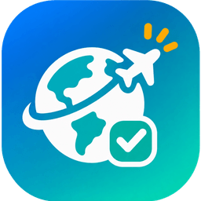

<!doctype html>
<html lang="ko">
<head>
<meta charset="utf-8">
<meta name="viewport" content="width=device-width, initial-scale=1, viewport-fit=cover">
<title>교환가자</title>
<meta name="description" content="교환가자 — a post-selection preparation app for exchange and summer school students: personalized checklist, program community, verified mentors and departure perks.">
<meta name="theme-color" content="#F2F4F6">
<link rel="icon" href="favicon-32.png" type="image/png">
<link rel="apple-touch-icon" href="icon-180.png">
<link rel="manifest" href="manifest.webmanifest">
<meta name="apple-mobile-web-app-capable" content="yes">
<meta name="mobile-web-app-capable" content="yes">
<meta name="apple-mobile-web-app-title" content="교환가자">
<meta name="apple-mobile-web-app-status-bar-style" content="default">
<link rel="preconnect" href="https://fonts.googleapis.com">
<link rel="preconnect" href="https://fonts.gstatic.com" crossorigin>
<link rel="preconnect" href="https://cdn.jsdelivr.net" crossorigin>
<link rel="stylesheet" href="https://fonts.googleapis.com/css2?family=Plus+Jakarta+Sans:wght@400;500;600;700;800&display=swap">
<link rel="stylesheet" href="https://cdn.jsdelivr.net/gh/orioncactus/pretendard@v1.3.9/dist/web/variable/pretendardvariable-dynamic-subset.min.css">
<style>
/* Layout: a true-size iPhone (393 × 852 pt) on a quiet mint stage, with a screen index beside it on wide screens. */
:root{
  --mint:#14DBBA;          /* 김과외 brand mint */
  --primary:#10BA9D;
  --primary-press:#0D9F86;
  --primary-ink:#0A8A74;
  --primary-soft:#E6FBF7;
  --primary-line:#B8F1E6;
  --navy:#012743;          /* 김과외 deep navy */
  --on-primary:#FFFFFF;
  --ink:#111827;
  --ink-2:#5F6B76;
  --ink-3:#9AA4AD;
  --line:#E7ECEE;
  --bg:#FFFFFF;
  --surface:#F4F7F7;
  --stage:#E9F3F1;
  --bezel:#0E1A20;
  --warn:#B45309; --warn-soft:#FEF3E2;
  --danger:#D93838; --danger-soft:#FDECEC;
  --shadow:0 6px 24px rgba(1,39,67,.08);
  --glow:0 18px 60px rgba(20,219,186,.45);
  --font:'Plus Jakarta Sans','Pretendard Variable','Pretendard',-apple-system,BlinkMacSystemFont,'Apple SD Gothic Neo','Malgun Gothic',system-ui,sans-serif;
  --font-ko:'Pretendard Variable','Pretendard',-apple-system,'Apple SD Gothic Neo','Malgun Gothic',sans-serif;
  --card:#FFFFFF; --track:#E7ECED; --hero:#012743; --hero-2:#0B3A5C; --mint-bright:#14DBBA;
  --card-shadow:0 1px 2px rgba(1,39,67,.04),0 4px 16px rgba(1,39,67,.05);
  --sab:34px;              /* iPhone home-indicator safe area */
}
@media (prefers-color-scheme: dark){:root:not([data-theme="light"]){
  --primary:#14C7A8; --primary-press:#10B095; --primary-ink:#45E3C8; --primary-soft:#0F2C28; --primary-line:#1C4C44;
  --navy:#BFE9FF; --on-primary:#04221D;
  --ink:#EDF2F3; --ink-2:#A2ADB5; --ink-3:#6E7A83; --line:#25313A;
  --bg:#0F161A; --surface:#172127; --stage:#070C0E; --bezel:#2A363D;
  --warn:#F5B454; --warn-soft:#33260F; --danger:#FF7B7B; --danger-soft:#3A1A1A;
  --shadow:0 6px 24px rgba(0,0,0,.35); --glow:0 18px 60px rgba(20,219,186,.28);
  --card:#1C2830; --track:#0F161A; --hero:#0D2B40; --hero-2:#123B57; --card-shadow:0 1px 2px rgba(0,0,0,.3);
  color-scheme:dark}}
:root[data-theme="dark"]{
  --primary:#14C7A8; --primary-press:#10B095; --primary-ink:#45E3C8; --primary-soft:#0F2C28; --primary-line:#1C4C44;
  --navy:#BFE9FF; --on-primary:#04221D;
  --ink:#EDF2F3; --ink-2:#A2ADB5; --ink-3:#6E7A83; --line:#25313A;
  --bg:#0F161A; --surface:#172127; --stage:#070C0E; --bezel:#2A363D;
  --warn:#F5B454; --warn-soft:#33260F; --danger:#FF7B7B; --danger-soft:#3A1A1A;
  --shadow:0 6px 24px rgba(0,0,0,.35); --glow:0 18px 60px rgba(20,219,186,.28);
  --card:#1C2830; --track:#0F161A; --hero:#0D2B40; --hero-2:#123B57; --card-shadow:0 1px 2px rgba(0,0,0,.3);
  color-scheme:dark}

html,body{height:100%}
body{margin:0;background:var(--stage);color:var(--ink);font-family:var(--font);font-size:15px;line-height:1.5;
  display:flex;align-items:center;justify-content:center;gap:64px;padding:16px;box-sizing:border-box;min-height:100%;-webkit-font-smoothing:antialiased}
*,*::before,*::after{box-sizing:border-box}
[hidden]{display:none!important}
button,input,select,textarea{font:inherit;color:inherit}
button{cursor:pointer;border:0;background:none;padding:0}
:focus-visible{outline:2px solid var(--primary);outline-offset:2px;border-radius:8px}
h1,h2,h3{margin:0;text-wrap:balance;letter-spacing:-.02em}
p{margin:0}
.ic{flex:none;display:block}
.num{font-variant-numeric:tabular-nums}
.ko{font-family:var(--font-ko)}

/* ---------- device: iPhone 15 / 16, 393 × 852 pt ---------- */
.device{position:relative;padding:12px;background:var(--bezel);border-radius:68px;box-shadow:0 30px 80px rgba(1,39,67,.2);flex:none;zoom:var(--z,1)}
.phone{position:relative;width:393px;height:852px;background:var(--bg);border-radius:56px;overflow:hidden;display:flex;flex-direction:column}
.status{height:54px;flex:none;display:grid;grid-template-columns:1fr 126px 1fr;align-items:center;font-size:16px;font-weight:700;padding:0 8px}
.status .time{text-align:center;letter-spacing:-.01em}
.status .sys{display:flex;gap:6px;align-items:center;justify-content:center}
#view{flex:1;min-height:0;display:flex;flex-direction:column;position:relative}
.scroll{flex:1;min-height:0;overflow-y:auto;overflow-x:hidden;scrollbar-width:none}
.scroll::-webkit-scrollbar{display:none}
.pad{padding:8px 20px 28px}
.cta{flex:none;padding:12px 20px calc(12px + var(--sab));background:var(--bg)}
.btn{width:100%;height:54px;border-radius:16px;background:var(--primary);color:var(--on-primary);font-weight:700;font-size:16px;display:flex;align-items:center;justify-content:center;gap:8px;box-shadow:none;transition:background .15s,transform .1s}
.btn:hover{background:var(--primary-press)}
.btn:active{transform:scale(.985)}
.btn[disabled]{background:var(--line);color:var(--ink-3);box-shadow:none;cursor:not-allowed}
.btn.ghost{background:var(--surface);color:var(--ink);box-shadow:none}
.btn.sm{height:40px;border-radius:12px;font-size:14px;width:auto;padding:0 16px}

.bar{flex:none;height:52px;display:flex;align-items:center;gap:8px;padding:0 12px 0 8px}
.bar h2{font-size:17px;font-weight:700;flex:1}
.iconbtn{width:40px;height:40px;border-radius:12px;display:grid;place-items:center;color:var(--ink)}
.iconbtn:hover{background:var(--surface)}
.bar.main{padding:0 12px 0 20px}
.bar.main h2{font-size:26px;font-weight:800}

/* onboarding */
.splash{flex:1;display:flex;flex-direction:column;align-items:center;justify-content:center;gap:28px;text-align:center;padding:0 24px}
.appicon{width:120px;height:120px;border-radius:32px;background:var(--mint);display:grid;place-items:center;color:#fff;box-shadow:var(--glow)}
.appicon.sm{width:36px;height:36px;border-radius:11px;box-shadow:none}
.appicon.logo{background:none;box-shadow:none;border-radius:0}.appicon.logo img{width:100%;height:100%;display:block}
.splash h1{font-family:var(--font-ko);font-size:40px;font-weight:900;letter-spacing:-.04em;margin-top:6px}
.splash p{color:var(--ink-2);font-size:16px;margin-top:6px}
.ob-title{font-size:26px;font-weight:800;line-height:1.3;margin-top:4px}
.ob-sub{color:var(--ink-2);font-size:14px;margin-top:8px}
.steps{display:flex;gap:6px;margin:4px 0 22px}
.steps i{height:4px;flex:1;border-radius:4px;background:var(--line)}
.steps i.on{background:var(--primary)}
.field{display:flex;flex-direction:column;gap:8px;margin-top:22px}
.field label,.field .lbl{font-size:13px;font-weight:700;color:var(--ink-2)}
.input{height:54px;border-radius:14px;border:1px solid var(--line);background:var(--bg);padding:0 16px;font-size:16px;width:100%}
.input:focus{outline:none;border-color:var(--primary);box-shadow:0 0 0 3px var(--primary-soft)}
.search{position:relative}
.search .ic{position:absolute;left:16px;top:50%;transform:translateY(-50%);color:var(--ink-3);pointer-events:none}
.search .input{padding-left:46px}
.chips{display:flex;flex-wrap:wrap;gap:8px}
.chip{height:38px;padding:0 16px;border-radius:19px;border:1px solid var(--line);font-size:14px;font-weight:500;color:var(--ink-2);background:var(--bg);white-space:nowrap}
.chip.on{background:var(--primary-soft);border-color:var(--primary);color:var(--primary-ink);font-weight:700}
.chip.sm{height:32px;padding:0 12px;font-size:13px}
.chip small{font-weight:500;color:var(--ink-3);margin-left:4px}
.hscroll{display:flex;gap:8px;overflow-x:auto;scrollbar-width:none;margin:0 -20px;padding:0 20px}
.hscroll::-webkit-scrollbar{display:none}
.social{display:flex;flex-direction:column;gap:10px}
.social button{height:52px;border-radius:14px;border:1px solid var(--line);font-weight:500;font-size:15px}
.social button:hover{background:var(--surface)}
.picked{display:flex;align-items:center;gap:12px;padding:14px 16px;border-radius:14px;border:1.5px solid var(--primary);background:var(--primary-soft)}
.picked .t{flex:1;min-width:0;font-weight:700}
.picked .t small{display:block;font-weight:500;color:var(--ink-2);font-size:12px}
.picked button{font-size:13px;font-weight:700;color:var(--primary-ink)}
.sugg.majors{max-height:280px;overflow:auto}.sugg .hn small{display:block;font-size:12px;color:var(--ink-3);font-weight:400}
.sugg{border:1px solid var(--line);border-radius:14px;overflow:hidden}
.sugg button{display:flex;align-items:center;gap:10px;width:100%;text-align:left;padding:12px 14px;border-bottom:1px solid var(--line);font-size:14px}
.sugg button:last-child{border-bottom:0}
.sugg button:hover{background:var(--surface)}
.sugg .hn{display:flex;flex-direction:column;min-width:0}
.sugg .hn b{font-weight:600}
.sugg .hn small{font-size:12px;color:var(--ink-3)}
.sugg .empty{padding:14px;color:var(--ink-3);font-size:13px}
.sugg mark,.srow mark{background:none;color:var(--primary-ink);font-weight:800}

.seg{display:grid;grid-template-columns:repeat(var(--n,3),1fr);background:var(--surface);border-radius:14px;padding:4px;gap:4px}
.seg button{height:40px;border-radius:11px;font-weight:600;color:var(--ink-2);font-size:14px}
.seg button.on{background:var(--bg);color:var(--ink);font-weight:700;box-shadow:0 1px 4px rgba(1,39,67,.1)}
.mono{width:40px;height:40px;border-radius:12px;background:var(--surface);color:var(--navy);display:grid;place-items:center;font-weight:900;font-size:12px;letter-spacing:-.03em;flex:none;overflow:hidden}
.srow.on .mono{background:var(--bg);color:var(--primary-ink)}
.sect-label{display:flex;justify-content:space-between;align-items:baseline;font-size:13px;font-weight:700;color:var(--ink-2);margin:24px 0 10px}
.sect-label span{font-weight:500;color:var(--ink-3)}
.srow{display:flex;align-items:center;gap:12px;width:100%;text-align:left;padding:10px 8px;border-radius:14px}
.srow:hover{background:var(--surface)}
.srow.on{background:var(--primary-soft)}
.srow .t{flex:1;min-width:0}
.srow b{display:block;font-size:14px;font-weight:600;line-height:1.35;overflow-wrap:anywhere}
.srow small{display:block;font-size:12px;color:var(--ink-3)}
.srow .ok{color:var(--primary-ink)}
.more{width:100%;height:44px;border-radius:12px;background:var(--surface);font-weight:700;font-size:14px;color:var(--ink-2);margin-top:8px}
.loadmsg{padding:24px 0;text-align:center;color:var(--ink-3);font-size:14px}

.school-card{display:flex;align-items:center;gap:12px;padding:14px 16px;border-radius:18px;background:var(--surface)}
.school-card .mono{background:var(--bg);color:var(--primary-ink);width:46px;height:46px}
.school-card .t{flex:1;min-width:0}
.school-card b{display:block;font-size:15px;line-height:1.3}
.school-card small{color:var(--ink-2);font-size:13px}
.school-card button{font-size:13px;font-weight:700;color:var(--primary-ink);flex:none}
.popt{display:block;width:100%;text-align:left;padding:16px;border:1px solid var(--line);border-radius:18px;background:var(--bg);margin-top:10px}
.popt.on{border-color:var(--primary);background:var(--primary-soft);box-shadow:0 0 0 1px var(--primary) inset}
.popt .h{display:flex;align-items:center;gap:10px}
.popt .h .t{flex:1;min-width:0}
.popt .h b{display:block;font-size:16px;font-weight:800}
.radio-dot{width:22px;height:22px;border-radius:50%;border:2px solid var(--line);flex:none;display:grid;place-items:center}
.popt.on .radio-dot{border-color:var(--primary);background:var(--primary)}
.popt.on .radio-dot::after{content:"";width:8px;height:8px;border-radius:50%;background:var(--on-primary)}
.popt p{font-size:14px;color:var(--ink-2);margin-top:8px;line-height:1.55}
.popt dl{display:grid;grid-template-columns:auto 1fr;gap:4px 14px;margin:12px 0 0;font-size:13px}
.popt dt{color:var(--ink-3)}
.popt dd{margin:0;font-weight:600}
.loading{flex:1;display:flex;flex-direction:column;align-items:center;justify-content:center;gap:18px;text-align:center;padding:0 32px}
.loading .appicon{animation:pulse 1.1s ease-in-out infinite}
@keyframes pulse{50%{transform:scale(.92)}}

/* home */
.hero{border-radius:24px;background:var(--primary-soft);padding:20px;display:flex;flex-direction:column;gap:16px}
.hero .top{display:flex;align-items:center;gap:12px}
.hero .mono{background:var(--bg);color:var(--primary-ink)}
.hero .top .t{flex:1;min-width:0}
.hero .top b{display:block;font-size:16px;font-weight:800;line-height:1.3}
.hero .top small{color:var(--ink-2);font-size:13px}
.meter{height:8px;border-radius:8px;background:var(--bg);overflow:hidden}
.meter i{display:block;height:100%;background:var(--primary);border-radius:8px;transition:width .35s}
.next{margin-top:14px;display:flex;align-items:center;gap:12px;padding:14px 16px;border-radius:18px;border:1px solid var(--line);text-align:left;width:100%}
.next .lbl{font-size:12px;font-weight:700;color:var(--warn);text-transform:uppercase;letter-spacing:.04em}
.next b{display:block;font-size:15px}
.next .t{flex:1;min-width:0}
.filters{margin:24px -20px 6px}
.list-head{display:flex;justify-content:space-between;align-items:baseline;margin-top:22px}
.list-head h3{font-size:18px;font-weight:800}
.list-head span{font-size:13px;color:var(--ink-3)}
.task{display:flex;align-items:center;gap:12px;padding:14px 0;border-bottom:1px solid var(--line)}
.task:last-child{border-bottom:0}
.tick{width:28px;height:28px;border-radius:50%;border:2px solid var(--line);display:grid;place-items:center;color:transparent;flex:none;transition:all .15s}
.tick:hover{border-color:var(--primary)}
.tick.on{background:var(--primary);border-color:var(--primary);color:var(--on-primary)}
.task .body{flex:1;min-width:0;text-align:left;display:flex;align-items:center;gap:8px}
.task .body .t{flex:1;min-width:0}
.task b{display:block;font-size:15px;font-weight:700;line-height:1.35}
.task.done b{color:var(--ink-3);text-decoration:line-through;text-decoration-color:var(--ink-3)}
.task .meta{display:flex;gap:6px;align-items:center;font-size:12px;color:var(--ink-3);margin-top:3px;flex-wrap:wrap}
.task .chev{color:var(--ink-3)}
.pill{display:inline-flex;align-items:center;height:22px;padding:0 8px;border-radius:6px;font-size:11px;font-weight:700;white-space:nowrap}
.pill.cat{background:var(--surface);color:var(--ink-2)}
.pill.ok{background:var(--primary-soft);color:var(--primary-ink)}
.pill.warn{background:var(--warn-soft);color:var(--warn)}
.pill.bad{background:var(--danger-soft);color:var(--danger)}
.nudge{margin-top:22px;display:flex;gap:14px;align-items:center;padding:16px;border-radius:18px;background:var(--surface);text-align:left;width:100%}
.nudge .t{flex:1;min-width:0}
.nudge b{display:block;font-size:14px}
.nudge small{font-size:13px;color:var(--ink-2)}
.nudge .ico{width:44px;height:44px;border-radius:14px;background:var(--bg);display:grid;place-items:center;color:var(--primary-ink);flex:none}

/* detail */
.d-head{border-bottom:8px solid var(--surface);margin:0 -20px;padding:4px 20px 20px}
.d-head h1{font-size:26px;font-weight:800;line-height:1.3;margin-top:10px}
.d-head .when{display:flex;align-items:center;gap:8px;margin-top:12px;color:var(--ink-2);font-size:14px}
.d-head .when b{color:var(--ink)}
.d-sec{padding-top:22px}
.d-sec h3{font-size:16px;font-weight:800;margin-bottom:10px}
.d-sec p{color:var(--ink);font-size:15px;line-height:1.65}
.tbl{width:100%;border-collapse:collapse;font-size:14px;border-radius:14px;overflow:hidden;background:var(--surface)}
.tbl th,.tbl td{text-align:left;padding:12px 14px;vertical-align:top;border-bottom:1px solid var(--bg)}
.tbl tr:last-child th,.tbl tr:last-child td{border-bottom:0}
.tbl th{width:34%;color:var(--ink-2);font-weight:500}
.tbl td{font-weight:500}
.src{display:flex;align-items:center;gap:12px;padding:14px 16px;border:1px solid var(--line);border-radius:14px;text-decoration:none;color:var(--ink);margin-bottom:8px}
.src:hover{border-color:var(--primary)}
.src .t{flex:1;min-width:0}
.src b{display:block;font-size:14px;font-weight:700}
.src small{display:block;color:var(--ink-3);font-size:12px;white-space:nowrap;overflow:hidden;text-overflow:ellipsis}
.src .ic{color:var(--primary-ink)}
.eng{border:1.5px solid var(--primary);border-radius:16px;padding:14px;background:var(--bg)}
.eng.est{border-style:dashed;border-color:var(--line)}
.eng-top{display:flex;justify-content:space-between;align-items:center;gap:8px}
.eng-top b{font-size:14px}
.eng-grid{display:grid;grid-template-columns:repeat(auto-fit,minmax(90px,1fr));gap:8px;margin-top:12px}
.eng-grid div{background:var(--primary-soft);border-radius:12px;padding:10px;display:flex;flex-direction:column;min-width:0}
.eng.est .eng-grid div{background:var(--surface)}
.eng-grid small{font-size:11px;font-weight:700;color:var(--ink-2);letter-spacing:.02em}
.eng-grid b{font-size:24px;font-weight:900;line-height:1.15;color:var(--primary-ink);letter-spacing:-.02em}
.eng.est .eng-grid b{color:var(--ink);font-size:18px}
.eng-grid em{font-style:normal;font-size:11px;color:var(--ink-3);line-height:1.3;margin-top:2px}
.eng-grid small,.eng-grid em{overflow-wrap:normal;word-break:keep-all;hyphens:none}
.eng-grid div.wide{grid-column:1/-1}
.eng-grid div.wide b{font-size:17px;line-height:1.3;letter-spacing:-.01em}
.eng>p{font-size:13px;color:var(--ink-2);margin-top:10px;line-height:1.5}
.guide{list-style:none;margin:0;padding:0;display:flex;flex-direction:column}
.guide>li{display:flex;gap:12px;position:relative;padding-bottom:18px}
.guide>li:not(:last-child)::before{content:"";position:absolute;left:13px;top:30px;bottom:2px;width:2px;background:var(--primary-line)}
.guide .gn{width:28px;height:28px;border-radius:50%;background:var(--primary-soft);color:var(--primary-ink);display:grid;place-items:center;font-weight:800;font-size:13px;flex:none;z-index:1}
.guide .gt{flex:1;min-width:0;padding-top:3px}
.guide .gt b{display:block;font-size:15px;line-height:1.35}
.guide .gt p{font-size:14px;color:var(--ink-2);line-height:1.55;margin-top:4px}
.need{list-style:none;margin:8px 0 0;padding:10px 12px;border-radius:12px;background:var(--surface);display:flex;flex-direction:column;gap:5px;font-size:13px;font-weight:500}
.need li{display:flex;gap:7px;align-items:flex-start}
.need .ic{color:var(--primary-ink);margin-top:2px}
.src.mini{padding:10px 12px;margin:8px 0 0;border-radius:12px;gap:10px}
.src.mini b{font-size:13px}
.src.guess{border-style:dashed}
.src.guess .ic{color:var(--ink-3)}
.plink{margin:-2px 2px 0}
.depfield{margin-top:10px;padding:14px;border-radius:14px;background:var(--surface);display:flex;flex-direction:column;gap:10px}
.dhead{font-size:14px;font-weight:700}
.dates{display:grid;grid-template-columns:minmax(0,1fr) minmax(0,1fr);gap:8px}
.datebox,.depfield .datebox{position:relative;display:flex;flex-direction:column;align-items:stretch;gap:3px;padding:10px 12px;border:1px solid var(--line);border-radius:14px;background:var(--bg);min-width:0;cursor:pointer}
.datebox small{display:flex;align-items:center;gap:5px;font-size:12px;font-weight:700;color:var(--ink-2)}
.datebox small .ic{color:var(--primary-ink)}
.datebox .dv{font-size:15px;font-weight:800;white-space:nowrap;overflow:hidden;text-overflow:ellipsis;color:var(--ink)}
.datebox input{position:absolute;inset:0;width:100%;height:100%;min-width:0;margin:0;padding:0;border:0;opacity:0;cursor:pointer;-webkit-appearance:none;appearance:none;font-size:16px}
.datebox:focus-within{border-color:var(--primary);box-shadow:0 0 0 3px var(--primary-soft)}
.depfield label{display:flex;align-items:center;gap:8px;font-size:14px;font-weight:700}
.depfield label .ic{color:var(--primary-ink)}
.depfield .input{height:48px;font-size:15px}
.depfield small{font-size:12px;color:var(--ink-2);line-height:1.5}
.stayinfo{display:flex;flex-direction:column;gap:2px;padding:10px 12px;border-radius:12px;background:var(--primary-soft);font-size:13px;line-height:1.45}
.stayinfo b{font-size:14px;color:var(--ink)}
.stayinfo span{color:var(--ink-2)}
.stayinfo .warn{color:var(--danger)}
.langs{display:flex;flex-direction:column;gap:10px;width:100%;max-width:300px}
.langopt{display:flex;align-items:center;gap:10px;padding:16px 18px;border:1.5px solid var(--line);border-radius:16px;text-align:left}
.langopt b{font-size:17px}
.langopt small{flex:1;color:var(--ink-3);font-size:13px}
.langopt.on{border-color:var(--primary);background:var(--primary-soft)}
.langopt.on .radio-dot{border-color:var(--primary);background:var(--primary)}
.langopt.on .radio-dot::after{content:"";width:8px;height:8px;border-radius:50%;background:var(--on-primary)}
.verified{display:flex;gap:10px;align-items:flex-start;padding:14px 16px;border-radius:14px;background:var(--primary-soft);font-size:13px;color:var(--ink-2)}
.verified b{color:var(--ink)}
.verified .ic{color:var(--primary-ink);margin-top:1px}
.switch{width:50px;height:30px;border-radius:15px;background:var(--line);position:relative;flex:none;transition:background .2s}
.switch::after{content:"";position:absolute;top:3px;left:3px;width:24px;height:24px;border-radius:50%;background:#fff;box-shadow:0 1px 3px rgba(0,0,0,.2);transition:transform .2s}
.switch.on{background:var(--primary)}
.switch.on::after{transform:translateX(20px)}
.linkbtn{display:flex;align-items:center;gap:8px;color:var(--ink-2);font-size:14px;padding:16px 0;text-align:left}
.linkbtn:hover{color:var(--ink)}

/* community */
.peers{display:flex;gap:14px;overflow-x:auto;scrollbar-width:none;margin:0 -20px;padding:4px 20px 6px}
.peers::-webkit-scrollbar{display:none}
.peer{display:flex;flex-direction:column;align-items:center;gap:6px;width:64px;flex:none;text-align:center}
.ava{width:52px;height:52px;border-radius:50%;display:grid;place-items:center;font-weight:700;font-size:16px;color:var(--navy);background:var(--surface);position:relative;flex:none}
.peer small{font-size:11px;color:var(--ink-2);line-height:1.25}
.peer small b{display:block;color:var(--ink);font-weight:700;font-size:12px}
.compose{margin-top:18px;padding:16px;border-radius:18px;border:1px solid var(--line)}
.compose p{font-size:14px;font-weight:700;margin-bottom:10px}
.compose .row{display:flex;gap:8px}
.compose .input{height:44px;font-size:14px;border-radius:12px}
.post{padding:18px 0;border-bottom:1px solid var(--line)}
.post .who{display:flex;align-items:center;gap:10px}
.post .who .ava{width:36px;height:36px;font-size:13px}
.post .who .t{flex:1;min-width:0}
.post .who b{font-size:14px;display:flex;align-items:center;gap:6px;flex-wrap:wrap}
.post .who small{font-size:12px;color:var(--ink-3)}
.post .txt{margin-top:10px;font-size:15px;line-height:1.6}
.post .q{font-weight:700}
.post .foot{display:flex;gap:14px;margin-top:10px;font-size:13px;color:var(--ink-3)}
.post .foot button{color:var(--ink-3);display:flex;align-items:center;gap:4px}
.post .foot button.on{color:var(--primary-ink);font-weight:700}
.answer{margin-top:12px;padding:12px 14px;border-radius:14px;background:var(--surface);font-size:14px;line-height:1.55}
.answer b{display:flex;align-items:center;gap:6px;font-size:13px;margin-bottom:4px}
.badge{display:inline-flex;align-items:center;gap:3px;color:var(--primary-ink);font-size:12px;font-weight:700}

/* mentors */
.mhero{border-radius:22px;background:var(--navy);color:var(--bg);padding:20px;display:flex;flex-direction:column;gap:12px}
.mhero b{font-size:18px;font-weight:800;line-height:1.4}
.mhero .flow{display:flex;gap:6px;flex-wrap:wrap}
.mhero .flow span{font-size:12px;padding:5px 10px;border-radius:8px;background:rgba(255,255,255,.12);font-weight:500}
.mentor{display:flex;gap:14px;padding:18px 0;border-bottom:1px solid var(--line);text-align:left;width:100%}
.mentor .ava{width:56px;height:56px;background:var(--primary-soft);color:var(--primary-ink)}
.mentor .t{flex:1;min-width:0}
.mentor .name{display:flex;align-items:center;gap:6px;font-weight:800;font-size:16px;flex-wrap:wrap}
.mentor .prog{display:flex;align-items:center;gap:4px;font-size:13px;color:var(--ink-3);margin-top:3px}
.mentor .school{display:flex;flex-wrap:wrap;align-items:center;gap:6px;margin-top:4px;font-size:14px}.mentor .school b{font-weight:700;color:var(--ink)}
.stars{color:#F5B400;letter-spacing:1px;font-size:13px}.stars i{font-style:normal;color:var(--line)}
.rvavg{display:inline-flex;align-items:center;gap:3px;font-size:14px;font-weight:600;color:var(--ink-2);margin-left:6px}.rvavg .ic{color:#F5B400}
.rvlist{margin-top:10px}.rv{padding:12px 0;border-top:1px solid var(--line)}.rv:first-child{border-top:0}
.rvh{display:flex;align-items:center;gap:8px;flex-wrap:wrap;font-size:13px}.rvh time{margin-left:auto;color:var(--ink-3);font-size:12px}
.rvs{display:block;font-size:12px;color:var(--ink-3);margin-top:2px}.rv p{font-size:14px;line-height:1.55;margin-top:6px;color:var(--ink)}
.rvform{background:var(--surface);border-radius:16px;padding:12px;margin-top:6px}.rvstars{display:flex;gap:4px;margin-bottom:8px}
.rvstars button{font-size:28px;line-height:1;color:var(--line);padding:2px}.rvstars button.on{color:#F5B400}
.chatrow .mono{flex:none}.chatrow .ct{font-size:11px;color:var(--ink-3);align-self:flex-start;margin-top:4px}.chatrow .cs{color:var(--ink-2)!important}
.ctitle{display:flex;align-items:center;gap:6px;min-width:0}.ctitle b{min-width:0;overflow:hidden;text-overflow:ellipsis;white-space:nowrap}.ctitle .pill{flex:none}
.mform .mrow.two{grid-template-columns:1fr 1fr}.mform .mrow.one{grid-template-columns:1fr}
.bar.main{padding-left:8px}.bar.main h2:first-child{padding-left:12px}
.legal{font-size:14px;line-height:1.65;color:var(--ink)}.legal .meta{font-size:12px;color:var(--ink-3);margin-bottom:10px}.legal h2{font-size:16px;font-weight:700;margin:22px 0 6px}
.legal p,.legal li{color:var(--ink-2);margin:6px 0}.legal ul,.legal ol{padding-left:18px}.legal table{width:100%;border-collapse:collapse;font-size:12.5px;margin:10px 0}
.legal th,.legal td{border:1px solid var(--line);padding:6px;text-align:left;vertical-align:top}.legal th{background:var(--surface)}.legal .card{background:none;padding:0;border:0;box-shadow:none}
#view,#view .scroll,.sheet,.sheet .scroll{touch-action:pan-y pinch-zoom}
.mentor .tags{display:flex;gap:6px;flex-wrap:wrap;margin-top:8px}
.mentor .bottom{display:flex;justify-content:space-between;align-items:center;margin-top:10px;font-size:13px}
.mentor .rate{color:var(--ink-2);display:flex;align-items:center;gap:4px}
.mentor .rate .ic{color:#F5B400}
.mentor .price{font-weight:800;font-size:15px}
.mentor .price small{font-weight:500;color:var(--ink-3);font-size:12px}

/* sheet */
.scrim{position:absolute;inset:0;background:rgba(1,20,30,.45);z-index:20;opacity:0;pointer-events:none;transition:opacity .2s}
.scrim.on{opacity:1;pointer-events:auto}
.sheet{position:absolute;left:0;right:0;bottom:0;z-index:21;background:var(--bg);border-radius:28px 28px 0 0;max-height:88%;display:flex;flex-direction:column;transform:translateY(102%);transition:transform .28s cubic-bezier(.2,.8,.2,1)}
.sheet.on{transform:none}
.sheet .grab{width:40px;height:5px;border-radius:3px;background:var(--line);margin:10px auto 4px;flex:none}
.sheet .scroll{padding:8px 20px 8px}
.vlist{display:flex;flex-direction:column;gap:10px;margin-top:4px}
.vitem{display:flex;gap:10px;align-items:flex-start;font-size:14px}
.vitem .ic{color:var(--primary-ink);margin-top:2px}
.vitem small{display:block;color:var(--ink-3);font-size:12px}
.slots{display:grid;grid-template-columns:repeat(3,1fr);gap:8px}
.slots .chip{width:100%;height:auto;padding:8px 0;border-radius:12px;display:flex;flex-direction:column;align-items:center;line-height:1.3}
.slots .chip small{font-size:11px;font-weight:500;opacity:.8;margin:0}
.pay{border-radius:14px;background:var(--surface);padding:14px 16px;font-size:14px;display:flex;flex-direction:column;gap:6px}
.pay div{display:flex;justify-content:space-between}
.pay p{font-size:12px;color:var(--ink-3)}

/* perks */
.cat-row{display:grid;grid-template-columns:repeat(4,1fr);gap:8px}
.cat-row.five{grid-template-columns:repeat(5,1fr);gap:4px}
.cat-row.five button{padding:10px 2px;font-size:11px}
.cat-row.five button .ico{width:42px;height:42px;border-radius:14px}
.tripcard{display:flex;align-items:center;gap:12px;width:100%;padding:14px 16px;border-radius:18px;background:var(--primary-soft);text-align:left}
.tripcard .ico{width:42px;height:42px;border-radius:13px;background:var(--bg);display:grid;place-items:center;color:var(--primary-ink);flex:none}
.tripcard .t{flex:1;min-width:0;display:flex;flex-direction:column}
.tripcard small{font-size:12px;color:var(--ink-2)}
.tripcard b{font-size:16px}
.tripcard .num{font-size:13px;color:var(--ink-2)}
.tripcard .edit{font-size:13px;font-weight:700;color:var(--primary-ink)}
.perk-intro{font-size:13px;color:var(--ink-2);margin-top:4px;line-height:1.5}
.perk{display:flex;gap:12px;padding:14px;border:1px solid var(--line);border-radius:16px;margin-top:10px;text-decoration:none;color:var(--ink);align-items:flex-start}
.perk:hover{border-color:var(--primary)}
.perk.guess{border-style:dashed}
.perk .pm{width:44px;height:44px;border-radius:13px;background:var(--surface);color:var(--navy);display:grid;place-items:center;font-weight:900;font-size:13px;flex:none;letter-spacing:-.02em}
.perk .t{flex:1;min-width:0;display:flex;flex-direction:column;gap:3px}
.perk b{font-size:15px;display:flex;align-items:center;gap:6px;flex-wrap:wrap}
.perk small{font-size:13px;color:var(--ink-2);line-height:1.45}
.perk .go{display:flex;align-items:center;gap:4px;font-size:13px;font-weight:700;color:var(--primary-ink);margin-top:4px}
.perk .go em{font-style:normal;font-weight:500;color:var(--ink-3);margin-left:4px}
.cat-row button{display:flex;flex-direction:column;align-items:center;gap:6px;padding:12px 4px;border-radius:16px;font-size:12px;font-weight:600;color:var(--ink-2)}
.cat-row button .ico{width:46px;height:46px;border-radius:15px;background:var(--surface);display:grid;place-items:center;color:var(--ink-2)}
.cat-row button.on{color:var(--ink)}
.cat-row button.on .ico{background:var(--primary-soft);color:var(--primary-ink)}
.offer{display:flex;gap:14px;padding:16px;border-radius:20px;border:1px solid var(--line);margin-top:12px;align-items:center}
.offer .ico{width:50px;height:50px;border-radius:16px;background:var(--surface);display:grid;place-items:center;font-weight:900;color:var(--navy);font-size:13px;flex:none}
.offer .t{flex:1;min-width:0}
.offer b{display:block;font-size:15px}
.offer small{display:block;font-size:13px;color:var(--ink-2)}
.csearch{position:relative;display:block}
.csearch .ic{position:absolute;left:14px;top:50%;transform:translateY(-50%);color:var(--ink-3);pointer-events:none}
.csearch .input{padding-left:42px;height:46px;font-size:15px}
.mychips{display:flex;gap:8px;overflow-x:auto;scrollbar-width:none;margin:12px -20px 0;padding:0 20px}
.mychips:empty{display:none}
.mychips .chip{display:inline-flex;align-items:center;gap:4px}
.ccard{margin-top:12px;padding:16px;border-radius:18px;background:var(--surface)}
.ctop{display:flex;align-items:center;gap:12px}
.ctop .mono{background:var(--bg)}
.ctop .t{flex:1;min-width:0}.ctop b{display:block;font-size:16px;font-weight:800;overflow-wrap:anywhere}.ctop small{font-size:12px;color:var(--ink-2)}
.ctop .chip{display:inline-flex;align-items:center;gap:4px;flex:none}
.ctop .btn{flex:none}
.cnote{margin-top:10px;font-size:12px;color:var(--ink-3)}
.clock small{display:block;font-size:13px;color:var(--ink-2);margin:-4px 0 12px;line-height:1.5}
.input.area{height:auto;padding:12px 14px;font-size:15px;line-height:1.5;resize:vertical;font-family:inherit}
.hint{margin-top:6px;font-size:12px !important;color:var(--ink-3) !important;line-height:1.5 !important}
.chatrow .ava{width:40px;height:40px;font-size:14px;background:var(--primary-soft);color:var(--primary-ink)}
.chatrow small{overflow:hidden;text-overflow:ellipsis;white-space:nowrap}
.chat{display:flex;flex-direction:column;gap:3px}
.chat .cspacer{flex:1 1 auto;min-height:8px}
.msg .mt{display:flex;flex-direction:column;flex:none;gap:1px;margin-bottom:3px}.msg.me .mt{align-items:flex-end}.msg.them .mt{align-items:flex-start}
.msg .mrow .mt time{margin:0}.msg .ur{font-size:10px;font-weight:800;line-height:1;color:#F5B400}
.ubadge{display:inline-grid;place-items:center;min-width:18px;height:18px;padding:0 5px;border-radius:9px;background:#FF5A3C;color:#fff;font-size:11px;font-weight:800;line-height:1}
.chatrow .cside{display:flex;flex-direction:column;align-items:flex-end;gap:5px;flex:none}.chatrow .cside .ct{margin:0}
.tabbar button{position:relative}.tabbar button .ubadge{position:absolute;top:2px;left:calc(50% + 6px);height:16px;min-width:16px;font-size:10px;padding:0 4px}
.chat .msg.me{padding:0;gap:0}  /* .me is also the Me-tab card class */
.chat .msg.first{margin-top:10px}.chat .sysmsg{margin:10px 0 4px}
.msg .mrow{display:flex;align-items:flex-end;gap:5px}.msg.me .mrow{justify-content:flex-end}
.msg .mrow time{flex:none;font-size:10px;line-height:1;margin-bottom:3px;color:var(--ink-3)}
.msg .mb{display:flex;flex-direction:column;gap:3px;min-width:0;align-items:inherit}.msg.me .mb{align-items:flex-end}.msg.them .mb{align-items:flex-start}
.msg .mb p{padding:8px 12px;border-radius:16px}
.mfile{position:relative;display:block;width:220px;max-width:100%;max-height:320px;border:0;padding:0;border-radius:14px;overflow:hidden;background:var(--track)}
.mfile img,.mfile video{display:block;width:100%;height:100%;object-fit:cover}.mfile video{background:#000}
.mfile .up{position:absolute;inset:auto 8px 8px auto;font-size:11px;font-weight:700;color:#fff;background:rgba(0,0,0,.55);padding:3px 8px;border-radius:10px}
.mfile .gtxt{display:none}.mfile.gone{aspect-ratio:auto!important;padding:10px 12px;width:auto}.mfile.gone img,.mfile.gone video{display:none}.mfile.gone .gtxt{display:block;font-size:13px;color:var(--ink-3)}
.chatbar .attach{flex:none;color:var(--ink-2)}
.mgrid{position:relative;display:grid;gap:3px;width:240px;max-width:100%;border-radius:14px;overflow:hidden}.mgrid.c2{grid-template-columns:1fr 1fr}.mgrid.c3{grid-template-columns:1fr 1fr 1fr}
.mcell{aspect-ratio:1;border:0;padding:0;background:var(--track);overflow:hidden}.mcell img{width:100%;height:100%;object-fit:cover;display:block}.mcell.gone img{display:none}
.mgrid .up{position:absolute;right:8px;bottom:8px;font-size:11px;font-weight:700;color:#fff;background:rgba(0,0,0,.55);padding:3px 8px;border-radius:10px}
#noticeBar:empty{display:none}
.cnotice{display:flex;align-items:center;gap:10px;width:calc(100% - 24px);margin:4px 12px 6px;padding:10px 12px;border-radius:14px;background:var(--card);box-shadow:var(--card-shadow);text-align:left;color:var(--ink)}
.cnotice>.ic:first-child{color:var(--primary-ink);flex:none}.cnotice .t{flex:1;min-width:0;display:flex;flex-direction:column}
.cnotice b{font-size:14px;font-weight:700;overflow:hidden;text-overflow:ellipsis;white-space:nowrap}.cnotice small{font-size:11px;color:var(--ink-3)}
.pollc{width:250px;max-width:100%;display:flex;flex-direction:column;gap:6px;padding:12px;border-radius:16px;background:var(--card);border:1px solid var(--line);color:var(--ink)}
.pollc .pk{display:flex;align-items:center;gap:4px;font-size:11px;font-weight:700;color:var(--primary-ink)}.pollc .pq{font-size:15px;line-height:1.35}
.popt{position:relative;display:flex;align-items:center;gap:8px;width:100%;min-height:38px;padding:8px 10px;border-radius:10px;border:1px solid var(--line);background:var(--surface);text-align:left;overflow:hidden;font-size:14px;color:var(--ink)}
.popt .bar{position:absolute;left:0;top:0;bottom:0;background:var(--primary-soft);transition:width .3s}.popt>span:not(.bar){position:relative}
.popt .pm{width:14px;font-weight:800;color:var(--primary-ink)}.popt .po{flex:1;min-width:0;overflow-wrap:anywhere}.popt .pn{font-size:12px;font-weight:700;color:var(--ink-2)}
.popt.on{border-color:var(--primary)}.popt:disabled{opacity:.85}
.pollc .pf{font-size:12px;color:var(--ink-3)}.pollc .pf .linkbtn{display:inline;padding:0;font-size:12px}
.moregrid{display:grid;grid-template-columns:repeat(3,1fr);gap:10px;padding:8px 0 12px}
.moregrid button{display:flex;flex-direction:column;align-items:center;gap:8px;padding:16px 6px;border-radius:16px;background:var(--surface);font-size:13px;font-weight:600;color:var(--ink)}
.moregrid .ic{color:var(--primary-ink)}
.mform .popin{margin-top:8px}
.mform label.pchk{flex-direction:row;align-items:center;gap:6px;font-size:14px}
.chat-info{display:flex;gap:10px;align-items:flex-start;padding:12px 14px;border-radius:14px;background:var(--primary-soft);font-size:13px;color:var(--ink-2);line-height:1.5;margin-bottom:6px}
.chat-info b{color:var(--ink)}.chat-info .ic{color:var(--primary-ink);flex:none;margin-top:1px}
.msg{max-width:80%;display:flex;flex-direction:column;gap:3px}
.msg p{padding:10px 14px;border-radius:18px;font-size:15px;line-height:1.5;white-space:pre-wrap;overflow-wrap:anywhere}
.msg time{font-size:11px;color:var(--ink-3)}
.msg.me{align-self:flex-end;align-items:flex-end}
.msg.me p{background:var(--primary);color:var(--on-primary);border-bottom-right-radius:6px}
.msg.them{align-self:flex-start}
.msg.them p{background:var(--surface);color:var(--ink);border-bottom-left-radius:6px}
.chatbar{display:flex;gap:8px;border-top:1px solid var(--line)}
.chatbar .input{height:44px;font-size:15px;border-radius:22px}
.chatbar .btn{border-radius:22px;flex:none}
.bar h2 .badge{margin-left:6px;vertical-align:middle}
.pnote{display:flex;gap:8px;align-items:flex-start;margin-top:10px;padding:10px 12px;border-radius:12px;background:var(--warn-soft);color:var(--ink);font-size:13px!important;line-height:1.5!important}
.pnote .ic{color:var(--warn);flex:none;margin-top:2px}
.seg.regions{gap:2px;padding:3px}
.seg.regions button{font-size:13px;padding:0 2px;letter-spacing:-.02em;white-space:nowrap}
.jopt{margin-top:14px}.jopt p{font-size:14px;font-weight:700;margin-bottom:10px}
.cjoinbtn{margin-top:14px;height:46px;font-size:15px}
.ccard .cnote{margin-top:8px}
.msg .gn{display:flex;align-items:center;gap:6px;font-size:12px;font-weight:700;color:var(--ink-2);margin-bottom:2px}
#view.surf .msg.them p{background:var(--card)}
.pill.mst{height:18px;font-size:10px;padding:0 6px}
.post .foot span{display:flex;align-items:center;gap:4px}
.phone:has(.chatbar) .toast{bottom:calc(170px + var(--sab))}
.empty-state{display:flex;flex-direction:column;align-items:center;text-align:center;gap:6px;padding:36px 16px;margin-top:12px;border-radius:20px;background:var(--card);color:var(--ink-3)}
.ftip{font-size:12px;color:var(--ink-3);line-height:1.4}
.board-head{display:flex;align-items:center;justify-content:space-between}
.writebtn{gap:6px;height:36px;padding:0 14px}.btn.danger{background:#E5484D;color:#fff}.celebrate{display:flex;flex-direction:column;align-items:center;text-align:center;gap:8px;padding:28px 20px}.celebrate .cel-ico{width:64px;height:64px;border-radius:50%;background:var(--primary);color:#fff;display:grid;place-items:center;animation:celpop .6s cubic-bezier(.2,1.4,.4,1)}.celebrate b{font-size:18px;font-weight:800;margin-top:6px}.celebrate small{color:var(--ink-2);font-size:14px}@keyframes celpop{0%{transform:scale(.4);opacity:0}100%{transform:scale(1);opacity:1}}.msg.them .mwho{display:flex;align-items:center;gap:6px;margin:0 0 4px 2px;font-size:12px;color:var(--ink-2)}.msg.them .mwho .ava{width:22px;height:22px;font-size:11px}.btabs{margin:14px -20px 10px;padding:0 20px;display:flex;gap:8px}.board-head h3 span{font-size:inherit;color:inherit;font-weight:inherit;letter-spacing:inherit}.cmt-h{font-size:16px;font-weight:800;margin:18px 2px 8px}.cmt{padding:12px 2px;border-top:1px solid var(--line)}.cmt .who{display:flex;align-items:center;gap:10px}.cmt .who .t{flex:1;min-width:0;display:flex;flex-direction:column}.cmt .who b{font-size:14px;font-weight:700;display:flex;align-items:center;gap:6px}.cmt .who small{font-size:12px;color:var(--ink-3);margin-top:1px}.cmt.reply{margin-left:40px;padding:10px 2px;border-top:1px dashed var(--line)}.cmt.reply .who .ava{width:24px;height:24px;font-size:11px}.cmt.reply p,.cmt.reply .cmt-act{margin-left:34px}.cmt-act{display:flex;gap:12px}.replyto{display:flex;align-items:center;gap:6px;font-size:12px;color:var(--ink-2);background:var(--surface);padding:6px 12px}.replyto span{flex:1}.replyto button{border:0;background:none;color:var(--ink-3);font-size:14px;padding:2px 6px}.cmt .who .ava{width:30px;height:30px;font-size:12px}.cmt p{margin:6px 0 0 40px;font-size:15px;line-height:1.5;white-space:pre-wrap}.cmt-act{margin:4px 0 0 40px}.cmt-act button{border:0;background:none;color:var(--ink-3);font-size:12px;padding:2px 0;display:inline-flex;gap:4px;align-items:center}.cmtbar{display:flex;gap:8px;align-items:center}.cmtbar .input{flex:1;height:44px}.cmt-anon{display:flex;align-items:center;gap:4px;font-size:12px;color:var(--ink-2);white-space:nowrap}.post .txt[data-act]{cursor:pointer}.pview{box-shadow:none;border:0;padding:4px 0 0}.btabs .chip{display:inline-flex;align-items:center;gap:5px;flex:none}.btabs .chip.on{background:var(--primary);border-color:var(--primary);color:#fff}.ptags{display:flex;gap:6px;flex-wrap:wrap;margin:10px 0 2px}.ptags:empty{display:none}.pill.school{max-width:100%;overflow:hidden;text-overflow:ellipsis;white-space:nowrap}.pill.school{border:0;cursor:pointer;background:var(--primary-soft);color:var(--primary-ink);font-weight:700}.ava{overflow:visible}.ava>img{position:absolute;inset:0;width:100%;height:100%;border-radius:50%;object-fit:cover;display:block}.ava-edit{border:0;padding:0;cursor:pointer}.ava-edit .cam{position:absolute;right:-2px;bottom:-2px;width:20px;height:20px;border-radius:50%;background:var(--primary);color:#fff;display:grid;place-items:center;border:2px solid var(--bg)}.ava-big{position:relative;width:120px;height:120px;border-radius:50%;margin:18px auto 12px;background:var(--surface);display:grid;place-items:center;font-size:40px;font-weight:700;color:var(--navy);overflow:hidden}.ava-big>img{position:absolute;inset:0;width:100%;height:100%;object-fit:cover}.rv-ava{width:24px;height:24px;font-size:0;margin-right:6px}label.btn{cursor:pointer}.list-head .writebtn span{color:inherit;font-size:14px;font-weight:700}
.ccats{margin:10px -20px 4px;padding:0 20px;display:flex;gap:6px}
.ccats .chip{background:var(--card);border-color:transparent;flex:none}
.ccats .chip.on{background:var(--navy);border-color:var(--navy);color:var(--bg)}
.post .who .pill{margin-left:auto;align-self:flex-start}
.post .foot .foot-r{margin-left:auto;display:inline-flex;align-items:center;gap:4px;font-size:12px;color:var(--ink-3)}
.post .foot .foot-r:hover{color:var(--ink)}
.empty-acts{display:flex;gap:8px;justify-content:center;flex-wrap:wrap;width:100%;margin-top:10px}.empty-acts .btn{white-space:nowrap;flex:0 0 auto;width:auto}
.empty-state b{color:var(--ink);font-size:15px}.empty-state small{font-size:13px;line-height:1.5}
.mintro{font-size:14px;line-height:1.6;color:var(--ink-2);margin-top:4px}
.dids{display:flex;flex-direction:column;gap:12px}.did{display:flex;gap:10px;align-items:flex-start}.did .ic{color:var(--primary);margin-top:2px}
.did small{display:block;font-size:12px;color:var(--ink-3)}.did b{font-size:14px;font-weight:600;line-height:1.5}
.offer-card{padding:14px;border-radius:14px;background:var(--surface);margin-bottom:8px}.offer-card b{display:block;font-size:15px;line-height:1.4}
.ometa{display:flex;flex-wrap:wrap;gap:6px;margin-top:8px}.ometa span{display:inline-flex;align-items:center;gap:4px;font-size:12px;font-weight:600;color:var(--ink-2);background:var(--card);padding:4px 8px;border-radius:8px}
.sess{background:var(--card);border:1px solid var(--line);border-radius:16px;padding:14px;margin-bottom:10px}
.sess .sh{display:flex;align-items:center;gap:10px}.sess .sh .t{flex:1;min-width:0;display:flex;flex-direction:column}.sess .sh .t b{font-size:15px}.sess .sh .t small{font-size:12px;color:var(--ink-3)}
.sess .sh .ava{width:36px;height:36px;font-size:14px}
.sess .ometa span{background:var(--surface)}
.snote{font-size:13px;color:var(--ink-2);margin:10px 0 0;line-height:1.5;white-space:pre-wrap}.snote.safe{display:flex;gap:6px;align-items:flex-start;background:var(--warn-soft);padding:8px 10px;border-radius:10px}
.sacts{display:flex;flex-wrap:wrap;gap:6px;margin-top:12px}.sacts .btn.sm{height:36px;padding:0 12px;font-size:13px}
.sysmsg.notice{max-width:92%;white-space:pre-wrap;line-height:1.5;background:var(--primary-soft);color:var(--primary-ink)}
.msg.wide{max-width:92%}.sysmsg{align-self:center;font-size:12px;color:var(--ink-3);background:var(--track);padding:6px 12px;border-radius:12px;text-align:center}
.offer-n{font-size:12px;color:var(--ink-3)}
.mform{display:flex;flex-direction:column;gap:10px}.mform label{display:flex;flex-direction:column;gap:4px;font-size:12px;font-weight:700;color:var(--ink-2)}
.mform .mrow{display:grid;grid-template-columns:repeat(3,1fr);gap:8px}.mform select.input{height:42px;font-size:14px;padding:0 8px}
.aerr{margin-top:10px;font-size:13px;color:var(--danger);font-weight:600}
.guestbtn{margin-top:18px;color:var(--ink-3)}
.agree{display:flex;gap:10px;align-items:flex-start;margin-top:14px;font-size:13px;line-height:1.55;color:var(--ink-2)}.agree input{width:18px;height:18px;margin-top:2px;flex:none}.agree a{color:var(--primary)}
.input.area.big{min-height:190px}
.hide{display:none!important}
.mform select.input+.input{margin-top:6px;height:42px;font-size:14px}
.menu a{display:flex;align-items:center;gap:12px;width:100%;padding:16px 0;border-bottom:1px solid var(--line);font-size:15px;font-weight:500;color:var(--ink);text-decoration:none}
.menu a .t{flex:1}
.why{margin-top:18px;font-size:12px;color:var(--ink-3);line-height:1.6}
.sample{display:inline-flex;font-size:11px;font-weight:700;color:var(--ink-3);border:1px solid var(--line);border-radius:6px;padding:1px 6px}

/* me */
.me{display:flex;align-items:center;gap:14px;padding:6px 0 20px}
.me .ava{width:60px;height:60px;font-size:20px;background:var(--primary-soft);color:var(--primary-ink)}
.me .t{min-width:0}
.me b{font-size:18px;font-weight:800;display:block}
.me small{color:var(--ink-2);font-size:13px}
.menu{border-top:8px solid var(--surface);margin:0 -20px;padding:0 20px}
.menu button,.menu .m{display:flex;align-items:center;gap:12px;width:100%;padding:16px 0;border-bottom:1px solid var(--line);text-align:left;font-size:15px;font-weight:500}
.menu button:last-child{border-bottom:0}
.menu .t{flex:1;min-width:0}
.menu small{color:var(--ink-3);font-size:13px}
.apply-card{display:flex;gap:14px;align-items:center;padding:18px;border-radius:20px;background:var(--navy);color:var(--bg);text-align:left;width:100%;margin-bottom:20px}
.apply-card .t{flex:1}
.apply-card b{display:block;font-size:16px}
.apply-card small{font-size:13px;opacity:.8}

/* mentor verification */
.vstep{display:flex;gap:14px;padding-bottom:22px;position:relative}
.vstep:not(:last-child)::before{content:"";position:absolute;left:15px;top:34px;bottom:4px;width:2px;background:var(--line)}
.vstep.done:not(:last-child)::before{background:var(--primary)}
.vstep .n{width:32px;height:32px;border-radius:50%;background:var(--surface);color:var(--ink-3);display:grid;place-items:center;font-weight:800;font-size:14px;flex:none;z-index:1}
.vstep.cur .n{background:var(--bg);color:var(--primary-ink);border:2px solid var(--primary)}
.vstep.done .n{background:var(--primary);color:var(--on-primary)}
.vstep .t{flex:1;min-width:0;padding-top:4px}
.vstep b{display:block;font-size:15px}
.vstep small{display:block;font-size:13px;color:var(--ink-2);margin-top:2px}
.vstep .act{margin-top:12px;display:flex;flex-direction:column;gap:8px}
.vstep .act .row{display:flex;gap:8px}
.vstep .act .input{height:46px;font-size:14px;border-radius:12px}
.file{position:relative;display:flex;align-items:center;justify-content:center;gap:8px;height:52px;border-radius:12px;border:1.5px dashed var(--primary-line);color:var(--primary-ink);font-weight:700;font-size:14px;cursor:pointer;background:var(--primary-soft);padding:0 12px;text-align:center}
.file input{position:absolute;width:1px;height:1px;opacity:0}

/* tab bar */
.tabbar{flex:none;display:grid;grid-template-columns:repeat(6,1fr);border-top:1px solid var(--line);background:var(--bg);padding:6px 6px var(--sab)}
.tabbar button{display:flex;flex-direction:column;align-items:center;gap:3px;padding:6px 0 4px;font-size:11px;font-weight:600;color:var(--ink-3)}
.tabbar button.on{color:var(--ink)}
.tabbar button.on .ic{color:var(--primary-ink)}

.toast{position:absolute;left:20px;right:20px;bottom:calc(96px + var(--sab));z-index:30;background:var(--ink);color:var(--bg);padding:14px 16px;border-radius:14px;font-size:14px;font-weight:500;display:flex;align-items:center;gap:10px;opacity:0;transform:translateY(10px);pointer-events:none;transition:all .25s}
.toast.on{opacity:1;transform:none}
.toast .ic{color:var(--mint)}

@media (max-width:500px){
  :root{--sab:env(safe-area-inset-bottom,0px)}
  body{padding:0;display:block}
  .device{padding:0;border-radius:0;background:none;box-shadow:none;zoom:1;height:100%}
  .phone{width:100%;height:100%;height:100dvh;border-radius:0;padding-top:env(safe-area-inset-top,0px)}
  .status{display:none}
}
@media (prefers-reduced-motion:reduce){*{transition:none!important;animation:none!important}}

/* =====================================================================
   Design refresh: Triple-style home, Toss-style surface contrast,
   coffee-chat cards. Main tabs sit on --surface; content floats on
   borderless --card panels. Mint is reserved for progress, CTAs, badges.
   ===================================================================== */
body{font-feature-settings:'ss01' 0;letter-spacing:-.005em}
h1,h2,h3{letter-spacing:-.03em}
.num{font-variant-numeric:tabular-nums;letter-spacing:-.02em}

/* surfaces */
#view.surf{background:var(--surface)}
#view.surf .bar{background:var(--surface)}
.bar.main h2{font-size:24px;font-weight:800;letter-spacing:-.035em}

/* hero: plain card that says the countdown as a sentence */
.hero{background:var(--card);color:var(--ink);border-radius:22px;padding:20px;gap:0;box-shadow:var(--card-shadow)}
.hero .top{gap:10px}
.hero .mono{width:36px;height:36px;border-radius:10px;font-size:11px;background:var(--surface);color:var(--ink-2)}
.hero .top b{font-size:15px;font-weight:700;color:var(--ink)}
.hero .top small{font-size:12px;color:var(--ink-3)}
.hero .lead{margin-top:18px;font-size:24px;font-weight:700;line-height:1.35;letter-spacing:-.03em;color:var(--ink)}
.hero .lead em{font-style:normal;color:var(--primary);font-variant-numeric:tabular-nums}
.hero .trip{display:flex;align-items:center;gap:6px;width:100%;margin-top:8px;font-size:14px;color:var(--ink-2);text-align:left;white-space:nowrap}
.hero .trip .d{overflow:hidden;text-overflow:ellipsis;min-width:0}
.hero .trip .edit{margin-left:auto;flex:none;font-size:13px;font-weight:600;color:var(--ink-3);text-decoration:underline;text-underline-offset:3px}
.hero .prog{margin-top:20px;padding-top:16px;border-top:1px solid var(--line)}
.hero .prog .row{display:flex;justify-content:space-between;align-items:baseline;font-size:13px;color:var(--ink-2);margin-bottom:8px}
.hero .prog .row b{font-weight:700;color:var(--ink)}
.hero .meter{height:6px;background:var(--track)}
.hero .meter i{background:var(--primary)}

/* next task: a plain row card, no decoration */
.next{margin-top:10px;background:var(--card);border:0;border-radius:18px;padding:16px 16px 16px 18px;box-shadow:var(--card-shadow);gap:10px}
.next .lbl{display:flex;justify-content:space-between;gap:8px;font-size:12px;font-weight:600;color:var(--ink-3);text-transform:none;letter-spacing:0;white-space:nowrap}
.next .lbl .soon{color:var(--warn)}
.next b{font-size:16px;font-weight:700;letter-spacing:-.02em;margin-top:6px;line-height:1.4}
.next>.ic{color:var(--ink-3)}

/* checklist: open items in a card, completed folded */
.filters{margin:22px -20px 4px}
.filters .chip{background:var(--card);border-color:transparent}
.filters .chip.on{background:var(--navy);border-color:var(--navy);color:var(--bg)}
.list-head{margin-top:20px}
.list-head h3{font-size:17px;letter-spacing:-.03em}
.card-list{margin-top:10px;background:var(--card);border-radius:20px;padding:2px 16px;box-shadow:var(--card-shadow)}
.card-list .task{border-bottom:1px solid var(--line)}
.card-list .task:last-child{border-bottom:0}
.card-list .empty{padding:18px 0;text-align:center;font-size:14px;color:var(--ink-3)}
.donefold{display:flex;align-items:center;justify-content:center;gap:4px;width:100%;margin-top:10px;height:44px;border-radius:14px;background:var(--track);font-size:13px;font-weight:700;color:var(--ink-2)}
.donefold .ic{transform:rotate(90deg);transition:transform .2s}
.donefold.on .ic{transform:rotate(-90deg)}
.done-list{opacity:.85}
.nudge{background:var(--card);box-shadow:var(--card-shadow);border-radius:20px}
.nudge .ico{background:var(--primary-soft)}

/* shared card tone on surface pages */
#view.surf .compose,#view.surf .ccard,#view.surf .tripcard,#view.surf .perk,#view.surf .offer,#view.surf .menu,#view.surf div.me:not(.msg){background:var(--card);border:0;box-shadow:var(--card-shadow)}
#view.surf .compose{border-radius:20px}
#view.surf .csearch .input{background:var(--card);border-color:transparent;box-shadow:var(--card-shadow)}
#view.surf .csearch .input:focus{border-color:var(--primary)}
#view.surf .compose .input{background:var(--surface);border-color:transparent}

/* segmented control on a track */
.seg{background:var(--track);border-radius:14px}
.seg button.on{background:var(--card);box-shadow:0 1px 3px rgba(1,39,67,.12)}

/* community */
.ccard{border-radius:20px;padding:18px}
.ctop .mono{background:var(--surface)}
.mychips .chip{background:var(--card);border-color:transparent}
.mychips .chip.on{background:var(--navy);border-color:var(--navy);color:var(--bg)}
.peers{margin-top:6px}
.post{background:var(--card);border:0;border-radius:20px;padding:16px 16px 12px;margin-top:10px;box-shadow:var(--card-shadow)}
.post .who{align-items:center}
.post .who b{font-size:14px;font-weight:700}
.post .who small{display:block;margin-top:1px}
.post .who .ava{background:var(--primary-soft);color:var(--primary-ink)}
.post .txt{margin-top:12px;font-size:15px;line-height:1.6}
.post .answer{background:var(--surface)}
.post .foot{border-top:1px solid var(--line);margin-top:12px;padding-top:10px}

/* mentors: coffee-chat cards */
.mhero{border-radius:22px}
.mhero .flow span{background:rgba(255,255,255,.1)}
.mentor{background:var(--card);border:0;border-radius:20px;padding:18px;margin-top:10px;box-shadow:var(--card-shadow);gap:14px}
.mentor .ava{width:52px;height:52px;font-size:18px;font-weight:800}
.mentor .name{font-size:16px;letter-spacing:-.02em}
.mentor .tags{margin-top:10px}
.mentor .tags .pill{background:var(--surface);color:var(--ink-2);font-weight:600}
.mentor .intro{display:block;margin-top:10px;font-size:13px;line-height:1.55;color:var(--ink-2);display:-webkit-box;-webkit-line-clamp:2;-webkit-box-orient:vertical;overflow:hidden}
.mentor .bottom{margin-top:14px;padding-top:12px;border-top:1px solid var(--line)}
.mentor .rate{gap:4px}
.mentor .rate .price{margin-left:10px;font-size:14px}
.mcta{flex:none;height:34px;padding:0 14px;border-radius:17px;background:var(--primary);color:var(--on-primary);font-size:13px;font-weight:700;display:inline-flex;align-items:center}
.mcta.ghost{background:var(--primary-soft);color:var(--primary-ink)}
.chatrow{background:var(--card);border-radius:18px;margin-top:8px;padding:12px 14px;box-shadow:var(--card-shadow)}

/* perks */
.tripcard{border-radius:20px}
.tripcard .ico{background:var(--primary-soft)}
.cat-row button .ico{background:var(--card);box-shadow:var(--card-shadow)}
.cat-row button.on .ico{background:var(--navy);color:var(--bg)}
.perk{border-radius:20px;padding:16px;margin-top:10px}
.perk.guess{border:1px dashed var(--line)!important}
.perk .pm{background:var(--surface)}
.offer{border-radius:20px}

/* checklist item detail */
.dview .d-head{background:var(--card);border:0;margin:4px 0 0;border-radius:22px;padding:20px;box-shadow:var(--card-shadow)}
.dview .d-head h1{font-size:23px;letter-spacing:-.035em}
.dview>.d-sec{background:var(--card);border-radius:20px;padding:18px;margin-top:10px;box-shadow:var(--card-shadow)}
.dview .eng-grid b{color:var(--ink);letter-spacing:-.04em}
.dview .eng{border-width:1px}

/* calm palette: neutral grays, one blue accent */
:root{--mint:#2F6FED; --primary:#2F6FED; --primary-press:#2459C9; --primary-ink:#2459C9; --primary-soft:#EEF3FE; --primary-line:#CADAFB;
  --navy:#191F28; --on-primary:#FFFFFF; --ink:#191F28; --ink-2:#4E5968; --ink-3:#8B95A1; --line:#EBEEF1;
  --bg:#FFFFFF; --surface:#F2F4F6; --stage:#E8EBEE; --card:#FFFFFF; --track:#E5E8EB;
  --warn:#C2410C; --warn-soft:#FFF1E7;
  --shadow:0 4px 16px rgba(25,31,40,.06); --glow:0 16px 40px rgba(47,111,237,.28);
  --card-shadow:0 1px 3px rgba(25,31,40,.04)}
@media (prefers-color-scheme: dark){:root:not([data-theme="light"]){--mint:#4E86F7; --primary:#4E86F7; --primary-press:#3C74E6; --primary-ink:#8DB1FA; --primary-soft:#1D2840; --primary-line:#2C3D63;
  --navy:#F2F4F6; --on-primary:#FFFFFF; --ink:#ECEEF1; --ink-2:#AEB5BE; --ink-3:#6E7682; --line:#2B2E35;
  --bg:#17181C; --surface:#0F1013; --stage:#08090B; --card:#1E1F24; --track:#2A2C32;
  --warn:#FB923C; --warn-soft:#3A2414;
  --shadow:0 4px 16px rgba(0,0,0,.4); --glow:0 16px 40px rgba(78,134,247,.25);
  --card-shadow:none;
  color-scheme:dark}}
:root[data-theme="dark"]{--mint:#4E86F7; --primary:#4E86F7; --primary-press:#3C74E6; --primary-ink:#8DB1FA; --primary-soft:#1D2840; --primary-line:#2C3D63;
  --navy:#F2F4F6; --on-primary:#FFFFFF; --ink:#ECEEF1; --ink-2:#AEB5BE; --ink-3:#6E7682; --line:#2B2E35;
  --bg:#17181C; --surface:#0F1013; --stage:#08090B; --card:#1E1F24; --track:#2A2C32;
  --warn:#FB923C; --warn-soft:#3A2414;
  --shadow:0 4px 16px rgba(0,0,0,.4); --glow:0 16px 40px rgba(78,134,247,.25);
  --card-shadow:none;
  color-scheme:dark}

/* Korean breaks between words, never inside one */
body{word-break:keep-all;overflow-wrap:break-word}
.pill,.chip,.btn,.mcta,.price,.rate,.edit,.lbl,.seg button,.cat-row button,.go{white-space:nowrap}

/* filters and toggles use ink, not a brand color */
.filters .chip.on,.mychips .chip.on{background:var(--ink);border-color:var(--ink);color:var(--bg)}
.cat-row button.on .ico{background:var(--ink);color:var(--bg)}

/* mentor hero and apply card: flat, no gradients */
.mhero{background:var(--card);color:var(--ink);box-shadow:var(--card-shadow)}
.mhero b{font-size:17px;font-weight:700;letter-spacing:-.02em}
.mhero .flow span{background:var(--surface);color:var(--ink-2)}
#view.surf .apply-card{background:var(--primary);color:#fff}

/* mentor card footer */
.mentor .bottom{align-items:center;gap:10px}
.mentor .pr{display:flex;flex-direction:column;gap:2px;min-width:0}
.mentor .price{font-size:16px;font-weight:800;letter-spacing:-.02em;margin:0}
.mentor .price small{font-size:12px;font-weight:500;color:var(--ink-3)}
.mentor .rate{font-size:12px;gap:3px}
.mentor .rate .num{color:var(--ink-3)}
.mentor .ava{width:46px;height:46px;font-size:16px}
.mentor .intro{color:var(--ink-2)}
.post .who .ava,.chatrow .ava,.me .ava{background:var(--surface);color:var(--ink-2)}

/* me tab */
#view.surf div.me:not(.msg){border-radius:20px;padding:16px}
#view.surf .menu{border-radius:20px;overflow:hidden;margin:0;border-top:0;padding:0 16px}
#view.surf div.me:not(.msg){margin-bottom:12px}
#view.surf .apply-card{background:var(--primary);color:#fff;margin-bottom:12px}

/* =====================================================================
   App shell: no prototype frame. Phones get the app full screen; wider
   windows keep content in a readable column; desktops move the tab bar
   to a left sidebar and show sheets as centred dialogs.
   ===================================================================== */
html,body{height:100%}
body{display:block;padding:0;gap:0;background:var(--bg)}
.device{padding:0;border-radius:0;background:none;box-shadow:none;zoom:1;height:100%}
.phone{width:100%;height:100%;height:100dvh;border-radius:0;padding-top:env(safe-area-inset-top,0px);background:var(--bg)}
:root{--sab:env(safe-area-inset-bottom,0px)}
.tb-brand{display:none}
@media (min-width:700px){
  #view .scroll.pad,#view .scroll .pad{padding-left:max(20px,calc(50% - 340px));padding-right:max(20px,calc(50% - 340px))}
  #view>.bar{padding-left:max(8px,calc(50% - 352px));padding-right:max(12px,calc(50% - 340px))}
  #view>.bar.main{padding-left:max(8px,calc(50% - 352px))}
  #view>.cta{padding-left:max(20px,calc(50% - 340px));padding-right:max(20px,calc(50% - 340px))}
  .filters{margin-left:0;margin-right:0}
  .toast{left:50%;right:auto;width:min(420px,calc(100% - 40px));transform:translate(-50%,8px)}
  .toast.on{transform:translate(-50%,0)}
}
@media (min-width:1000px){
  .phone{display:grid;grid-template-columns:240px 1fr;grid-template-rows:100%}
  .phone:has(>#tabbar[hidden]){grid-template-columns:1fr}
  #view{grid-column:2;grid-row:1;min-width:0}
  .phone:has(>#tabbar[hidden]) #view{grid-column:1}
  .tabbar{grid-column:1;grid-row:1;display:flex;flex-direction:column;gap:2px;padding:24px 14px;border-top:0;border-right:1px solid var(--line);background:var(--bg)}
  .tb-brand{display:flex;align-items:center;gap:10px;padding:2px 10px 22px;font-size:19px;letter-spacing:-.03em}
  .tb-brand .appicon.sm{width:32px;height:32px;border-radius:10px}
  .tabbar button{flex-direction:row;justify-content:flex-start;gap:12px;padding:11px 12px;border-radius:12px;font-size:15px;font-weight:600}
  .tabbar button .ic{width:22px;height:22px}
  .tabbar button:hover{background:var(--surface);color:var(--ink)}
  .tabbar button.on{background:var(--surface)}
  .scrim{position:fixed}
  .sheet{position:fixed;left:50%;right:auto;top:50%;bottom:auto;width:min(560px,calc(100vw - 48px));max-height:min(86vh,860px);border-radius:24px;overflow:hidden;transform:translate(-50%,-46%);opacity:0;pointer-events:none;transition:transform .25s ease,opacity .2s}
  .sheet.on{transform:translate(-50%,-50%);opacity:1;pointer-events:auto}
  .sheet .grab{display:none}
}
</style>
</head>
<body>


<div class="device" id="device">
<div class="phone" id="phone">
  <div id="view"></div>
  <nav class="tabbar" id="tabbar" hidden></nav>
  <div class="scrim" id="scrim" data-act="closeSheet"></div>
  <div class="sheet" id="sheet" role="dialog" aria-modal="true" aria-label="Mentor booking"></div>
  <div class="toast" id="toast" role="status"></div>
</div>
</div>

<script>
/* ---------------- i18n: Korean is applied to rendered text through KO (exact phrases) and KO_RE (templates) ---------------- */
/* ---- i18n engine: exact phrases (KO), templates (KO_T), names (countries, cities) ---- */
const KO={}, KO_RE=[];
const CO_KO={AU:'호주',NZ:'뉴질랜드',MX:'멕시코',US:'미국',CA:'캐나다',JP:'일본',CN:'중국',TW:'대만',HK:'홍콩',MO:'마카오',MN:'몽골',SG:'싱가포르',MY:'말레이시아',TH:'태국',VN:'베트남',ID:'인도네시아',PH:'필리핀',KH:'캄보디아',LA:'라오스',MM:'미얀마',BN:'브루나이',TL:'동티모르',IN:'인도',PK:'파키스탄',BD:'방글라데시',LK:'스리랑카',NP:'네팔',BT:'부탄',MV:'몰디브',AF:'아프가니스탄',KZ:'카자흐스탄',UZ:'우즈베키스탄',KG:'키르기스스탄',TJ:'타지키스탄',TM:'투르크메니스탄',AE:'아랍에미리트',SA:'사우디아라비아',QA:'카타르',KW:'쿠웨이트',BH:'바레인',OM:'오만',YE:'예멘',IL:'이스라엘',JO:'요르단',LB:'레바논',SY:'시리아',IQ:'이라크',IR:'이란',PS:'팔레스타인',GE:'조지아',AM:'아르메니아',AZ:'아제르바이잔',GB:'영국',IE:'아일랜드',FR:'프랑스',DE:'독일',NL:'네덜란드',BE:'벨기에',LU:'룩셈부르크',CH:'스위스',AT:'오스트리아',LI:'리히텐슈타인',MC:'모나코',IT:'이탈리아',ES:'스페인',PT:'포르투갈',AD:'안도라',SM:'산마리노',VA:'바티칸',MT:'몰타',GR:'그리스',CY:'키프로스',SE:'스웨덴',NO:'노르웨이',DK:'덴마크',FI:'핀란드',IS:'아이슬란드',EE:'에스토니아',LV:'라트비아',LT:'리투아니아',PL:'폴란드',CZ:'체코',SK:'슬로바키아',HU:'헝가리',SI:'슬로베니아',HR:'크로아티아',BA:'보스니아 헤르체고비나',RS:'세르비아',ME:'몬테네그로',MK:'북마케도니아',AL:'알바니아',XK:'코소보',RO:'루마니아',BG:'불가리아',MD:'몰도바',UA:'우크라이나',BY:'벨라루스',RU:'러시아',TR:'튀르키예',KR:'대한민국'};
const CITY_KO={'Seattle':'시애틀','Boston':'보스턴','San Francisco':'샌프란시스코','Los Angeles':'로스앤젤레스','San Diego':'샌디에이고','New York':'뉴욕','Philadelphia':'필라델피아','Detroit':'디트로이트','Chicago':'시카고','Raleigh':'롤리','Washington, D.C.':'워싱턴 D.C.','Austin':'오스틴','Madison':'매디슨','Indianapolis':'인디애나폴리스','Minneapolis':'미니애폴리스','Phoenix':'피닉스','Atlanta':'애틀랜타','Toronto':'토론토','Vancouver':'밴쿠버','Montreal':'몬트리올','Edmonton':'에드먼턴','Ottawa':'오타와','Singapore':'싱가포르','Tokyo':'도쿄','Osaka':'오사카','Hong Kong':'홍콩','Beijing':'베이징','Shanghai':'상하이','Hangzhou':'항저우','Taipei':'타이베이','Brussels':'브뤼셀','Amsterdam':'암스테르담','Copenhagen':'코펜하겐','Milan':'밀라노','Edinburgh':'에든버러','London':'런던','Birmingham':'버밍엄','Manchester':'맨체스터','Dublin':'더블린','Zurich':'취리히','Frankfurt':'프랑크푸르트','Munich':'뮌헨','Berlin':'베를린','Stockholm':'스톡홀름','Helsinki':'헬싱키','Barcelona':'바르셀로나','Madrid':'마드리드','Vienna':'빈','Seoul':'서울','Honolulu':'호놀룰루','Orlando':'올랜도','Tallahassee':'탤러해시','State College':'스테이트칼리지','Santa Barbara':'샌타바버라','Bristol':'브리스틀','Paris':'파리','Málaga':'말라가','Nanjing':'난징','Wuhan':'우한','Calgary':'캘거리','Sydney':'시드니','Brisbane':'브리즈번','Canberra':'캔버라'};
let NAME_KO={'United States':'미국','Canada':'캐나다','South Korea':'대한민국'};
function buildNameKo(countries){ for(const [cc,v] of Object.entries(countries)) if(CO_KO[cc]) NAME_KO[v[0]]=CO_KO[cc]; Object.assign(NAME_KO,CITY_KO) }
buildNameKo({});
const place=x=>NAME_KO[x]||NAME_KO[x.replace(/^the /,'')]||x;
const MON_I={Jan:1,Feb:2,Mar:3,Apr:4,May:5,Jun:6,Jul:7,Aug:8,Sep:9,Oct:10,Nov:11,Dec:12};
const WD_I={Sun:'일',Mon:'월',Tue:'화',Wed:'수',Thu:'목',Fri:'금',Sat:'토'};
function koDate(s){
  let m=s.match(/^(\w{3}) (\d{1,2}), (\d{4})$/); if(m&&MON_I[m[1]]) return `${m[3]}년 ${MON_I[m[1]]}월 ${m[2]}일`;
  m=s.match(/^(\w{3}) (\d{1,2}) \((\w{3})\)$/); if(m&&MON_I[m[1]]) return `${MON_I[m[1]]}월 ${m[2]}일 (${WD_I[m[3]]})`;
  m=s.match(/^(\w{3}) (\d{1,2})$/); if(m&&MON_I[m[1]]) return `${MON_I[m[1]]}월 ${m[2]}일`;
  return s;
}
const koStay=s=>s.replace(/([\d.]+) months?/,'$1개월').replace(/(\d+) weeks?/,'$1주').replace(/(\d+) days/,'$1일');
const MONRE='(?:Jan|Feb|Mar|Apr|May|Jun|Jul|Aug|Sep|Oct|Nov|Dec)';
const TOK={
  X:['(.+?)',x=>trText(x)], P:['(.+?)',x=>place(x)], N:['(\\d+)',x=>x], T:['(\\d{1,2}:\\d{2})',x=>x],
  D:[`((?:\\d{4}년 )?\\d{1,2}월 \\d{1,2}일(?: \\([일월화수목금토]\\))?|${MONRE} \\d{1,2}(?:, \\d{4}| \\(\\w{3}\\))?)`,koDate],
  S:['([\\d.]+ ?(?:개월|주|months?|weeks?)(?: \\(\\d+ ?(?:일|days)\\))?)',koStay]
};
// en template uses {X} {P} {N} {T} {D} {S}; ko template references the same tokens in any order
function T_(en,ko){
  const order=[]; const re=new RegExp('^'+en.replace(/[.*+?^$()|[\]\\]/g,'\\$&').replace(/\{([XPNTDS])\}/g,(_,k)=>{order.push(k);return TOK[k][0]})+'$');
  KO_RE.push([re,(...m)=>{const vals={};order.forEach((k,i)=>(vals[k]=vals[k]||[]).push(TOK[k][1](m[i+1])));const used={};return ko.replace(/\{([XPNTDS])\}/g,(_,k)=>{used[k]=(used[k]||0);return vals[k][used[k]++]})},en.replace(/\{[A-Z]\}/g,'').length]);
}
function setLang(l){LANG=l; document.documentElement.lang=l;
  if(l==='ko'&&S.profile.major==='Business Administration') S.profile.major='경영학과';
  if(l==='en'&&S.profile.major==='경영학과') S.profile.major='Business Administration';
}
function trText(s){
  if(LANG!=='ko'||!s) return s;
  const k=s.trim(); if(!k||!/[A-Za-z]/.test(k)) return s;
  const r=trCore(k);
  return r===undefined?s:s.replace(k,r);
}
function trCore(k){
  if(KO[k]!==undefined) return KO[k];
  if(NAME_KO[k]) return NAME_KO[k];
  if(k.endsWith(' ·')){ const r=trCore(k.slice(0,-2)); return r===undefined?undefined:r+' ·' }
  if(k.startsWith('· ')){ const r=trCore(k.slice(2)); if(r!==undefined) return '· '+r }
  if(/ · /.test(k)){ const parts=k.split(' · '); let ch=false; const out=parts.map(p=>{const r=p?trCore(p):undefined; if(r!==undefined){ch=true;return r} return p}); if(ch) return out.join(' · ') }
  for(const [re,f] of KO_RE){ const m=k.match(re); if(m) return f(...m) }
  if(/\.$/.test(k)&&!/\.\.$/.test(k)){ const r=trCore1(k.slice(0,-1)); if(r!==undefined) return r+(/[.!?]$/.test(r)?'':'.') }
  const sents=k.split(/(?<=[.!?])\s+(?=[A-Z0-9“"(])/); if(sents.length>1){ let ch=false; const out=sents.map(p=>{const r=trCore(p); if(r!==undefined){ch=true;return r} return p}); if(ch) return out.join(' ') }
  return undefined;
}
function trCore1(k){ if(KO[k]!==undefined) return KO[k]; for(const [re,f] of KO_RE){ const m=k.match(re); if(m) return f(...m) } return undefined }
function translate(root){
  if(LANG!=='ko'||!root) return;
  const w=document.createTreeWalker(root,NodeFilter.SHOW_TEXT,{acceptNode:n=>n.parentElement.closest('[data-notr],script,style,mark')?NodeFilter.FILTER_REJECT:NodeFilter.FILTER_ACCEPT});
  const nodes=[]; while(w.nextNode()) nodes.push(w.currentNode);
  nodes.forEach(n=>{ if(n.parentElement.querySelector('mark')||n.parentElement.closest('.srow b,.sugg button span')) return; const t=trText(n.nodeValue); if(t!==n.nodeValue) n.nodeValue=t});
  root.querySelectorAll('[placeholder],[aria-label]').forEach(el=>{['placeholder','aria-label'].forEach(a=>{const v=el.getAttribute(a); if(v){const t=trText(v); if(t!==v) el.setAttribute(a,t)}})});
}
Object.assign(KO,{
// side panel & navigation

"Language":"언어","Splash":"시작 화면","Home university":"본교","Host university":"파견교","Program":"프로그램","Checklist":"체크리스트","Checklist item":"체크리스트 상세","Community":"커뮤니티","Verified mentors":"인증 멘토","Perks":"혜택","Mentor verification":"멘토 인증",
"Home":"홈","Mentors":"멘토링","Me":"마이","Back":"뒤로","Notifications":"알림","Report a change":"변경 제보하기",
// splash, login, profile
"From acceptance to departure,":"합격부터 출국까지,","one step at a time.":"한 걸음씩.","Get started":"시작하기",
"Start with your":"학교 이메일로","university email":"시작해요","We use it to connect you with students from your school and program.":"같은 학교, 같은 프로그램 학생들과 연결하는 데 쓰여요.",
"University email":"학교 이메일","or":"또는","Continue":"계속하기",
"Tell us about":"본교 정보를","your home university":"알려주세요","We use this to match you with mentors and peers from your school.":"같은 학교 멘토와 동기를 찾는 데 쓰여요.",
"Change":"변경","Major":"전공","Year":"학년","1st year":"1학년","2nd year":"2학년","3rd year":"3학년","4th year":"4학년","Graduate":"대학원","Next":"다음",
"No match. Try the English name, e.g. “Yonsei”.":"일치하는 학교가 없어요. 영어 이름으로 검색해 보세요. 예: “Yonsei”","Loading universities…":"대학 목록을 불러오는 중…",
// school & program
"Which university":"어느 대학에","accepted you?":"합격했나요?","Pick your host university. You’ll choose the exact program next.":"파견교를 고르세요. 다음 화면에서 세부 프로그램을 선택해요.",
"Asia":"아시아","USA":"미국","Canada":"캐나다","Europe":"유럽","Search by university or country":"대학 또는 나라 이름으로 검색","All":"전체",
"Popular with Korean students":"한국 학생들이 많이 가는 학교","All universities":"전체 대학","Results":"검색 결과","Show more":"더 보기",
"No universities match. Try another spelling or region.":"일치하는 대학이 없어요. 다른 철자나 지역으로 검색해 보세요.","Select a university":"대학을 선택하세요","Next: choose program":"다음: 프로그램 선택",
"Couldn’t load the university list. Check your connection and reload.":"대학 목록을 불러오지 못했어요. 인터넷 연결을 확인하고 새로고침하세요.",
"Which program":"어떤 프로그램에","are you going on?":"합격했나요?",
"Exchange":"교환학생","Visiting student":"방문학생","Summer school":"서머스쿨","Winter school":"윈터스쿨",
"exchange":"교환학생","visiting student":"방문학생","summer school":"서머스쿨","winter school":"윈터스쿨",
"Spring 2027":"2027 봄학기","Fall 2027":"2027 가을학기","Academic Year 2027–28":"2027–28 학년도","Summer 2027":"2027 여름학기","Winter 2026–27":"2026–27 겨울학기",
"Take regular semester courses alongside local students. You keep paying tuition to your home university, and approved courses transfer back as credit.":"현지 학생들과 함께 정규 학기 수업을 들어요. 등록금은 본교에 계속 내고, 승인된 과목은 본교 학점으로 인정돼요.",
"Same as a spring exchange, starting with the host university’s fall term. Fall intakes usually come with a fuller orientation week.":"봄학기 교환과 같고, 파견교 가을학기에 시작해요. 가을 입학은 보통 오리엔테이션 주간이 더 알차요.",
"Spend two consecutive semesters as a full exchange student. Same tuition arrangement, a longer stay, and a full year of transferable credit.":"두 학기 연속으로 교환학생 생활을 해요. 등록금 방식은 같고, 더 오래 머물며 1년치 학점을 인정받아요.",
"Enroll directly as a fee-paying visiting (study abroad) student. There is no exchange quota, but you pay the host university’s tuition yourself.":"등록금을 내는 방문학생(Study Abroad)으로 직접 등록해요. 교환 정원 제한은 없지만 파견교 등록금을 본인이 내야 해요.",
"Take an intensive 4–8 week program of academic courses during summer break, often mixed with cultural activities. Credits transfer with prior approval.":"방학 동안 4–8주 집중 과정을 들어요. 문화 활동이 함께 있는 경우가 많고, 사전 승인받으면 학점으로 인정돼요.",
"Join a short 2–4 week course or cultural immersion program over winter break.":"겨울방학 동안 2–4주 단기 과정이나 문화 체험 프로그램에 참여해요.",
"1 semester (about 4–5 months)":"1학기 (약 4–5개월)","2 semesters (about 10 months)":"2학기 (약 10개월)","1 semester":"1학기","4–8 weeks":"4–8주","2–4 weeks":"2–4주",
"12–18 credits":"12–18학점","24–36 credits":"24–36학점","3–9 credits":"3–9학점","2–6 credits":"2–6학점",
"Home university tuition":"본교 등록금","Host tuition, self-funded":"파견교 등록금 (자비)","Program fee":"프로그램 비용",
"Length":"기간","Credits":"학점","Tuition":"등록금","English":"어학","Visa":"비자","Departure":"출발일",
"Your departure date":"출발 날짜","Expected return date":"귀국 예정일","Build my checklist":"체크리스트 만들기",
"Return date must be after departure":"귀국일은 출발일 이후여야 해요",
"Collecting official sources and the latest notes from past students":"공식 출처와 선배들의 최신 정보를 모으는 중이에요",
"International students office":"국제학생 오피스","Incoming exchange students":"교환학생 안내","Summer & short-term programs":"서머·단기 프로그램","Student housing":"학생 기숙사","Immunization requirements":"예방접종 요건","Official website":"공식 웹사이트","Comments":"댓글","Share":"공유","Loading post…":"글을 불러오는 중…","This post was deleted":"삭제된 글이에요","Could not load the post":"글을 불러오지 못했어요","No comments yet. Be the first to reply.":"아직 댓글이 없어요. 첫 댓글을 남겨 보세요.","Write a comment":"댓글 쓰기","Log in to comment":"로그인하고 댓글 쓰기","Delete this comment?":"이 댓글을 삭제할까요?","Congratulations! You’re all set to leave.":"축하해요! 출국할 준비를 모두 마쳤어요","This comment was already deleted.":"이미 삭제된 댓글이에요","Chat 1:1":"1:1 채팅하기","Loading mentors…":"멘토를 불러오는 중…","No verified mentors yet":"아직 인증된 멘토가 없어요","Sample profiles":"예시 프로필","Sample":"예시","These are examples of what a mentor profile looks like. They are not real people, and you cannot chat with them.":"멘토 프로필이 어떻게 보이는지 보여드리는 예시예요. 실제 사람이 아니며 채팅할 수 없어요.","Sample profile · chat not available":"예시 프로필이라 채팅할 수 없어요","Transcript or certificate checked":"성적증명서·수료증 확인","Reviewed by our team, then destroyed":"운영팀 확인 후 즉시 폐기","Log in to use chat":"로그인하면 채팅할 수 있어요","Group chat for this school's community":"이 학교 커뮤니티 그룹 채팅","Messages go to everyone in this community. Be kind, and keep personal contact details private.":"커뮤니티 모든 멤버에게 보여요. 서로 배려하고, 연락처 같은 개인정보는 공유하지 마세요.","1:1 chat with a verified mentor":"인증 멘토와 1:1 채팅","Agree on what you'll cover and when. Report anything inappropriate to gyohwan.info@gmail.com.":"무엇을 언제 이야기할지 정해 보세요. 부적절한 대화는 gyohwan.info@gmail.com으로 알려주세요.","Loading messages…":"메시지를 불러오는 중…","Say hello to students going to the same school.":"같은 학교로 가는 학생들에게 인사해 보세요.","Say hello and ask your first question.":"인사하고 첫 질문을 남겨 보세요.","Mentor":"멘토","Mentoring request to you":"나에게 온 멘토링 문의","All boards":"전체 게시판","board":"게시판","Posts from every school's board. Tap a school name to open that board.":"모든 학교 게시판의 글이 모여요. 학교 이름을 누르면 그 학교 게시판으로 가요.","Korean student community":"한인 학생 커뮤니티","Loading posts…":"글을 불러오는 중…","Could not load posts":"글을 불러오지 못했어요","Check your connection and try again.":"인터넷 연결을 확인하고 다시 시도해 주세요.","Try again":"다시 시도","Log in to write a post":"로그인하면 글을 쓸 수 있어요","Log in to like posts":"로그인하면 좋아요를 누를 수 있어요","Delete this post?":"이 글을 삭제할까요?","Hide all posts from this writer":"이 사람의 글 모두 숨기기","Posts from this writer are hidden on this device":"이 사람의 글을 이 기기에서 숨겼어요","Me":"나","Anonymous":"익명","Profile photo":"프로필 사진","Choose a photo":"사진 선택","Change photo":"사진 바꾸기","Remove photo":"사진 삭제","Shown on your profile, your own posts and the mentor reviews you write.":"프로필, 내가 쓴 글, 내가 쓴 멘토 후기에 보여요.","Profile photo updated":"프로필 사진을 바꿨어요","Profile photo removed":"프로필 사진을 삭제했어요","This photo could not be resized. Try another one.":"사진 크기를 맞추지 못했어요. 다른 사진을 골라 주세요.","This file could not be read. Choose a JPEG (.jpg) photo.":"사진을 읽을 수 없어요. JPEG(.jpg) 사진을 골라 주세요.","Only JPEG (.jpg) photos can be used.":"JPEG(.jpg) 사진만 올릴 수 있어요.","This photo is too large. Choose one under 10 MB.":"사진이 너무 커요. 10MB 이하 사진을 골라 주세요.","JPEG (.jpg) only, up to 10 MB. The center is cropped to a square and saved as 320 × 320.":"JPEG(.jpg) 사진만, 10MB까지 올릴 수 있어요. 가운데를 정사각형으로 잘라 320×320으로 저장해요.","Notifications":"알림","Off":"꺼짐","On · deadline reminders and review results":"켜짐 · 마감 알림, 심사 결과","Turn on notifications?":"알림을 받을까요?","We remind you 3 days and 1 day before each checklist deadline at 9 AM, and tell you when your mentor review is decided. You can change this any time in Me.":"체크리스트 마감 3일 전·1일 전 오전 9시에 알려드리고, 멘토 심사 결과도 바로 알려드려요. 마이 탭에서 언제든 바꿀 수 있어요.","Turn on notifications":"알림 켜기","Not now":"나중에","Notifications are on":"알림을 켰어요","Notifications are off":"알림을 껐어요","Notifications are blocked. Turn them on in your phone settings.":"알림이 차단돼 있어요. 휴대폰 설정에서 교환가자 알림을 허용해 주세요.","Open your checklist and mark it done when finished.":"체크리스트에서 확인하고 완료로 표시하세요.","Invite friends":"친구에게 교환가자 알려주기","Delete account":"회원 탈퇴","Delete my account":"탈퇴하기","Password":"비밀번호","Enter your password.":"비밀번호를 입력하세요.","The password is not right.":"비밀번호가 맞지 않아요.","Your account was deleted":"탈퇴가 완료됐어요","This permanently deletes your account, saved plan, reviews and any mentor application. It cannot be undone.":"계정, 저장된 계획, 작성한 후기, 멘토 신청 정보가 모두 영구 삭제되고 되돌릴 수 없어요.","International office":"국제처",
"immunization requirements international students":"예방접종 요건","incoming exchange students":"교환학생","international students":"국제학생","student housing":"학생 기숙사","summer school international students":"서머스쿨",
// home
"My prep":"내 준비","Dashboard":"대시보드","Booked":"확정","View the profile":"프로필 보기","Price agreed in chat":"금액은 채팅으로 협의","View profile":"프로필 보기","Read a mentor’s profile, then chat to agree on what you’ll cover, how long and the price. You pay only when you confirm the mentor’s proposal. Only students who completed the program can become mentors. Mentors receive the fee minus a platform commission.":"멘토 프로필을 보고, 채팅으로 멘토링 내용·시간·금액을 정하세요. 멘토의 제안서를 확정할 때만 결제돼요. 프로그램을 수료한 학생만 멘토가 될 수 있고, 멘토는 플랫폼 수수료를 뺀 금액을 받아요.","What I did there":"현지에서 한 활동","Activities":"교외 활동","Clubs and networking":"동아리·네트워킹","Research or lab work":"연구실·리서치","Courses that helped":"도움이 된 수업","Mentoring I offer":"제공하는 멘토링","1 hour":"1시간","2 hours":"2시간","Video call":"화상 통화","In person":"대면","The price and schedule are agreed with the mentor in chat.":"금액과 일정은 채팅에서 멘토와 정해요.","Price":"금액","Campus life":"캠퍼스 생활","Research lab":"연구실","Networking":"네트워킹","First week":"첫 주","Housing":"숙소","Credit transfer":"학점 인정","Summer school":"서머스쿨","Visa documents":"비자 서류","Course registration":"수강신청","Write your mentor profile":"멘토 프로필 작성하기","What you did there and what you can offer":"현지에서 한 활동과 제공할 멘토링","Activities you took part in":"참여한 활동","What your mentoring covers":"멘토링에서 다룰 내용","Session length":"세션 길이","Sessions":"횟수","Format":"방식","Publish profile":"프로필 공개하기","Your profile is live. Students can now chat with you.":"프로필이 공개됐어요. 이제 학생들이 채팅을 걸 수 있어요.","Students find you by your profile and chat with you":"학생들이 프로필을 보고 채팅을 걸어요","Review passed. Write your mentor profile":"심사를 통과했어요. 멘토 프로필을 작성하세요","Describe what your mentoring covers":"멘토링에서 다룰 내용을 적어 주세요","Manage your mentor profile":"멘토 프로필 관리","e.g. Orientation buddy, hackathon, volunteering":"예: 오리엔테이션 버디, 해커톤, 봉사활동","e.g. Korean Students Association, consulting club":"예: 한인학생회, 컨설팅 동아리","e.g. Research assistant in a robotics lab (optional)":"예: 로봇공학 연구실 연구조교 (선택)","e.g. Negotiation: real company cases":"예: 협상론, 실제 기업 사례 수업","e.g. Course plan review and credit transfer check":"예: 수강 계획 검토와 학점 인정 점검","Korean student community · No members yet":"한인 학생 커뮤니티 · 아직 멤버가 없어요","No messages yet":"아직 메시지가 없어요","No posts yet":"아직 글이 없어요","Be the first to share a tip or ask a question.":"첫 번째로 팁을 나누거나 질문을 올려 보세요.","Join to write the first post.":"가입하고 첫 글을 써 보세요.","Going soon":"참여 예정","There now":"재학 중","Completed":"수료","Find your university’s Korean student community":"파견 대학 한인 학생 커뮤니티 찾기","My university":"내 파견교","Board":"게시판","Join to open the chat":"가입하면 채팅이 열려요","The group chat is only for members of this community.":"단체 채팅은 이 커뮤니티 멤버만 이용할 수 있어요.","Share a tip or ask a question":"팁을 나누거나 질문을 올려 보세요","Post":"올리기","Posted":"올렸어요","Message everyone":"모두에게 메시지","Partners of Korean universities":"한국 대학 협정교","Canada · Mexico":"캐나다·멕시코","HUFS":"한국외대","Kwangwoon":"광운대","Sangmyung":"상명대","Sahmyook":"삼육대","SKHU":"성공회대","Hanyang":"한양대","Chungbuk":"충북대","Gyeongsang":"경상국립대","Jeonbuk":"전북대","Kangwon":"강원대","New Zealand":"뉴질랜드","Mexico":"멕시코","Official host page":"파견교 공식 페이지","Source":"출처","Open the official page":"공식 페이지 열기","Check the current dates and documents before you act. Hosts update them every term.":"진행하기 전에 최신 일정과 서류를 확인하세요. 학기마다 바뀌어요.","Your home international office":"본교 국제처","Get an English bank statement":"영문 잔고증명서 받기","Use":"사용","Keep":"보관","Ask":"문의","Upload documents":"서류 업로드하기","Processing":"처리 기간","$350 (F-1)":"$350 (F-1)","$220 (J-1)":"$220 (J-1)","30 days before I-20 start date":"I-20 시작일 30일 전","30 days before DS-2019 start date":"DS-2019 시작일 30일 전","A few days after arrival, check your I-94 record shows J-1 and D/S. Report errors right away.":"도착 며칠 뒤 I-94 기록에 J-1와 D/S가 표시되는지 확인하세요. 오류가 있으면 바로 신고하세요.","After admission, the international student office opens an DS-2019 request in your applicant portal.":"합격 후 국제학생처가 지원자 포털에 DS-2019 요청을 열어줘요.","After you register, Harvard asks every student who needs an I-20 to fill out the International Student Questionnaire.":"과목 등록 후, I-20이 필요한 모든 학생은 International Student Questionnaire를 작성해야 해요.","After you register, Harvard asks every student who needs an DS-2019 to fill out the International Student Questionnaire.":"과목 등록 후, DS-2019이 필요한 모든 학생은 International Student Questionnaire를 작성해야 해요.","Check and sign your DS-2019":"DS-2019 확인하고 서명하기","Download the DS-2019":"DS-2019 내려받기","Enter your SEVIS ID and the school name and address from your DS-2019.":"DS-2019에 있는 SEVIS ID와 학교 이름·주소를 입력하세요.","Enter your DS-2019 details":"DS-2019 정보 입력하기","Every J-1 student pays the I-901 SEVIS fee before the visa interview. It takes about 10 minutes online.":"모든 J-1 학생은 비자 인터뷰 전에 I-901 SEVIS 비용을 내요. 온라인으로 10분 정도 걸려요.","Find the DS-2019 request form":"DS-2019 요청서 찾기","For an I-20 you need full-time, on-campus credit: 8 credits in the 7-week session or 4 credits in the 4-week session. Online, hybrid and study abroad courses do not count.":"I-20을 받으려면 캠퍼스 수업으로 정규 학점을 채워야 해요. 7주 세션은 8학점, 4주 세션은 4학점이에요. 온라인·하이브리드·해외 프로그램 수업은 인정되지 않아요.","For an DS-2019 you need full-time, on-campus credit: 8 credits in the 7-week session or 4 credits in the 4-week session. Online, hybrid and study abroad courses do not count.":"DS-2019을 받으려면 캠퍼스 수업으로 정규 학점을 채워야 해요. 7주 세션은 8학점, 4주 세션은 4학점이에요. 온라인·하이브리드·해외 프로그램 수업은 인정되지 않아요.","MRV fee, $185 for J-1 (check for any additional fees)":"MRV 비용, J-1 $185 (추가 비용 여부 확인)","Most hosts email the I-20 as a PDF within 1–3 weeks.":"대부분 1~3주 안에 I-20을 PDF로 이메일로 보내줘요.","Most hosts email the DS-2019 as a PDF within 1–3 weeks.":"대부분 1~3주 안에 DS-2019을 PDF로 이메일로 보내줘요.","Name as on DS-2019":"DS-2019에 적힌 이름","Passport with J-1 visa":"J-1 비자가 붙은 여권","Pay $220 by card":"카드로 $220 결제하기","Pay the I-901 SEVIS fee ($220)":"I-901 SEVIS 비용 내기 ($220)","Request your DS-2019":"DS-2019 요청하기","SEVIS ID and school code from the DS-2019":"DS-2019의 SEVIS ID와 학교 코드","Select the DS-2019 (J-1) form and type the information exactly as printed on your DS-2019.":"DS-2019 (J-1) 양식을 고르고 DS-2019에 인쇄된 그대로 입력하세요.","Signed DS-2019":"서명한 DS-2019","The CBP officer admits you as J-1 “D/S”.":"입국심사관이 J-1 “D/S”로 입국을 허가해요.","The host checks that you can pay for your stay before it issues your I-20. The U.S. consulate may ask for the same documents at your interview.":"파견교는 I-20을 발급하기 전에 체류 비용을 낼 수 있는지 확인해요. 비자 인터뷰에서도 같은 서류를 요구할 수 있어요.","The host checks that you can pay for your stay before it issues your DS-2019. The U.S. consulate may ask for the same documents at your interview.":"파견교는 DS-2019을 발급하기 전에 체류 비용을 낼 수 있는지 확인해요. 비자 인터뷰에서도 같은 서류를 요구할 수 있어요.","The DS-2019 is the document your whole J-1 visa is built on. Check every detail before you pay any fees, and sign it.":"DS-2019은 J-1 비자의 기본 서류예요. 비용을 내기 전에 모든 내용을 확인하고 서명하세요.","Upload your documents to the I-20 portal":"I-20 서류 포털에 업로드하기","Upload your documents to the DS-2019 portal":"DS-2019 서류 포털에 업로드하기","Upload your passport and proof of funds to Harvard’s I-20 document portal. Processing takes about two to three weeks. Use the same financial documents at your visa interview.":"하버드 I-20 서류 포털에 여권과 재정 증빙을 올리세요. 처리에 2~3주 걸려요. 비자 인터뷰에도 같은 재정 서류를 쓰세요.","Upload your passport and proof of funds to Harvard’s DS-2019 document portal. Processing takes about two to three weeks. Use the same financial documents at your visa interview.":"하버드 DS-2019 서류 포털에 여권과 재정 증빙을 올리세요. 처리에 2~3주 걸려요. 비자 인터뷰에도 같은 재정 서류를 쓰세요.","Wait for the DS-2019":"DS-2019 기다리기","When the passport arrives, check that the visa says J-1 and your name and SEVIS ID are correct.":"여권을 받으면 비자에 J-1로 적혀 있고 이름과 SEVIS ID가 맞는지 확인하세요.","You can enter the U.S. up to 30 days before the program start date on your I-20. After landing, check your I-94 record and complete check-in with the international office.":"I-20에 적힌 프로그램 시작일 30일 전부터 미국에 입국할 수 있어요. 도착 후 I-94 기록을 확인하고 국제학생처 체크인을 마치세요.","You can enter the U.S. up to 30 days before the program start date on your DS-2019. After landing, check your I-94 record and complete check-in with the international office.":"DS-2019에 적힌 프로그램 시작일 30일 전부터 미국에 입국할 수 있어요. 도착 후 I-94 기록을 확인하고 국제학생처 체크인을 마치세요.","You need the DS-2019 at the interview, at the border, and when you travel in and out of the U.S.":"DS-2019은 인터뷰, 입국심사, 미국 출입국 때마다 필요해요.","Your J-1 visa starts with the DS-2019, which the host issues after checking that you can pay for your stay. Submit the DS-2019 request with proof of funds in the host portal.":"J-1 비자는 DS-2019에서 시작해요. 파견교가 체류 비용 지불 능력을 확인한 뒤 발급해요. 파견교 포털에서 재정 증빙과 함께 DS-2019을 요청하세요.","J-1 student":"J-1 학생","J-1, D/S (duration of status)":"J-1, D/S (체류 자격 유지 기간)","2026 deadline":"2026년 마감","4 credits, on campus":"캠퍼스 수업 4학점","4-week session":"4주 세션","7-week session":"7주 세션","8 credits, on campus":"캠퍼스 수업 8학점","About 2–3 weeks":"약 2~3주","Account holder’s name matching the sponsor":"후원자와 같은 예금주 이름","Add a sponsor letter if needed":"필요하면 후원 확인서 추가하기","Amount":"금액","Approve with":"승인","April 20 (2027 dates are announced when registration opens)":"4월 20일 (2027년 일정은 등록 시작 때 공지)","April 23":"4월 23일","April 30":"4월 30일","Ask for":"요청할 것","Ask your bank for an English balance certificate issued within the last few months, in KRW or USD.":"은행에서 최근 몇 달 안에 발급한 영문 잔고증명서(원화 또는 달러)를 받으세요.","Ask your bank for an English balance certificate. Some countries need it issued within the last month.":"은행에서 영문 잔고증명서를 받으세요. 한 달 이내 발급본을 요구하는 나라도 있어요.","Ask your home office":"본교 국제처에 확인하기","Before this":"먼저 필요한 것","Browse the course list":"과목 목록 살펴보기","Check eligibility for international students and the deadline.":"국제학생 지원 자격과 마감일을 확인하세요.","Check the amount and deadline":"금액과 마감일 확인하기","Check the host’s deadlines":"파견교 마감일 확인하기","Check the visa course load":"비자에 필요한 수강 학점 확인하기","Choose courses and get credit pre-approval":"과목 고르고 학점 인정 사전승인 받기","Choose on-campus courses for a full-time load":"정규 학점을 채울 캠퍼스 수업 고르기","Complete the International Student Questionnaire":"International Student Questionnaire 작성하기","Confirm the date your nomination was sent and the email address it went to.":"추천서를 보낸 날짜와 받는 이메일 주소를 확인하세요.","Course titles and codes":"과목명과 코드","Create your DCEKey":"DCEKey 만들기","Create your DCEKey and MyDCE account":"DCEKey와 MyDCE 계정 만들기","Create your MyDCE student account":"MyDCE 학생 계정 만들기","Credits (ECTS, units)":"학점 (ECTS 등)","Credits or hours":"학점 또는 시간","DCEKey first, then MyDCE":"DCEKey 먼저, 그다음 MyDCE","Deadlines and document requests arrive by email. Add the program’s address to your contacts so it does not go to spam.":"마감일과 서류 요청은 이메일로 와요. 스팸함으로 가지 않게 프로그램 주소를 연락처에 추가하세요.","Does not count":"인정 안 됨","Done by":"담당","Download the receipt PDF. A late payment can cancel your registration.":"영수증 PDF를 내려받으세요. 늦게 내면 등록이 취소될 수 있어요.","Draft your course list (study plan)":"수강 계획서 작성하기","English bank balance certificate":"영문 잔고증명서","English proficiency approved":"영어 능력 승인 완료","English, recent bank certificate":"최근 발급한 영문 은행 증명서","English, recent, with bank seal":"영문, 최근 발급, 은행 직인","Enter your English name exactly as in your passport. Use an email you check every day.":"여권과 똑같이 영문 이름을 입력하세요. 매일 확인하는 이메일을 쓰세요.","Every later step, from course registration to visa documents, happens in this account. Set it up first.":"과목 등록부터 비자 서류까지 모든 단계가 이 계정에서 진행돼요. 가장 먼저 만드세요.","Exchange Visitor (J1)":"Exchange Visitor (J1)","Family relation certificate (in English)":"영문 가족관계증명서","Find the amount you must show":"보여야 할 금액 확인하기","Find the required amount":"필요한 금액 확인하기","Find the visiting or international student section and the account sign-up link.":"방문·국제학생 메뉴에서 계정 만들기 링크를 찾으세요.","For purpose of trip, choose “Exchange Visitor Visa (J)” then “Exchange Visitor (J1)”. Use the host’s address as your U.S. address.":"방문 목적은 “Exchange Visitor Visa (J)”와 “Exchange Visitor (J1)”를 고르세요. 미국 주소는 파견교 주소를 쓰세요.","Format":"형식","Get an English bank certificate":"영문 은행 증명서 받기","Get credit pre-approval":"학점 인정 사전승인 받기","Home department or international office":"본교 학과나 국제처","Host course catalogue for exchange students":"교환학생용 파견교 과목 목록","Hosts set separate nomination and application deadlines.":"파견교는 추천 마감과 지원 마감을 따로 정해요.","If a parent pays":"부모님이 낼 경우","If a parent pays, add a signed letter of support and their bank certificate.":"부모님이 내면 서명한 후원 확인서와 부모님 은행 증명서를 더하세요.","It appears in MyDCE after you register for eligible on-campus courses.":"조건에 맞는 캠퍼스 수업을 등록하면 MyDCE에 나타나요.","Join the email list":"이메일 소식 받기","Keep the confirmation email. You will need your student ID for the visa steps.":"확인 이메일을 보관하세요. 비자 단계에서 학번이 필요해요.","List 2–3 backups":"대체 과목 2~3개 준비","Log in with your DCEKey and complete the student account with your passport name and contact details.":"DCEKey로 로그인해 여권 이름과 연락처로 학생 계정을 완성하세요.","Login email and password":"로그인 이메일과 비밀번호","Most hosts ask for a course list with your application. Check the host’s course catalogue for exchange students, and have your home department approve the credit.":"대부분 지원서와 함께 수강 계획을 받아요. 교환학생용 과목 목록을 확인하고 본교 학과에서 학점 인정을 승인받으세요.","Must take a full-time, in-person load":"정규 학점을 대면 수업으로 들어야 함","Note the session dates, credits and whether each course is in person or online.":"세션 날짜, 학점, 대면·온라인 여부를 메모하세요.","Online, hybrid, study abroad":"온라인, 하이브리드, 해외 프로그램","Only courses open to exchange students count. Note the language of instruction.":"교환학생에게 열린 과목만 들을 수 있어요. 수업 언어도 확인하세요.","Open the application":"지원서 열기","Open the exchange course catalogue":"교환학생 과목 목록 열기","Open the login page and choose “New to DCE?”. You are asked to create a DCEKey login first.":"로그인 페이지에서 “New to DCE?”를 누르세요. 먼저 DCEKey 로그인을 만들라고 나와요.","Open the program site":"프로그램 사이트 열기","Open the questionnaire":"설문 열기","Order":"순서","Overseas-enabled card or bank transfer":"해외 결제 카드 또는 계좌이체","Pay and save the receipt":"결제하고 영수증 보관하기","Pay the program fee and deposit":"프로그램 비용과 보증금 내기","Pay with":"결제 수단","Pick courses before you register. Ask your home department which ones will transfer as credit, and keep backups in case a class fills up.":"등록 전에 과목을 고르세요. 어떤 과목이 학점으로 인정되는지 본교 학과에 묻고, 마감될 때를 대비해 대체 과목도 준비하세요.","Prerequisites, class times, credits":"선수과목, 수업 시간, 학점","Questions":"문의","Receipt for your records and visa interview":"기록과 비자 인터뷰용 영수증","Register for your courses in MyDCE":"MyDCE에서 과목 등록하기","Register through DCE Course Search and Registration. Harvard says all deadlines are strict and late registration is not allowed. Your English proficiency must be approved before you can register.":"DCE Course Search and Registration에서 등록하세요. 하버드는 모든 마감이 엄격하고 늦은 등록은 받지 않는다고 해요. 영어 능력이 승인되어야 등록할 수 있어요.","Registration dates for Summer 2027 are announced by email.":"2027년 여름 등록 일정은 이메일로 공지돼요.","Right after course registration":"과목 등록 직후","Send course descriptions to your home department and keep their approval in writing.":"과목 설명을 본교 학과에 보내고 승인을 서면으로 받아두세요.","Send descriptions to your home department and keep their approval.":"과목 설명을 본교 학과에 보내고 승인을 받아두세요.","Sign up with your passport name":"여권 이름으로 가입하기","Signed sponsor letter":"서명한 후원 확인서","Sponsor letter plus their certificate":"후원 확인서와 후원자 증명서","Sponsor letter plus their statement":"후원 확인서와 후원자 잔고증명","Sponsor’s bank certificate":"후원자 은행 증명서","Statement or CV (if asked)":"자기소개서나 이력서 (요청 시)","Student visas and residence permits ask you to show you can pay for your stay. Get the documents ready before you apply.":"학생비자와 체류허가는 체류 비용을 낼 수 있음을 보여야 해요. 신청 전에 서류를 준비하세요.","Students who need a student visa must usually take a full-time load of in-person courses. Online courses rarely count.":"학생비자가 필요한 학생은 보통 대면 수업으로 정규 학점을 채워야 해요. 온라인 수업은 거의 인정되지 않아요.","Submit and save the confirmation":"제출하고 확인 메일 보관하기","Syllabus or description":"강의계획서나 과목 설명","The date it was sent":"보낸 날짜","The host’s estimated cost for your program":"파견교가 안내한 예상 비용","The international office lists the estimated cost (tuition, housing, living) you must show.":"국제처가 보여야 할 예상 비용(학비·숙소·생활비)을 안내해요.","The visa rules or the host’s international office state the minimum per month or per year.":"비자 규정이나 파견교 국제처가 월별·연간 최소 금액을 안내해요.","Then":"그다음","Tip":"팁","Tuition, application and housing deposits are often due on different dates.":"학비, 지원비, 숙소 보증금은 마감일이 서로 다른 경우가 많아요.","Turn on email alerts":"이메일 알림 켜기","Visa students":"비자 필요 학생","Watch for the host’s application email":"파견교 지원 안내 메일 기다리기","Your home department":"본교 학과","Your name exactly as in your passport":"여권과 똑같은 이름","Your place is usually held only after payment. Pay by the deadline with a card that works overseas, and keep the receipt.":"보통 결제해야 자리가 확정돼요. 해외 결제 카드로 마감 전에 내고 영수증을 보관하세요.","CoE":"CoE","Penn Summer · International students":"Penn Summer · 국제학생","LSE Summer School 2027 brochure (PDF)":"LSE Summer School 2027 브로슈어 (PDF)","Leeds International Summer School · Applying":"Leeds International Summer School · 지원","new scale":"새 점수 체계","CityUHK · Inbound exchange programmes":"CityUHK · 인바운드 교환 프로그램","or 5 on the new scale":"또는 새 점수 체계 5","ANU Policy · English language admission requirements":"ANU 규정 · 영어 입학 요건","6.0 in each band":"영역별 6.0 이상","UChicago does not issue student visas for summer. Students who are not enrolled at a U.S. university can take online courses only.":"UChicago는 서머 학생비자를 발급하지 않아요. 미국 대학 재학생이 아니면 온라인 수업만 들을 수 있어요.","International undergraduates join the Penn Summer Global Institute: 6 weeks, two courses and housing included.":"해외 학부생은 Penn Summer Global Institute로 참여해요. 6주, 2과목, 기숙사 포함이에요.","Only students nominated by a King’s partner university can apply to the Undergraduate Summer School.":"King’s 협정교의 추천을 받은 학생만 학부 서머스쿨에 지원할 수 있어요.","Dauphine’s summer schools are held at its London campus, not in Paris.":"Dauphine 서머스쿨은 파리가 아니라 런던 캠퍼스에서 열려요.","Courses are offered in English and French. Both need a B2 level.":"수업은 영어와 프랑스어로 열리고, 둘 다 B2 수준이 필요해요.","The Sorbonne Summer University teaches French language and culture.":"소르본 서머 유니버시티는 프랑스어와 프랑스 문화를 가르쳐요.","Most courses and exams are in French. Exchange students need French at B2.":"대부분의 수업과 시험이 프랑스어예요. 교환학생은 프랑스어 B2가 필요해요.","The International Summer School teaches German language and culture.":"국제 서머스쿨은 독일어와 독일 문화를 가르쳐요.","Oxford has no open summer school for undergraduates. Summer courses run through Lifelong Learning or partner programs.":"옥스퍼드에는 학부생 누구나 지원하는 서머스쿨이 없어요. 서머 과정은 Lifelong Learning이나 제휴 프로그램으로 운영돼요.","Oxford takes visiting students through individual colleges, usually for a full academic year.":"옥스퍼드는 각 칼리지를 통해 방문학생을 받으며, 보통 1년 과정이에요.","Bachelor’s courses are taught mainly in German. Most English-taught courses are at Master’s level.":"학부 수업은 주로 독일어예요. 영어 수업은 대부분 석사 과정에 있어요.","Most programs require French at B2. English is not an entry requirement.":"대부분의 과정이 프랑스어 B2를 요구해요. 영어는 입학 요건이 아니에요.","Most courses are taught in Spanish, and B1 Spanish is advised. English-taught places are limited.":"대부분 스페인어로 수업해요. 스페인어 B1을 권장하고, 영어 수업은 자리가 적어요.","Spanish B1 is expected, and B2 English for English-taught courses.":"스페인어 B1이 필요하고, 영어 수업은 영어 B2가 필요해요.","The School of International Service takes undergraduate exchange students from Korea University, Ritsumeikan and Sciences Po. Ask your office about other agreements.":"국제관계대학(SIS)은 고려대, 리쓰메이칸, 시앙스포 학생만 학부 교환으로 받아요. 다른 협정은 본교 국제처에 확인하세요.","LSE has no one-semester exchange. Visiting students join the full-year General Course.":"LSE에는 한 학기 교환이 없어요. 방문학생은 1년 과정인 General Course로 참여해요.","Some faculties need Japanese (JLPT N1 or N2). Global Management teaches in English.":"일부 학부는 일본어(JLPT N1 또는 N2)가 필요해요. 국제경영학부는 영어로 수업해요.","A two-week Japanese language program for students at JLPT N3 to N2 level.":"JLPT N3~N2 수준 학생을 위한 2주 일본어 프로그램이에요.","Five-week Japanese language and culture program. Basic English or Japanese is enough.":"5주 일본어·문화 프로그램이에요. 기초 영어나 일본어면 충분해요.","Most partner students need no language certificate. B2 in German or English is expected.":"협정교 학생은 대부분 어학 증명이 필요 없어요. 독일어나 영어 B2 수준이 기대돼요.","No language certificate is needed, but B2 English is expected. Housing is limited, so apply in the first window.":"어학 증명은 필요 없지만 영어 B2 수준이 기대돼요. 숙소가 부족하니 첫 신청 기간에 지원하세요.","Exchange students can also come for the Special Term (May to July).":"교환학생은 스페셜 텀(5~7월)으로도 갈 수 있어요.","UNSW also runs Summer (January) and Winter (August) Tailored Terms for exchange students.":"UNSW는 교환학생을 위한 여름(1월)·겨울(8월) 단기 학기도 운영해요.","Students from partner universities can join tuition-free when their home university nominates them.":"협정교 학생은 본교 추천을 받으면 수업료 없이 참여할 수 있어요.","Partner-university students join as exchange students and pay tuition to their home university.":"협정교 학생은 교환학생으로 참여하고 수업료는 본교에 내요.","Housing is reserved for only about 25% of incoming students. Start looking at least 3 months ahead.":"학교가 확보한 숙소는 들어오는 학생의 약 25%분뿐이에요. 최소 3개월 전부터 구하세요.","Non-EU exchange students get a guaranteed room offer. Accept it on Roomspot before the deadline.":"비EU 교환학생은 방 제공이 보장돼요. 마감 전에 Roomspot에서 수락하세요.","UW Study Abroad · Visiting & exchange application":"UW Study Abroad · 방문·교환학생 지원","UTokyo Global Unit Courses (summer)":"UTokyo Global Unit Courses (여름)","Taught in English. You need at least one term of university study.":"영어로 수업해요. 대학에서 최소 한 학기를 마쳐야 해요.","UTokyo · Global Unit Courses summer program":"UTokyo · Global Unit Courses 여름 프로그램","Waseda CIE · Exchange requirements, A.Y. 2027 (PDF)":"Waseda CIE · 2027학년도 교환 요건 (PDF)","Harvard Summer School, college and adult students":"Harvard Summer School, 대학생·성인 과정","Stanford Summer Session, international college students":"Stanford Summer Session, 해외 대학생","These are strict minimums. Scores stay valid for 3 years.":"엄격한 최소 기준이에요. 점수는 3년간 유효해요.","Stanford Summer Session · International students":"Stanford Summer Session · 국제학생","Yale Summer Session, visiting international students":"Yale Summer Session, 해외 방문학생","Yale Summer Session · Visiting international students":"Yale Summer Session · 해외 방문학생","105+ is competitive":"105 이상이면 경쟁력 있음","8.0+ is competitive":"8.0 이상이면 경쟁력 있음","130+ is competitive":"130 이상이면 경쟁력 있음","100+ is competitive":"100 이상이면 경쟁력 있음","Columbia Summer, visiting students":"Columbia Summer, 방문학생","Scores are valid for 2 years. TOEFL MyBest scores are not accepted.":"점수는 2년간 유효해요. TOEFL MyBest 점수는 인정하지 않아요.","Columbia Summer · Application materials":"Columbia Summer · 제출 서류","7.5 preferred":"7.5 권장","A 6-week program for international undergraduates. Two courses and housing are included.":"해외 학부생을 위한 6주 과정이에요. 2과목과 기숙사가 포함돼요.","UChicago Summer Session, visiting students":"UChicago Summer Session, 방문학생","UChicago does not issue student visas for summer. Students outside U.S. universities take online courses only.":"UChicago는 서머 학생비자를 발급하지 않아요. 미국 대학 재학생이 아니면 온라인 수업만 들을 수 있어요.","UChicago Summer Session · International students":"UChicago Summer Session · 국제학생","guideline":"권장 기준","UC San Diego Summer Session, international students":"UC San Diego Summer Session, 국제학생","Needed for your I-20. Online-only students studying from abroad are exempt.":"I-20 발급에 필요해요. 해외에서 온라인으로만 듣는 학생은 면제예요.","UC San Diego Summer Session · Eligibility":"UC San Diego Summer Session · 지원 자격","NYU Visiting Student Program":"NYU 방문학생 프로그램","English proof is required unless you studied 3+ years in English. The international deadline is March 15.":"영어로 3년 이상 공부하지 않았다면 영어 증명이 필요해요. 국제학생 마감은 3월 15일이에요.","NYU · Visiting students, how to apply":"NYU · 방문학생 지원 방법","No minimum":"최소 기준 없음","Not needed if you studied at university level in English. Tests must be from the past 2 years.":"대학 과정을 영어로 공부했다면 필요 없어요. 시험은 2년 이내여야 해요.","LSE Summer School · English language requirements":"LSE Summer School · 영어 요건","25 in each part":"영역별 25 이상","7.0 in every part":"모든 영역 7.0 이상","7.0 in all four parts":"네 영역 모두 7.0 이상","General Course (full-year visiting study)":"General Course (1년 방문 과정)","Scores are not part of selection. You need them only after you get an offer.":"점수는 선발 기준이 아니에요. 합격한 뒤에만 제출하면 돼요.","UCL Summer School, most modules":"UCL Summer School, 대부분의 과목","Some modules accept IELTS 6.5. Tests must be from the past 2 years.":"일부 과목은 IELTS 6.5도 인정해요. 시험은 2년 이내여야 해요.","UCL Summer School · Entry requirements":"UCL Summer School · 지원 요건","6.5 in each part":"영역별 6.5 이상","new scale, 4.5 in each part":"새 점수 체계, 영역별 4.5 이상","Only students nominated by a King’s partner university can apply.":"King’s 협정교의 추천을 받은 학생만 지원할 수 있어요.","King’s College London · Undergraduate Summer School":"King’s College London · 학부 서머스쿨","Nominated exchange students can have their home university confirm their English instead.":"추천받은 교환학생은 본교가 영어 수준을 확인해 주는 것으로 대신할 수 있어요.","Sheffield · International Summer School, applying":"Sheffield · 국제 서머스쿨 지원","5.5 in each part":"영역별 5.5 이상","6.0 in each part":"영역별 6.0 이상","Study abroad and exchange students":"교환·방문학생","For one semester without a Student visa, your home university can confirm your English. English Literature needs 7.0.":"학생비자 없이 한 학기만 간다면 본교가 영어 수준을 확인해 줄 수 있어요. 영문학은 7.0이 필요해요.","no part below 5.0":"5.0 미만 영역 없이","Applications for 2027 open in November 2026.":"2027년 지원은 2026년 11월에 열려요.","Some subjects, such as Law and Medicine, ask for more.":"법학·의학 등 일부 전공은 더 높은 점수가 필요해요.","KUINEP (English-taught exchange)":"KUINEP (영어 교환 프로그램)","Some faculties ask for more, for example TOEFL 79–80.":"일부 학부는 TOEFL 79~80 등 더 높은 점수를 요구해요.","Kyoto University · KUINEP guidelines":"교토대 · KUINEP 안내","English or Japanese is enough. You need an official nomination.":"영어나 일본어 중 하나면 돼요. 본교의 공식 추천이 필요해요.","instead of English":"영어 대신","Inbound student exchange":"인바운드 교환학생","Only nominated students can apply. Direct applications are not accepted.":"추천받은 학생만 지원할 수 있어요. 개별 지원은 받지 않아요.","CityUHK GEO · Inbound student exchange":"CityUHK GEO · 인바운드 교환학생","Inbound summer exchange (College of Computing)":"인바운드 서머 교환 (컴퓨팅대학 기준)","Summer exchanges are run by each college. Check the college you want.":"서머 교환은 단과대별로 운영돼요. 원하는 단과대를 확인하세요.","CityUHK · Inbound summer exchange programme":"CityUHK · 인바운드 서머 교환","Term-time exchange, courses taught in English":"학기 교환, 영어 수업","Some colleges set higher scores.":"일부 칼리지는 더 높은 점수를 요구해요.","CUHK Office of Academic Links · Application":"CUHK 국제처 · 지원","6.5 for postgraduates":"대학원생은 6.5","International Summer School, July session":"국제 서머스쿨 7월 세션","The August session needs no test score. Tests must be from the past 2 years.":"8월 세션은 시험 점수가 필요 없어요. 시험은 2년 이내여야 해요.","CUHK · International Summer School FAQs":"CUHK · 국제 서머스쿨 FAQ","Proof is not needed when you apply, but PolyU may ask for it.":"지원할 때는 증명이 필요 없지만, PolyU가 요청할 수 있어요.","PolyU GEO · Incoming exchange":"PolyU GEO · 인바운드 교환","Tests must be valid when you apply. TOEFL scores follow the new scale from January 2026.":"지원 시점에 유효한 점수여야 해요. TOEFL은 2026년 1월부터 새 점수 체계를 따라요.","SMU · Visiting Student Programme":"SMU · 방문학생 프로그램","7.0 reading, 6.5 writing":"읽기 7.0, 쓰기 6.5","A letter from your home university may be accepted instead, case by case.":"본교의 영어 확인서로 대신할 수 있는지는 개별 심사해요.","SMU · Global Summer Programme":"SMU · Global Summer Programme","6 weeks of Mandarin and English-taught courses, June 27 to August 7, 2027.":"중국어와 영어 수업 6주, 2027년 6월 27일~8월 7일이에요.","NCCU International Summer School · Application":"NCCU 국제 서머스쿨 · 지원","no more than 1 year old":"1년 이내 점수","You need a nomination and at least one year of university study.":"본교 추천과 대학 1년 이상 수료가 필요해요.","UMN ISSS · Exchange student guide":"UMN ISSS · 교환학생 가이드","writing about 21":"쓰기 약 21","American Semester Program and exchanges":"American Semester Program·교환","TOEFL cutoffs depend on whether you tested before or after January 21, 2026.":"TOEFL 기준은 2026년 1월 21일 이전·이후 응시 여부에 따라 달라요.","Undergraduate exchange (English C1 level)":"학부 교환 (영어 C1 수준)","Paris campus: English C1 and/or French B2, depending on your courses.":"파리 캠퍼스: 수강 과목에 따라 영어 C1 또는 프랑스어 B2가 필요해요.","Sciences Po · Exchange language requirements":"Sciences Po · 교환 어학 요건","Exchange students (B2 level)":"교환학생 (B2 수준)","French-taught courses need B2 French (DELF or TCF).":"프랑스어 수업은 프랑스어 B2(DELF 또는 TCF)가 필요해요.","Faculty of Arts and Humanities exchange":"인문대학 교환","You need a nomination from a partner university.":"협정교의 추천이 필요해요.","Sorbonne Université Lettres · International exchange students":"소르본 인문대 · 국제 교환학생","French":"프랑스어","most courses and exams are in French":"대부분의 수업·시험이 프랑스어","Student exchange program":"학생 교환 프로그램","Some programs need C1 or an official French test.":"일부 과정은 C1이나 공인 프랑스어 시험이 필요해요.","UdeM · Exchange language requirements":"UdeM · 교환 어학 요건","most programs":"대부분의 과정","Some departments, such as Law and Government, expect stronger English.":"법학·정치학 등 일부 학과는 더 높은 영어 수준을 기대해요.","Uppsala University · FAQ for exchange students":"웁살라대 · 교환학생 FAQ","self-assessed, no certificate":"자가 평가, 증명서 불필요","C1 is required for German or English literature and linguistics.":"독문학·영문학과 언어학 수업은 C1이 필요해요.","UZH · Exchange application":"UZH · 교환 지원","Language of instruction":"수업 언어","recommended":"권장","or higher":"이상","Applications for 2027 run from January 7 to April 22. The program runs July 3–23, 2027.":"2027년 지원 기간은 1월 7일~4월 22일, 프로그램은 2027년 7월 3~23일이에요.","UZH International Summer Schools · How to apply":"UZH International Summer Schools · 지원 방법","Undergraduate exchange students":"학부 교환학생","Postgraduates need IELTS 6.5. Tests must be under 2 years old.":"대학원생은 IELTS 6.5가 필요해요. 시험은 2년 이내여야 해요.","Griffith · Exchange program":"Griffith · 교환 프로그램","no band below 5.5":"5.5 미만 영역 없이","Exchange students (undergraduate)":"교환학생 (학부)","TOEFL and Cambridge cutoffs change for study from January 2027.":"2027년 1월 이후 시작하는 과정은 TOEFL·Cambridge 기준이 바뀌어요.","ANU · Exchange entry requirement":"ANU · 교환 지원 요건","Apply for an Australian Student visa (subclass 500)":"호주 학생비자(500) 신청하기","Courses longer than 3 months need a Student visa and Overseas Student Health Cover (OSHC)":"3개월 넘는 과정은 학생비자와 유학생 건강보험(OSHC)이 필요해요","Get your Confirmation of Enrolment (CoE)":"입학확인서(CoE) 받기","Your host issues a CoE after you accept your offer. You need its code for the visa application.":"합격을 수락하면 파견교가 CoE를 발급해요. 비자 신청에 CoE 번호가 필요해요.","Buy OSHC health insurance":"OSHC 건강보험 가입하기","OSHC is required. It must start at least a week before your course and cover your whole stay, or the visa is refused.":"OSHC는 필수예요. 개강 최소 1주 전부터 체류 기간 전체를 보장해야 하고, 아니면 비자가 거절돼요.","Apply online in ImmiAccount":"ImmiAccount에서 온라인 신청하기","The application fee starts at AUD 2,500. You show you are a genuine student and have enough money for your stay.":"신청비는 AUD 2,500부터예요. 실제 학업 목적과 체류 자금이 충분함을 보여야 해요.","OSHC policy":"OSHC 보험증서","Genuine Student answers":"학업 목적(Genuine Student) 답변","Complete health checks and biometrics if asked":"요청 시 건강검진과 생체정보 등록하기","Home Affairs tells you after you apply. Median processing is about a month, so apply as soon as you have your CoE.":"신청 후 내무부가 알려줘요. 처리 기간 중앙값이 약 한 달이라 CoE를 받는 즉시 신청하세요.","Over 3 months: you need a Student visa (subclass 500) and OSHC insurance.":"3개월 초과: 학생비자(500)와 OSHC 보험이 필요해요.","Up to 3 months: you can study on an ETA (subclass 601).":"3개월 이하: ETA(601)로 공부할 수 있어요.","Home Affairs · Student visa (subclass 500)":"호주 내무부 · 학생비자(500)","Home Affairs · Electronic Travel Authority (subclass 601)":"호주 내무부 · 전자여행허가 ETA(601)","Get an Australian ETA":"호주 ETA 받기","Korean passport holders can study for up to 3 months on an ETA (subclass 601)":"한국 여권 소지자는 ETA(601)로 최대 3개월 공부할 수 있어요","Check that a visitor visa fits":"방문 비자로 충분한지 확인하기","An ETA lets you study for a total of up to 3 months. If study is the main reason for your trip and the course is longer, you need a Student visa instead.":"ETA로는 총 3개월까지 공부할 수 있어요. 학업이 주목적이고 과정이 더 길면 학생비자가 필요해요.","Apply in the Australian ETA app":"Australian ETA 앱으로 신청하기","Use your Korean passport and pay the AUD 20 service charge. Most results arrive the same day.":"한국 여권으로 신청하고 서비스 수수료 AUD 20을 내요. 대부분 당일에 결과가 나와요.","Oceania":"오세아니아","Show fewer":"접기","Prep progress":"준비 현황","Change dates":"일정 바꾸기","Due today":"오늘 마감","Recommended: TOEFL 105, IELTS 7.0, DET 125.":"권장 점수: TOEFL 105, IELTS 7.0, DET 125.","Suggested dates":"추천 일정","Your dates":"내 일정","Start":"시작","Everything here is done. Nice work!":"이 항목은 모두 끝냈어요. 잘하고 있어요!","Collapse":"접기","I went through the F-1 visa and course registration step by step. Ask me anything about the paperwork.":"F-1 비자와 수강신청을 하나하나 직접 해봤어요. 서류 관련해서 뭐든 물어보세요.","I found off-campus housing and set up a bank and phone in my first week. Happy to share what worked.":"첫 주에 학교 밖 숙소를 구하고 은행·휴대폰까지 개통했어요. 잘 됐던 방법을 알려드릴게요.","I transferred 15 credits back home. I can help you plan courses and English tests early.":"본교로 15학점을 인정받았어요. 수강 계획과 영어 시험 준비를 미리 도와드릴게요.","Departure in":"출국까지","done":"완료","Edit":"수정","Up next":"다음 할 일","Apply":"지원","Health":"건강","Living":"생활","Academics":"학업","Arrival":"입국",
"By deadline":"마감순","Done":"완료","Overdue":"마감 지남","Due soon":"임박","Checklist progress":"체크리스트 진행률",
"Insurance shows up in visa paperwork":"보험은 비자 서류에도 필요해요","Compare student insurance deals early":"학생 보험을 미리 비교해 보세요",
// detail
"Due":"마감","What to do":"무엇을 하나요","English requirement":"어학 요건","Step by step":"단계별 안내","At a glance":"한눈에 보기","Official links":"공식 링크",
"Details can change. Always confirm with the official source before you submit.":"세부 내용은 바뀔 수 있어요. 제출 전에 항상 공식 출처에서 확인하세요.",
"Deadline reminders":"마감 알림","3 days and 1 day before, 9 AM":"3일 전, 1일 전 오전 9시","Ask a mentor who has done this step":"이 단계를 마친 멘토에게 물어보기","Something changed? Report it":"바뀐 내용이 있나요? 제보하기",
"Mark as done":"완료로 표시","Mark as not done":"완료 취소","Editorial team":"운영팀",
// english card
"Minimum scores":"최소 점수","Verified Oct 2026":"2026년 10월 확인","Search other universities’ communities":"다른 대학 커뮤니티 검색","Search communities":"커뮤니티 검색","Communities":"커뮤니티","No universities match. Try another spelling.":"일치하는 대학이 없어요. 다른 철자로 검색해 보세요.","My program":"내 프로그램","Joined":"가입됨","Join":"가입","Leave community":"커뮤니티 나가기","Your program’s community":"내 프로그램 커뮤니티","Join this community":"이 커뮤니티 가입하기","Join this community first":"먼저 커뮤니티에 가입하세요","You left this community":"커뮤니티에서 나왔어요","Request sent":"요청 보냄","Chat":"채팅","Pending":"대기 중","Write a message":"메시지 입력","Message":"메시지","Send":"보내기","Source changed. Re-checking":"원문 변경, 재확인 중","The official page no longer shows these exact numbers. Confirm there before you book a test.":"공식 페이지에서 이 점수를 더 이상 찾을 수 없어요. 시험 예약 전에 꼭 확인하세요.","Typical scores":"일반적 점수","Not verified":"미확인","typical":"일반적 범위","Test":"시험","Not required":"불필요",
"Academic":"아카데믹","Duolingo English Test":"듀오링고 영어 시험",
"or 5.0 on the new 1–6 scale":"또는 새 1–6 점수 체계 5.0","or 4.0 on the new scale":"또는 새 점수 체계 4.0","or 4 on the new scale":"또는 새 점수 체계 4","or 5 on the new scale":"또는 새 점수 체계 5","or 4.5 on the new scale":"또는 새 점수 체계 4.5","or Level 4+ on the new scale":"또는 새 점수 체계 Level 4 이상",
"22+ in Speaking and Writing; or 4.5 on the new scale":"말하기·쓰기 22점 이상, 또는 새 점수 체계 4.5","no band below 6.0":"모든 영역 6.0 이상","no part below 6.0":"모든 영역 6.0 이상","no subtest below 6.5":"모든 영역 6.5 이상","6.5 in each component":"모든 영역 6.5 이상",
"23 in each; or 4.5 on the new scale":"영역별 23점 이상, 또는 새 점수 체계 4.5","spring 2027; 95 from autumn 2027":"2027 봄학기 기준, 2027 가을부터 95","except Law: TOEFL 100 / IELTS 6.5":"법학 제외: TOEFL 100 / IELTS 6.5",
"Harvard Summer School (Harvard DCE rule)":"Harvard Summer School (Harvard DCE 기준)","Berkeley Summer Sessions, visiting international students":"Berkeley Summer Sessions 방문 국제학생","Berkeley International Office standard":"Berkeley 국제처 기준",
"UW undergraduate minimum":"UW 학부 최소 기준","Incoming exchange students.":"교환학생.","BU Summer Term, visiting international students":"BU Summer Term 방문 국제학생","Undergraduate inbound exchange":"학부 교환학생","Exchange students coming to UBC":"UBC 교환학생",
"USTEP exchange, English-taught courses":"USTEP 교환, 영어 강의","School of International Liberal Studies (varies by school)":"국제교양학부 (학부마다 다름)","Incoming exchange, 2026–27":"교환학생, 2026–27","Incoming exchange (CEFR B2)":"교환학생 (CEFR B2)",
"Non-graduating exchange":"비학위 교환학생","Bachelor's level: Humanities, Social Sciences, Economics & Business":"학부 과정: 인문, 사회과학, 경제·경영","Recommended level for exchange":"교환학생 권장 수준","Exchange students":"교환학생","Visiting and exchange students":"방문·교환학생","Typical range at partner universities":"협정 대학의 일반적 범위",
"Scores must be no more than 2 years old.":"성적은 2년 이내여야 해요.","Tests from the last 3 years are accepted.":"최근 3년 이내 성적을 인정해요.","MyBest scores accepted.":"MyBest 점수도 인정돼요.","Host departments can ask for higher scores.":"학과에 따라 더 높은 점수를 요구할 수 있어요.",
"Scores must be from the past 2 years.":"최근 2년 이내 성적이어야 해요.","Your exchange coordinator may set a higher bar.":"교환 담당자가 더 높은 기준을 둘 수 있어요.","Your home university can instead attest to CEFR B2 or higher.":"본교가 CEFR B2 이상임을 대신 증명할 수도 있어요.",
"A home-university letter can also certify your English level.":"본교 레터로 영어 수준을 증명할 수도 있어요.","Submit before Summer Term registration.":"Summer Term 등록 전에 제출하세요.","Duolingo is also accepted.":"듀오링고도 인정돼요.","Law and graduate exchanges need higher scores.":"법학과 대학원 교환은 더 높은 점수가 필요해요.",
"Section minimums apply.":"영역별 최저 점수가 있어요.","Scores must come from a single sitting.":"한 번의 시험에서 받은 점수여야 해요.","JLPT N1 is accepted instead.":"대신 JLPT N1도 인정돼요.","MyBest scores are not accepted.":"MyBest 점수는 인정되지 않아요.",
"Some schools accept lower scores.":"더 낮은 점수를 인정하는 학부도 있어요.","TOEFL Home Edition is not accepted.":"TOEFL Home Edition은 인정되지 않아요.","Your home university uploads the proof.":"본교가 증빙을 올려요.","Expired scores are rejected.":"유효기간이 지난 성적은 인정되지 않아요.",
"Chinese at CEFR B1 (TOCFL B3 or HSK 5) works instead.":"중국어 CEFR B1(TOCFL B3 또는 HSK 5)로 대신할 수 있어요.","Only Law courses need TOEFL or IELTS for students from non-English-medium universities.":"영어로 수업하지 않는 대학 출신은 법학 과목을 들을 때만 TOEFL이나 IELTS가 필요해요.",
"Master's-level exchange needs TOEFL 100 / IELTS 7.0 in some faculties.":"일부 단과대학의 석사 과정 교환은 TOEFL 100 / IELTS 7.0이 필요해요.","Your home university may set its own nomination level.":"본교가 자체 추천 기준을 둘 수 있어요.","Scores must be no more than 2 years old when you start.":"학업 시작 시점에 성적이 2년 이내여야 해요.",
"Check English score requirement":"어학 점수 기준 확인하기","Confirm English proficiency":"영어 능력 확인하기","English test not required":"어학 시험 불필요",
"Partner universities usually ask for one of these scores. You only need one test. Upload it with your application, or have the test agency send it directly.":"협정 대학은 보통 이 중 하나의 점수를 요구해요. 시험은 하나만 보면 돼요. 지원서와 함께 올리거나 시험 기관에서 직접 보내게 하세요.",
"Applies to":"적용 대상","Validity":"유효기간","Usually 2 years from the test date":"보통 시험일로부터 2년","New TOEFL scale":"새 TOEFL 점수 체계",
"Confirm the exact minimum":"정확한 최소 점수 확인하기","Open the official page. Some faculties and programs ask for more, including section minimums.":"공식 페이지를 열어 보세요. 일부 단과대학과 프로그램은 영역별 최저 점수 등 더 높은 기준을 요구해요.",
"Pick one test":"시험 하나 고르기","Send official scores":"공식 성적 보내기",
"Have ETS send TOEFL scores to the host, upload your IELTS Test Report Form, or share DET results from your Duolingo account, as the host asks.":"파견교 안내에 따라 ETS에서 TOEFL 성적을 보내거나, IELTS 성적표를 올리거나, 듀오링고 계정에서 DET 결과를 공유하세요."
});
Object.assign(KO,{
// application items
"Who applies":"지원 주체","You, directly":"본인이 직접","Usually needed":"보통 필요한 것","Passport, transcript, English scores, fee":"여권, 성적증명서, 어학 성적, 지원비",
"Prerequisite":"선행 조건","Home university nomination":"본교 추천","Documents":"필요 서류","Passport copy, English transcript, study plan":"여권 사본, 영문 성적증명서, 학업계획서","Where":"신청처",
"Open the program page":"프로그램 페이지 열기","Check course dates, eligibility for international students and the application deadline.":"수업 기간, 국제학생 지원 자격, 지원 마감일을 확인하세요.",
"Create an applicant account":"지원자 계정 만들기","Register as a visiting or international student. Use your name exactly as it appears in your passport.":"방문학생 또는 국제학생으로 등록하세요. 이름은 여권과 똑같이 적으세요.",
"Pick your courses":"과목 고르기","Choose courses and check with your home department which ones transfer as credit.":"과목을 고르고 어떤 과목이 학점으로 인정되는지 본교 학과에 확인하세요.",
"Upload documents and pay":"서류 올리고 결제하기","Most programs ask for the same core set.":"대부분의 프로그램이 같은 기본 서류를 요구해요.",
"Passport bio page":"여권 사진면","English transcript":"영문 성적증명서","English test score":"어학 성적","Application fee":"지원 수수료",
"Confirm your nomination":"추천 여부 확인하기","Your home international office sends your nomination to the host. Ask them for the date it was sent.":"본교 국제처가 파견교에 추천서를 보내요. 보낸 날짜를 국제처에 물어보세요.",
"Watch for the application email":"지원서 이메일 확인하기","Complete the application":"지원서 작성하기","Fill out the online form and choose your semester.":"온라인 양식을 작성하고 학기를 선택하세요.",
"Study plan or course list":"학업계획서 또는 수강 계획","Wait for the acceptance letter":"합격 통지서 기다리기","You need the acceptance letter for your visa and housing.":"비자와 숙소 신청에 합격 통지서가 필요해요.",
// US F-1
"Request your I-20":"I-20 요청하기","Visa type":"비자 종류","F-1 student":"F-1 학생","Issued by":"발급처","Key document":"핵심 서류","English bank statement":"영문 잔고증명서",
"Your F-1 visa starts with the I-20, which the host issues after checking that you can pay for your stay. Submit the I-20 request with proof of funds in the host portal.":"F-1 비자는 I-20에서 시작해요. 파견교가 체류 비용을 감당할 수 있는지 확인한 뒤 발급해 주니, 파견교 포털에서 재정 증빙과 함께 I-20을 요청하세요.",
"Find the I-20 request form":"I-20 신청서 찾기","After admission, the international student office opens an I-20 request in your applicant portal.":"합격 후 국제학생 오피스가 지원자 포털에 I-20 신청서를 열어 줘요.",
"Prepare proof of funds":"재정 증빙 준비하기","Get an English bank statement covering at least the host’s estimated cost for your program. A parent can sponsor you with a signed sponsor letter.":"파견교가 안내한 예상 비용 이상이 확인되는 영문 잔고증명서를 준비하세요. 부모님이 서명한 후원 레터로 후원받을 수도 있어요.",
"English bank statement (recent)":"영문 잔고증명서 (최근 발급)","Sponsor letter (if a parent pays)":"후원 레터 (부모님이 지원하는 경우)",
"Upload and submit":"업로드 후 제출하기","Upload your passport bio page and funding documents. Your name must match your passport exactly.":"여권 사진면과 재정 서류를 올리세요. 이름은 여권과 정확히 같아야 해요.","Proof of funds":"재정 증빙",
"Wait for the I-20":"I-20 기다리기",
"Check and sign your I-20":"I-20 확인 후 서명하기","The I-20 is the document your whole F-1 visa is built on. Check every detail before you pay any fees, and sign it.":"I-20은 F-1 비자 전체의 기반이 되는 서류예요. 수수료를 내기 전에 모든 내용을 확인하고 서명하세요.",
"N00 + 8 digits, top right":"N00 + 숫자 8자리, 오른쪽 위","Check":"확인","Name, birth date, program dates":"이름, 생년월일, 프로그램 기간","Sign":"서명","Page 1, student attestation":"1페이지 학생 서명란",
"Download the I-20":"I-20 내려받기","Save the PDF from the email or portal and print it.":"이메일이나 포털에서 PDF를 저장하고 출력하세요.",
"Check every detail":"모든 내용 확인하기","Mistakes cause problems at the interview and the border. Ask the host to reissue if anything is wrong.":"오류가 있으면 인터뷰와 입국 심사에서 문제가 생겨요. 잘못된 내용이 있으면 파견교에 재발급을 요청하세요.",
"Name exactly as in passport":"여권과 같은 이름","Date of birth":"생년월일","School code":"학교 코드","Program start and end dates":"프로그램 시작·종료일",
"Sign page 1":"1페이지 서명하기","Sign and date the student attestation on page 1.":"1페이지 학생 서명란에 서명하고 날짜를 적으세요.",
"Keep it with your passport":"여권과 함께 보관하기","You need the I-20 at the interview, at the border, and when you travel in and out of the U.S.":"I-20은 인터뷰, 입국 심사, 미국 출입국 때마다 필요해요.",
"Pay the I-901 SEVIS fee ($350)":"I-901 SEVIS 비용 납부하기 ($350)","Every F-1 student pays the I-901 SEVIS fee before the visa interview. It takes about 10 minutes online.":"모든 F-1 학생은 비자 인터뷰 전에 I-901 SEVIS 비용을 내야 해요. 온라인으로 10분 정도 걸려요.",
"Fee":"비용","You need":"필요한 것","SEVIS ID and school code from the I-20":"I-20의 SEVIS ID와 학교 코드","When":"시기","At least 3 business days before your interview":"인터뷰 최소 3영업일 전",
"Open the official payment site":"공식 납부 사이트 열기","Go to fmjfee.com and choose “I-901 Form and Payment”. Only use this official site.":"fmjfee.com에서 “I-901 Form and Payment”를 선택하세요. 반드시 이 공식 사이트만 이용하세요.",
"Enter your I-20 details":"I-20 정보 입력하기","Select the I-20 (F-1) form and type the information exactly as printed on your I-20.":"I-20 (F-1) 양식을 선택하고 I-20에 적힌 그대로 입력하세요.","Name as on I-20":"I-20에 적힌 이름",
"Pay $350 by card":"카드로 $350 결제하기","Use a credit card that works for overseas payments.":"해외 결제가 되는 신용카드를 쓰세요.",
"Save the receipt":"영수증 저장하기","Print the payment confirmation and bring it to your interview. Pay at least 3 business days before the interview so it shows up in the system.":"결제 확인서를 출력해 인터뷰에 가져가세요. 시스템에 반영되도록 인터뷰 최소 3영업일 전에 납부하세요.",
"I-901 SEVIS fee payment (official)":"I-901 SEVIS 비용 납부 (공식)",
"Fill out the DS-160":"DS-160 작성하기","The DS-160 is the online visa application. It is long, so set aside an hour. The page times out after about 20 minutes of inactivity, so save as you go.":"DS-160은 온라인 비자 신청서예요. 분량이 많으니 1시간 정도 잡으세요. 20분 동안 입력이 없으면 세션이 끊기니 중간중간 저장하세요.",
"Location":"신청 지역","Output":"결과물","Confirmation page with barcode":"바코드가 있는 확인 페이지",
"Start the application":"신청서 작성 시작하기","Open CEAC, select “KOREA, SOUTH, SEOUL” and click “Start an Application”. Write down your Application ID and security answer so you can return.":"CEAC에서 “KOREA, SOUTH, SEOUL”을 선택하고 “Start an Application”을 누르세요. 나중에 이어서 작성할 수 있게 신청 번호(Application ID)와 보안 질문 답을 적어 두세요.",
"Prepare your photo":"사진 준비하기","600×600 to 1200×1200 px":"600×600 ~ 1200×1200 픽셀","White background":"흰 배경",
"Fill in travel details":"여행 정보 입력하기","For purpose of trip, choose “Student/Exchange Visa (F)” then “Student (F1)”. Use the host’s address as your U.S. address.":"방문 목적에서 “Student/Exchange Visa (F)”와 “Student (F1)”를 선택하세요. 미국 주소에는 파견교 주소를 적으세요.",
"Add your SEVIS information":"SEVIS 정보 입력하기","Enter your SEVIS ID and the school name and address from your I-20.":"I-20에 적힌 SEVIS ID와 학교 이름·주소를 입력하세요.",
"Sign and submit":"서명 후 제출하기","Review every page, sign electronically and submit. Print the confirmation page with the barcode.":"모든 페이지를 검토하고 전자 서명 후 제출하세요. 바코드가 있는 확인 페이지를 출력하세요.",
"DS-160 online application (CEAC)":"DS-160 온라인 신청 (CEAC)","U.S. visa photo requirements":"미국 비자 사진 규정",
"Pay the visa fee and book an interview":"비자 수수료 내고 인터뷰 예약하기","Create an account on the official U.S. visa appointment site for Korea, pay the visa application (MRV) fee and pick an interview date at the U.S. Embassy in Seoul.":"한국용 미국 비자 공식 예약 사이트에 계정을 만들고, 비자 신청 수수료(MRV)를 낸 뒤 주한 미국대사관 인터뷰 날짜를 고르세요.",
"Official appointment site for Korea":"한국용 공식 예약 사이트","MRV fee, $185 for F-1 (check for any additional fees)":"MRV 수수료, F-1은 $185 (추가 수수료 확인)","Earliest visa":"비자 발급 가능 시점",
"Create your account":"계정 만들기","Sign up on the official appointment site with your passport and DS-160 confirmation number.":"여권과 DS-160 확인 번호로 공식 예약 사이트에 가입하세요.",
"Pay the MRV fee":"MRV 수수료 내기","Pay the visa application fee using one of the payment options shown, and keep the receipt number. Fees can change, so confirm the amount on the site.":"안내된 결제 방법으로 비자 신청 수수료를 내고 영수증 번호를 보관하세요. 수수료는 바뀔 수 있으니 사이트에서 금액을 확인하세요.",
"Check if you must interview":"인터뷰 필요 여부 확인하기","Most first-time student visa applicants interview in person. The site tells you if you qualify for an interview waiver.":"처음 학생비자를 신청하면 대부분 직접 인터뷰를 봐요. 인터뷰 면제 대상인지는 사이트에서 알려줘요.",
"Book your interview slot":"인터뷰 날짜 예약하기","Pick the earliest slot at the U.S. Embassy Seoul. Slots fill fast in May–July and November–December.":"주한 미국대사관의 가장 빠른 날짜를 고르세요. 5–7월과 11–12월에는 예약이 빨리 차요.",
"Choose passport delivery":"여권 수령 방법 선택하기","Select where your passport should be couriered after approval.":"승인 후 여권을 받을 택배 주소를 선택하세요.",
"U.S. visa appointment service":"미국 비자 예약 서비스","Korea":"한국","U.S. Embassy Seoul":"주한 미국대사관","Visas":"비자","U.S. Department of State":"미 국무부","Student visa":"학생비자",
"Attend your visa interview":"비자 인터뷰 보기","The interview at the U.S. Embassy in Seoul is short, usually a few minutes. Be ready to explain your study plan, funding and plans to return to Korea.":"주한 미국대사관 인터뷰는 보통 몇 분 정도로 짧아요. 학업 계획, 재정, 귀국 계획을 설명할 준비를 하세요.",
"U.S. Embassy Seoul, 188 Sejong-daero, Jongno-gu":"주한 미국대사관 (서울 종로구 세종대로 188)","A few minutes":"몇 분","Passport back":"여권 반환","By courier, usually within a week":"택배로, 보통 일주일 이내",
"Pack your documents":"서류 챙기기","Bring originals in a clear folder.":"원본을 투명 파일에 넣어 가져가세요.",
"Passport (valid 6+ months)":"여권 (유효기간 6개월 이상)","Signed I-20":"서명한 I-20","DS-160 confirmation":"DS-160 확인 페이지","Appointment confirmation":"예약 확인서","I-901 SEVIS receipt":"I-901 SEVIS 영수증","MRV fee receipt":"MRV 수수료 영수증","Acceptance letter":"합격 통지서","Transcript or enrollment certificate":"성적증명서 또는 재학증명서",
"Arrive early":"일찍 도착하기","Arrive 15–30 minutes early (Gwanghwamun Station). Large bags and electronics are restricted, so check the embassy security rules first.":"15–30분 일찍 도착하세요(광화문역). 큰 가방과 전자기기 반입이 제한되니 대사관 보안 규정을 먼저 확인하세요.",
"Answer briefly and honestly":"짧고 솔직하게 답하기","Expect questions like: Why this university? What will you study? Who pays? What will you do after you return?":"이런 질문이 나와요: 왜 이 학교인가요? 무엇을 공부하나요? 비용은 누가 내나요? 귀국 후에는 무엇을 하나요?",
"Give fingerprints":"지문 등록하기","If approved, the officer keeps your passport. If you get a 221(g) sheet, follow its instructions for extra documents.":"승인되면 영사가 여권을 보관해요. 221(g) 안내지를 받았다면 적힌 대로 추가 서류를 내세요.",
"Check your visa":"비자 확인하기","When the passport arrives, check that the visa says F-1 and your name and SEVIS ID are correct.":"여권을 받으면 비자에 F-1이라고 적혀 있는지, 이름과 SEVIS ID가 맞는지 확인하세요.",
"Enter the U.S. and check in":"미국 입국 후 체크인하기","Earliest entry":"최초 입국 가능일","Admitted as":"입국 신분","F-1, D/S (duration of status)":"F-1, D/S (신분 유지 기간)","Required":"필수","International student check-in":"국제학생 체크인",
"Keep documents in your hand luggage":"서류는 기내 가방에 보관하기","Do not check these in.":"위탁 수하물에 넣지 마세요.","Passport with F-1 visa":"F-1 비자가 붙은 여권","SEVIS receipt":"SEVIS 영수증",
"Pass immigration":"입국 심사 통과하기","The CBP officer admits you as F-1 “D/S”.":"CBP 심사관이 F-1 “D/S” 신분으로 입국을 허가해요.",
"Download your I-94":"I-94 기록 확인하기","A few days after arrival, check your I-94 record shows F-1 and D/S. Report errors right away.":"도착 후 며칠 뒤 I-94 기록에 F-1과 D/S가 표시되는지 확인하세요. 오류가 있으면 바로 정정을 요청하세요.",
"Complete international student check-in":"국제학생 체크인 완료하기","Check in with the international office, usually online plus an orientation. This activates your SEVIS record.":"국제학생 오피스에 체크인하세요. 보통 온라인 등록과 오리엔테이션으로 진행되고, 이걸 해야 SEVIS 기록이 활성화돼요.",
"I-94 official website (CBP)":"I-94 공식 웹사이트 (CBP)","F-1 students can enter the U.S. up to 30 days before the program start date.":"F-1 학생은 프로그램 시작 30일 전부터 미국에 입국할 수 있어요.","F-1 rule":"F-1 규정",
"F-1 student visa":"F-1 학생비자","Your F-1 status covers the program dates on your I-20.":"F-1 신분은 I-20에 적힌 프로그램 기간 동안 유효해요.",
// Canada
"Apply for an eTA":"eTA 신청하기","Korean passport holders flying to Canada need an Electronic Travel Authorization (eTA). It is linked to your passport and usually approved within minutes.":"캐나다로 가는 한국 여권 소지자는 전자여행허가(eTA)가 필요해요. 여권에 연결되고 보통 몇 분 안에 승인돼요.",
"Valid":"유효기간","Up to 5 years or until passport expiry":"최대 5년 또는 여권 만료일까지","Official Government of Canada site only":"캐나다 정부 공식 사이트에서만",
"Use the official site":"공식 사이트 이용하기","Apply only on canada.ca. Unofficial sites charge extra fees.":"canada.ca에서만 신청하세요. 비공식 사이트는 추가 수수료를 받아요.",
"Have these ready":"이것들을 준비하세요","The form takes about 10 minutes.":"작성에 10분 정도 걸려요.","Passport":"여권","Credit or debit card":"신용카드 또는 체크카드","Email address":"이메일 주소",
"Wait for approval":"승인 기다리기","Most eTAs are approved within minutes. Some take a few days if more documents are needed.":"대부분 몇 분 안에 승인돼요. 추가 서류가 필요하면 며칠 걸리기도 해요.",
"Fly on the same passport":"같은 여권으로 출국하기","The eTA is linked electronically to the passport you used to apply.":"eTA는 신청할 때 쓴 여권에 전자적으로 연결돼요.",
"Apply for a study permit":"학업허가(Study permit) 신청하기","Decide on a study permit":"학업허가 신청 여부 정하기",
"Programs longer than six months need a study permit. Apply as soon as you have your letter of acceptance.":"6개월을 넘는 프로그램은 학업허가가 필요해요. 입학허가서를 받는 대로 신청하세요.",
"Programs of six months or less do not need a study permit. Some students apply anyway so they can extend or work on campus. Check with your host.":"6개월 이하 프로그램은 학업허가가 필요 없어요. 기간 연장이나 교내 근로를 위해 신청하는 학생도 있으니 파견교에 확인하세요.",
"Required when":"필요한 경우","Fees":"비용","CAD $150 + biometrics CAD $85":"CAD $150 + 지문 등록 CAD $85","Issued":"발급","At the airport, with your POE letter":"공항에서 POE 레터로 발급",
"Check whether you need one":"필요 여부 확인하기","Gather your documents":"서류 준비하기","Check with the host whether a Provincial Attestation Letter (PAL) is needed; exchange students are generally exempt.":"주정부 확인서(PAL)가 필요한지 파견교에 확인하세요. 교환학생은 보통 면제예요.",
"Letter of acceptance":"입학허가서","Photo":"사진","Apply online in your IRCC account":"IRCC 계정에서 온라인 신청하기","Create an IRCC account, upload documents and pay the fees.":"IRCC 계정을 만들고 서류를 올린 뒤 수수료를 내세요.",
"Give biometrics in Seoul":"서울에서 지문 등록하기","Get your study permit at the airport":"공항에서 학업허가 받기",
"Approval comes as a Port of Entry (POE) letter. Show it at the border, and the officer prints your study permit. Check it before you leave the counter.":"승인되면 입국 허가 레터(POE letter)를 받아요. 입국 심사 때 보여 주면 심사관이 학업허가를 출력해 줘요. 창구를 떠나기 전에 내용을 확인하세요.",
"Government of Canada · Study permit":"캐나다 정부 · 학업허가","Government of Canada · eTA":"캐나다 정부 · eTA","VFS Global · Canada visa centre in Korea":"VFS Global · 주한 캐나다 비자센터","eTA + study permit":"eTA + 학업허가",
// UK
"Apply for a UK Student visa":"영국 Student visa 신청하기","Get a UK ETA (Standard Visitor)":"영국 ETA 받기 (단기 방문자)","Get a UK ETA":"영국 ETA 받기","UK Student visa":"영국 Student visa","UK ETA (Standard Visitor)":"영국 ETA (단기 방문자)","UK ETA":"영국 ETA",
"Get your CAS number":"CAS 번호 받기","After you accept your offer, the host issues a Confirmation of Acceptance for Studies (CAS). You need this reference number for the application.":"합격을 수락하면 파견교가 CAS(입학 확인서)를 발급해요. 비자 신청에 이 번호가 필요해요.",
"Apply online on GOV.UK":"GOV.UK에서 온라인 신청하기","CAS number":"CAS 번호","Proof of funds (if required)":"재정 증빙 (필요 시)","TB test result (if required)":"결핵 검사 결과 (필요 시)",
"Prove your identity":"신원 확인하기","Either scan your passport with the UK Immigration: ID Check app or give biometrics at a visa application centre. The application tells you which.":"UK Immigration: ID Check 앱으로 여권을 스캔하거나 비자 신청 센터에서 생체 정보를 등록해요. 어느 쪽인지는 신청 과정에서 안내돼요.",
"Get your eVisa":"eVisa 받기","Confirm you can study as a visitor":"방문자 신분으로 공부할 수 있는지 확인하기","Apply for an ETA":"ETA 신청하기",
"Apply through the UK ETA app or on GOV.UK with your passport and a photo, and pay the fee shown. Most decisions arrive within 3 working days.":"UK ETA 앱이나 GOV.UK에서 여권과 사진으로 신청하고 안내된 수수료를 내요. 대부분 3영업일 안에 결과가 나와요.",
"Pack your border documents":"입국 심사 서류 챙기기","Carry these in your hand luggage in case the officer asks.":"심사관이 요청할 수 있으니 기내 가방에 넣어 두세요.","Return or onward ticket":"귀국 또는 다음 행선지 항공권","Accommodation address":"숙소 주소",
"Electronic Travel Authorisation":"전자여행허가","Immigration Health Surcharge":"이민 건강 부담금","Standard Visitor":"단기 방문자","eVisa (UKVI account)":"eVisa (UKVI 계정)",
// France / Germany / Netherlands
"Apply for a French student visa (VLS-TS)":"프랑스 학생비자(VLS-TS) 신청하기","French student visa (VLS-TS)":"프랑스 학생비자 (VLS-TS)","Check the Campus France step":"캠퍼스프랑스 절차 확인하기",
"Korea is an “Études en France” country. Ask your host whether your exchange needs a Campus France file; if so, create an account and submit it first.":"한국은 “Études en France” 절차 국가예요. 교환학생도 캠퍼스프랑스 서류가 필요한지 파견교에 확인하고, 필요하면 계정을 만들어 먼저 제출하세요.",
"Apply on France-Visas":"France-Visas에서 신청하기","Fill out the long-stay student visa application online and book an appointment at the visa application centre in Seoul.":"장기 학생비자 신청서를 온라인으로 작성하고 서울의 비자 신청 센터에 예약하세요.",
"Proof of accommodation":"숙소 증빙","Health insurance":"건강보험","ID photos":"증명사진","Attend the appointment":"예약일에 방문하기","Submit your documents and fingerprints. The visa is printed in your passport.":"서류를 내고 지문을 등록해요. 비자는 여권에 부착돼요.",
"Validate your visa after arrival":"도착 후 비자 활성화하기","Campus France Korea":"캠퍼스프랑스 코리아","France-Visas (official)":"France-Visas (공식)","VLS-TS validation":"VLS-TS 비자 활성화",
"Get your German residence permit":"독일 체류허가 받기","German residence permit":"독일 체류허가","Korean citizens can enter visa-free and apply for a residence permit for study in Germany":"한국 국적자는 무비자로 입국한 뒤 독일에서 학업 체류허가를 신청할 수 있어요",
"Choose your route":"신청 경로 정하기","Korean citizens can enter visa-free and apply in Germany within 90 days, or apply for a national visa at the German Embassy in Seoul before leaving. Your host will say which it recommends.":"한국 국적자는 무비자로 입국해 90일 안에 독일에서 신청하거나, 출국 전 주한 독일대사관에서 국가 비자를 받을 수 있어요. 어떤 방법을 권하는지 파견교가 알려줘요.",
"Register your address (Anmeldung)":"주소 등록하기 (Anmeldung)","Landlord confirmation (Wohnungsgeberbestätigung)":"집주인 확인서 (Wohnungsgeberbestätigung)",
"Book the foreigners’ office (Ausländerbehörde)":"외국인청(Ausländerbehörde) 예약하기","Book early, because appointments fill up. Bring everything on this list.":"예약이 빨리 차니 일찍 잡으세요. 아래 서류를 모두 챙기세요.",
"Admission letter":"입학허가서","Proof of funds (blocked account or scholarship letter)":"재정 증빙 (슈페르콘토 또는 장학금 증명)","Biometric photo":"생체 정보용 사진","Registration certificate":"주소 등록 증명서",
"Collect your residence card":"체류증 수령하기","Your electronic residence permit (eAT) is ready a few weeks later.":"전자 체류허가증(eAT)은 몇 주 뒤에 나와요.","German Embassy Seoul":"주한 독일대사관",
"Get your Dutch residence permit":"네덜란드 체류허가 받기","Dutch residence permit":"네덜란드 체류허가","The host applies to the IND for your residence permit; Korean citizens do not need an MVV entry visa":"파견교가 IND에 체류허가를 대신 신청해요. 한국 국적자는 MVV 입국비자가 필요 없어요",
"Start the application in the host portal":"파견교 포털에서 신청 시작하기","Your host is a recognised sponsor and applies to the IND for you. Upload your documents and pay the fee through the host.":"파견교는 공인 보증 기관이라 IND에 대신 신청해 줘요. 파견교를 통해 서류를 올리고 수수료를 내세요.",
"Passport copy":"여권 사본","Signed antecedents certificate":"서명한 전과 확인서(antecedents certificate)","Wait for IND approval":"IND 승인 기다리기",
"You get an approval letter by email. Korean citizens travel with their passport. No MVV entry visa is needed.":"승인 레터를 이메일로 받아요. 한국 국적자는 여권만으로 입국하고 MVV 입국비자는 필요 없어요.",
"After arrival, pick up your residence permit card at an IND desk by appointment.":"도착 후 예약을 잡고 IND 창구에서 체류증 카드를 받으세요.","Register with the municipality":"시청에 주민 등록하기",
"Register your address to get a BSN (citizen service number). You need it for banking and healthcare.":"주소를 등록하면 BSN(시민서비스번호)을 받아요. 은행과 병원 이용에 필요해요.","IND · Residence permit for study":"IND · 학업 체류허가","IND · Study":"IND · 학업",
// Japan / China / Singapore / HK / Taiwan
"Get your COE and student visa":"COE와 학생비자 받기","COE and student visa":"COE와 학생비자","A Certificate of Eligibility (COE) comes first, then a College Student visa":"재류자격인정증명서(COE)를 먼저 받은 뒤 유학 비자를 신청해요",
"Send COE documents to the host":"파견교에 COE 서류 보내기","Receive your COE":"COE 받기","Most hosts now send an electronic COE by email. Check that your name and dates are correct.":"요즘은 대부분 전자 COE를 이메일로 보내요. 이름과 날짜가 맞는지 확인하세요.",
"Apply for the visa in Korea":"한국에서 비자 신청하기","Apply at the Embassy of Japan in Seoul or a consulate (Busan, Jeju). It is usually issued in about 5 working days.":"주한 일본대사관(서울)이나 총영사관(부산, 제주)에서 신청해요. 보통 5영업일 정도 걸려요.",
"Visa application form":"비자 신청서","Get your residence card at the airport":"공항에서 재류카드 받기","You receive your residence card on arrival at major airports such as Narita, Haneda and Kansai.":"나리타, 하네다, 간사이 등 주요 공항에 도착하면 재류카드를 받아요.",
"Register your address":"주소 등록하기","Confirm visa-free entry":"무비자 입국 확인하기","Carry your documents":"서류 챙기기","Keep these in your hand luggage.":"기내 가방에 넣어 두세요.","Return ticket":"귀국 항공권",
"Embassy of Japan in Korea":"주한 일본대사관","Immigration Services Agency of Japan":"일본 출입국재류관리청","Ministry of Foreign Affairs of Japan":"일본 외무성",
"Apply for a Chinese X1 student visa":"중국 X1 학생비자 신청하기","Apply for a Chinese X2 visa":"중국 X2 비자 신청하기","Chinese X1 student visa":"중국 X1 학생비자","Chinese X2 visa":"중국 X2 비자",
"Get your admission documents":"입학 서류 받기","Apply at the visa centre in Seoul":"서울 비자센터에서 신청하기","Application form":"신청서","Admission Notice":"입학통지서","JW202 form":"JW202 양식",
"Apply for an X1 visa at the Chinese Visa Application Service Center.":"중국 비자신청서비스센터에서 X1 비자를 신청해요.","Apply for an X2 visa at the Chinese Visa Application Service Center.":"중국 비자신청서비스센터에서 X2 비자를 신청해요.",
"Register your accommodation":"숙소 신고하기","Register with the local police within 24 hours of arrival. Dorms usually do this for you.":"도착 후 24시간 안에 현지 경찰에 숙소를 신고하세요. 보통 기숙사가 대신 해 줘요.",
"Get a residence permit":"거류허가 받기","Chinese Visa Application Service Center":"중국 비자신청서비스센터",
"The host sends your Admission Notice and the JW202 form (Visa Application for Study in China).":"파견교가 입학통지서와 JW202 양식(중국 유학 비자 신청서)을 보내 줘요.",
"Apply for a Student's Pass":"싱가포르 학생비자(Student's Pass) 신청하기","Student's Pass":"학생비자(Student's Pass)","International students need a Student's Pass, applied through ICA's SOLAR system":"국제학생은 ICA의 SOLAR 시스템으로 학생비자(Student's Pass)를 신청해야 해요",
"Get your SOLAR application number":"SOLAR 신청 번호 받기","The host registers you in SOLAR and emails you the application number.":"파견교가 SOLAR에 등록하고 신청 번호를 이메일로 보내 줘요.",
"Submit eForm 16":"eForm 16 제출하기","Fill out the Student's Pass application online and pay the processing fee.":"학생비자(Student's Pass) 신청서를 온라인으로 작성하고 처리 수수료를 내세요.",
"Receive your In-Principle Approval (IPA)":"사전승인서(IPA) 받기","Complete formalities at ICA":"ICA에서 절차 마무리하기","After arrival, attend your ICA appointment to collect your Student's Pass card.":"도착 후 ICA 예약에 방문해 학생비자(Student's Pass) 카드를 받으세요.",
"IPA letter":"IPA 레터","Medical report (if requested)":"건강검진서 (요청 시)","ICA · Student's Pass":"ICA · 학생비자(Student's Pass)","ICA · Apply for a Student's Pass":"ICA · 학생비자 신청",
"Student's Pass needed for study, whatever the length.":"기간과 상관없이 학업에는 학생비자(Student's Pass)가 필요해요.",
"Your host acts as sponsor for a student visa (entry permit)":"파견교가 보증인이 되어 학생비자(entry permit)를 받아요","Fill out the forms":"양식 작성하기",
"Complete form ID995A (applicant). The host completes ID995B (sponsor) and submits both.":"ID995A(신청자) 양식을 작성하세요. 파견교가 ID995B(보증인)를 작성해 함께 제출해요.",
"Pay and receive your e-Visa":"수수료 내고 e-Visa 받기","Pay the fee once approved, then download your e-Visa and keep it for travel.":"승인되면 수수료를 내고 e-Visa를 내려받아 여행 때 챙기세요.",
"Apply for a Hong Kong ID card":"홍콩 신분증(HKID) 신청하기","Apply for a Hong Kong student visa":"홍콩 학생비자 신청하기","Hong Kong student visa":"홍콩 학생비자","Immigration Department":"홍콩 입경사무처","Study":"학업","Study in Hong Kong":"홍콩 유학",
"Student visa (entry permit) through your host.":"파견교를 통해 학생비자(entry permit)를 받아요.",
"Apply for a Taiwan resident visa":"대만 거류비자 신청하기","Taiwan resident visa":"대만 거류비자","Check Taiwan entry requirements":"대만 입국 요건 확인하기","Check Japan entry requirements":"일본 입국 요건 확인하기",
"Visa-free up to 90 days; longer study needs a visa from the Taipei Mission in Korea":"90일까지 무비자이고, 더 길게 공부하려면 주한 타이베이 대표부에서 비자를 받아야 해요",
"Apply at the Taipei Mission in Korea":"주한 타이베이 대표부에서 신청하기","Apply for a resident or visitor visa for study, depending on your program length.":"프로그램 기간에 따라 학업용 거류비자 또는 방문비자를 신청해요.",
"Health certificate (if requested)":"건강진단서 (요청 시)","Get your ARC":"거류증(ARC) 받기","Taipei Mission in Korea":"주한 타이베이 대표부","Bureau of Consular Affairs":"대만 외교부 영사사무국",
// Schengen & generic
"Check Schengen entry requirements":"솅겐 입국 요건 확인하기","Schengen entry requirements":"솅겐 입국 요건","Korean passports get 90 days in any 180 visa-free in the Schengen area":"한국 여권은 솅겐 지역에서 180일 중 90일까지 무비자로 머물 수 있어요",
"Count your days":"체류 일수 계산하기","Expect EES registration":"EES 등록 예상하기","The Entry/Exit System records your fingerprints and photo at your first entry.":"출입국 시스템(EES)은 첫 입국 때 지문과 얼굴 사진을 등록해요.",
"Check ETIAS before you fly":"출국 전 ETIAS 확인하기","ETIAS travel authorisation is due to start in late 2026. Check whether it applies on your travel date.":"ETIAS 여행 허가는 2026년 말 시행 예정이에요. 출국일 기준으로 적용되는지 확인하세요.",
"Travel insurance":"여행자 보험","EU Entry/Exit System (EES)":"EU 출입국 시스템 (EES)","ETIAS (EU travel authorisation)":"ETIAS (EU 여행 허가)",
"Apply for a student visa or residence permit":"학생비자 또는 체류허가 신청하기","Check visa and entry requirements":"비자·입국 요건 확인하기","Student visa or residence permit":"학생비자 또는 체류허가","Visa and entry requirements":"비자·입국 요건",
"Read the host’s visa guidance":"파견교 비자 안내 읽기","International offices usually publish step-by-step visa instructions for their incoming students.":"국제처는 보통 교환학생을 위한 단계별 비자 안내를 공개해요.",
"Check the official rules":"공식 규정 확인하기","Most student visa applications ask for the same core set.":"대부분의 학생비자 신청에 같은 기본 서류가 필요해요.","Passport (valid beyond your stay)":"여권 (체류 기간 이후까지 유효)",
"Apply and book any appointment":"신청하고 필요한 예약 잡기","Submit online or at the embassy in Seoul. Processing can take several weeks, so apply as soon as your admission letter arrives.":"온라인이나 서울의 대사관에서 신청해요. 처리에 몇 주 걸릴 수 있으니 입학허가서를 받는 대로 신청하세요.",
"Register after arrival":"도착 후 등록하기","Many countries ask you to register your address or collect a residence card within days of arriving. Check the deadline.":"많은 나라에서 도착 후 며칠 안에 주소 등록이나 체류증 수령을 요구해요. 기한을 확인하세요.",
"Country":"국가","Your stay":"체류 기간","Rule":"규정",
"Residence permit for studies, applied online before departure":"출국 전 온라인으로 신청하는 학업 체류허가","Enter visa-free, then register for an Irish Residence Permit (IRP) if staying over 90 days":"무비자로 입국한 뒤, 90일 넘게 머물면 아일랜드 체류허가(IRP)를 등록해요",
"Long-stay (D) visa for studies before departure, then register at the town hall after arrival":"출국 전 학업용 장기(D) 비자를 받고, 도착 후 시청에 등록해요","Residence permit for studies (ST1), applied online through SIRI":"SIRI를 통해 온라인으로 신청하는 학업 체류허가(ST1)",
"Residence permit for studies, applied online through Enter Finland":"Enter Finland로 온라인 신청하는 학업 체류허가","Study permit, applied online through UDI":"UDI로 온라인 신청하는 학업 허가",
"Student visa from the Spanish consulate for stays over 90 days, then a TIE card after arrival":"90일 넘게 머물면 스페인 영사관에서 학생비자를 받고, 도착 후 TIE 카드를 받아요","Residence permit through the cantonal migration office, guided by the host":"파견교 안내에 따라 주(칸톤) 이민청에서 체류허가를 받아요",
"Visa D for shorter stays, residence permit for students for longer ones":"짧은 체류는 D 비자, 긴 체류는 학생 체류허가가 필요해요","Student pass approval through EMGS before entry":"입국 전 EMGS를 통해 학생비자 승인을 받아요","Non-Immigrant ED visa through Thai e-Visa":"태국 e-Visa로 Non-Immigrant ED 비자 신청",
"Swedish Migration Agency":"스웨덴 이민청","Irish Immigration Service":"아일랜드 이민청","Belgian Immigration Office":"벨기에 이민청","Finnish Immigration Service (Migri)":"핀란드 이민청 (Migri)","UDI (Norwegian Directorate of Immigration)":"노르웨이 이민국 (UDI)","Spanish Ministry of Foreign Affairs":"스페인 외교부","State Secretariat for Migration (SEM)":"스위스 이민청 (SEM)","Thai e-Visa (official)":"태국 e-Visa (공식)","MOFA Overseas Safety Travel (0404.go.kr)":"외교부 해외안전여행 (0404.go.kr)",
"Get your Learning Agreement approved":"Learning Agreement(수강 계획) 승인받기","List the courses you plan to take and get them approved by both your home department and the host coordinator. Only approved courses transfer back as credit.":"들을 과목을 정리해 본교 학과와 파견교 담당자 양쪽의 승인을 받으세요. 승인된 과목만 학점으로 인정돼요.",
"Approved by":"승인 주체","Home department + host coordinator":"본교 학과 + 파견교 담당자","Changes":"변경","Allowed in a set window after arrival":"도착 후 정해진 기간 안에 변경 가능",
"Find courses open to exchange students":"교환학생이 들을 수 있는 과목 찾기","Hosts publish a course catalogue for incoming students.":"파견교는 교환학생용 과목 목록을 공개해요.","Get home approval":"본교 승인 받기","Ask your home department to sign off on each course.":"본교 학과에 과목별 승인을 받으세요.","Submit to the host":"파견교에 제출하기","Upload the signed agreement in the host portal.":"서명한 계획서를 파견교 포털에 올리세요."
});
Object.assign(KO,{
// health
"Submit immunization records":"예방접종 기록 제출하기","Check immunization requirements":"예방접종 요건 확인하기","Get recommended vaccinations":"권장 예방접종 맞기","Complete your physical examination":"신체검사 받기","Get a health certificate":"건강진단서 받기","Prepare a medical report if asked":"요청 시 건강검진서 준비하기",
"Most U.S. universities require proof of vaccinations before you can register, and many ask international students for a TB screening. Missing records usually put a hold on your registration.":"대부분의 미국 대학은 등록 전에 예방접종 증명을 요구하고, 많은 학교가 국제학생에게 결핵 검사를 요구해요. 기록이 없으면 보통 수강신청이 막혀요.",
"Most U.S. universities require proof of vaccinations before you can register, and many ask international students for a TB screening. Missing records usually put a hold on your registration or program check-in.":"대부분의 미국 대학은 등록 전에 예방접종 증명을 요구하고, 많은 학교가 국제학생에게 결핵 검사를 요구해요. 기록이 없으면 보통 수강신청이나 프로그램 체크인이 막혀요.",
"2 doses (measles, mumps, rubella)":"2회 (홍역·볼거리·풍진)","Meningococcal":"수막구균","MenACWY, often required for students in housing":"MenACWY, 기숙사 입주 학생에게 자주 요구","Within the last 10 years":"최근 10년 이내","Screening form; blood test (IGRA) if required":"문진표, 필요 시 혈액검사(IGRA)","Sometimes":"일부 학교","Varicella, Hepatitis B, COVID-19":"수두, B형간염, 코로나19",
"Check what your host asks for":"파견교 요구 사항 확인하기","The student health center lists required vaccines, deadlines and any form you must use.":"학생 건강센터 페이지에 필수 백신, 마감일, 사용할 양식이 나와 있어요.",
"Get your English vaccination certificate":"영문 예방접종증명서 발급받기","Print it free online from KDCA’s Immunization Helper or Gov24. It lists every shot recorded in Korea’s national registry. Childhood records from before the 2000s can be incomplete, so check it carefully.":"질병관리청 예방접종도우미나 정부24에서 무료로 온라인 발급할 수 있어요. 국가 예방접종 기록에 등록된 모든 접종이 나와요. 2000년대 이전 어린 시절 기록은 빠져 있을 수 있으니 꼼꼼히 확인하세요.",
"Fill any gaps at a clinic":"병원에서 부족한 접종 보완하기","Visit a hospital international clinic (국제진료센터) or travel clinic for missing doses, or a blood titer test that proves immunity. Some vaccines need doses 4+ weeks apart, so start early.":"병원 국제진료센터나 여행자 클리닉에서 부족한 접종을 맞거나, 면역을 증명하는 항체 검사를 받으세요. 일부 백신은 4주 이상 간격이 필요하니 일찍 시작하세요.",
"MMR ×2":"MMR 2회","Varicella (if no history)":"수두 (앓은 적 없으면)","Hepatitis B (some schools)":"B형간염 (일부 학교)",
"Take a TB test if required":"필요하면 결핵 검사 받기","Many schools ask students from Korea for an IGRA blood test (or skin test). A positive result needs a chest X-ray. Results usually must be recent, so check the time window.":"많은 학교가 한국 학생에게 결핵 혈액검사(IGRA)나 피부반응검사를 요구해요. 양성이면 흉부 X-ray가 필요해요. 최근 결과만 인정되니 유효 기간을 확인하세요.",
"Have a doctor sign the host’s form":"파견교 양식에 의사 서명 받기","Many schools use their own immunization form, completed and signed by a doctor in English.":"많은 학교가 자체 예방접종 양식을 쓰고, 의사가 영어로 작성·서명해야 해요.",
"Upload to the student health portal":"학생 건강 포털에 올리기","Upload everything before the deadline to avoid a registration hold.":"수강신청이 막히지 않도록 마감 전에 모두 올리세요.",
"Pack a copy":"사본 챙기기","Keep the English certificate in your carry-on and a scan on your phone. Dorms and clinics abroad sometimes ask for it.":"영문 증명서는 기내 가방에, 스캔본은 휴대폰에 보관하세요. 현지 기숙사나 병원에서 요구할 수 있어요.",
"Entry":"입국","No vaccine requirement":"요구 백신 없음","Often asked":"자주 요구","MMR, MenACWY (residence), Tdap":"MMR, MenACWY(기숙사), Tdap","Health programs":"보건 계열 전공","Hepatitis B, TB test":"B형간염, 결핵 검사",
"Recommended":"권장","MenACWY, MMR ×2":"MenACWY, MMR 2회","Check the NHS recommendations":"NHS 권고 확인하기","Read why students are advised to have MenACWY and MMR.":"학생에게 MenACWY와 MMR 접종을 권하는 이유를 확인하세요.",
"The NHS recommends MenACWY and MMR vaccines before starting university, because meningitis and measles spread easily in student housing.":"영국 NHS는 대학 입학 전 MenACWY와 MMR 접종을 권해요. 기숙사에서는 수막염과 홍역이 쉽게 퍼지기 때문이에요.","NHS · MenACWY vaccine":"NHS · MenACWY 백신","NHS · MMR vaccine":"NHS · MMR 백신",
"X1 visa holders need a Foreigner Physical Examination Record for the residence permit. Many students do the check at the local International Travel Healthcare Center after arrival.":"X1 비자 소지자는 거류허가를 받으려면 외국인 신체검사 기록이 필요해요. 많은 학생이 도착 후 현지 국제여행보건센터에서 검사를 받아요.",
"Who":"대상","Includes":"검사 항목","Blood test, chest X-ray, ECG":"혈액검사, 흉부 X-ray, 심전도","Before applying for the residence permit":"거류허가 신청 전",
"Ask the host which option to use":"파견교에 어떤 방법을 쓸지 확인하기","Some hosts accept an exam done in Korea on the official form; others send you to a local center after arrival.":"한국에서 공식 양식으로 받은 검진을 인정하는 학교도 있고, 도착 후 현지 센터로 안내하는 학교도 있어요.",
"Resident visa applicants":"거류비자 신청자","Chest X-ray, measles & rubella immunity":"흉부 X-ray, 홍역·풍진 면역","Approved hospital in Korea":"한국의 지정 병원",
"Resident visa applicants for Taiwan submit a health certificate from an approved hospital, including a chest X-ray and proof of measles and rubella immunity.":"대만 거류비자 신청자는 지정 병원에서 받은 건강진단서를 내야 해요. 흉부 X-ray와 홍역·풍진 면역 증명이 포함돼요.",
"Check the form with the Taipei Mission":"주한 타이베이 대표부에서 양식 확인하기","Download the current health certificate form and list of approved hospitals.":"최신 건강진단서 양식과 지정 병원 목록을 내려받으세요.",
"ICA may ask Student's Pass applicants for a medical examination report. Your IPA letter says whether you need one.":"ICA가 학생비자 신청자에게 건강검진 결과를 요구할 수 있어요. 필요한지는 IPA 레터에 적혀 있어요.",
"Only if stated in your IPA letter":"IPA 레터에 적혀 있을 때만","Chest X-ray, HIV test (if requested)":"흉부 X-ray, HIV 검사 (요청 시)","Read your IPA letter":"IPA 레터 확인하기","It lists any medical report you must bring to ICA.":"ICA에 가져가야 할 건강검진 서류가 적혀 있어요.",
"Sometimes asked":"가끔 요구","MMR, Hepatitis B, TB screening":"MMR, B형간염, 결핵 검사","TB test (IND)":"결핵 검사 (IND)","Exempt for Korean citizens":"한국 국적자는 면제","Korean citizens are exempt from the Dutch TB test.":"한국 국적자는 네덜란드 결핵 검사가 면제예요.",
"KDCA Immunization Helper · English certificate (예방접종도우미)":"질병관리청 예방접종도우미 · 영문 증명서","Gov24 · Vaccination certificate (정부24)":"정부24 · 예방접종증명서",
// housing, flight, insurance, courses
"Apply for housing":"숙소 신청하기","Apply through the host’s housing portal first. If you are waitlisted, look at off-campus options in parallel. Never pay a deposit before you have seen the contract.":"먼저 파견교 기숙사 포털에서 신청하세요. 대기 순번을 받았다면 학교 밖 숙소도 함께 알아보세요. 계약서를 보기 전에는 절대 보증금을 보내지 마세요.",
"First choice":"1순위","Host university housing":"파견교 기숙사","If waitlisted":"대기 시","Verified platforms, past students’ reviews":"검증된 플랫폼, 선배 후기","Watch out":"주의","Pay deposits only after checking the contract":"계약서 확인 후에만 보증금 송금",
"Apply on the housing site":"기숙사 사이트에서 신청하기","Housing applications often open at the same time as your acceptance.":"기숙사 신청은 보통 합격과 동시에 열려요.","Ask past students":"선배들에게 물어보기","Use the Community tab to ask which areas are safe and how far they are from campus.":"커뮤니티 탭에서 어느 동네가 안전한지, 학교까지 얼마나 걸리는지 물어보세요.",
"Check before paying":"송금 전에 확인하기","Video-call the landlord and read the contract before sending money.":"송금 전에 집주인과 영상 통화하고 계약서를 읽어 보세요.",
"Book your flight":"항공권 예약하기","Book once you know the orientation date and the first day you can move in.":"오리엔테이션 날짜와 입주 가능일을 확인한 뒤 예약하세요.","Plan around":"기준 일정","Orientation and move-in date":"오리엔테이션과 입주일","Name on ticket matches passport":"항공권 이름과 여권 이름 일치",
"Buy insurance or request a waiver":"보험 가입 또는 면제 신청하기","Most hosts require international students to have health insurance, and many enroll you in their own plan automatically. Check whether you can waive it with an outside plan.":"대부분의 파견교는 국제학생에게 건강보험을 요구하고, 자체 보험에 자동 가입시키는 경우가 많아요. 외부 보험으로 면제받을 수 있는지 확인하세요.",
"Host’s insurance requirement":"파견교 보험 요건","Coverage period":"보장 기간","Covers":"보장 내용","Medical costs, liability":"의료비, 배상책임",
"Register for courses":"수강신청하기","Confirm your program courses":"프로그램 과목 확정하기","Register during your enrollment window. Popular classes have few seats for visiting students, so pick backups.":"수강신청 기간에 등록하세요. 인기 과목은 방문학생 자리가 적으니 대체 과목도 골라 두세요.",
"Credit transfer":"학점 인정","Courses pre-approved by your department":"본교 학과가 사전 승인한 과목",
// community
"students":"명","preparing":"준비 중","Your progress":"내 진행률","You":"나","Progress":"준비 현황","Q&A":"질문·답변","1:1 Mentors":"1:1 멘토",

"Applied":"지원 완료","Test scores":"어학 성적",
"Verified mentor":"인증 멘토",
"Business":"경영학과","Business Administration":"경영학과","Computer Science":"컴퓨터공학과","Economics":"경제학과","International Studies":"국제학부","English Literature":"영어영문학과",
"Yesterday":"어제","Just now":"방금",


// mentors
"Verified":"인증","Booked":"예약됨","30 min":"30분",
"University email":"학교 이메일","Proof of completion":"수료 증빙","Team review":"운영팀 심사",
"Visa documents":"비자 서류","Course registration":"수강신청","Living costs":"생활비","Housing":"숙소","First week":"첫 주","Banking & phone":"은행·휴대폰","English tests":"어학 시험",

"How we verified":"인증 방법","University email verified":"학교 이메일 인증 완료","Enrollment confirmed":"재학 확인 완료","Matched by our team":"운영팀 대조 완료","Team review passed":"운영팀 심사 통과","Approved Dec 2025":"2025년 12월 승인",
"Total":"결제 금액","Free cancellation up to 24 hours before the session.":"세션 24시간 전까지 무료로 취소할 수 있어요.","Pick a time":"시간을 선택하세요",
"Become a mentor":"멘토 되기","Help the next student":"다녀온 경험으로","with what you learned":"후배를 도와주세요",
"Mentoring is paid, so we verify that every mentor actually completed the program. Pass the review to get a verified badge.":"유료 멘토링이라 모든 멘토가 실제로 프로그램을 수료했는지 확인해요. 심사를 통과하면 인증 배지가 붙어요.",
"Verify your university email":"학교 이메일 인증하기","Confirms you are a current student or graduate":"재학생 또는 졸업생임을 확인해요","Verify":"인증",
"Upload proof of completion":"수료 증빙 올리기","Host transcript or certificate of attendance":"파견교 성적증명서 또는 수료증","Upload a PDF or image":"PDF 또는 이미지 올리기","Submit":"제출하기",
"We match your documents against the program":"서류를 프로그램 정보와 대조해요","In review":"심사 중","results within 3 business days":"영업일 기준 3일 이내 결과 안내","Approve (demo)":"심사 통과 (데모)",
"Get your verified badge":"인증 배지 받기","Set your own session price and availability":"세션 가격과 가능 시간을 직접 정해요","Your badge is live. You can now open mentoring slots.":"배지가 발급됐어요. 이제 멘토링 일정을 열 수 있어요.",
// me
"Home university not set":"본교 미입력","Become a mentor after you return":"귀국 후 멘토로 활동하기","School and major":"학교·학과 정보","Edit your school":"내 학교·학과","and major":"정보 수정","Saved":"저장했어요","Verify with your university email and proof of completion":"학교 이메일과 수료 증빙으로 인증해요","You’re a verified mentor":"인증 멘토예요","Manage your mentoring slots":"멘토링 일정을 관리하세요",
"My program":"내 프로그램","Change program":"프로그램 변경","Travel dates":"여행 날짜","Mentoring bookings":"멘토링 예약 내역","Back to start (demo)":"처음으로 (데모)",
// travel sheet
"Your travel dates":"여행 날짜","Deadlines move with your departure date. Your length of stay decides which visa you need.":"마감일은 출발일에 맞춰 바뀌어요. 필요한 비자는 체류 기간에 따라 달라져요.","Departure date":"출발 날짜","Save travel dates":"여행 날짜 저장",
// perks
"Your trip":"내 여행","Flights":"항공권","Phone":"통신","Insurance":"보험","Money":"금융","Your dates":"내 일정","Your country":"내 나라",
"Compare every airline at once and track price changes.":"모든 항공사를 한 번에 비교하고 가격 변동을 추적해요.","Search flights":"항공권 검색",
"Shows the cheapest dates in a calendar view. Korean site, prices in KRW.":"가장 싼 날짜를 달력으로 보여줘요. 한국 사이트라 원화로 표시돼요.",
"Good for Asia routes and one-way tickets. Korean customer service.":"아시아 노선과 편도 항공권에 좋아요. 한국어 고객센터가 있어요.","Open Trip.com":"Trip.com 열기",
"Student fares, often with flexible changes. Needs student verification.":"변경이 유연한 학생 전용 요금이에요. 학생 인증이 필요해요.","See student fares":"학생 요금 보기",
"Apply here first. University housing is usually the safest and simplest option.":"여기부터 신청하세요. 학교 기숙사가 보통 가장 안전하고 간단해요.","Open housing page":"기숙사 페이지 열기","Search stays":"숙소 검색",
"Hotels and hostels for the first week while you look for a room.":"방을 구하는 첫 주 동안 묵을 호텔과 호스텔이에요.","Search hotels":"호텔 검색",
"Mid-term rooms for students across Europe, with tenant protection.":"세입자 보호가 되는 유럽 전역의 학생용 중기 숙소예요.","Find a room":"방 찾기","Student rooms in major European university cities.":"유럽 주요 대학 도시의 학생용 방이에요.",
"The UK’s largest flatshare site.":"영국 최대의 셰어하우스 사이트예요.","Find a flatshare":"셰어하우스 찾기","Cheap beds for your first nights or weekend trips.":"도착 첫날이나 주말여행용 저렴한 숙소예요.","Search hostels":"호스텔 검색",
"Korean eSIM/USIM store with Korean support and fast delivery.":"한국어 상담과 빠른 배송을 제공하는 eSIM·유심 스토어예요.","Open Usimsa":"유심사 열기","eSIM and USIM plans, plus a Korean call app for staying in touch.":"eSIM·유심 요금제와 한국으로 전화하는 앱을 함께 제공해요.","Open Maaltalk":"말톡 열기",
"Keep your Korean number. Good for the first days and verification texts.":"한국 번호를 그대로 써요. 도착 첫날과 인증 문자 받을 때 좋아요.","See roaming":"로밍 보기","Daily and long-term roaming passes on your current KT number.":"지금 쓰는 KT 번호로 쓰는 일일·장기 로밍 요금제예요.","Roaming passes for LG U+ subscribers.":"LG U+ 가입자용 로밍 요금제예요.",
"Your host may enroll you in its own plan. Check the waiver rules before buying anything.":"파견교 자체 보험에 자동 가입될 수 있어요. 보험을 사기 전에 면제 규정을 확인하세요.",
"Find out if you are auto-enrolled and whether you can waive with an outside plan.":"자동 가입되는지, 외부 보험으로 면제받을 수 있는지 확인하세요.","Check the rules":"규정 확인하기",
"ISO Student Health Insurance":"ISO 학생 건강보험","U.S. plans built to meet university waiver requirements.":"대학의 보험 면제 조건을 충족하도록 설계된 미국 학생보험이에요.","Compare plans":"플랜 비교하기",
"Travel and long-stay study abroad insurance from Korea, bought online.":"한국에서 온라인으로 가입하는 해외여행·장기 유학생 보험이에요.","Get a quote":"견적 보기","Online overseas travel and study insurance with English certificates.":"영문 증명서를 발급해 주는 온라인 해외여행·유학생 보험이에요.",
"Pay tuition deposits, rent and daily spending without heavy bank fees.":"등록금 보증금, 월세, 생활비를 은행 수수료 부담 없이 내세요.","Send money abroad at the real exchange rate, e.g. housing deposits.":"숙소 보증금 같은 해외 송금을 실제 환율로 보내요.","Open Wise":"Wise 열기",
"Popular Korean travel card with low foreign transaction fees.":"해외 결제 수수료가 낮아 인기 있는 여행 카드예요.","See the card":"카드 보기","ISIC student card":"ISIC 국제학생증","International student ID with discounts on transport, museums and software.":"교통, 박물관, 소프트웨어 할인을 받는 국제학생증이에요.","Get ISIC":"ISIC 발급받기",
"Links open each provider’s official site. Prices and availability are set by the provider. 교환가자 plans to earn a referral fee from partner bookings, which keeps the checklist and community free.":"링크는 각 업체의 공식 사이트로 열려요. 가격과 예약 가능 여부는 업체가 정해요. 교환가자는 제휴 예약에서 소개 수수료를 받아 체크리스트와 커뮤니티를 무료로 운영할 계획이에요.",
// english src label tails
"English Proficiency Requirement":"영어 능력 요건","English proficiency requirement":"영어 능력 요건","English proficiency":"영어 능력","International student info":"국제학생 안내","Exchange partner fact sheet":"교환 협정 안내","Incoming exchange: how to apply":"교환학생 지원 방법","English proficiency requirements":"영어 능력 요건","English requirements":"어학 요건","English requirements for exchange":"교환학생 어학 요건","Overview of USTEP":"USTEP 개요","Application guidelines for exchange":"교환학생 지원 안내","Exchange information sheet 2026–27 (PDF)":"교환학생 안내서 2026–27 (PDF)","Exchange student overview":"교환학생 안내","Incoming exchange students.":"교환학생.","Exchange entry requirements":"교환학생 지원 요건","Admission requirements for exchange":"교환학생 지원 요건","Nomination and application":"추천 및 지원","Visiting student eligibility":"방문학생 지원 자격",
// toasts
"Marked as done":"완료로 표시했어요","Your travel dates":"여행 날짜","Return":"귀국","Leave":"출발","Search in Korean or English, or by country":"한글·영문 학교 이름 또는 나라로 검색","No match. Try the Korean or English name.":"일치하는 학교가 없어요. 한글이나 영문 이름으로 검색해 보세요.","Enter a university email ending in .ac.kr or .edu":".ac.kr 또는 .edu로 끝나는 학교 이메일을 입력하세요","Google site search":"Google 사이트 검색","Reminders on":"알림을 켰어요","Reminders off":"알림을 껐어요","Thanks! Our team will check and update it":"고마워요! 운영팀이 확인 후 반영할게요","Shared with your program":"같은 프로그램에 공유했어요","Question posted":"질문을 올렸어요",
"Enter a university email ending in .ac.kr":"ac.kr로 끝나는 학교 이메일을 입력하세요","Proof of completion submitted":"수료 증빙을 제출했어요","Your verified badge is live":"인증 배지가 발급됐어요","Pick a departure at least 2 weeks from today":"오늘부터 2주 이후의 출발일을 고르세요","Using the suggested travel dates":"추천 날짜로 되돌렸어요"
});
// ---- sentence templates ----
[
["Apply directly on the {X} website. International applicants usually register as visiting or non-degree students and pay the program fee to the host.","{X} 웹사이트에서 직접 지원해요. 해외 지원자는 보통 방문 또는 비학위 학생으로 등록하고 프로그램 비용을 파견교에 내요."],
["Once your home university has nominated you, {X} emails you a link to its online application for incoming students. Check your spam folder if nothing has arrived.","본교 추천이 끝나면 {X}에서 교환학생 온라인 지원서 링크를 이메일로 보내요. 메일이 안 왔다면 스팸함을 확인하세요."],
["{X} emails you a link to its incoming exchange application, sometimes within days, sometimes weeks.","{X}에서 교환학생 지원서 링크를 이메일로 보내요. 며칠 만에 오기도 하고 몇 주 걸리기도 해요."],
["{X} asks for one of these scores. You only need one test. Upload it with your application, or have the test agency send it directly.","{X}는 이 중 하나의 점수를 요구해요. 시험은 하나만 보면 돼요. 지원서와 함께 올리거나 시험 기관에서 직접 보내게 하세요."],
["{X} does not ask most exchange students for a test score.","{X}는 대부분의 교환학생에게 어학 성적을 요구하지 않아요."],
["We have not verified {X}’s exact scores yet.","{X}의 정확한 점수는 아직 확인하지 못했어요."],["Check the official page before you book a test.","시험 예약 전에 공식 페이지를 확인하세요."],
["Apply to {X}","{X} 지원하기"],["{X} Summer school","{X} 서머스쿨"],["{X} Winter school","{X} 윈터스쿨"],["stays near {X}, your dates","{X} 근처 숙소, 내 일정"],["Submit {X} application","{X} 지원서 제출하기"],["Mark {X} as done","{X} 완료로 표시"],["Meet English minimum ({X})","어학 최소 점수 충족 ({X})"],["{X} (typical)","{X} (일반적 범위)"],
["{X} website","{X} 웹사이트"],["{X} housing","{X} 기숙사"],["{X} incoming student portal","{X} 교환학생 포털"],["{X} insurance rules","{X} 보험 규정"],["{X} student portal","{X} 학생 포털"],["{X} international student office","{X} 국제학생 오피스"],["{X} transcript checked","{X} 성적증명서 확인"],
["{X} sent the PDF first. The original is coming by mail separately.","{X}에서 PDF를 먼저 보내 줬어요. 원본은 우편으로 따로 온대요."],
["Did anyone arrive in {X} before orientation? I need somewhere to stay the night before move-in.","오리엔테이션 전에 {X}에 먼저 도착하신 분 있나요? 입주 전날 묵을 곳이 필요해요."],
["Talk 1:1 with verified students who completed {X}","{X}를 수료한 인증 선배와 1:1로 이야기해요"],
["Short stays for your first nights near {X}, and longer rentals if you missed the dorm.","{X} 근처에서 첫 며칠 묵을 숙소와, 기숙사에 떨어졌을 때 구할 장기 숙소예요."],
["{N} programs at {X} accept students from Korean partner universities.","{X}에는 한국 협정 대학 학생을 받는 프로그램이 {N}개 있어요."],
["Building your {X} checklist for {P}","{P} {X} 체크리스트를 만들고 있어요"],
["Search {N} Korean universities","국내 대학 {N}곳 검색 (한글·영문)"],["Search {X} for English requirements","{X}에서 어학 요건 검색"],["Search {X} for “{X}”","{X}에서 “{X}” 검색"],
["Seoul → {P}, your dates","서울 → {P}, 내 일정"],["Seoul → {P}","서울 → {P}"],
["Round trip Seoul → {P}, {D} – {D}. Searches open with your dates filled in.","서울 → {P} 왕복, {D} – {D}. 내 일정이 입력된 검색 결과가 열려요."],
["Monthly stays near campus, filtered to {D} – {D}.","{D} – {D} 일정으로 학교 근처 장기 숙소를 보여줘요."],
["Stay connected in the {P}. eSIMs are cheapest for long stays; carrier roaming is easiest for a few days.","{P}에서도 연결을 유지하세요. 장기 체류는 eSIM이 가장 저렴하고, 며칠은 통신사 로밍이 가장 편해요."],
["Stay connected in {P}. eSIMs are cheapest for long stays; carrier roaming is easiest for a few days.","{P}에서도 연결을 유지하세요. 장기 체류는 eSIM이 가장 저렴하고, 며칠은 통신사 로밍이 가장 편해요."],
["{P} eSIM data plans. Install before you fly, switch on when you land.","{P} eSIM 데이터 요금제예요. 출국 전에 설치하고 도착하면 켜세요."],["See {P} plans","{P} 요금제 보기"],
["Check {P} entry requirements","{P} 입국 요건 확인하기"],["{P} entry requirements","{P} 입국 요건"],["Check the student visa rules on the {P} embassy website","{P} 대사관 웹사이트에서 학생비자 규정을 확인하세요"],
["To study in {P} for a full term you need the right student status. Start as soon as your acceptance letter arrives, because processing can take weeks.","{P}에서 한 학기 이상 공부하려면 맞는 학생 신분이 필요해요. 처리에 몇 주 걸릴 수 있으니 입학허가서가 오는 대로 시작하세요."],
["Short programs in {P} are often possible without a student visa, but the rules depend on length and purpose. Confirm before you book flights.","{P}의 단기 프로그램은 학생비자 없이 가능한 경우가 많지만, 기간과 목적에 따라 달라요. 항공권 예약 전에 확인하세요."],
["{P} does not require vaccines for entry, but some universities and residences ask for immunization records, especially for health-related programs.","{P}에서는 입국 시 백신을 요구하지 않지만, 일부 학교와 기숙사는 예방접종 기록을 요구해요. 특히 보건 계열 전공이 그래요."],
["{P} has no vaccine requirement for Korean students entering the country, but some universities and dorms ask for records, especially for lab or health courses.","{P} 입국 시 한국 학생에게 요구하는 백신은 없지만, 일부 학교와 기숙사는 실험·보건 수업 등에서 기록을 요구해요."],
["Print the IPA letter. You show it when you enter {P}.","IPA 레터를 출력하세요. {P} 입국 때 보여 줘야 해요."],
["Your host applies for your COE at the Immigration Services Agency in {P}. It takes about 1–{S}.","파견교가 {P} 출입국재류관리청에 COE를 신청해요. 1–{S} 정도 걸려요."],
["Over {N} days: X1 visa, then a residence permit.","{N}일 초과: X1 비자 후 거류허가."],["{N} days or less: X2 visa.","{N}일 이하: X2 비자."],
["Over {N} days: a student visa is likely needed.","{N}일 초과: 학생비자가 필요할 가능성이 커요."],["Over {N} days: national long-stay visa or residence permit.","{N}일 초과: 국가별 장기비자 또는 체류허가가 필요해요."],
["Over {N} days: student visa needed.","{N}일 초과: 학생비자가 필요해요."],["Over {N} days: student visa, plus a Hong Kong ID card.","{N}일 초과: 학생비자와 홍콩 신분증(HKID)이 필요해요."],
["Over {S}: you need a UK Student visa.","{S} 초과: 영국 Student visa가 필요해요."],["Over {S}: you need a study permit, plus an eTA.","{S} 초과: eTA와 함께 학업허가가 필요해요."],
["{S} or less: an eTA is enough. No study permit needed.","{S} 이하: eTA만 있으면 돼요. 학업허가는 필요 없어요."],["Up to {S}: study as a Standard Visitor with an ETA.","{S} 이하: ETA로 단기 방문자 신분 학업이 가능해요."],
["Up to {N} days: often visa-free. Check the embassy rules.","{N}일 이하: 무비자인 경우가 많아요. 대사관 규정을 확인하세요."],["Up to {N} days: visa-free for Korean passports.","{N}일 이하: 한국 여권으로 무비자예요."],["Up to {N} days: visa-free in the Schengen area.","{N}일 이하: 솅겐 지역 무비자예요."],
["Stays over {N} days need a long-stay student visa, validated online after arrival","{N}일을 넘게 머물면 장기 학생비자가 필요하고, 도착 후 온라인으로 활성화해야 해요"],
["Stays over {N} days need a national long-stay visa or residence permit","{N}일을 넘게 머물면 국가별 장기비자나 체류허가가 필요해요"],
["Stays up to {N} days are visa-free for Korean citizens as a temporary visitor","{N}일 이하 체류는 한국 국적자에게 단기 방문 무비자예요"],
["Study needs an X1 visa (over {N} days) or X2 visa ({N} days or less)","학업에는 X1 비자({N}일 초과) 또는 X2 비자({N}일 이하)가 필요해요"],
["Study (D) visa before departure, then a permesso di soggiorno within {N} days of arrival","출국 전 학업(D) 비자를 받고, 도착 후 {N}일 안에 체류허가(permesso di soggiorno)를 신청해요"],
["Study of up to {S} is allowed as a Standard Visitor. Korean citizens need an ETA instead of a visa","{S} 이하 학업은 단기 방문자(Standard Visitor) 신분으로 가능해요. 한국 국적자는 비자 대신 ETA가 필요해요"],
["Courses of up to {S} at an accredited institution are allowed as a Standard Visitor. You cannot work during your stay.","인가된 기관에서 {S} 이하 과정은 단기 방문자(Standard Visitor) 신분으로 들을 수 있어요. 체류 중 취업은 할 수 없어요."],
["Courses over {S} need a Student visa","{S} 초과 과정은 Student visa가 필요해요"],
["You can apply up to {S} before your course starts. Pay the visa fee and the Immigration Health Surcharge (IHS) shown during the application.","과정 시작 {S} 전부터 신청할 수 있어요. 신청 중 안내되는 비자 수수료와 이민 건강 부담금(IHS)을 내요."],
["Decisions usually take about {S}. Your visa is digital: create a UKVI account to view and share your eVisa.","결과는 보통 {S} 정도 걸려요. 비자는 전자 방식이라 UKVI 계정을 만들어 eVisa를 확인·공유해요."],
["Within {S} of arrival, validate your VLS-TS online on the ANEF website and pay the tax stamp. Without this you are not legally resident.","도착 후 {S} 안에 ANEF 웹사이트에서 VLS-TS를 온라인으로 활성화하고 인지세를 내세요. 하지 않으면 합법 체류가 인정되지 않아요."],
["Within {S} of moving in, register at the local Bürgeramt and keep the registration certificate.","입주 후 {S} 안에 관할 시민청(Bürgeramt)에 주소를 등록하고 등록 증명서를 보관하세요."],
["Within {N} days of moving in, register at your city or ward office and join National Health Insurance.","입주 후 {N}일 안에 시청이나 구청에 주소를 등록하고 국민건강보험에 가입하세요."],
["X1 holders must apply at the local Public Security Bureau exit-entry office within {N} days of arrival.","X1 비자 소지자는 도착 후 {N}일 안에 현지 공안국 출입국 사무소에서 거류허가를 신청해야 해요."],["X1 visa (over {N} days)","X1 비자 ({N}일 초과)"],
["If you stay over {N} days, apply for an HKID within {N} days of arrival.","{N}일 넘게 머문다면 도착 후 {N}일 안에 HKID를 신청하세요."],
["Resident visa holders apply for an Alien Resident Certificate (ARC) within {N} days of arrival.","거류비자 소지자는 도착 후 {N}일 안에 거류증(ARC)을 신청해요."],
["Programs under {N} days are visa-free for Korean passports.","{N}일 미만 프로그램은 한국 여권으로 무비자 입국할 수 있어요."],
["Short programs under {N} days are visa-free for Korean passports. Check with your host if the program includes paid work or a long internship.","{N}일 미만 단기 프로그램은 한국 여권으로 무비자예요. 유급 근무나 긴 인턴십이 포함되면 파견교에 확인하세요."],
["Short programs fit within {N} days in any 180-day period. Earlier trips to Europe in the same window count too.","단기 프로그램은 180일 중 {N}일 안에 들어가요. 같은 기간의 이전 유럽 여행 일수도 포함돼요."],
["One-semester exchanges ({S} or less) can study without a study permit.","한 학기 교환({S} 이하)은 학업허가 없이 공부할 수 있어요."],["Program longer than {S}","{S} 초과 프로그램"],
["Book a VFS Global appointment within {N} days of receiving your biometrics letter.","지문 등록 안내 레터를 받은 뒤 {N}일 안에 VFS Global 예약을 잡으세요."],
["Most hosts email the I-20 as a PDF within 1–{S}.","대부분의 파견교가 1–{S} 안에 I-20을 PDF로 보내요."],
["Use a square digital photo from the last {S} on a white background, without glasses.","최근 {S} 안에 찍은 흰 배경의 정사각형 디지털 사진을 쓰세요. 안경은 벗어야 해요."],["Taken in the last {S}","최근 {S} 이내 촬영"],
["Up to {N} days before program start","프로그램 시작 {N}일 전부터"],["{N} days before I-20 start date","I-20 시작일 {N}일 전"],["Arrive no earlier than {N} days before start","시작 {N}일 전부터 입국 가능"],
["You can enter the U.S. up to {N} days before the program start date on your I-20. After landing, check your I-94 record and complete check-in with the international office.","I-20에 적힌 프로그램 시작일 {N}일 전부터 미국에 입국할 수 있어요. 도착 후 I-94 기록을 확인하고 국제학생 오피스 체크인을 마치세요."],
["Choose TOEFL iBT, IELTS Academic or Duolingo (if accepted). Book early, because results take 2–{N} days.","TOEFL iBT, IELTS Academic, 듀오링고(인정되는 경우) 중 하나를 고르세요. 결과가 나오기까지 2–{N}일 걸리니 일찍 예약하세요."],
["TOEFL iBT: results in about 4–{N} days","TOEFL iBT: 약 4–{N}일 후 결과"],["IELTS Academic: results in about 3–{N} days","IELTS Academic: 약 3–{N}일 후 결과"],["DET: results in about {N} days","DET: 약 {N}일 후 결과"],
["Since {D} TOEFL also reports a 1–6 band score","{D}부터 TOEFL은 1–6 등급 점수도 함께 표시해요"],
["Stay: {S}. Visa steps updated","체류 기간: {S}. 비자 안내가 바뀌었어요"],["Stay: {S}. Deadlines updated","체류 기간: {S}. 마감일을 업데이트했어요"],["Stay: {S}","체류 기간: {S}"],
["Suggested: leave {D} and stay about {S}. Set your own dates if your plans differ. You can change them later.","추천: {D} 출발, 약 {S} 체류. 계획이 다르면 직접 날짜를 정하세요. 나중에 바꿀 수 있어요."],
["Suggested for {X}: {D}","{X} 추천 출발일: {D}"],["Use the suggested dates ({D}, about {S})","추천 날짜 사용 ({D}, 약 {S})"],
["Verified {D}","{D} 확인"],["{N} mentoring offers","멘토링 {N}개"],["{N} sessions","{N}회"],["Say hello to students going to {X}.","{X}에 가는 학생들에게 인사해 보세요."],["{N} Korean students","한인 학생 {N}명"],["Korean student community · {N} members","한인 학생 커뮤니티 · 멤버 {N}명"],["How are you connected to {X}?","{X}와 어떤 관계인가요?"],["For Korean students going to, studying at or back from {X}.","{X}에 갈 예정이거나, 다니고 있거나, 다녀온 한국 학생을 위한 공간이에요."],["Like {N}","좋아요 {N}"],["{N} comments","댓글 {N}개"],["{X} Korean student community","{X} 한인 학생 커뮤니티"],["{X} · Official guide","{X} · 공식 안내"],["Confirm your nomination reached {X}","{X}에 추천서가 도착했는지 확인하기"],["Create your {X} applicant account","{X} 지원 계정 만들기"],["Submit the {X} application or course registration. International applicants usually register as visiting or non-degree students.","{X} 지원서나 과목 등록을 제출하세요. 해외 지원자는 보통 방문·비학위 학생으로 등록해요."],["Your home university’s international office nominates you to {X}. Nothing else can start until the host has your nomination.","본교 국제처가 {X}에 추천서를 보내요. 파견교가 추천을 받아야 다음 단계가 시작돼요."],["{X} runs everything through MyDCE. You first create a DCEKey login, then your student account. You can do this any time.","{X}는 모든 절차를 MyDCE에서 진행해요. DCEKey 로그인을 먼저 만들고 학생 계정을 만들어요. 언제든 만들 수 있어요."],["{X} · Login","{X} · 로그인"],["Show all {N}","전체 {N}곳 보기"],["{N} days left","{N}일 남음"],["{N} days overdue","{N}일 지남"],["Show {N} completed","완료된 준비 {N}건 보기"],["{N} programs","프로그램 {N}개"],["Joined the {X} community","{X} 커뮤니티에 가입했어요"],["Checked {D}","{D} 확인"],["Links checked {D}","링크 점검 {D}"],
["University lists come from the open Hipo university-domains-list and refresh every day. Official links and English score sources are rechecked every morning. Mentor profiles and partners are sample data; communities start empty. D-days and deadlines are counted from today’s date.","대학 목록은 공개 데이터 Hipo university-domains-list를 사용하고 매일 갱신돼요. 공식 링크와 영어 점수 출처는 매일 아침 다시 점검해요. 멘토 프로필과 제휴사는 예시 데이터이고, 커뮤니티는 빈 상태로 시작하며, D-day와 마감일은 오늘 날짜 기준으로 계산돼요."],
["{X}! Good luck to everyone else getting ready.","{X}! 다들 준비 화이팅이에요."],
["{N} reminders are on","알림 {N}개가 켜져 있어요"],["You have {N} mentoring bookings","멘토링 예약이 {N}건 있어요"],["{N} students","{N}명"],["{N} answers","답변 {N}개"],["{N} on","{N}개 켜짐"],["Cheer {N}","응원 {N}"],["{N} reviews","리뷰 {N}개"],
["{X} ({N} days)","{X} ({N}일)"],["{X} (suggested)","{X} (추천)"],["{X}(suggested)","{X}(추천)"],["Mentor {X}","멘토 {X}"],
].forEach(([en,ko])=>T_(en,ko));
KO_RE.sort((a,b)=>(b[2]||30)-(a[2]||30));   // most specific template first
// program type + term, e.g. "Exchange Spring 2027", "Summer school Fall 2025", "Summer school 2025"
const TERM_KO={Spring:'봄학기',Fall:'가을학기',Summer:'여름학기',Winter:'겨울학기'};
KO_RE.push([/^(Exchange|Visiting student|Summer school|Winter school) (?:(Spring|Fall|Summer|Winter) )?(\d{4}(?:–\d\d)?)$/,(m,t,s,y)=>`${KO[t]} ${y}${s?' '+TERM_KO[s]:''}`]);
KO_RE.push([/^(Spring|Fall|Summer|Winter) (\d{4}(?:–\d\d)?)$/,(m,s,y)=>`${y} ${TERM_KO[s]}`]);
KO_RE.push([/^(Exchange|Visiting student|Summer school|Winter school) (Academic Year .+)$/,(m,t,y)=>`${KO[t]} ${y.replace('Academic Year ','')} 학년도`]);

/* ---------------- icons ---------------- */
const I={
  plus:'<path d="M12 5v14M5 12h14"/>',
  megaphone:'<path d="M3 11v2a1 1 0 0 0 1 1h2l5 4V6L6 10H4a1 1 0 0 0-1 1z"/><path d="M15 9a4 4 0 0 1 0 6"/><path d="M18 6a8 8 0 0 1 0 12"/>',
  poll:'<path d="M5 20V10M12 20V4M19 20v-7"/>',
  photo:'<rect x="3" y="4" width="18" height="16" rx="2"/><circle cx="9" cy="10" r="2"/><path d="M21 16l-5-5-9 9"/>',
  camera:'<path d="M4 8h3l2-3h6l2 3h3a1 1 0 0 1 1 1v10a1 1 0 0 1-1 1H4a1 1 0 0 1-1-1V9a1 1 0 0 1 1-1z"/><circle cx="12" cy="13" r="3.5"/>',
  share:'<path d="M4 12v7a2 2 0 0 0 2 2h12a2 2 0 0 0 2-2v-7"/><path d="M16 6l-4-4-4 4"/><path d="M12 2v13"/>',
  trash:'<path d="M3 6h18"/><path d="M8 6V4h8v2"/><path d="M19 6l-1 14H6L5 6"/>',
  list:'<path d="M9 11l3 3 8-8"/><path d="M20 12v7a2 2 0 0 1-2 2H6a2 2 0 0 1-2-2V5a2 2 0 0 1 2-2h9"/>',
  chat:'<path d="M21 12a8 8 0 0 1-11.6 7.1L4 20l1-4.6A8 8 0 1 1 21 12Z"/>',
  users:'<circle cx="9" cy="8" r="3.5"/><path d="M2.5 20c0-3.6 2.9-6.5 6.5-6.5s6.5 2.9 6.5 6.5"/><path d="M16 4.6a3.5 3.5 0 0 1 0 6.8M18 13.8c2.1.8 3.5 3 3.5 6.2"/>',
  mentor:'<circle cx="9" cy="8" r="4"/><path d="M2 21c0-3.9 3.1-7 7-7 1.5 0 2.9.4 4 1.2"/><path d="m15 18 2 2 4-4"/>',
  gift:'<rect x="3" y="8" width="18" height="5" rx="1"/><path d="M5 13v8h14v-8M12 8v13M12 8S10.5 3 8 4s-.5 4 4 4Zm0 0s1.5-5 4-4 .5 4-4 4Z"/>',
  user:'<circle cx="12" cy="8" r="4"/><path d="M4 21c0-4.4 3.6-8 8-8s8 3.6 8 8"/>',
  back:'<path d="M15 18l-6-6 6-6"/>',
  bell:'<path d="M6 8a6 6 0 1 1 12 0c0 7 3 9 3 9H3s3-2 3-9"/><path d="M10.3 21a1.9 1.9 0 0 0 3.4 0"/>',
  check:'<path d="M5 12.5l4.5 4.5L19 7.5"/>',
  ext:'<path d="M14 4h6v6M20 4l-9 9M18 14v5a1 1 0 0 1-1 1H5a1 1 0 0 1-1-1V7a1 1 0 0 1 1-1h5"/>',
  shield:'<path d="M12 3l8 3v6c0 4.5-3.4 8.4-8 9-4.6-.6-8-4.5-8-9V6l8-3Z"/><path d="m8.5 12 2.5 2.5 4.5-5"/>',
  star:'<path fill="currentColor" stroke="none" d="m12 3 2.8 5.7 6.2.9-4.5 4.4 1 6.2L12 17.3 6.5 20.2l1-6.2L3 9.6l6.2-.9L12 3Z"/>',
  plane:'<path d="M3 11.5 21 3l-6.5 18-3.2-7.3L3 11.5Z"/><path d="m11.3 13.7 4.2-4.2"/>',
  chev:'<path d="m9 6 6 6-6 6"/>',
  clock:'<circle cx="12" cy="12" r="9"/><path d="M12 7v5l3 2"/>',
  flag:'<path d="M5 21V4M5 4h11l-2 4 2 4H5"/>',
  send:'<path d="M4 12h16M14 6l6 6-6 6"/>',
  heart:'<path d="M12 20s-7-4.4-7-10a4 4 0 0 1 7-2.6A4 4 0 0 1 19 10c0 5.6-7 10-7 10Z"/>',
  mail:'<rect x="3" y="5" width="18" height="14" rx="2"/><path d="m3 7 9 6 9-6"/>',
  upload:'<path d="M12 16V4M7 9l5-5 5 5"/><path d="M4 16v3a2 2 0 0 0 2 2h12a2 2 0 0 0 2-2v-3"/>',
  doc:'<path d="M14 3H6a2 2 0 0 0-2 2v14a2 2 0 0 0 2 2h12a2 2 0 0 0 2-2V9l-6-6Z"/><path d="M14 3v6h6M8 13h8M8 17h5"/>',
  home:'<path d="M3 11 12 4l9 7"/><path d="M5 10v10h14V10"/>',
  sim:'<path d="M7 3h7l5 5v12a1 1 0 0 1-1 1H7a1 1 0 0 1-1-1V4a1 1 0 0 1 1-1Z"/><rect x="9" y="11" width="6" height="6" rx="1"/>',
  umbrella:'<path d="M3 12a9 9 0 0 1 18 0Z"/><path d="M12 12v7a2 2 0 0 1-4 0"/>',
  globe:'<circle cx="12" cy="12" r="9"/><path d="M3 12h18M12 3c2.5 2.6 3.8 5.6 3.8 9s-1.3 6.4-3.8 9c-2.5-2.6-3.8-5.6-3.8-9S9.5 5.6 12 3Z"/>',
  card:'<rect x="2" y="5" width="20" height="14" rx="2"/><path d="M2 10h20M6 15h4"/>',
  swap:'<path d="M7 4 3 8l4 4M3 8h14M17 20l4-4-4-4M21 16H7"/>',
  search:'<circle cx="11" cy="11" r="7"/><path d="m20 20-3.5-3.5"/>',
  school:'<path d="M2 9l10-5 10 5-10 5L2 9Z"/><path d="M6 11v5c0 1.7 2.7 3 6 3s6-1.3 6-3v-5"/>'
};
const LOGO='';  // the 교환가자 logo (made by mobile/scripts/make-logo.mjs)
const ic=(n,s=22,sw=2)=>`<svg class="ic" width="${s}" height="${s}" viewBox="0 0 24 24" fill="none" stroke="currentColor" stroke-width="${sw}" stroke-linecap="round" stroke-linejoin="round" aria-hidden="true">${I[n]}</svg>`;
const esc=s=>String(s).replace(/[&<>"']/g,c=>({'&':'&amp;','<':'&lt;','>':'&gt;','"':'&quot;',"'":'&#39;'}[c]));
const ALIAS={'Sungkyunkwan University':'SKKU 성대','Korea Advanced Institute of Science & Technology':'KAIST 카이스트','Pohang University of Science and Technology':'POSTECH 포스텍','Hankuk University of Foreign Studies':'HUFS 외대','Seoul National University':'SNU 서울대','Korea University':'KU 고대','Yonsei University':'연대',
  'Massachusetts Institute of Technology':'MIT','University of California, Berkeley':'UC Berkeley UCB 버클리','University of California, Los Angeles':'UCLA','University of California, San Diego':'UCSD','University of Southern California':'USC','University of Washington':'UW','The University of Texas at Austin':'UT Austin','University of North Carolina at Chapel Hill':'UNC','Boston University':'BU','New York University':'NYU',
  'National University of Singapore':'NUS','Nanyang Technological University':'NTU','Singapore Management University':'SMU','The Hong Kong University of Science and Technology':'HKUST 홍콩과기대','The University of Hong Kong':'HKU 홍콩대','The Chinese University of Hong Kong':'CUHK 홍콩중문대','National Taiwan University':'NTU 대만대','University of Tokyo':'UTokyo 도쿄대','University of British Columbia':'UBC','Copenhagen Business School':'CBS','ETHZ - ETH Zurich':'ETH 취리히','KU Leuven':'루벤 루뱅'};
const squash=s=>(s||'').toLowerCase().replace(/[\s.,'’-]+/g,'');
const uniHit=(name,ko,q)=>{const qs=squash(q); return !!qs&&(squash(name).includes(qs)||squash(ko).includes(qs)||squash(ALIAS[name]).includes(qs))};
const uniRank=(name,ko,q)=>{const qs=squash(q); return squash(name).startsWith(qs)||squash(ko).startsWith(qs)||(ALIAS[name]||'').toLowerCase().split(' ').some(a=>squash(a)===qs)?0:new RegExp('\\b'+q.replace(/[.*+?^${}()|[\]\\]/g,'\\$&'),'i').test(name)?1:2};
const krKo=name=>DATA&&DATA.kr?((DATA.kr.find(u=>u[0]===name)||[])[2]||''):(name==='Sungkyunkwan University'?'성균관대학교':'');
const hi=(name,q)=>{if(!q)return esc(name);const i=name.toLowerCase().indexOf(q.toLowerCase());return i<0?esc(name):esc(name.slice(0,i))+'<mark>'+esc(name.slice(i,i+q.length))+'</mark>'+esc(name.slice(i+q.length))};

/* ---------------- dates ---------------- */
const TODAY=(()=>{const n=new Date(); return new Date(n.getFullYear(),n.getMonth(),n.getDate())})();   // the viewer's real date
const D=s=>{const[y,m,d]=s.split('-').map(Number);return new Date(y,m-1,d)};
const addDays=(d,n)=>new Date(d.getFullYear(),d.getMonth(),d.getDate()+n);
const dd=d=>Math.round((d-TODAY)/864e5);
const WD=['Sun','Mon','Tue','Wed','Thu','Fri','Sat'];
const MON=['Jan','Feb','Mar','Apr','May','Jun','Jul','Aug','Sep','Oct','Nov','Dec'];
let LANG='ko';
const WD_KO='일월화수목금토';
const fmt=d=>LANG==='ko'?`${d.getMonth()+1}월 ${d.getDate()}일 (${WD_KO[d.getDay()]})`:`${MON[d.getMonth()]} ${d.getDate()} (${WD[d.getDay()]})`;
const fmtY=d=>LANG==='ko'?`${d.getFullYear()}년 ${d.getMonth()+1}월 ${d.getDate()}일`:`${MON[d.getMonth()]} ${d.getDate()}, ${d.getFullYear()}`;
const fmtShort=d=>LANG==='ko'?`${d.getMonth()+1}월 ${d.getDate()}일`:`${MON[d.getMonth()]} ${d.getDate()}`;
const ddLabel=n=>n===0?'D-DAY':n>0?`D-${n}`:`D+${-n}`;
const leadHTML=n=>LANG==='ko'
  ?(n>0?`출국까지 <em>${n}일</em> 남았어요`:n===0?'<em>오늘</em> 출국해요':`출국한 지 <em>${-n}일</em> 됐어요`)
  :(n>0?`<em>${n} days</em> until you leave`:n===0?'You leave <em>today</em>':`<em>${-n} days</em> since you left`);
const leftLabel=n=>n>0?`${n} days left`:n===0?'Due today':`${-n} days overdue`;

/* ---------------- university data ---------------- */
let DATA=null;
let COUNTRIES={US:['United States','us'],CA:['Canada','ca']};
const REGIONS=[['asia','Asia'],['na','North America'],['europe','Europe'],['oceania','Oceania']];
// the picker groups the U.S., Canada and Mexico; visa rules still follow each host's own country
const regGroup=r=>r==='us'||r==='ca'?'na':r;
// Popular with Korean students: Seoul-area exchange favourites plus top summer/winter schools (100). Names match data/universities.json exactly.

/* ---------------- partners of Korean universities (official 2027 notices compiled 2026-11-24: HUFS, Kwangwoon, Sangmyung,
   Sahmyook, SKHU in full; Hanyang, Chungbuk, Gyeongsang, Jeonbuk, Kangwon partial). key = "CC|name in data/universities.json" ---------------- */
const KR_PARTNERS={"AU|Central Queensland University":["HUFS"],"AU|Deakin University":["Hanyang"],"AU|Macquarie University":["Hanyang"],"AU|Monash University":["Chungbuk"],"AU|Queensland University of Technology":["HUFS"],"BE|Artevelde University of Applied Sciences":["HUFS"],"BE|EPHEC University College":["HUFS"],"BE|Universiteit Gent":["HUFS"],"BG|Sofia University \"St. Kliment Ohridski\"":["Kangwon"],"CA|Kwantlen Polytechnic University":["HUFS"],"CA|MacEwan University":["HUFS"],"CA|University of the Fraser Valley":["HUFS"],"CH|Universita della Svizzera Italiana":["HUFS"],"CH|Universität Luzern":["HUFS"],"CH|Zurich University of Applied Sciences Winterthur":["Kwangwoon"],"CN|Baoji University of Arts and Sciences":["Sangmyung"],"CN|Beijing Foreign Studies University":["HUFS"],"CN|Beijing International Studies University":["HUFS"],"CN|Beijing Language and Culture University":["HUFS","Sangmyung"],"CN|Beijing Normal University":["HUFS"],"CN|Beijing University of Chemical Technology":["Kwangwoon","Sangmyung"],"CN|Capital Normal University":["Sangmyung"],"CN|Central University for Nationalities":["Sangmyung"],"CN|China University of Geosciences Wuhan":["Sangmyung"],"CN|Dalian Minzu University":["Kwangwoon"],"CN|Dalian University of Foreign Language":["Kwangwoon","Sangmyung"],"CN|Donghua University, Shanghai":["Sangmyung"],"CN|Guangdong University of Foreign Studies":["HUFS","Sangmyung"],"CN|Harbin Cambridge University":["Sangmyung"],"CN|Harbin Institute of Technology":["Kangwon"],"CN|Harbin University of Science and Technology":["Kwangwoon"],"CN|Hebei University of Science and Technology":["Sangmyung"],"CN|Heilongjiang Bayi Agricultural University":["Kangwon"],"CN|Hunan Normal University":["Sangmyung"],"CN|Jilin Animation Institute":["Sangmyung"],"CN|Jilin University":["HUFS","Kwangwoon","Sangmyung"],"CN|Jinan University":["Sangmyung"],"CN|Jincheng College of Sichuan University":["Sangmyung"],"CN|Liaodong University":["Kangwon","Kwangwoon"],"CN|Liaoning University":["Kangwon","Kwangwoon"],"CN|North China Electric Power University":["Kwangwoon","Sangmyung"],"CN|Northeast Normal University":["Sangmyung"],"CN|Ocean University of China":["SKHU"],"CN|Peking University":["Hanyang"],"CN|Qilu University of Technology":["Sangmyung"],"CN|Qingdao Binhai University":["Kwangwoon","Sangmyung"],"CN|Qingdao Hengxing University of Science and Technology":["Sangmyung"],"CN|Qingdao University of Science and Technology":["Sangmyung"],"CN|Shandong University":["HUFS"],"CN|Shandong University at Weihai":["HUFS","Kwangwoon","Sangmyung"],"CN|Shanghai International Studies University":["HUFS"],"CN|Shanghai Normal University":["Sangmyung"],"CN|Shanghai Ocean University":["Sangmyung"],"CN|Shanghai Polytechnic University":["Kangwon"],"CN|Shanghai University of International Business and Economics":["Sangmyung"],"CN|Shaoxing University":["Sangmyung"],"CN|Shenzhen University":["HUFS","Kwangwoon","Sangmyung"],"CN|South China Business College":["Sangmyung"],"CN|South China Normal University":["Sangmyung"],"CN|South China University of Technology":["Hanyang"],"CN|Sun Yat-Sen University":["HUFS"],"CN|Tianjin Normal University":["SKHU"],"CN|University of Science and Technology Beijing":["HUFS"],"CN|Yanbian University":["Kwangwoon"],"CN|Yanbian University of Science and Technology":["Sangmyung"],"CN|Yancheng Institute of Technology":["Kangwon"],"CN|Yantai University":["HUFS"],"CN|Zhejiang International Studies University":["Sangmyung"],"CN|Zhengzhou University of Light Industry":["Kwangwoon"],"CZ|Charles University Prague":["HUFS"],"CZ|Tomas Bata University in Zlin":["Kwangwoon"],"CZ|University of Education Hradec Kralove":["Sangmyung"],"CZ|University of West Bohemia":["HUFS"],"DE|Berliner Hochschule für Technik":["Chungbuk"],"DE|EBS Universität":["HUFS"],"DE|Fachhochschule Pforzheim, Hochschule für Gestaltung, Technik und Wirtschaft":["HUFS"],"DE|Johann Wolfgang Goethe Universität Frankfurt am Main":["HUFS"],"DE|Pädagogische Hochschule Ludwigsburg":["SKHU"],"DE|Technische Hochschule Deggendorf":["Gyeongsang"],"DE|Technische Universität Dresden":["HUFS"],"DE|Universität Leipzig":["Sangmyung"],"DE|Universität Mannheim":["HUFS"],"DE|Universität Osnabrück":["HUFS"],"DE|Universität Potsdam":["HUFS"],"DE|Westsächsische Hochschule Zwickau (FH)":["Kwangwoon"],"DK|University of Copenhagen":["HUFS"],"DK|University of Southern Denmark - SDU":["HUFS"],"EE|Tallinn University":["Chungbuk"],"ES|Mondragon Univertsitatea":["SKHU"],"ES|Universidad Alfonso X El Sabio":["Sahmyook"],"ES|Universidad Autónoma de Madrid":["HUFS"],"ES|Universidad de Alicante":["Sahmyook"],"ES|Universidad de Huelva":["Sahmyook"],"ES|Universidad de Málaga":["Chungbuk"],"ES|Universidad de Navarra":["HUFS"],"ES|Universidad del País Vasco":["HUFS"],"FI|Centria University of Applied Sciences":["Chungbuk"],"FI|University of Tampere":["HUFS","Kwangwoon"],"FR|Audencia":["HUFS"],"FR|Burgundy School of Business":["HUFS"],"FR|ECAM LaSalle":["Kwangwoon"],"FR|EDHEC Business School":["Hanyang"],"FR|EFAP (EDH Group)":["HUFS"],"FR|EM Normandie Business School":["HUFS"],"FR|Ecole Superieur d'Ingenieurs Leonard de Vinci":["HUFS"],"FR|Ecole Supérieure de Commerce de Lyon":["HUFS"],"FR|Ecole Supérieure de Commerce de Toulouse":["HUFS"],"FR|ICES Catholic University of Vendée":["Sahmyook"],"FR|Institut Catholique de Paris":["HUFS"],"FR|NEOMA Business School":["HUFS"],"FR|Sciences Po Aix":["HUFS"],"FR|Sciences Po Lyon":["HUFS"],"FR|Université Lumiére (Lyon II)":["Chungbuk"],"FR|Université de Versailles Saint-Quentin-en-Yvelines":["Sahmyook"],"GB|School of Oriental and African Studies, University of London":["HUFS","Sahmyook"],"GB|University of Central Lancashire":["Sangmyung"],"GB|University of Hertfordshire":["HUFS"],"GB|University of Southampton":["HUFS"],"GB|University of Wales, Bangor":["HUFS"],"GB|University of Westminster":["HUFS"],"GB|University of Wolverhampton":["Chungbuk"],"GE|International Blacksea University":["Kwangwoon"],"HK|Hong Kong Shue Yan University":["Sangmyung"],"HK|Lingnan University":["HUFS"],"HK|The Hang Seng University of Hong Kong":["Sangmyung"],"HK|The Hong Kong Polytechnic University":["HUFS"],"IE|University College Cork":["HUFS"],"IT|UNINT University of International Studies of Rome":["Sahmyook"],"IT|University of Roma \"La Sapienza\"":["HUFS","Jeonbuk"],"JP|Aichi Prefectural University":["HUFS"],"JP|Aoyama Gakuin University":["HUFS"],"JP|Bunkyo Gakuin University":["Kwangwoon"],"JP|Bunkyo University":["HUFS"],"JP|Doshisha University":["HUFS"],"JP|Fukuoka Prefectural University":["Sahmyook"],"JP|Hiroshima University":["HUFS"],"JP|Josai International University":["HUFS"],"JP|Kagawa University":["SKHU"],"JP|Kagoshima University":["HUFS","Sangmyung"],"JP|Kanda University of International Studies":["Kwangwoon"],"JP|Kansai University":["Gyeongsang","HUFS"],"JP|Kansai University of International Studies":["HUFS","Sangmyung"],"JP|Kinki University":["HUFS"],"JP|Kobe Gakuin University":["Sangmyung"],"JP|Kumamoto Prefectural University":["Sangmyung"],"JP|Kwassui Women's College":["SKHU"],"JP|Kyoto University of Foreign Studies":["HUFS"],"JP|Meiji University":["HUFS"],"JP|Mejiro University":["Sahmyook"],"JP|Momoyama Gakuin University":["SKHU"],"JP|Nagasaki University of Foreign Studies":["HUFS"],"JP|Nagoya Institute of Technology":["Hanyang"],"JP|Niigata University of International and Information Studies":["Kwangwoon"],"JP|Obirin University":["Sahmyook"],"JP|Okayama Shoka University":["Sangmyung"],"JP|Okinawa University":["SKHU"],"JP|Osaka International University":["Sangmyung"],"JP|Osaka Sangyo University":["Sahmyook"],"JP|Osaka University of Tourism":["Sangmyung"],"JP|Otemon Gakuin University":["Sangmyung"],"JP|Rikkyo University (St. Paul's University)":["SKHU"],"JP|Ryukoku University":["Sangmyung"],"JP|Shimane University":["HUFS","Jeonbuk","Kwangwoon"],"JP|Shinshu University":["Jeonbuk","Kwangwoon"],"JP|Shoin University":["Sangmyung"],"JP|Shujitsu Women's University":["Sangmyung"],"JP|Soka University":["Sangmyung"],"JP|Sophia University":["HUFS"],"JP|Tenri University":["HUFS"],"JP|Tokyo Keizai University":["Sahmyook"],"JP|Tokyo University of Foreign Studies":["SKHU"],"JP|Toyama University of International Studies":["SKHU"],"JP|Toyo University":["HUFS"],"JP|Tsurumi University":["HUFS"],"JP|University of Niigata Prefecture":["HUFS"],"JP|University of Shiga Prefecture":["Kwangwoon"],"JP|Utsunomiya University":["Jeonbuk","Sangmyung"],"JP|Wayo Women's University":["Sangmyung"],"JP|Yamaguchi University":["HUFS"],"JP|Yamanashi Prefectural University":["Sahmyook"],"KZ|Al-Farabi Kazakh National University":["Sangmyung"],"KZ|M. Auezov South Kazakhstan University":["Sangmyung"],"KZ|Taraz Innovative-Humanitarian University":["Sangmyung"],"KZ|Taraz State Pedagogical Institute":["Sangmyung"],"LT|Vytautas Magnus University":["HUFS"],"MO|University of Macau":["HUFS"],"MX|Universidad de Colima":["HUFS"],"MY|Universiti Kebangsaan Malaysia":["Hanyang"],"MY|Universiti Malaya":["Kwangwoon","SKHU"],"MY|Universiti Sains Malaysia":["Gyeongsang","SKHU"],"NL|De Haagse Hogeschool":["HUFS"],"NL|Hogeschool Rotterdam":["HUFS","Sahmyook"],"NL|Saxion Universities":["HUFS"],"NL|University of Groningen":["HUFS"],"NO|Norwegian School of Economics and Business Administration":["HUFS"],"NO|University of Oslo":["HUFS"],"NZ|Lincoln University":["Chungbuk"],"PH|Enderun Colleges":["Sangmyung"],"PH|University of the Philippines":["HUFS"],"PL|Adam Mickiewicz University of Poznan":["Jeonbuk"],"RO|University of Iasi":["Kwangwoon"],"SE|University College of Skövde":["Kwangwoon"],"SG|National University of Singapore":["HUFS"],"SG|Singapore Management University":["HUFS"],"SG|Singapore University of Technology and Design":["Hanyang"],"SI|University of Ljubljana":["HUFS"],"TH|Thammasat University":["Kwangwoon"],"TR|Ankara Yildirim Beyazit University":["Kwangwoon"],"TR|İzmir University of Economics":["Sangmyung"],"TW|Chang Jung University":["SKHU"],"TW|Chaoyang University of Technology":["Sahmyook"],"TW|Chienkuo Technology University":["Sangmyung"],"TW|Chinese Culture University":["HUFS","Sangmyung"],"TW|Chung Yuan Christian University":["HUFS"],"TW|Fu Jen Catholic University":["Sangmyung"],"TW|Ming Chuan University":["Kwangwoon","Sangmyung"],"TW|National Chengchi University":["HUFS","Sangmyung"],"TW|National Taichung University of Science and Technology":["Sahmyook"],"TW|National Taipei University of Business":["Kwangwoon"],"TW|National Taiwan Normal University":["HUFS"],"TW|National Taiwan University":["HUFS"],"TW|National Tsinghua University":["Sahmyook"],"TW|National Yang Ming Chiao Tung University":["HUFS","Hanyang"],"TW|Shih Hsin University":["SKHU"],"US|Angelo State University":["Sangmyung"],"US|Arkansas State University":["Sangmyung"],"US|California State University, Monterey Bay":["HUFS"],"US|Columbus State University":["HUFS"],"US|Eastern New Mexico University":["HUFS"],"US|Florida International University":["HUFS"],"US|Georgia State University":["Sangmyung"],"US|Illinois Institute of Technology":["Kwangwoon"],"US|LeTourneau University":["SKHU"],"US|Lyon College":["HUFS"],"US|Methodist University":["HUFS"],"US|Missouri Southern State College":["Sangmyung"],"US|New Jersey Institute of Technology":["Hanyang"],"US|New Mexico State University":["HUFS"],"US|Northern Michigan University":["HUFS"],"US|Northern State University":["HUFS"],"US|Pacific Union College":["Sahmyook"],"US|Purdue University Northwest":["Kwangwoon"],"US|San Diego State University":["Kwangwoon"],"US|San Francisco State University":["Jeonbuk","Sahmyook"],"US|State University of New York College at Cortland":["Kwangwoon"],"US|State University of New York at Oneonta":["HUFS"],"US|State University of New York at Oswego":["HUFS"],"US|Temple University":["HUFS"],"US|Texas State University":["HUFS"],"US|Troy University":["HUFS"],"US|University of Arkansas - Fayetteville":["Kwangwoon"],"US|University of Central Florida":["Gyeongsang"],"US|University of Central Missouri":["HUFS","Sangmyung"],"US|University of Central Oklahoma":["Chungbuk","Hanyang"],"US|University of Hawaii at Hilo":["HUFS"],"US|University of Kansas":["Sangmyung"],"US|University of Missouri - Kansas City":["Sangmyung"],"US|University of Nebraska, Kearney":["Kwangwoon"],"US|University of Nevada, Las Vegas":["Kwangwoon"],"US|University of Texas at Dallas":["HUFS"],"US|University of West Florida":["HUFS"],"US|University of the Incarnate Word":["Sangmyung"],"UZ|Tashkent State University of Oriental Studies":["Sangmyung"],"VN|Hong Bang International University":["Kwangwoon"]};
const partnerOf=u=>KR_PARTNERS[u[1]+'|'+u[0]]||null;
const STOP=new Set(['of','the','and','for','at','in','de','des','du','la','le','der','die','das','für','di','del','y','&','The','an','a','und','et']);
function monoOf(n){
  const p=n.match(/\(([A-Z]{2,5})\)/); if(p) return p[1];
  const w=n.replace(/[(),.\-–/]/g,' ').split(/\s+/).filter(Boolean);
  const cap=w.find(x=>/^[A-Z]{2,5}$/.test(x)); if(cap) return cap;
  const s=w.filter(x=>!STOP.has(x)&&/^[A-Za-zÀ-ž]/.test(x)).map(x=>x[0].toUpperCase()).join('');
  return (s||n.slice(0,2)).slice(0,4);
}
function makeHost([name,cc,url]){
  const c=COUNTRIES[cc]||[cc,'asia'];
  const head=name.split(' - ')[0];
  return {name,cc,url:url||'',ko:arguments[0][3]||'',country:c[0],region:c[1],mono:monoOf(name),short:head.length<=32?head:name};
}
/* Daily accuracy check (scripts/verify-data.mjs, run every morning by GitHub Actions) */
let STATUS=null;
const linkState=u=>STATUS&&STATUS.links[u]?STATUS.links[u].s:'';
const checkedDay=()=>STATUS?new Date(STATUS.checkedAt):null;
/* ---------------- accounts: real sign-up and login through /api (see api/_lib.js) ---------------- */
const AUTH={ready:false,configured:false,user:null};
/* iOS / Android app (Capacitor): the page runs from the app itself, so the API, data files and documents
   come from the live site, and sign-in uses a token kept on the phone instead of the site cookie. */
const NATIVE=!!(window.Capacitor&&window.Capacitor.isNativePlatform&&window.Capacitor.isNativePlatform());
const SITE='https://gyohwan-gaja-application-development.vercel.app';
const BASE=NATIVE?SITE:'';
const PLUG=n=>NATIVE&&window.Capacitor.Plugins?window.Capacitor.Plugins[n]:null;
/* notifications (app only). Checklist deadline reminders are scheduled on the phone itself (3 days and 1 day
   before, 9 AM); mentor review results and announcements arrive as Firebase push. Off until the student says yes. */
const NOTE={on(){try{return localStorage.getItem('gg_notify')==='1'}catch(e){return false}},set(v){try{localStorage.setItem('gg_notify',v?'1':'0')}catch(e){}},
  asked(){try{return localStorage.getItem('gg_notify')!==null}catch(e){return true}},
  platform(){try{return window.Capacitor.getPlatform()}catch(e){return ''}},
  pushReady(){return !!(window.GG_PUSH||{})[this.platform()]},token:''};
async function notifyEnable(){ if(!NATIVE) return false;
  const LN=PLUG('LocalNotifications'), FM=NOTE.pushReady()?PLUG('FirebaseMessaging'):null; let ok=false;
  try{ const p=FM?await FM.requestPermissions():await LN.requestPermissions(); ok=(p.receive||p.display)==='granted' }catch(e){}
  NOTE.set(ok); if(ok){ await pushRegister(); scheduleReminders() } return ok }
async function notifyDisable(){ NOTE.set(false); const LN=PLUG('LocalNotifications'), FM=NOTE.pushReady()?PLUG('FirebaseMessaging'):null;
  try{const p=await LN.getPending(); if(p.notifications.length) await LN.cancel({notifications:p.notifications.map(n=>({id:n.id}))})}catch(e){}
  if(NOTE.token){ const t=NOTE.token; NOTE.token=''; api('me',{push:{remove:t}}).catch(()=>{}); try{FM&&await FM.deleteToken()}catch(e){} } }
async function pushRegister(){ const FM=PLUG('FirebaseMessaging'); if(!FM||!NOTE.pushReady()||!AUTH.user||!NOTE.on()) return;
  try{ const {token}=await FM.getToken(); if(token){ NOTE.token=token; await api('me',{push:{add:token,platform:NOTE.platform()}}) } }catch(e){} }
let remT; function scheduleReminders(){ if(!NATIVE||!NOTE.on()) return; clearTimeout(remT); remT=setTimeout(async()=>{ const LN=PLUG('LocalNotifications'); if(!LN) return;
  try{ const p=await LN.getPending(); if(p.notifications.length) await LN.cancel({notifications:p.notifications.map(n=>({id:n.id}))});
    const now=Date.now(), ko=LANG==='ko', list=[];
    for(const it of items()){ if(S.done.has(it.id)) continue;
      for(const d of [3,1]){ const at=new Date(it.date); at.setDate(at.getDate()-d); at.setHours(9,0,0,0); if(at.getTime()<now+60000) continue;
        list.push({title:ko?`마감 ${d}일 전 · ${trText(it.title)}`:`Due in ${d} day${d>1?'s':''} · ${it.title}`,body:ko?'체크리스트에서 확인하고 완료로 표시하세요.':'Open your checklist and mark it done when finished.',
          schedule:{at,allowWhileIdle:true},extra:{go:'detail',id:it.id},smallIcon:'ic_stat_notify',iconColor:'#2F6FED'}) } }
    list.sort((a,b)=>a.schedule.at-b.schedule.at);
    const keep=list.slice(0,60).map((n,i)=>({...n,id:i+1}));  // iOS keeps at most 64 pending
    if(keep.length) await LN.schedule({notifications:keep}) }catch(e){} },800) }
function openFromNotice(d){ d=d||{}; closeSheet();
  if(d.go==='detail'&&d.id&&items().some(i=>i.id===d.id)){S.screen='detail';S.detail=d.id}
  else if(d.go==='chat'&&d.room&&AUTH.user){return openRoom(d.room)}
  else if(d.go==='post'&&d.id){S.screen='app';S.tab='community';render();return openPost(d.id)}
  else if(d.go==='mentorApply'&&AUTH.user){S.screen='mentorApply'}
  else if(d.go==='sessions'&&AUTH.user){S.screen='sessions'; SESS.at=0}
  else {S.screen='app';S.tab=d.go==='me'?'me':'home';S.detail=null}
  render() }
function openNoteSheet(){const sheet=$('#sheet');
  sheet.innerHTML=`<div class="grab"></div><div class="scroll">
    <h2 class="ob-title" style="font-size:22px;margin-top:6px">Turn on notifications?</h2>
    <p class="ob-sub" style="margin-top:8px">We remind you 3 days and 1 day before each checklist deadline at 9 AM, and tell you when your mentor review is decided. You can change this any time in Me.</p></div>
    <div class="cta"><button class="btn" data-act="noteOn">Turn on notifications</button><button class="btn ghost" data-act="noteLater" style="margin-top:8px">Not now</button></div>`;
  translate(sheet); sheet.classList.add('on'); $('#scrim').classList.add('on')}
const TOKEN={get(){try{return localStorage.getItem('gg_tok')||''}catch(e){return ''}},set(t){try{t?localStorage.setItem('gg_tok',t):localStorage.removeItem('gg_tok')}catch(e){}}};
async function api(path,data){
  const headers=NATIVE?{'X-GG-Client':'app',...(TOKEN.get()?{Authorization:'Bearer '+TOKEN.get()}:{})}:{};
  const cred=NATIVE?'omit':'same-origin';
  const opt=data===undefined?{credentials:cred,headers}:{method:'POST',credentials:cred,headers:{...headers,'Content-Type':'application/json'},body:JSON.stringify(data)};
  let r; try{r=await fetch(BASE+'/api/'+path,opt)}catch(e){throw Object.assign(new Error('network'),{code:'network'})}
  let j={}; try{j=await r.json()}catch(e){}
  if(NATIVE&&j&&j.token) TOKEN.set(j.token);
  if(NATIVE&&r.status===401&&j.error==='login_required') TOKEN.set('');
  if(!r.ok) throw Object.assign(new Error(j.error||'error'),{code:j.error||(r.status===404?'not_configured':'network'),left:j.left});
  return j;
}
const mStat=()=>{const m=AUTH.user&&AUTH.user.mentor; return !m?'none':m.profile?'published':m.status};
const ERR={bad_poll:'Write a question and at least two different options.',poll_closed:'This poll is closed.',poll_not_found:'This poll could not be found.',bad_price:'Enter 0 (free) or a whole number from 5,000 to 1,000,000 won.',pick_mode:'Choose in person or video call.',pick_time:'Choose a date and time.',bad_time:'Choose a time at least 1 hour from now and within 6 months.',request_pending:'You already have a request waiting with this mentor.',session_not_found:'This session could not be found.',cannot_cancel:'This session can no longer be cancelled.',not_started:'You can mark it done after the session starts.',already_reported:'You already reported this session.',session_required:'Only students who completed a session with this mentor can review.',not_awaiting_fee:'This session is not waiting for a fee payment.',not_requested:'This request was already handled.',report_empty:'Tell us what happened.',in_progress:'Still processing. Try again in a moment.',payment_failed:'The card payment did not go through.',link_expired:'This payment link has expired.',mentor_only:'Only the mentor can do this.',student_only:'Only the student can do this.',not_confirmed:'This session is not confirmed yet.',bad_email:'Enter a valid email address.',wait_a_minute:'Please wait a minute before asking for another code.',too_many_requests:'Too many tries. Please try again later.',
  weak_password:'Use 8 or more characters with at least one letter and one number.',consent_required:'Please agree to the Terms and Privacy Policy.',name_required:'Enter your name.',
  code_expired:'The code has expired. Ask for a new one.',too_many_attempts:'Too many wrong codes. Ask for a new one.',code_wrong:'That code is not right.',
  invalid_login:'The ID or password is not right.',login_required:'Please log in first.',not_university_email:'Use a university email ending in .ac.kr or .edu.',
  verify_university_email_first:'Verify your university email first.',file_too_large:'The file must be 3 MB or smaller.',pdf_jpg_png_only:'Upload a PDF, JPG or PNG file.',
  review_not_approved:'You can publish after the review is approved.',profile_incomplete:'Fill in your school, major, what you offer, the session length, number of sessions and format.',bad_rating:'Choose a star rating.',review_too_short:'Write at least 10 characters.',own_profile:'You cannot review your own profile.',unknown_mentor:'This mentor could not be found.',
  already_approved:'Your review is already approved.',bad_sessions:'Sessions must be a whole number from 1 to 20.',not_configured:'Accounts are not connected yet. You can keep browsing without one.',network:'Could not reach the server. Check your connection.',wrong_password:'The current password is not right.',bad_username:'Use 4–20 lowercase letters, numbers or _, starting with a letter.',username_taken:'This ID is already taken. Try another.',mail_failed:'We could not send the email. Please try again in a moment.'};
Object.assign(KO,{
// accounts
"Sign in":"로그인","Accounts are not connected yet. You can keep browsing without one.":"아직 계정 기능이 연결되지 않았어요. 로그인 없이 계속 둘러볼 수 있어요.","Continue without an account":"로그인 없이 둘러보기",
"Welcome back":"다시 오신 걸 환영해요","Create your account":"계정 만들기","Log in":"로그인","Sign up":"회원가입","Email":"이메일","Password":"비밀번호","Forgot your password?":"비밀번호를 잊으셨나요?",
"We send a 6-digit code to confirm the address. It expires in 10 minutes.":"이메일 주소 확인을 위해 6자리 코드를 보내요. 코드는 10분 동안 유효해요.","Send code":"코드 받기","6-digit code from your email":"이메일로 받은 6자리 코드","6-digit code":"6자리 코드",
"Name":"이름","8–72 characters with at least one letter and one number.":"8~72자, 영문과 숫자를 하나 이상 넣어 주세요.","I am 14 or older and agree to the":"만 14세 이상이며","Terms of Service":"이용약관","and":"및","Privacy Policy":"개인정보처리방침",
", including storage on servers outside Korea.":"에 동의해요 (국외 서버 보관 포함).","Send the code again":"코드 다시 받기","Create account":"가입하기","Reset your password":"비밀번호 재설정",
"Enter your account email. We send a code to reset your password.":"가입한 이메일을 입력하세요. 비밀번호 재설정 코드를 보내 드려요.","New password":"새 비밀번호","Set new password":"새 비밀번호 설정",
"Browsing as a guest":"게스트로 둘러보는 중","Log in to apply as a mentor and keep your account.":"로그인하면 멘토 신청을 하고 정보를 계정에 저장할 수 있어요.","Log out":"로그아웃","Log in or sign up":"로그인 또는 회원가입","Log in to apply":"로그인하고 신청하기",
"Your application and review status are saved to your account.":"신청 내용과 심사 상태는 계정에 저장돼요.",
// mentor application
"Mentoring is paid, so we verify that every mentor actually completed the program. The operations team reviews every application, which takes up to 24 hours.":"멘토링은 유료라서 멘토가 실제로 프로그램을 마쳤는지 확인해요. 운영팀이 모든 신청을 직접 심사하며, 심사에는 최대 24시간이 걸릴 수 있어요.",
"Verify your university email":"학교 이메일 인증","Confirms you are a current student or graduate":"재학생 또는 졸업생임을 확인해요","Verify":"인증",
"Upload proof of completion":"수료 증빙 올리기","Host transcript or certificate of attendance · PDF, JPG or PNG up to 3 MB":"파견교 성적표 또는 수료증 · PDF, JPG, PNG 3MB 이하",
"The last proof could not be confirmed. Upload a certificate or host transcript.":"지난번 증빙은 확인되지 않았어요. 수료증이나 파견교 성적표를 다시 올려 주세요.","Choose a PDF, JPG or PNG":"PDF, JPG, PNG 파일 선택","Submit for review":"심사 요청하기",
"Team review":"운영팀 심사","up to 24 hours":"최대 24시간","up to 24 hours. We email you the result.":"최대 24시간 걸려요. 결과는 이메일로 알려 드려요.","In review · up to 24 hours. We email you the result.":"심사 중 · 최대 24시간 걸려요. 결과는 이메일로 알려 드려요.","In review · up to 24 hours":"심사 중 · 최대 24시간",
"Approved":"승인됨","Takes up to 24 hours after you submit":"제출 후 최대 24시간 걸려요","Check status":"심사 상태 확인",
"Write your mentor profile":"멘토 프로필 작성","You can write and save a draft now. Publishing opens after the review is approved.":"지금 작성해서 임시저장할 수 있어요. 공개는 심사가 승인된 뒤에 가능해요.","Publish it when you are ready":"준비되면 공개하세요",
"Activities you took part in":"참여한 활동","Clubs and networking":"동아리·네트워킹","Research or lab work":"연구·랩실 경험","Courses that helped":"도움이 된 수업","What your mentoring covers":"멘토링에서 다룰 내용",
"Session length":"세션 길이","Sessions":"횟수","Format":"형식","Enter your own":"직접 입력","30 min":"30분","1 hour":"1시간","2 hours":"2시간","90 min":"90분","Video call":"화상 통화","Chat":"채팅","In person":"대면",
"Save draft":"임시저장","Publish profile":"프로필 공개하기","Update profile":"프로필 수정하기","Draft saved":"임시저장했어요","Get your verified badge":"인증 배지 받기",
"Your profile is live. Students can now chat with you.":"프로필이 공개됐어요. 이제 학생들이 채팅을 걸 수 있어요.","Students find you by your profile and chat with you":"학생들이 프로필을 보고 채팅을 걸어요",
// toasts
"We sent a code to your email":"이메일로 코드를 보냈어요","We sent a code to your university email":"학교 이메일로 코드를 보냈어요","Signed in":"로그인했어요","Logged out":"로그아웃했어요","University email verified":"학교 이메일을 인증했어요",
"Submitted. The review takes up to 24 hours":"제출했어요. 심사는 최대 24시간 걸려요","Review approved":"심사가 승인됐어요","Still in review":"아직 심사 중이에요","Your profile is live":"프로필이 공개됐어요","Mentoring confirmed":"멘토링 합의를 기록했어요",
"Payments are not connected yet. Confirming records the agreement only; no money is charged.":"아직 결제는 연결되지 않았어요. 확인을 누르면 합의 내용만 기록되고 돈은 청구되지 않아요.","Confirm":"확인","Confirmed":"확인됨",
// errors
"Enter a valid email address.":"올바른 이메일 주소를 입력하세요.","Please wait a minute before asking for another code.":"1분 뒤에 코드를 다시 요청하세요.","Too many tries. Please try again later.":"시도가 너무 많아요. 잠시 후 다시 시도하세요.",
"Use 8–72 characters with at least one letter and one number.":"8~72자로, 영문과 숫자를 하나 이상 넣어 주세요.","Please agree to the Terms and Privacy Policy.":"이용약관과 개인정보처리방침에 동의해 주세요.","Enter your name.":"이름을 입력하세요.",
"The code has expired. Ask for a new one.":"코드가 만료됐어요. 새 코드를 받아 주세요.","Too many wrong codes. Ask for a new one.":"잘못된 코드를 너무 많이 입력했어요. 새 코드를 받아 주세요.","That code is not right.":"코드가 맞지 않아요.",
"The email or password is not right.":"이메일 또는 비밀번호가 맞지 않아요.","Please log in first.":"먼저 로그인해 주세요.",
"Use a university email ending in .ac.kr or .edu.":".ac.kr 또는 .edu로 끝나는 학교 이메일을 사용하세요.","Verify your university email first.":"먼저 학교 이메일을 인증하세요.","The file must be 3 MB or smaller.":"파일은 3MB 이하여야 해요.",
"Upload a PDF, JPG or PNG file.":"PDF, JPG, PNG 파일만 올릴 수 있어요.","You can publish after the review is approved.":"심사가 승인된 뒤에 공개할 수 있어요.","Fill in what you offer, the session length, number of sessions and format.":"멘토링 내용, 세션 길이, 횟수, 형식을 모두 입력하세요.",
"Your review is already approved.":"이미 심사가 승인됐어요.","Sessions must be a whole number from 1 to 20.":"횟수는 1부터 20 사이의 정수로 입력하세요.","Could not reach the server. Check your connection.":"서버에 연결할 수 없어요. 인터넷 연결을 확인하세요.","We could not send the email. Please try again in a moment.":"메일을 보내지 못했어요. 잠시 후 다시 시도해 주세요.",
});
T_('Draft saved {D}','{D} 임시저장됨');
T_('Students who completed an exchange can become mentors. Be the first for {X}.','교환을 마친 학생은 누구나 멘토가 될 수 있어요. {X}의 첫 멘토가 되어 보세요.');
T_('Every item on your checklist is done. Have a great time at {X}!','체크리스트를 모두 끝냈어요. {X}에서 즐거운 시간 보내세요!');
T_('Join to write on the {X} board. Anyone can read it.','{X} 게시판에 글을 쓰려면 가입하세요. 읽기는 누구나 할 수 있어요.');
Object.assign(ERR,{comment_not_found:'This comment was already deleted.',post_too_short:'Write a little more before posting.',choose_category:'Choose a category.',bad_board:'This board is not available.',post_not_found:'This post was already deleted.',not_yours:'You can only delete your own posts.'});
Object.assign(KO,{"Write a little more before posting.":"조금 더 써 주세요.","This board is not available.":"이 게시판은 사용할 수 없어요.","This post was already deleted.":"이미 삭제된 글이에요.","You can only delete your own posts.":"내가 쓴 글만 삭제할 수 있어요."});
Object.assign(KO,{"Visa & documents":"비자·서류","Application & courses":"지원·학사","Housing & daily life":"숙소·생활","Activities & clubs":"대외활동·동아리","Questions":"질문","Anything":"자유",
"Write":"글쓰기","Write a post":"글쓰기","Category":"카테고리","Post anonymously. Your name, major and year are hidden.":"익명으로 올리기 (이름, 학과, 학년이 보이지 않아요)","Anonymous":"익명","Me":"나",
"Choose a category.":"카테고리를 골라 주세요.","Write something first.":"내용을 입력해 주세요.","Posted anonymously":"익명으로 올렸어요","Delete":"삭제","Post deleted":"글을 삭제했어요","Report":"신고",
"Report this post":"게시글 신고","Our team reviews every report. The post is hidden for you right away.":"운영팀이 모든 신고를 확인해요. 신고한 글은 바로 내 화면에서 숨겨져요.",
"Spam or advertising":"스팸·광고","Insults or harassment":"욕설·비방","Shares personal information":"개인정보 노출","False information":"허위 정보","Something else":"기타",
"Reported. Our team will review it":"신고했어요. 운영팀이 확인할게요","No posts in this category yet":"이 카테고리에는 아직 글이 없어요","Tap Write to share a tip or ask a question.":"글쓰기를 눌러 팁을 나누거나 질문해 보세요."});
Object.assign(KO,{"English score":"영어 점수","Accepted":"인정","No score required":"점수 제출 불필요","York minimums":"York 최소 기준","Home-university letter":"본교 영어 능력 확인서","Not confirmed yet":"아직 확인 전","Official requirement not confirmed":"공식 기준 확인 전","Cambridge English: results in about 2–3 weeks":"케임브리지 영어: 결과까지 약 2~3주",
"Choose one of the tests the official page lists. Book early: results take from 2 days (DET) to about 2 weeks.":"공식 페이지에 나온 시험 중 하나를 고르세요. 결과는 2일(DET)부터 약 2주까지 걸리니 일찍 예약하세요."});
T_('We have not confirmed {X}’s official English requirement yet. Accepted tests differ by university (TOEFL, IELTS, Cambridge, CEFR level, TOEIC and others), so check the official page before you book a test.','{X}의 공식 어학 기준은 아직 확인하지 못했어요. 학교마다 인정하는 시험(TOEFL, IELTS, 케임브리지, CEFR 등급, TOEIC 등)이 다르니 시험을 예약하기 전에 공식 페이지를 꼭 확인하세요.');
T_('We have not confirmed {X}’s official English requirement yet. Open the official page and note which tests it accepts and the minimum for each.','{X}의 공식 어학 기준은 아직 확인하지 못했어요. 공식 페이지에서 인정하는 시험과 시험별 최소 점수를 확인하세요.');
T_('{X} accepts any one of these. You only need one. Upload it with your application, or have the test agency send it directly.','{X}는 아래 시험 중 하나만 있으면 돼요. 지원서와 함께 올리거나 시험 기관에서 직접 보내게 하세요.');
T_('{X} accepts: {X}. Book early: results take from 2 days (DET) to about 2 weeks.','{X} 인정 시험: {X}. 결과는 2일(DET)부터 약 2주까지 걸리니 일찍 예약하세요.');
Object.assign(KO,{
"ID":"아이디","Change password":"비밀번호 변경","Current password":"현재 비밀번호","Save":"저장","Password changed":"비밀번호를 바꿨어요","The current password is not right.":"현재 비밀번호가 맞지 않아요.","4–20 characters: lowercase letters, numbers or _ , starting with a letter.":"영문 소문자로 시작하는 4~20자 (영문 소문자, 숫자, _ 사용 가능)",
"8 or more characters with at least one letter and one number.":"8자 이상, 영문과 숫자를 하나 이상 넣어 주세요.",
"Forgot your password? Ask the team at gyohwan.info@gmail.com and we will reset it.":"비밀번호를 잊으셨나요? gyohwan.info@gmail.com으로 문의하면 초기화해 드려요.",
"Use 4–20 lowercase letters, numbers or _, starting with a letter.":"아이디는 영문 소문자로 시작하는 4~20자(영문 소문자, 숫자, _)로 정해 주세요.","This ID is already taken. Try another.":"이미 쓰고 있는 아이디예요. 다른 아이디를 입력하세요.",
"The ID or password is not right.":"아이디 또는 비밀번호가 맞지 않아요.","Use 8 or more characters with at least one letter and one number.":"비밀번호는 8자 이상, 영문과 숫자를 섞어 주세요.",
"Your university email":"학교 이메일","We send your review result here":"심사 결과를 이 주소로 보내드려요","We send a 6-digit code to your school address to confirm it is you":"학교 메일로 6자리 인증번호를 보내 본인인지 확인해요","Host transcript or certificate · PDF, JPG or PNG up to 3 MB · destroyed after the review":"파견교 성적표 또는 수료증 · PDF, JPG, PNG 3MB 이하 · 심사 후 폐기","Next":"다음",
});
Object.assign(KO,{
"Start with your":"휴대폰 번호로","phone number":"시작해요","Phone number":"휴대폰 번호","Get code":"인증번호 받기","Confirm":"확인","Change":"변경","Get started":"시작하기",
"We text you a 6-digit code. You only do this once; after that you stay signed in on this phone.":"6자리 인증번호를 문자로 보내드려요. 처음 한 번만 인증하면 이 휴대폰에서는 계속 로그인돼요.",
"6-digit code from the text message":"문자로 받은 6자리 인증번호","Send the code again":"인증번호 다시 받기","Your number is verified. Just one more step.":"번호 인증이 끝났어요. 한 단계만 더 하면 돼요.",
"Almost done":"거의 다 됐어요","We texted you a code":"문자로 인증번호를 보냈어요",
"Text message sign-in is being set up. You can keep browsing without an account.":"문자 인증을 준비하고 있어요. 지금은 로그인 없이 둘러볼 수 있어요.",

});
Object.assign(KO,{
"Chats":"채팅","Booked":"확정","Chat started":"채팅을 시작했어요","Group":"그룹","Mentor":"멘토","All":"전체","Communities":"커뮤니티","Screen index":"화면 목록","Mentor booking":"멘토 프로필",
"No chats yet":"아직 채팅이 없어요","Join a community or message a mentor. Every chat shows up here.":"커뮤니티에 가입하거나 멘토에게 메시지를 보내 보세요. 모든 채팅이 여기에 모여요.",
"Find a community":"커뮤니티 찾기","See mentors":"멘토 보기","Join a community to open its group chat.":"커뮤니티에 가입하면 그룹 채팅이 열려요.","Open a mentor’s profile and start a chat.":"멘토 프로필을 열고 채팅을 시작해 보세요.",
"Messages go to everyone in this community.":"이 커뮤니티의 모든 멤버에게 보내져요.","Message everyone":"모두에게 메시지 보내기","Group chat is in the Chats tab":"그룹 채팅은 채팅 탭에 있어요",
"Joined. The group chat is in the Chats tab":"가입했어요. 그룹 채팅은 채팅 탭에 있어요","Board":"게시판",
"Your school and major first":"같은 학교·학과 멘토 먼저","Same school":"같은 학교","Same major":"같은 학과","No reviews yet":"아직 후기가 없어요","No reviews yet.":"아직 후기가 없어요.",
"Reviews":"후기","Log in to write a review":"로그인하고 후기 쓰기","Write a review":"후기 쓰기","Edit my review":"내 후기 수정","My review":"내 후기","Cancel":"취소","Post review":"후기 올리기","Rating":"별점",
"What helped you most? At least 10 characters.":"어떤 점이 가장 도움이 됐나요? 10자 이상 적어 주세요.","Review posted":"후기를 올렸어요","Reviews open once accounts are connected.":"계정 기능이 연결되면 후기를 쓸 수 있어요.",
"Choose a star rating.":"별점을 선택하세요.","Write at least 10 characters.":"10자 이상 적어 주세요.","You cannot review your own profile.":"내 프로필에는 후기를 쓸 수 없어요.","This mentor could not be found.":"멘토를 찾을 수 없어요.",
"Fill in your school, major, what you offer, the session length, number of sessions and format.":"학교, 학과, 멘토링 내용, 세션 길이, 횟수, 방식을 모두 입력하세요.",
"Home university":"본교","Students see your school and major first. Many look for a mentor from their own school and major.":"학생들은 멘토의 학교와 학과를 가장 먼저 봐요. 같은 학교·학과 멘토를 찾는 학생이 많아요.",
"Could not load the page. Check your connection.":"페이지를 불러오지 못했어요. 인터넷 연결을 확인하세요.","Loading…":"불러오는 중…","Back to start":"처음으로","North America":"북아메리카",
"Find the nomination email":"추천 안내 메일 찾기","Create your login":"로그인 계정 만들기","Save your applicant number":"지원자 번호 저장하기","Log in to the portal":"포털에 로그인하기",
"Register with your English name exactly as in your passport and an email you check every day. Some hosts ask you to use your home university email.":"여권과 똑같은 영문 이름과 매일 확인하는 이메일로 가입하세요. 본교 이메일을 쓰라고 하는 학교도 있어요.",
"You need it for housing, course registration and visa forms. Add the host’s email address to your contacts so messages do not go to spam.":"숙소, 수강신청, 비자 서류에 필요해요. 파견교 이메일 주소를 연락처에 추가해 스팸함으로 가지 않게 하세요.",
"Log in with the account you created and open the incoming exchange application.":"만든 계정으로 로그인해 교환학생 지원서를 여세요.",
"Right after the nomination email":"추천 메일을 받은 직후","Login ID, password and applicant number":"로그인 ID, 비밀번호, 지원자 번호","Your name exactly as in your passport":"여권과 똑같은 이름",
});
T_('Create your {X} portal login','{X} 포털 로그인 계정 만들기');
T_('{X} incoming student portal','{X} 교환학생 포털');
T_('After your home university nominates you, {X} emails you a link to create a login for its incoming student portal. The application, course choices, housing and visa documents all happen after you log in, so set it up first.','본교가 추천하면 {X}에서 교환학생 포털 계정을 만드는 링크를 이메일로 보내요. 지원서, 수강 선택, 숙소, 비자 서류가 모두 로그인 후에 진행되니 먼저 만들어 두세요.');
T_('The email from {X} has the portal link and sometimes a one-time PIN. Check your spam folder.','{X}에서 온 메일에 포털 링크와 일회용 PIN이 들어 있기도 해요. 스팸함도 확인하세요.');
T_('Korean students at {X}','{X} 한인 학생');
T_('Say hello to students going to {X}.','{X}에 가는 학생들에게 인사해 보세요.');
T_('{N} reviews','후기 {N}개');

T_('e.g. {X}','예: {X}');
Object.assign(KO,{
"Enter 0 (free) or a whole number from 5,000 to 1,000,000 won.":"세션비는 0원(무료) 또는 5,000원~1,000,000원 사이로 입력하세요.","Choose in person or video call.":"대면 또는 화상 중에서 골라 주세요.","Choose a date and time.":"날짜와 시간을 골라 주세요.","Choose a time at least 1 hour from now and within 6 months.":"지금부터 1시간 이후, 6개월 이내의 시간을 골라 주세요.","You already have a request waiting with this mentor.":"이 멘토에게 보낸 신청이 아직 처리 중이에요.","This session could not be found.":"멘토링을 찾을 수 없어요.","This session can no longer be cancelled.":"이 멘토링은 더 이상 취소할 수 없어요.","You can mark it done after the session starts.":"세션 시작 시간이 지나야 완료로 표시할 수 있어요.","You already reported this session.":"이미 신고한 멘토링이에요.","Only students who completed a session with this mentor can review.":"이 멘토와 멘토링을 마친 학생만 후기를 쓸 수 있어요.","This session is not waiting for a fee payment.":"수수료 결제를 기다리는 멘토링이 아니에요.","This request was already handled.":"이미 처리된 신청이에요.","Tell us what happened.":"무슨 일이 있었는지 적어 주세요.","Still processing. Try again in a moment.":"처리 중이에요. 잠시 후 다시 시도해 주세요.","The card payment did not go through.":"카드 결제가 완료되지 않았어요.","This payment link has expired.":"결제 링크가 만료됐어요.","Only the mentor can do this.":"멘토만 할 수 있어요.","Only the student can do this.":"학생만 할 수 있어요.","This session is not confirmed yet.":"아직 확정되지 않은 멘토링이에요.",
"My mentoring":"내 멘토링","Price per session (KRW)":"세션당 가격 (원)","Area for in-person":"대면 지역","Request a session":"멘토링 신청하기"});
Object.assign(KO,{"Write a question and at least two different options.":"질문과 서로 다른 항목을 2개 이상 적어 주세요.","This poll is closed.":"마감된 투표예요.","This poll could not be found.":"투표를 찾을 수 없어요."});
const errMsg=e=>ERR[e.code]||ERR.network;
async function loadMe(){try{const j=await api('me');AUTH.configured=j.configured!==false;AUTH.user=j.user||null}catch(e){AUTH.configured=false}AUTH.ready=true}
async function loadData(){
  const me=loadMe();
  const st=fetch(BASE+(BASE?'/':'')+'data/status.json',{cache:'no-cache'}).then(r=>r.json()).then(j=>{STATUS=j}).catch(()=>{});
  try{
    const r=await fetch(BASE+(BASE?'/':'')+'data/universities.json',{cache:'no-cache'}); DATA=await r.json(); COUNTRIES=DATA.countries; buildNameKo(COUNTRIES);
  }catch(e){ DATA={unis:[],kr:[],countries:COUNTRIES,error:true}; }
  await st; await me; setTimeout(loadKRM,1200);  // Korean university names for profiles and posts
  if(!AUTH.user){ try{const g=JSON.parse(localStorage.getItem('gg_profile')||'null'); if(g&&g.univ){S.profile.univ=g.univ; if(g.major) S.profile.major=g.major; if(g.year) S.profile.year=g.year}}catch(e){} try{restoreComm(JSON.parse(localStorage.getItem('gg_comm')||'[]'))}catch(e){} }
  if(['boot','lang','splash','login'].includes(S.screen)){
    if(AUTH.user){ const had=restoreUser(AUTH.user); NAV.replaceNext=true; S.screen=had?'app':'profile'; S.tab='home'; }
    else if(S.screen==='boot'){ hintIn(false); NAV.replaceNext=true; S.screen='splash' }
  }
  render(true);
  // a shared post link (?post=<id>) opens that post
  try{ if(new URLSearchParams(location.search).get('go')==='sessions'&&AUTH.user){ S.screen='sessions'; SESS.at=0; render(); history.replaceState(history.state,'',location.pathname) } }catch(e){}
  try{ const pid=new URLSearchParams(location.search).get('post'); if(pid&&/^[a-z0-9]{6,20}$/.test(pid)){ if(S.screen==='app'){S.tab='community'; render()} openPost(pid); history.replaceState(history.state,'',location.pathname) } }catch(e){}
}

/* ---------------- programs ---------------- */
const PROGRAMS=[
  {id:'exS',type:'Exchange',term:'Spring 2027',long:true,ex:true,season:'spring',
    what:'Take regular semester courses alongside local students. You keep paying tuition to your home university, and approved courses transfer back as credit.',len:'1 semester (about 4–5 months)',credits:'12–18 credits',cost:'Home university tuition'},
  {id:'exF',type:'Exchange',term:'Fall 2027',long:true,ex:true,season:'fall',
    what:'Same as a spring exchange, starting with the host university’s fall term. Fall intakes usually come with a fuller orientation week.',len:'1 semester (about 4–5 months)',credits:'12–18 credits',cost:'Home university tuition'},
  {id:'exY',type:'Exchange',term:'Academic Year 2027–28',long:true,ex:true,year:true,season:'fall',
    what:'Spend two consecutive semesters as a full exchange student. Same tuition arrangement, a longer stay, and a full year of transferable credit.',len:'2 semesters (about 10 months)',credits:'24–36 credits',cost:'Home university tuition'},
  {id:'visit',type:'Visiting student',term:'Fall 2027',long:true,ex:false,season:'fall',
    what:'Enroll directly as a fee-paying visiting (study abroad) student. There is no exchange quota, but you pay the host university’s tuition yourself.',len:'1 semester',credits:'12–18 credits',cost:'Host tuition, self-funded'},
  {id:'ss',type:'Summer school',term:'Summer 2027',long:false,season:'summer',
    what:'Take an intensive 4–8 week program of academic courses during summer break, often mixed with cultural activities. Credits transfer with prior approval.',len:'4–8 weeks',credits:'3–9 credits',cost:'Program fee'},
  {id:'ws',type:'Winter school',term:'Winter 2026–27',long:false,season:'winter',
    what:'Join a short 2–4 week course or cultural immersion program over winter break.',len:'2–4 weeks',credits:'2–6 credits',cost:'Program fee'}
];
// Hosts with no summer school open to Korean undergraduates (checked Nov 2026):
// Helsinki discontinued in 2021; USC only runs pre-college summer programs and its Limited Status route gives no visa;
// TUM and ETH run no general bachelor-level summer school; Chuo has paused its summer program;
// Hitotsubashi offers only an internship for registered exchange students; NUS uses its Special Term for exchange students.
const HOST_NOTE={"University of Chicago": {"ss": "UChicago does not issue student visas for summer. Students who are not enrolled at a U.S. university can take online courses only."}, "University of Pennsylvania": {"ss": "International undergraduates join the Penn Summer Global Institute: 6 weeks, two courses and housing included."}, "King's College London, University of London": {"ss": "Only students nominated by a King’s partner university can apply to the Undergraduate Summer School."}, "Université Paris-Dauphine (Paris IX)": {"ss": "Dauphine’s summer schools are held at its London campus, not in Paris.", "ex": "Courses are offered in English and French. Both need a B2 level."}, "Université Paris-Sorbonne (Paris IV)": {"ss": "The Sorbonne Summer University teaches French language and culture.", "ex": "Most courses and exams are in French. Exchange students need French at B2."}, "Ruprecht-Karls-Universität Heidelberg": {"ss": "The International Summer School teaches German language and culture."}, "University of Oxford": {"ss": "Oxford has no open summer school for undergraduates. Summer courses run through Lifelong Learning or partner programs.", "ex": "Oxford takes visiting students through individual colleges, usually for a full academic year."}, "ETHZ - ETH Zurich": {"ex": "Bachelor’s courses are taught mainly in German. Most English-taught courses are at Master’s level."}, "Université de Montréal": {"ex": "Most programs require French at B2. English is not an entry requirement."}, "Universidad de Málaga": {"ex": "Most courses are taught in Spanish, and B1 Spanish is advised. English-taught places are limited."}, "Universidad Autónoma de Madrid": {"ex": "Spanish B1 is expected, and B2 English for English-taught courses."}, "American University": {"ex": "The School of International Service takes undergraduate exchange students from Korea University, Ritsumeikan and Sciences Po. Ask your office about other agreements."}, "London School of Economics and Political Science, University of London": {"ex": "LSE has no one-semester exchange. Visiting students join the full-year General Course."}, "Chuo University": {"ex": "Some faculties need Japanese (JLPT N1 or N2). Global Management teaches in English."}, "Meiji University": {"ss": "A two-week Japanese language program for students at JLPT N3 to N2 level."}, "Ritsumeikan University": {"ss": "Five-week Japanese language and culture program. Basic English or Japanese is enough."}, "Universität Mannheim": {"ex": "Most partner students need no language certificate. B2 in German or English is expected."}, "Uppsala University": {"ex": "No language certificate is needed, but B2 English is expected. Housing is limited, so apply in the first window."}, "National University of Singapore": {"ex": "Exchange students can also come for the Special Term (May to July)."}, "University of New South Wales": {"ex": "UNSW also runs Summer (January) and Winter (August) Tailored Terms for exchange students."}, "Fudan University": {"ss": "Students from partner universities can join tuition-free when their home university nominates them."}, "The Chinese University of Hong Kong": {"ss": "Partner-university students join as exchange students and pay tuition to their home university."}, "Erasmus University Rotterdam": {"ex": "Housing is reserved for only about 25% of incoming students. Start looking at least 3 months ahead."}, "University of Twente": {"ex": "Non-EU exchange students get a guaranteed room offer. Accept it on Roomspot before the deadline."}};
const hostNote=(h,p)=>(HOST_NOTE[h.name]||{})[p.long?'ex':'ss']||'';
const NO_SUMMER=new Set(['University of Helsinki','University of Southern California','Technische Universität München','ETHZ - ETH Zurich','Chuo University','Hitotsubashi University','National University of Singapore']);
const hash=s=>{let h=0;for(const c of s)h=(h*31+c.charCodeAt(0))>>>0;return h};
function programsOf(h){ // not every host offers every program type
  const x=hash(h.name);
  return PROGRAMS.filter(p=>!(p.id==='visit'&&x%3===0)&&!(p.id==='ws'&&x%4===1)&&!(p.id==='ss'&&NO_SUMMER.has(h.name)));
}
function depOf(p,h){
  const na=h.region==='us'||h.cc==='CA', jp=h.cc==='JP';
  if(h.region==='oceania'){ // Australian year: Semester 1 from late Feb, Semester 2 from late July; summer/winter terms fit Korean breaks
    if(p.season==='spring') return '2027-02-13';
    if(p.season==='fall') return '2027-07-10';
    if(p.season==='summer') return '2027-06-26';
    return '2027-01-02';
  }
  if(p.season==='spring') return na?'2027-01-03':h.region==='europe'?'2027-01-30':jp?'2027-03-28':'2027-01-06';
  if(p.season==='fall')   return na?'2027-08-18':h.region==='europe'?'2027-08-28':jp?'2027-09-15':'2027-08-01';
  if(p.season==='summer') return na?'2027-06-19':h.region==='europe'?'2027-07-03':'2027-06-26';
  return h.region==='asia'?'2026-12-27':'2027-01-02';
}

const STAY={exS:140,exF:120,exY:300,visit:120,ss:42,ws:24};   // default stay in days per program
const stayLabel=d=>LANG==='ko'?(d<60?`${Math.round(d/7)}주`:`${(d/30.44).toFixed(1).replace(/\.0$/,'')}개월`)+` (${d}일)`:(d<60?`${Math.round(d/7)} weeks`:`${(d/30.44).toFixed(1).replace(/\.0$/,'')} months`)+` (${d} days)`;
const stayShort=d=>stayLabel(d).replace(/ \(.*/,'');
function stayImpact(h,d){
  const cc=h.cc;
  if(h.region==='us') return 'Your F-1 status covers the program dates on your I-20.';
  if(h.cc==='CA') return d>182?'Over 6 months: you need a study permit, plus an eTA.':'6 months or less: an eTA is enough. No study permit needed.';
  if(cc==='GB') return d>183?'Over 6 months: you need a UK Student visa.':'Up to 6 months: study as a Standard Visitor with an ETA.';
  if(cc==='CN') return d>180?'Over 180 days: X1 visa, then a residence permit.':'180 days or less: X2 visa.';
  if(cc==='HK') return d>180?'Over 180 days: student visa, plus a Hong Kong ID card.':'Student visa (entry permit) through your host.';
  if(cc==='SG') return "Student's Pass needed for study, whatever the length.";
  if(SCHENGEN.has(cc)) return d>90?'Over 90 days: national long-stay visa or residence permit.':'Up to 90 days: visa-free in the Schengen area.';
  if(cc==='AU') return d>92?'Over 3 months: you need a Student visa (subclass 500) and OSHC insurance.':'Up to 3 months: you can study on an ETA (subclass 601).';
  if(cc==='JP'||cc==='TW') return d>90?'Over 90 days: student visa needed.':'Up to 90 days: visa-free for Korean passports.';
  return d>90?'Over 90 days: a student visa is likely needed.':'Up to 90 days: often visa-free. Check the embassy rules.';
}
/* ---------------- host university pages (verified links; others fall back to a site search) ---------------- */
const HOST_PAGES={"Harvard University":{"intl":"https://www.hio.harvard.edu/","summer":"https://summer.harvard.edu/","housing":"https://summer.harvard.edu/academic-opportunities-support/housing/"},"Stanford University":{"intl":"https://bechtel.stanford.edu/","summer":"https://summer.stanford.edu/applying/international-students","housing":"https://rde.stanford.edu/"},"University of California, Berkeley":{"intl":"https://internationaloffice.berkeley.edu/","exch":"https://internationaloffice.berkeley.edu/students/exchange","summer":"https://summer.berkeley.edu/","housing":"https://housing.berkeley.edu/"},"University of California, Los Angeles":{"intl":"https://internationalcenter.ucla.edu/","summer":"https://summer.ucla.edu/","housing":"https://reslife.ucla.edu/","exch":"https://ieo.ucla.edu/internationalstudentprograms/"},"University of California, San Diego":{"intl":"https://iseo.ucsd.edu/student-services/index.html","summer":"https://summersession.ucsd.edu/","housing":"https://hdh.ucsd.edu/","exch":"https://global.ucsd.edu/programs-partnerships/global-exchange-programs/gep-inbound.html"},"University of Pennsylvania":{"intl":"https://global.upenn.edu/isss","summer":"https://summer.sas.upenn.edu/programs/international-students/psgi","housing":"https://residential-services.business-services.upenn.edu/summer-housing"},"Yale University":{"intl":"https://oiss.yale.edu/","summer":"https://summer.yale.edu/apply/visiting-international-students","housing":"https://summer.yale.edu/admitted-students"},"Cornell University":{"intl":"https://international.globallearning.cornell.edu/","summer":"https://sce.cornell.edu/nds-reg-intl-summer/","housing":"https://scl.cornell.edu/residential-life/housing"},"Massachusetts Institute of Technology":{"intl":"https://iso.mit.edu/"},"University of Chicago":{"intl":"https://internationalaffairs.uchicago.edu/","summer":"https://summer.uchicago.edu/international-students/","housing":"https://housing.uchicago.edu/"},"Duke University":{"summer":"https://summersession.duke.edu/"},"Georgetown University":{"intl":"https://internationalservices.georgetown.edu/","summer":"https://summer.georgetown.edu/"},"University of Washington":{"intl":"https://iss.washington.edu/","exch":"https://www.washington.edu/studyabroad/visitingexchange/","summer":"https://www.summer.uw.edu/","housing":"https://hfs.uw.edu/"},"The University of Texas at Austin":{"intl":"https://global.utexas.edu/isss","exch":"https://global.utexas.edu/isss/advising-services/student-exchange-program","housing":"https://housing.utexas.edu/"},"University of North Carolina at Chapel Hill":{"intl":"https://isss.unc.edu/","summer":"https://summer.unc.edu/","exch":"https://studyabroad.unc.edu/","housing":"https://housing.unc.edu/"},"Boston University":{"intl":"https://www.bu.edu/isso/","summer":"https://www.bu.edu/summer/","housing":"https://www.bu.edu/housing/"},"University of Southern California":{"intl":"https://ois.usc.edu/","housing":"https://housing.usc.edu/"},"University of Illinois Urbana-Champaign":{"intl":"https://isss.illinois.edu/","housing":"https://housing.illinois.edu/","exch":"https://studyabroad.illinois.edu/incoming-students/incoming-application-process/"},"University of Wisconsin - Madison":{"intl":"https://iss.wisc.edu/","summer":"https://summer.wisc.edu/","housing":"https://www.housing.wisc.edu/","exch":"https://studyabroad.wisc.edu/exchange/application-process/"},"Purdue University":{"intl":"https://www.purdue.edu/gpp/iss/","exch":"https://www.purdue.edu/gpp/sa/incoming/index.html","housing":"https://www.housing.purdue.edu/"},"Pennsylvania State University":{"intl":"https://global.psu.edu/landing/current-international-students","summer":"https://summersession.psu.edu/","exch":"https://global.psu.edu/landing/incoming-exchange-students"},"Arizona State University":{"intl":"https://issc.asu.edu/","summer":"https://summer.asu.edu/"},"Emory University":{"intl":"https://isss.emory.edu/"},"Georgia Institute of Technology":{"intl":"https://oie.gatech.edu/"},"University of Toronto":{"intl":"https://internationalexperience.utoronto.ca/","exch":"https://learningabroad.utoronto.ca/inbound-visiting/inbound-exchange/","housing":"https://www.studentlife.utoronto.ca/department/housing/"},"University of British Columbia":{"intl":"https://students.ubc.ca/international-student-guide/","exch":"https://goglobal.ubc.ca/go-global/coming-ubc/coming-ubc-exchange","summer":"https://extendedlearning.ubc.ca/","housing":"https://vancouver.housing.ubc.ca/"},"McGill University":{"intl":"https://www.mcgill.ca/internationalstudents/","exch":"https://www.mcgill.ca/isa/student/special/visiting","summer":"https://www.mcgill.ca/summer/","housing":"https://www.mcgill.ca/students/housing/"},"Queen's University":{"intl":"https://quic.queensu.ca/","exch":"https://quic.queensu.ca/"},"Simon Fraser University":{"intl":"https://www.sfu.ca/students/isap.html"},"University of Ottawa":{"intl":"https://www.uottawa.ca/study/international-students"},"National University of Singapore":{"intl":"https://www.nus.edu.sg/gro/","exch":"https://nus.edu.sg/gro/global-programmes/student-exchange/incoming-exchangers"},"Waseda University":{"intl":"https://www.waseda.jp/inst/cie/en","exch":"https://www.waseda.jp/inst/cie/en","summer":"https://www.waseda.jp/inst/cie/en/to-waseda/short"},"Keio University":{"intl":"https://www.ic.keio.ac.jp/en/","exch":"https://www.ic.keio.ac.jp/en/study/exchange/","summer":"https://www.ic.keio.ac.jp/en/study/short/","housing":"https://www.ic.keio.ac.jp/en/life/housing/"},"Kyoto University":{"intl":"https://www.oc.kyoto-u.ac.jp/en/","exch":"https://www.kyoto-u.ac.jp/en/education-campus/education-and-admissions/non-degree-programs/exchange-students"},"The University of Hong Kong":{"intl":"https://intlaffairs.hku.hk/","exch":"https://intlaffairs.hku.hk/exchange","summer":"https://www.summerinstitute.hku.hk/"},"The Hong Kong University of Science and Technology":{"intl":"https://registry.hkust.edu.hk/","exch":"https://studyabroad.hkust.edu.hk/","summer":"https://summercampus.hkust.edu.hk/summer-school-application"},"Peking University":{"intl":"https://www.isd.pku.edu.cn/","summer":"https://www.oir.pku.edu.cn/summerschool/Application/Application_Procedure.htm"},"Tsinghua University":{"intl":"https://is.tsinghua.edu.cn/","exch":"https://www.tsinghua.edu.cn/en/Admissions/Non_Degree_Programs1/Visiting_Exchange_Programs.htm"},"Fudan University":{"intl":"https://iso.fudan.edu.cn/","summer":"https://iss.fudan.edu.cn/Application/HowtoApply/How_to_apply.htm"},"Shanghai Jiao Tong University":{"intl":"https://isc.sjtu.edu.cn/"},"Zhejiang University":{"intl":"https://iczu.zju.edu.cn/"},"National Taiwan University":{"intl":"https://oia.ntu.edu.tw/","exch":"https://isss.ntu.edu.tw/exchange-visiting-students/overview/","summer":"https://oia.ntu.edu.tw/short-term-programs/courses/aA19bbecAb5F"},"KU Leuven":{"intl":"https://www.kuleuven.be/global/going-abroad/incomingstudentmobility","exch":"https://www.kuleuven.be/english/apply/application-instructions/instructions-exchange","summer":"https://www.kuleuven.be/english/summer-schools","housing":"https://www.kuleuven.be/english/life-at-ku-leuven/housing"},"University of Amsterdam":{"exch":"https://www.uva.nl/en/exchange/global-exchange-programme","summer":"https://www.uva.nl/en/summerschool"},"Lund University":{"intl":"https://www.lunduniversity.lu.se/admissions","exch":"https://www.lunduniversity.lu.se/study/exchange-and-study-abroad/exchange-studies/exchange-application-and-acceptance/application-guide-incoming-exchange-students"},"Bocconi University":{"exch":"https://www.unibocconi.it/en/international-students","summer":"https://www.unibocconi.it/en/programs/summer-school"},"Copenhagen Business School":{"intl":"https://www.cbs.dk/en/study-programmes/international-students","exch":"https://www.cbs.dk/en/study-programmes/international-students/exchange-students","summer":"https://www.cbs.dk/en/study-programmes/summer-university"},"Erasmus University Rotterdam":{"exch":"https://www.eur.nl/en/education/practical-matters/going-abroad/exchange/come-rotterdam-exchange","housing":"https://www.eur.nl/en/education/practical-matters/orientation-arrival/housing"},"University of Edinburgh":{"intl":"https://www.ed.ac.uk/studying/international","exch":"https://www.ed.ac.uk/studying/international/applying/visiting-students","summer":"https://study.ed.ac.uk/summer-school","housing":"https://www.accom.ed.ac.uk/"},"University of Oxford":{"intl":"https://www.ox.ac.uk/admissions/international-students","exch":"https://www.ox.ac.uk/admissions/undergraduate/applying/for-international-students/visiting-students","summer":"https://lifelong-learning.ox.ac.uk/courses/summer-schools-in-oxford/","housing":"https://www.ox.ac.uk/students/life/accommodation"},"University of Cambridge":{"intl":"https://www.internationalstudents.cam.ac.uk/","summer":"https://www.pace.cam.ac.uk/course-type/international-summer-programme","housing":"https://www.accommodation.cam.ac.uk/"},"Imperial College London":{"intl":"https://www.imperial.ac.uk/study/international-students/"},"King's College London, University of London":{"intl":"https://www.kcl.ac.uk/study/international","exch":"https://www.kcl.ac.uk/abroad","summer":"https://www.kcl.ac.uk/summer/university-level/undergraduate-summer-school","housing":"https://www.kcl.ac.uk/accommodation"},"University of Warwick":{"intl":"https://warwick.ac.uk/services/international/","summer":"https://warwick.ac.uk/study/summer-with-warwick/"},"University of Manchester":{"intl":"https://www.manchester.ac.uk/study/international/","exch":"https://www.manchester.ac.uk/study/international/study-abroad-exchange/applications/","summer":"https://www.uim.manchester.ac.uk/","housing":"https://www.manchester.ac.uk/study/accommodation/"},"University College Dublin":{"intl":"https://www.ucd.ie/global/"},"ETHZ - ETH Zurich":{"intl":"https://ethz.ch/en/studies.html","exch":"https://ethz.ch/students/en/studies/study-abroad.page.5.html","housing":"https://www.wohnen.ethz.ch/en/search-accommodation/studierende-aus-dem-ausland.html"},"Universität Mannheim":{"exch":"https://www.uni-mannheim.de/en/academics/coming-to-mannheim/exchange-students/application/","housing":"https://www.stw-ma.de/en/housing/"},"Ludwig-Maximilians-Universität München":{"intl":"https://www.lmu.de/en/study/","exch":"https://www.lmu.de/en/study/all-degrees-and-programs/programs-for-international-visiting-students/erasmus-and-lmuexchange/how-to-apply/","summer":"https://www.lmu.de/en/study/all-degrees-and-programs/programs-for-international-visiting-students/munich-international-summer-university/requirements-and-application/index.html","housing":"https://www.studierendenwerk-muenchen-oberbayern.de/en/accommodation/"},"Technische Universität München":{"intl":"https://www.tum.de/en/studies/international-students","exch":"https://www.global.tum.de/en/global/exchange-programs-at-tum/","housing":"https://www.studierendenwerk-muenchen-oberbayern.de/en/accommodation/"},"Freie Universität Berlin":{"intl":"https://www.fu-berlin.de/en/studium/international/","exch":"https://www.fu-berlin.de/en/studium/international/studium_fu/auslandssemester/direktaustausch_in/index.html","summer":"https://www.fubis.org/","housing":"https://www.fu-berlin.de/en/sites/unterbringung/anmeldung/index.html"},"Maastricht University":{"intl":"https://www.maastrichtuniversity.nl/support","exch":"https://www.maastrichtuniversity.nl/education/exchange"},"Universiteit Leiden":{"exch":"https://www.universiteitleiden.nl/en/education/admission-and-application/exchange/application-procedure"},"Utrecht University":{"exch":"https://www.uu.nl/en/education/exchange-students","summer":"https://utrechtsummerschool.nl/"},"University of Copenhagen":{"intl":"https://studies.ku.dk/","exch":"https://studies.ku.dk/","summer":"https://studies.ku.dk/summer-school/"},"Aalto University":{"intl":"https://www.aalto.fi/en/study-at-aalto"},"University of Helsinki":{"intl":"https://www.helsinki.fi/en/admissions-and-education/international-students","exch":"https://www.helsinki.fi/en/admissions-and-education/apply-exchange-and-visiting-studies"},"Universidad Complutense de Madrid":{"intl":"https://www.ucm.es/english"},"Wirtschaftsuniversität Wien":{"intl":"https://www.wu.ac.at/en/","exch":"https://www.wu.ac.at/en/programs/incoming-students"},"Columbia University":{"intl":"https://isso.columbia.edu/","summer":"https://summer.sps.columbia.edu/visiting-student-admissions/international-students","exch":"https://global.undergrad.columbia.edu/content/incoming-exchange","housing":"https://sps.columbia.edu/academics/visiting-students/admitted-students/housing-and-university-resources"},"New York University":{"intl":"https://www.nyu.edu/students/student-information-and-resources/student-visa-and-immigration.html","summer":"https://www.nyu.edu/admissions/visiting-students/apply.html","housing":"https://www.nyu.edu/students/student-information-and-resources/housing-and-dining.html"},"University of Michigan - Ann Arbor":{"intl":"https://internationalcenter.umich.edu/"},"University of Minnesota":{"intl":"https://isss.umn.edu/","exch":"https://isss.umn.edu/students/exchange/guide","housing":"https://housing.umn.edu/"},"Nanyang Technological University":{"exch":"https://www.ntu.edu.sg/education/student-exchanges/exchange-programmes/inbound-programmes","housing":"https://www.ntu.edu.sg/life-at-ntu/accommodation"},"University of Tokyo":{"intl":"https://www.u-tokyo.ac.jp/en/prospective-students/prospective_students.html","exch":"https://www.u-tokyo.ac.jp/en/academics/ustep.html","summer":"https://www.u-tokyo.ac.jp/en/prospective-students/guc.html"},"Uppsala University":{"exch":"https://www.uu.se/en/study/exchange-studies/faq","housing":"https://www.uu.se/en/study/exchange-studies/living-in-sweden/housing"},"The Chinese University of Hong Kong":{"intl":"https://www.oalglobal.cuhk.edu.hk/","exch":"https://www.oalglobal.cuhk.edu.hk/application/","summer":"https://www.summer.cuhk.edu.hk/issfaqs/"},"York University":{"intl":"https://www.yorku.ca/international/","exch":"https://www.yorku.ca/international/global-learning/incoming-academic-exchange/","housing":"https://www.yorku.ca/housing/"},"University of Dublin, Trinity College":{"intl":"https://www.tcd.ie/study/international/","exch":"https://www.tcd.ie/study/visiting/"},"State University of New York at Stony Brook":{"intl":"https://www.stonybrook.edu/visa/","exch":"https://www.stonybrook.edu/commcms/studyabroad/incoming/semester-program.php","summer":"https://www.stonybrook.edu/summer/","housing":"https://www.stonybrook.edu/res/"},"University of Hawaii at Manoa":{"exch":"https://manoa.hawaii.edu/mix/","summer":"https://www.outreach.hawaii.edu/summer/","housing":"https://manoa.hawaii.edu/housing/","intl":"https://www.hawaii.edu/issmanoa/"},"University of Georgia":{"intl":"https://globalengagement.uga.edu/immigration/international-students/prospective-international-students/","exch":"https://admissions.uga.edu/apply/other-applicants/exchange-and-study-abroad/","housing":"https://housing.uga.edu/"},"American University":{"intl":"https://www.american.edu/ocl/isss/","exch":"https://www.american.edu/sis/sisabroad/international-students.cfm"},"University of California, Irvine":{"intl":"https://ic.uci.edu/","exch":"https://studyabroad.uci.edu/inbound-exchange/","summer":"https://summer.uci.edu/","housing":"https://housing.uci.edu/"},"University of Florida":{"intl":"https://internationalcenter.ufl.edu/","exch":"https://internationalcenter.ufl.edu/evs/exchange-students/","housing":"https://housing.ufl.edu/"},"Florida State University":{"intl":"https://cge.fsu.edu/","exch":"https://cge.fsu.edu/international-students/incoming-exchange-students","housing":"https://housing.fsu.edu/"},"Michigan State University":{"intl":"https://oiss.isp.msu.edu/","exch":"https://americansemester.isp.msu.edu/","housing":"https://liveon.msu.edu/"},"George Washington University":{"intl":"https://internationalservices.gwu.edu/","exch":"https://studyabroad.gwu.edu/inbound-exchange-programs","summer":"https://summer.gwu.edu/international-summer"},"Temple University":{"intl":"https://global.temple.edu/isss","exch":"https://globalprograms.temple.edu/programs/inbound-exchange-visiting-students","housing":"https://studentaffairs.temple.edu/housing"},"University of California, Santa Barbara":{"intl":"https://oiss.ucsb.edu/","summer":"https://www.summer.ucsb.edu/registration/type-of-student/visiting-college-students","housing":"https://www.housing.ucsb.edu/","exch":"https://eap.ucsb.edu/students/reciprocity-students"},"San Francisco State University":{"intl":"https://international.sfsu.edu/","exch":"https://international.sfsu.edu/prospective-exchange","housing":"https://housing.sfsu.edu/"},"The University of Sheffield":{"intl":"https://sheffield.ac.uk/international","exch":"https://sheffield.ac.uk/globalopps/inbound","summer":"https://sheffield.ac.uk/international-summer-school/applying","housing":"https://sheffield.ac.uk/accommodation"},"School of Oriental and African Studies, University of London":{"exch":"https://www.soas.ac.uk/study/study-abroad-and-exchange/inbound-students-study-abroad","housing":"https://www.soas.ac.uk/study/accommodation"},"University of Bristol":{"intl":"https://www.bristol.ac.uk/international/","exch":"https://www.bristol.ac.uk/centre-for-study-abroad/inbound/","summer":"https://www.bristol.ac.uk/centre-for-study-abroad/bristol-summer/","housing":"https://www.bristol.ac.uk/accommodation/"},"University of Leeds":{"intl":"https://www.leeds.ac.uk/international","exch":"https://www.leeds.ac.uk/international-exchange-and-study-abroad","summer":"https://www.leeds.ac.uk/leeds-international-summer-school","housing":"https://accommodation.leeds.ac.uk/"},"London School of Economics and Political Science, University of London":{"intl":"https://www.lse.ac.uk/study-at-lse/international-students","exch":"https://www.lse.ac.uk/study-at-lse/study-abroad/the-general-course/entry-requirements","summer":"https://www.lse.ac.uk/study-at-lse/summer-schools","housing":"https://www.lse.ac.uk/student-life/accommodation"},"University College London, University of London":{"intl":"https://www.ucl.ac.uk/study/international","exch":"https://www.ucl.ac.uk/prospective-students/study-abroad-at-ucl/how-apply","summer":"https://www.ucl.ac.uk/prospective-students/summer-school/entry-requirements","housing":"https://www.ucl.ac.uk/accommodation/"},"Ruprecht-Karls-Universität Heidelberg":{"exch":"https://www.uni-heidelberg.de/en/study/international-studies/studying-in-heidelberg/short-term-studies-for-international-students","summer":"https://www.uni-heidelberg.de/en/international-affairs/international-summer-school/registration-fee"},"Johann Wolfgang Goethe Universität Frankfurt am Main":{"intl":"https://www.uni-frankfurt.de/en/international","exch":"https://www.uni-frankfurt.de/68375404/Exchange-Programmes-_-Application"},"University of Twente":{"exch":"https://www.utwente.nl/en/education/electives/exchange/","housing":"https://www.utwente.nl/en/education/student-services/upcoming-students/housing/"},"University of Groningen":{"exch":"https://www.rug.nl/education/exchange/","summer":"https://www.rug.nl/education/summer-winter-schools/"},"Institut d'Etudes Politiques de Paris (Sciences Po)":{"exch":"https://www.sciencespo.fr/college/en/academics/exchange/exchange-programme-paris/"},"KEDGE Business School":{"exch":"https://student.kedge.edu/about-kedge/international/partner-universities","summer":"https://student.kedge.edu/programmes/summer-schools/summer-schools-in-paris"},"Université Paris-Dauphine (Paris IX)":{"intl":"https://dauphine.psl.eu/en/international","exch":"https://dauphine.psl.eu/en/international/come-study-at-dauphine/exchange-students","summer":"https://london.dauphine.psl.eu/programmes/summer-schools/admissions","housing":"https://dauphine.psl.eu/en/campus-life/housing/housing-department"},"Université Paris-Sorbonne (Paris IV)":{"exch":"https://lettres.sorbonne-universite.fr/en/academics/international-exchange-students","summer":"https://lettres.sorbonne-universite.fr/en/academics/sorbonne-summer-university"},"Universidad de Málaga":{"intl":"https://www.uma.es/relaciones-internacionales/","exch":"https://www.uma.es/relaciones-internacionales/info/127543/incoming-students/?set_language=en","summer":"https://www.uma.es/centrointernacionaldeespanol/?set_language=en"},"Universidad Autónoma de Madrid":{"exch":"https://www.uam.es/uam/en/international/incoming/estudiantes-intercambio/antes-de-llegar"},"Universität Zürich":{"exch":"https://www.int.uzh.ch/en/in/program/erasmus/application.html","summer":"https://www.summerschools.uzh.ch/en.html"},"Chuo University":{"exch":"https://www.chuo-u.ac.jp/english/admissions/exchange/"},"Meiji University":{"intl":"https://www.meiji.ac.jp/cip/english/","exch":"https://www.meiji.ac.jp/cip/english/admissions/exchange.html","summer":"https://www.meiji.ac.jp/cip/english/admissions/mjlp.html"},"Hitotsubashi University":{"intl":"https://international.hit-u.ac.jp/en/","exch":"https://international.hit-u.ac.jp/en/pros/exchange/"},"Ritsumeikan University":{"intl":"https://en.ritsumei.ac.jp/","exch":"https://en.ritsumei.ac.jp/international-outreach/inbound/","summer":"https://en.ritsumei.ac.jp/admissions/short-term-programs/"},"City University of Hong Kong":{"exch":"https://www.cityu.edu.hk/geo/global-opportunities/student-exchange/inbound-student-exchange","summer":"https://www.cityu.edu.hk/csci/global-outreach/student-exchange/summer-exchange-programme/inbound-summer-exchange-programme","intl":"https://www.cityu.edu.hk/geo/global-opportunities/student-exchange/inbound-student-exchange"},"The Hong Kong Polytechnic University":{"intl":"https://www.polyu.edu.hk/geo/exchange-and-study-abroad/incoming-students/","exch":"https://www.polyu.edu.hk/geo/exchange-and-study-abroad/incoming-students/incoming-exchange/"},"Singapore Management University":{"intl":"https://geo.smu.edu.sg/","exch":"https://geo.smu.edu.sg/study-in-smu/visiting-student-programme","summer":"https://geo.smu.edu.sg/study-in-smu/global-summer-programme"},"National Chengchi University":{"intl":"https://oic.nccu.edu.tw/","summer":"https://nccuiss.nccu.edu.tw/"},"National Yang Ming Chiao Tung University":{"intl":"https://oia.nycu.edu.tw/","exch":"https://oia-sys.nycu.edu.tw/incoming/index/index"},"Nanjing University":{"intl":"https://hwxy.nju.edu.cn/","exch":"https://stuex.nju.edu.cn/en_/57245/list.htm"},"Wuhan University":{"intl":"https://admission.whu.edu.cn/","exch":"https://admission.whu.edu.cn/info/1201/1051.htm"},"Université de Montréal":{"exch":"https://international.umontreal.ca/english/international-students/student-exchange-program/"},"University of Calgary":{"intl":"https://www.ucalgary.ca/student-services/iss/iss","exch":"https://ucalgary.ca/international/study-abroad/incoming-exchange/FAQ","housing":"https://www.ucalgary.ca/ancillary/residence"},"University of New South Wales":{"intl":"https://www.unsw.edu.au/study/international-students","exch":"https://www.unsw.edu.au/study/international-students/study-abroad","housing":"https://www.unsw.edu.au/accommodation"},"Griffith University":{"intl":"https://www.griffith.edu.au/international","exch":"https://www.griffith.edu.au/international/global-mobility/inbound/how-to-apply/exchange-program"},"Australian National University":{"intl":"https://study.anu.edu.au/","exch":"https://study.anu.edu.au/apply/applying-exchange-anu","housing":"https://study.anu.edu.au/accommodation"}};
const SUMMER_NAME={'Harvard University':'Harvard Summer School','University of California, Berkeley':'Berkeley Summer Sessions','University of California, Los Angeles':'UCLA Summer Sessions','University of Washington':'UW Summer Quarter','Stanford University':'Stanford Summer Session','Yale University':'Yale Summer Session','University of Chicago':'UChicago Summer Session','University of Pennsylvania':'Penn Summer Global Institute','Georgetown University':'Georgetown Summer Sessions','Boston University':'BU Summer Term','University of North Carolina at Chapel Hill':'UNC Summer School','Cornell University':'Cornell Summer Session','Duke University':'Duke Summer Session','University of California, San Diego':'UC San Diego Summer Session','Copenhagen Business School':'CBS Summer University','University of Edinburgh':'Edinburgh Summer School','Waseda University':'Waseda Short-Term Programs','McGill University':'McGill Summer Studies','University of Cambridge':'Cambridge International Summer Programme','University of Oxford':'Oxford Summer Schools',"King's College London, University of London":'King’s Undergraduate Summer School','University of Warwick':'Summer with Warwick','Bocconi University':'Bocconi Summer School','University of Amsterdam':'UvA Summer Programmes','KU Leuven':'KU Leuven Summer Schools','Peking University':'PKU Summer School International','National Taiwan University':'NTU Summer Programs','Utrecht University':'Utrecht Summer School','University of Copenhagen':'UCPH Summer School','Freie Universität Berlin':'FUBiS',"University of Hawaii at Manoa":"UH Mānoa Summer Sessions","State University of New York at Stony Brook":"Stony Brook Summer Session","University of California, Irvine":"UCI Summer Session","George Washington University":"GW International Summer","University of Wisconsin - Madison":"UW–Madison Summer Term","Pennsylvania State University":"Penn State Summer Session","Columbia University":"Columbia Summer","New York University":"NYU Summer Sessions","University of California, Santa Barbara":"UCSB Summer Sessions","The University of Sheffield":"Sheffield International Summer School","University of Bristol":"Bristol Summer","University of Leeds":"Leeds International Summer School","University of Manchester":"United in Manchester Summer School","London School of Economics and Political Science, University of London":"LSE Summer School","University College London, University of London":"UCL Summer School","Ludwig-Maximilians-Universität München":"Munich International Summer University (MISU)","Ruprecht-Karls-Universität Heidelberg":"Heidelberg International Summer School","University of Groningen":"Groningen Summer Schools","KEDGE Business School":"KEDGE International Summer School","Université Paris-Dauphine (Paris IX)":"Dauphine London Summer Schools","Université Paris-Sorbonne (Paris IV)":"Sorbonne Summer University","Universidad de Málaga":"UMA Spanish Courses (CIE)","Universität Zürich":"UZH International Summer Schools","Meiji University":"Meiji Short-term Japanese Language Program","Ritsumeikan University":"Ritsumeikan Summer Japanese Program","University of Tokyo":"UTokyo Global Unit Courses","Keio University":"Keio Short-Term Programs","The University of Hong Kong":"HKU Summer Institute","City University of Hong Kong":"CityU Inbound Summer Exchange","The Chinese University of Hong Kong":"CUHK International Summer School","The Hong Kong University of Science and Technology":"HKUST Summer School","Singapore Management University":"SMU Global Summer Programme","National Chengchi University":"NCCU International Summer School","Fudan University":"Fudan International Summer Session"};
const domainOf=u=>{try{return new URL(u).hostname.replace(/^www\./,'')}catch(e){return ''}};
function pagesOf(h){
  const P=HOST_PAGES[h.name]||{}, dom=domainOf(h.url);
  // no page on file → the university's own office or website, never a search engine
  const office=P.exch||P.intl, site=h.url||'';
  const find=(key,label)=>P[key]?{label,url:P[key],verified:true}
    :(key==='exch'||key==='intl')&&office?{label:`${h.short} · International office`,url:office,verified:true}
    :{label:`${h.short} · Official website`,url:site,verified:true};
  return {
    intl:find('intl',`${h.short} · International students office`,'international students'),
    exch:find('exch',`${h.short} · Incoming exchange students`,'incoming exchange students'),
    summer:find('summer',SUMMER_NAME[h.name]||`${h.short} · Summer & short-term programs`,'summer school international students'),
    housing:find('housing',`${h.short} · Student housing`,'student housing'),
    health:find('health',`${h.short} · Immunization requirements`,'immunization requirements international students'),
    home:{label:`${h.short} · Official website`,url:site,verified:true}
  };
}
const L=(label,url)=>({label,url,verified:true});
const lk=p=>[p.label,p.url,p.verified];
function shortName(h,p){return SUMMER_NAME[h.name]&&p.season==='summer'?SUMMER_NAME[h.name]:`${h.short} ${p.type}`}


/* ---------------- host-specific application steps (checked on each official site) ---------------- */
const HOST_STEPS={
  'Harvard University':{ss:{
    acct:{title:'Create your DCEKey and MyDCE account',
      sum:'Harvard Summer School runs everything through MyDCE. You first create a DCEKey login, then your student account. You can do this any time.',
      rows:[['Where','Harvard Summer School · Login'],['Order','DCEKey first, then MyDCE'],['Use','Your name exactly as in your passport']],
      steps:[
        {t:'Create your DCEKey',d:'Open the login page and choose “New to DCE?”. You are asked to create a DCEKey login first.',link:L('Harvard Summer School · Login','https://summer.harvard.edu/login/')},
        {t:'Create your MyDCE student account',d:'Log in with your DCEKey and complete the student account with your passport name and contact details.'},
        {t:'Join the email list',d:'Registration dates for Summer 2027 are announced by email.',link:L('Harvard Summer School · Course registration','https://summer.harvard.edu/adult-college-students/course-registration/')}]},
    eng:{off:67},
    pickc:{title:'Choose on-campus courses for a full-time load',
      sum:'For an I-20 you need full-time, on-campus credit: 8 credits in the 7-week session or 4 credits in the 4-week session. Online, hybrid and study abroad courses do not count.',
      rows:[['7-week session','8 credits, on campus'],['4-week session','4 credits, on campus'],['Does not count','Online, hybrid, study abroad']]},
    app:{title:'Register for your courses in MyDCE',off:60,
      sum:'Register through DCE Course Search and Registration. Harvard says all deadlines are strict and late registration is not allowed. Your English proficiency must be approved before you can register.',
      rows:[['Where','DCE Course Search and Registration'],['2026 deadline','April 20 (2027 dates are announced when registration opens)'],['Before this','English proficiency approved']]},
    extra:[
      {id:'isq',cat:'Visa',title:'Complete the International Student Questionnaire',off:57,
        sum:'After you register, Harvard asks every student who needs an I-20 to fill out the International Student Questionnaire.',
        rows:[['When','Right after course registration'],['2026 deadline','April 23']],
        steps:[{t:'Open the questionnaire',d:'It appears in MyDCE after you register for eligible on-campus courses.',link:L('Harvard Summer School · International student guidelines','https://summer.harvard.edu/adult-college-students/course-registration/international-student-registration/')}],
        links:[lk(L('Harvard Summer School · International student guidelines','https://summer.harvard.edu/adult-college-students/course-registration/international-student-registration/'))],ver:'2026-11-24'}],
    funds:{off:55},
    fin:{title:'Upload your documents to the I-20 portal',off:50,
      sum:'Upload your passport and proof of funds to Harvard’s I-20 document portal. Processing takes about two to three weeks. Use the same financial documents at your visa interview.',
      rows:[['2026 deadline','April 30'],['Processing','About 2–3 weeks'],['Questions','Visas@Summer.Harvard.edu']]}
  }}
};
for(const v of Object.values(HOST_STEPS)) for(const k of Object.values(v)) for(const x of Object.values(k)) if(x&&typeof x==='object'&&!Array.isArray(x)) x.ver=x.ver||'2026-11-24';


/* ---------------- host application flows: each step checked on the host’s official page (Nov 2026) ----------------
   step = [id, category, days before departure, title EN, title KO, summary EN, summary KO, official URL] */
const HOST_FLOW={"Stanford University":{"ss":[["acct","Apply",150,"Register for an account on the Summer Session application site","Summer Session 지원 사이트에서 계정 등록하기","Register, verify your email, then click “Start a New Application”.","계정을 등록하고 이메일 인증을 마친 뒤 “Start a New Application”을 누르세요.","https://summer.stanford.edu/applying/application-process"],["app","Apply",120,"Submit the application and pay the fee","지원서 제출하고 지원비 내기","Enter every university you attended, upload transcripts and English scores, then click “Finalize Application and Pay”.","다녔던 대학을 모두 입력하고 성적표와 영어 점수를 올린 뒤 “Finalize Application and Pay”를 누르세요.","https://summer.stanford.edu/applying/application-process"],["accept","Apply",95,"Accept your offer and pay the Program Fee","합격 수락하고 Program Fee 내기","Acknowledge every form on the Application Status Page, add medical and contact details, and pay the non-refundable Program Fee.","Application Status Page의 모든 양식을 확인하고, 건강·연락처 정보를 넣고, 환불되지 않는 Program Fee를 내요.","https://summer.stanford.edu/admissions"],["fin","Visa",80,"Request your I-20 from Bechtel with your Stanford ID","Stanford ID를 받은 뒤 Bechtel에 I-20 요청하기","After you get a Stanford ID, complete the Declaration of Finance in the Bechtel portal and upload your passport and a funding letter in U.S. dollars.","Stanford ID를 받으면 Bechtel 포털에서 재정 선언서(Declaration of Finance)를 작성하고 여권과 달러 표기 재정 증명서를 올리세요.","https://summer.stanford.edu/applying/international-students"],["health","Health",100,"Submit health requirements in the Vaden portal","Vaden 포털에 건강 서류 제출하기","Health documentation opens in early March through the Vaden Patient Portal.","3월 초부터 Vaden Patient Portal에서 건강 서류를 제출해요.","https://summer.stanford.edu/admissions"]]},"Yale University":{"ss":[["acct","Apply",150,"Create your Yale Summer Session application account","Yale Summer Session 지원 계정 만들기","The application opens in early December. Select your courses inside the application.","지원은 12월 초에 열려요. 지원서 안에서 수강 과목을 고르세요.","https://summer.yale.edu/apply/visiting-international-students"],["app","Apply",130,"Submit the application with transcripts and test scores","성적표·영어 점수와 함께 지원서 제출하기","All supporting documents must arrive by the deadline. Upload an unofficial transcript and your test scores to the portal.","모든 서류가 마감 전에 도착해야 해요. 비공식 성적표와 시험 점수를 포털에 올리세요.","https://summer.yale.edu/apply/visiting-international-students"],["accept","Apply",100,"Reply to the offer and pay the deposit and I-20 fee","합격 응답하고 보증금·I-20 수수료 내기","Submit the Reply to Offer Form with the $500 enrollment deposit, $50 administrative fee and $125 I-20 processing fee by the checklist deadline, or you are withdrawn.","체크리스트 마감까지 Reply to Offer Form과 등록 보증금 $500, 행정비 $50, I-20 처리비 $125를 내야 해요. 놓치면 수강이 취소돼요.","https://summer.yale.edu/admitted-students/next-steps-after-admission"],["fin","Visa",95,"Send your passport copy and financial documents for the I-20","I-20용 여권 사본과 재정 서류 보내기","Yale emails your I-20 about 3 weeks after admission once these are in.","서류를 내면 합격 후 약 3주 뒤 I-20을 이메일로 보내줘요.","https://summer.yale.edu/apply/visiting-international-students"],["health","Health",70,"Meet the immunization deadline","예방접종 마감 지키기","Yale cancels the I-20 if your immunizations are not verified by the deadline.","마감까지 예방접종이 확인되지 않으면 I-20이 취소돼요.","https://summer.yale.edu/admitted-students/next-steps-after-admission"]]},"Columbia University":{"ss":[["acct","Apply",140,"Create your Columbia Summer application account","Columbia Summer 지원 계정 만들기","Choose your program option first, including Focus Area and University housing.","먼저 Focus Area와 학교 기숙사 여부 등 프로그램 옵션을 정하세요.","https://summer.sps.columbia.edu/visiting-student-admissions"],["app","Apply",115,"Submit the application and check the checklist","지원서 제출하고 체크리스트 확인하기","Applications are reviewed on a rolling basis and courses fill early. Official transcripts must name Columbia SPS as recipient.","수시로 심사하고 수업이 일찍 마감돼요. 공식 성적표 수신처는 Columbia SPS여야 해요.","https://summer.sps.columbia.edu/visiting-student-admissions/application-materials"],["accept","Apply",100,"Confirm your enrollment and wait for your UNI","등록 확인하고 UNI 기다리기","Complete the enrollment form in the application system. Your UNI arrives 7–10 business days later.","지원 시스템에서 등록 양식을 작성하세요. 7~10영업일 뒤 UNI가 만들어져요.","https://summer.sps.columbia.edu/visiting-student-admissions/admitted-students"],["fin","Visa",90,"Apply for your I-20 through ISSO","ISSO에 I-20 신청하기","Instructions arrive after you confirm. You need at least 6 points per six-week session to qualify.","등록 확인 후 안내가 와요. 6주 세션당 최소 6학점이 필요해요.","https://summer.sps.columbia.edu/visiting-student-admissions/international-students"],["reg","Academics",60,"Register for classes with your advisor","어드바이저와 수강 등록하기","Admitted students register after the admission letter, following the advisor meeting.","합격 통지 후 어드바이저 상담을 거쳐 수강 등록해요.","https://summer.sps.columbia.edu/visiting-student-admissions/admitted-students"]],"ex":[["app","Apply",150,"Apply in the UGE Portal with a nomination form","추천서 양식과 함께 UGE 포털에서 지원하기","Include a one-page statement, a proposed course of study and one recommendation. Deadlines were April 10 (fall) and October 1 (spring).","1페이지 자기소개서, 수강 계획, 추천서 1부를 넣어요. 마감은 4월 10일(가을), 10월 1일(봄)이었어요.","https://global.undergrad.columbia.edu/content/incoming-exchange"],["fin","Visa",100,"Request your I-20 from ISSO for the F-1 visa","F-1 비자용 I-20을 ISSO에 요청하기","Accepted students apply for an F-1 visa right away.","합격하면 바로 F-1 비자를 신청해요.","https://global.undergrad.columbia.edu/content/incoming-exchange"]]},"Cornell University":{"ss":[["acct","Apply",110,"Create your SCE registration account","SCE 등록 계정 만들기","Cornell Summer Session registers visiting students through the School of Continuing Education.","코넬 서머는 SCE(평생교육원)를 통해 방문학생을 등록해요.","https://sce.cornell.edu/nds-reg-intl-summer/"],["pickc","Academics",100,"Pick preferred and alternate courses","희망 과목과 대체 과목 고르기","F-1 students need at least six credits in a six- or eight-week session. A single three-week course is not allowed.","F-1 학생은 6주·8주 세션에서 최소 6학점이 필요해요. 3주짜리 한 과목은 안 돼요.","https://sce.cornell.edu/nds-reg-intl-summer/"],["app","Apply",90,"Submit the registration form early","등록 양식 일찍 제출하기","Students are enrolled in the order forms arrive. You must be 18 by the registration deadline.","제출 순서대로 등록돼요. 등록 마감일까지 만 18세여야 해요.","https://sce.cornell.edu/courses/register/credit"],["fin","Visa",50,"Submit the I-20 Request Form in your registration account","등록 계정에서 I-20 요청서 제출하기","The form opens after you are enrolled. Submit it at least six weeks before your session starts.","등록이 끝나면 양식이 열려요. 세션 시작 최소 6주 전에 제출하세요.","https://sce.cornell.edu/nds-reg-intl-summer/"]]},"University of Pennsylvania":{"ss":[["acct","Apply",130,"Start the Penn Summer Global Institute application","Penn Summer Global Institute 지원 시작하기","PSGI is only for students enrolled at universities outside the U.S. The application fee is $75.","PSGI는 미국 밖 대학 재학생만 지원할 수 있어요. 지원비는 $75예요.","https://summer.sas.upenn.edu/programs/frequently-asked-questions"],["app","Apply",110,"Submit essay, scores, transcripts and a recommendation","에세이·점수·성적표·추천서 제출하기","Transcripts need an English translation and U.S. equivalencies. The 2026 deadline was April 1.","성적표는 영문 번역과 미국식 환산이 필요해요. 2026년 마감은 4월 1일이었어요.","https://summer.sas.upenn.edu/programs/frequently-asked-questions"],["fin","Visa",70,"Apply for the I-20 from Penn ISSS with your PIN","PIN을 받아 Penn ISSS에 I-20 신청하기","Apply as soon as ISSS sends your PIN. From April to July it can take up to 3 weeks.","ISSS가 PIN을 보내면 바로 신청하세요. 4~7월에는 최대 3주 걸려요.","https://summer.sas.upenn.edu/students/international-students"]]},"New York University":{"ss":[["acct","Apply",120,"Submit the first form to create your NYU login","첫 양식 제출해 NYU 로그인 만들기","The visiting student application has two parts. The first form gives you login details for the second.","방문학생 지원은 두 단계예요. 첫 양식을 내면 두 번째 단계 로그인 정보가 나와요.","https://www.nyu.edu/admissions/visiting-students/apply.html"],["app","Apply",105,"Complete the application and send your transcript","지원서 작성하고 성적표 보내기","Pay the $50 fee and add English proof. International applicants must submit by March 15.","지원비 $50을 내고 영어 증명을 넣으세요. 해외 지원자는 3월 15일까지 제출해야 해요.","https://www.nyu.edu/admissions/visiting-students/apply.html"],["accept","Apply",85,"Accept your place and pay the deposit","합격 수락하고 보증금 내기","I-20 instructions arrive only after you accept.","합격을 수락해야 I-20 안내가 와요.","https://www.nyu.edu/admissions/visiting-students/apply.html"],["fin","Visa",75,"Send the I-20 application to NYU Global Services","NYU Global Services에 I-20 신청서 보내기","Use your N-number from the admission email. Processing takes about 2 weeks. You need 6–8 credits for full-time study.","합격 메일의 N-number로 신청하세요. 약 2주 걸려요. 정규 학점은 6~8학점이에요.","https://www.nyu.edu/students/student-information-and-resources/student-visa-and-immigration/newly-admitted/short-term-international-student-FAQ.html"]]},"University of Chicago":{"ss":[["acct","Apply",150,"Create your Summer Session applicant profile","Summer Session 지원자 프로필 만들기","The Summer 2027 application opens in December. Summer Quarter runs June 14 – August 21, 2027.","2027 여름 지원은 12월에 열려요. 여름 학기는 2027년 6월 14일~8월 21일이에요.","https://summer.uchicago.edu/undergraduates/undergrad-student-registration/visiting-undergraduate-students/"],["app","Apply",120,"Upload your transcript and pay the $75 fee","성적표 올리고 지원비 $75 내기","A 3.0 GPA is required. Students outside U.S. universities can take remote courses only.","GPA 3.0 이상이 필요해요. 미국 대학 재학생이 아니면 원격 수업만 들을 수 있어요.","https://summer.uchicago.edu/undergraduates/undergrad-student-registration/visiting-undergraduate-students/"],["accept","Apply",100,"Accept within a week and pay the $500 deposit","1주 안에 수락하고 보증금 $500 내기","The full balance was due May 20 in 2026.","2026년에는 잔액 마감이 5월 20일이었어요.","https://summer.uchicago.edu/undergraduates/undergrad-student-registration/visiting-undergraduate-students/"]]},"Boston University":{"ss":[["pickc","Academics",120,"Choose courses for a full-time load","정규 학점 과목 고르기","An I-20 needs at least 8 credits in one session or 12 across both.","I-20을 받으려면 한 세션 8학점 이상 또는 두 세션 합쳐 12학점이 필요해요.","https://www.bu.edu/summer/international-college-students/how-to-register/"],["app","Apply",100,"Submit the Visiting International Student Application","Visiting International Student Application 제출하기","Pay the $50 fee and upload your passport, English scores and financial documents. 2027 deadlines for a BU I-20: April 2 (Session 1) and May 14 (Session 2).","지원비 $50을 내고 여권, 영어 점수, 재정 서류를 올리세요. BU I-20이 필요한 2027 마감: 세션1 4월 2일, 세션2 5월 14일.","https://www.bu.edu/summer/international-college-students/how-to-register/"],["funds","Visa",100,"Prepare a bank statement in U.S. dollars","달러로 환산된 은행 잔고증명 준비하기","It must be in English and converted to U.S. dollars.","영문이어야 하고 달러로 환산돼 있어야 해요.","https://www.bu.edu/summer/international-college-students/how-to-register/"],["fin","Visa",80,"Wait for your I-20 from ISSO","ISSO의 I-20 기다리기","ISSO sends it about three weeks after your registration is confirmed.","등록 확정 후 약 3주 뒤 ISSO가 보내줘요.","https://www.bu.edu/summer/international-college-students/how-to-register/"]]},"University of California, Los Angeles":{"ss":[["app","Apply",75,"Submit the Summer Sessions registration form","Summer Sessions 등록 양식 제출하기","Visiting students register through the form, which opens in February.","방문학생은 2월에 열리는 등록 양식으로 신청해요.","https://summer.ucla.edu/international-student-info/"],["acct","Apply",70,"Get your UID and create a MyUCLA account","UID 받고 MyUCLA 계정 만들기","An email tells you when your UID is ready, with directions for MyUCLA.","UID가 준비되면 MyUCLA 만드는 방법과 함께 이메일이 와요.","https://summer.ucla.edu/international-student-info/"],["reg","Academics",65,"Enroll in 8+ on-campus units","캠퍼스 수업 8학점 이상 등록하기","No more than half of your units can be online.","온라인 수업은 전체 학점의 절반을 넘을 수 없어요.","https://summer.ucla.edu/student-services/enrollment-and-academics/"],["fin","Visa",55,"Complete the I-20 request by May 1","5월 1일까지 I-20 요청 완료하기","Upload your passport, Confidential Financial Statement and bank statement (about US$7,900 per six weeks). The I-20 takes 3–4 weeks.","여권, Confidential Financial Statement, 은행 잔고증명(6주당 약 US$7,900)을 올리세요. I-20은 3~4주 걸려요.","https://summer.ucla.edu/international-student-info/"]],"ex":[["app","Apply",150,"Apply in the UCEAP Reciprocity portal","UCEAP Reciprocity 포털에서 지원하기","After your home university nominates you, you apply in the UCEAP portal. Undergraduates apply in November; the fall-arrival deadline is February 1.","본교 추천 후 UCEAP 포털에서 지원해요. 학부생은 11월에 지원하고, 가을 입학 마감은 2월 1일이에요.","https://reciprocity.uceap.universityofcalifornia.edu/after-you-apply/timeline"],["accept","Apply",120,"Sign the acceptance letter on your UCEAP dashboard","UCEAP 대시보드에서 합격 통지서 서명하기","Campus placement at UCLA comes between February and May. Signing the letter starts your DS-2019.","UCLA 배정 결과는 2~5월에 나와요. 통지서에 서명해야 DS-2019 절차가 시작돼요.","https://reciprocity.uceap.universityofcalifornia.edu/after-you-apply/faqs"],["fin","Visa",100,"Submit financial documents for your DS-2019","DS-2019용 재정 서류 제출하기","Financial documents and the DS-2019 request are due April to June. The host campus then issues your DS-2019 for the J-1 visa.","재정 서류와 DS-2019 요청은 4~6월이에요. 그 뒤 파견 캠퍼스가 J-1 비자용 DS-2019를 발급해요.","https://reciprocity.uceap.universityofcalifornia.edu/after-you-apply/visa-resources"],["acct","Apply",60,"Create your UCLA Logon ID","UCLA Logon ID 만들기","You need this login for housing, enrollment and orientation.","숙소, 수강 등록, 오리엔테이션에 이 로그인이 필요해요.","https://reciprocity.uceap.universityofcalifornia.edu/before-you-arrive/campus-specific-instructions/preparing-uc-los-angeles"]]},"University of California, Berkeley":{"ss":[["app","Apply",75,"Apply to Berkeley Summer Sessions","Berkeley Summer Sessions 지원하기","Applications open in February. Students who need an I-20 must apply by April 14, 2027. The fee is $25.","2월에 지원이 열려요. I-20이 필요하면 2027년 4월 14일까지 지원해야 해요. 지원비는 $25예요.","https://summer.berkeley.edu/students/visiting-international"],["acct","Apply",70,"Create your CalNet ID","CalNet ID 만들기","You get email instructions after your application is processed. CalNet is your Berkeley login.","지원이 처리되면 이메일로 안내가 와요. CalNet이 버클리 로그인이에요.","https://summer.berkeley.edu/apply/after-you-apply"],["reg","Academics",68,"Enroll full-time","정규 학점으로 등록하기","Full-time enrollment is required for a Summer Sessions I-20.","Summer Sessions I-20을 받으려면 정규 학점 등록이 필요해요.","https://summer.berkeley.edu/visa"],["fin","Visa",62,"Complete the I-20 task in CalCentral by April 16","4월 16일까지 CalCentral에서 I-20 작업 완료하기","Upload your passport and proof of funding in the ISS portal.","ISS 포털에 여권과 재정 증빙을 올리세요.","https://summer.berkeley.edu/visa"]],"ex":[["app","Apply",150,"Apply in the UCEAP Reciprocity portal","UCEAP Reciprocity 포털에서 지원하기","After your home university nominates you, you apply in the UCEAP portal. Undergraduates apply in November; the fall-arrival deadline is February 1.","본교 추천 후 UCEAP 포털에서 지원해요. 학부생은 11월에 지원하고, 가을 입학 마감은 2월 1일이에요.","https://reciprocity.uceap.universityofcalifornia.edu/after-you-apply/timeline"],["accept","Apply",120,"Sign the acceptance letter on your UCEAP dashboard","UCEAP 대시보드에서 합격 통지서 서명하기","Campus placement at UC Berkeley comes between February and May. Signing the letter starts your DS-2019.","UC Berkeley 배정 결과는 2~5월에 나와요. 통지서에 서명해야 DS-2019 절차가 시작돼요.","https://reciprocity.uceap.universityofcalifornia.edu/after-you-apply/faqs"],["fin","Visa",100,"Submit financial documents for your DS-2019","DS-2019용 재정 서류 제출하기","Financial documents and the DS-2019 request are due April to June. The host campus then issues your DS-2019 for the J-1 visa.","재정 서류와 DS-2019 요청은 4~6월이에요. 그 뒤 파견 캠퍼스가 J-1 비자용 DS-2019를 발급해요.","https://reciprocity.uceap.universityofcalifornia.edu/after-you-apply/visa-resources"],["acct","Apply",60,"Create your CalNet ID","CalNet ID 만들기","You need this login for housing, enrollment and orientation.","숙소, 수강 등록, 오리엔테이션에 이 로그인이 필요해요.","https://reciprocity.uceap.universityofcalifornia.edu/before-you-arrive/campus-specific-instructions/preparing-uc-berkeley"]]},"University of California, San Diego":{"ss":[["acct","Apply",70,"Request your UC San Diego student ID and login","UC San Diego 학번과 로그인 요청하기","Visiting students first request a student ID, then log in to the Summer Session application.","방문학생은 먼저 학번을 요청한 뒤 Summer Session 지원서에 로그인해요.","https://summersession.ucsd.edu/enroll/application.html"],["app","Apply",65,"Complete the Summer Session online application","Summer Session 온라인 지원서 작성하기","Returning visiting students apply again each year.","이전에 다녀간 방문학생도 매년 새로 지원해요.","https://summersession.ucsd.edu/enroll/application.html"],["fin","Visa",58,"Submit the I-20 request in iServices","iServices에서 I-20 요청하기","Wait 24 hours after applying to access iServices. Processing takes about 15 business days. Take mainly in-person courses.","지원 후 24시간이 지나야 iServices에 들어갈 수 있어요. 약 15영업일 걸려요. 대면 수업 위주로 들어야 해요.","https://iseo.ucsd.edu/student-services/new-program/additional-resources/summer-session.html"]],"ex":[["app","Apply",150,"Apply in the Global Exchange portal (TritonsAbroad)","Global Exchange 포털(TritonsAbroad)에서 지원하기","Once nominated, you get an email inviting you to apply. For fall 2026 the application was due March 1; for winter/spring, June 1.","추천되면 지원 안내 메일이 와요. 2026 가을은 3월 1일, 겨울·봄은 6월 1일이 지원 마감이었어요.","https://global.ucsd.edu/programs-partnerships/global-exchange-programs/gep-inbound.html"],["fin","Visa",100,"Request your DS-2019 with proof of funds","재정 증빙과 함께 DS-2019 요청하기","The DS-2019 is used for your J-1 visa. Campus fees are waived for exchange students.","DS-2019로 J-1 비자를 신청해요. 교환학생은 캠퍼스 비용이 면제돼요.","https://reciprocity.uceap.universityofcalifornia.edu/before-you-arrive/campus-specific-instructions/preparing-uc-san-diego"]]},"University of California, Santa Barbara":{"ss":[["app","Apply",75,"Apply to UCSB Summer Sessions","UCSB Summer Sessions 지원하기","Non-UC students pay a $75 application fee. Acceptance comes before the I-20 request.","UC 외 학생은 지원비 $75를 내요. 합격이 먼저고 그다음 I-20을 요청해요.","https://www.summer.ucsb.edu/registration/type-of-student/visiting-college-students"],["fin","Visa",60,"Request your I-20 in UCSBGlobal with your NetID","NetID로 UCSBGlobal에서 I-20 요청하기","Start at least 30 days before your session. Full-time summer load is 6 units for undergraduates.","세션 30일 전까지 시작하세요. 학부생 정규 학점은 6학점이에요.","https://www.summer.ucsb.edu/registration/type-of-student/visiting-college-students"]],"ex":[["app","Apply",150,"Apply in the UCEAP Reciprocity portal","UCEAP Reciprocity 포털에서 지원하기","After your home university nominates you, you apply in the UCEAP portal. Undergraduates apply in November; the fall-arrival deadline is February 1.","본교 추천 후 UCEAP 포털에서 지원해요. 학부생은 11월에 지원하고, 가을 입학 마감은 2월 1일이에요.","https://reciprocity.uceap.universityofcalifornia.edu/after-you-apply/timeline"],["accept","Apply",120,"Sign the acceptance letter on your UCEAP dashboard","UCEAP 대시보드에서 합격 통지서 서명하기","Campus placement at UC Santa Barbara comes between February and May. Signing the letter starts your DS-2019.","UC Santa Barbara 배정 결과는 2~5월에 나와요. 통지서에 서명해야 DS-2019 절차가 시작돼요.","https://reciprocity.uceap.universityofcalifornia.edu/after-you-apply/faqs"],["fin","Visa",100,"Submit financial documents for your DS-2019","DS-2019용 재정 서류 제출하기","Financial documents and the DS-2019 request are due April to June. The host campus then issues your DS-2019 for the J-1 visa.","재정 서류와 DS-2019 요청은 4~6월이에요. 그 뒤 파견 캠퍼스가 J-1 비자용 DS-2019를 발급해요.","https://reciprocity.uceap.universityofcalifornia.edu/after-you-apply/visa-resources"],["acct","Apply",60,"Set up your UCSB NetID and UCSBGlobal","UCSB NetID와 UCSBGlobal 설정하기","You need this login for housing, enrollment and orientation.","숙소, 수강 등록, 오리엔테이션에 이 로그인이 필요해요.","https://reciprocity.uceap.universityofcalifornia.edu/before-you-arrive/campus-specific-instructions/preparing-uc-santa-barbara"]]},"University of California, Irvine":{"ex":[["app","Apply",150,"Complete your profile in the Study Abroad Center system within 30 days","30일 안에 Study Abroad Center 시스템 프로필 작성하기","After nomination, upload your official transcript, language proof and passport copy. You need a 2.8 GPA.","추천 후 공식 성적표, 어학 증명, 여권 사본을 올리세요. GPA 2.8 이상이 필요해요.","https://studyabroad.uci.edu/inbound-exchange/"],["fin","Visa",100,"Get your DS-2019 for the J-1 visa","J-1 비자용 DS-2019 받기","Inbound exchange students come on a J-1 and must complete iNavigate check-in on arrival.","교환학생은 J-1으로 오고, 도착 후 iNavigate 체크인을 해야 해요.","https://studyabroad.uci.edu/inbound-exchange/"],["reg","Academics",40,"Enroll in at least 12 units, 8 in person","최소 12학점, 대면 8학점 이상 등록하기","Exchange students can take undergraduate courses only.","교환학생은 학부 과목만 들을 수 있어요.","https://studyabroad.uci.edu/inbound-exchange/"]]},"The University of Texas at Austin":{"ex":[["acct","Apply",140,"Use the access password from your nomination email","추천 후 받은 이메일의 접속 비밀번호 사용하기","You cannot start the application without it. Nominations are due Feb 15 (fall) and Aug 15 (spring).","비밀번호 없이는 지원을 시작할 수 없어요. 추천 마감은 2월 15일(가을), 8월 15일(봄)이에요.","https://global.utexas.edu/isss/advising-services/student-exchange-program/exchange-program-application-process"],["app","Apply",130,"Submit the online application by March 1 (fall) or Sept 1 (spring)","3월 1일(가을)·9월 1일(봄)까지 온라인 지원서 제출하기","Enter your name exactly as in your passport, because it is used for your visa.","비자에 쓰이니 여권과 똑같이 이름을 입력하세요.","https://global.utexas.edu/isss/advising-services/student-exchange-program/exchange-program-application-process"],["fin","Visa",100,"Complete admission forms and upload funding proof in myIO","myIO에서 입학 양식 작성하고 재정 증빙 올리기","ISSS cannot issue your DS-2019 until your financial proof is uploaded. You enter as a J-1 student.","재정 증빙을 올려야 ISSS가 DS-2019를 발급해요. J-1 학생으로 입국해요.","https://global.utexas.edu/isss/advising-services/student-exchange-program/exchange-program-application-process"]]},"University of Washington":{"ex":[["app","Apply",150,"Submit the UW Study Abroad Exchange Application","UW Study Abroad Exchange Application 제출하기","The link arrives by email after nomination. Deadlines: March 15 (autumn), August 15 (winter), November 15 (spring). You need a 3.0 GPA.","추천 후 이메일로 링크가 와요. 마감: 3월 15일(가을), 8월 15일(겨울), 11월 15일(봄). GPA 3.0 이상이 필요해요.","https://www.washington.edu/studyabroad/visitingexchange/application-2/"],["fin","Visa",100,"Request your DS-2019 in MyISSS","MyISSS에서 DS-2019 요청하기","You get the MyISSS invite after your acceptance letter. Upload your bank letter there; it is only needed after admission.","합격 통지서를 받으면 MyISSS 초대가 와요. 은행 증명서는 합격 후 여기에 올려요.","https://www.washington.edu/studyabroad/visitingexchange/application-2/"]]},"George Washington University":{"ex":[["app","Apply",140,"Complete the online application in ISO Gateway","ISO Gateway에서 온라인 지원서 작성하기","The Exchange Team emails instructions after nomination. Your passport must be valid 6 months past the exchange.","추천 후 교환팀이 안내 메일을 보내요. 여권은 교환 종료 후 6개월 이상 유효해야 해요.","https://studyabroad.gwu.edu/inbound-exchange-programs"],["fin","Visa",100,"Send your DS-2019 paperwork (spring: by Nov 1 from abroad)","DS-2019 서류 보내기 (봄학기: 해외에서는 11월 1일까지)","The International Services Office issues the DS-2019 for your J-1 visa.","International Services Office가 J-1 비자용 DS-2019를 발급해요.","https://www.cps.gwu.edu/international-student-admissions"]]},"University of Hawaii at Manoa":{"ex":[["app","Apply",140,"Submit the MIX Program Application and UH Mānoa application","MIX 지원서와 UH 마노아 학부 지원서 제출하기","You need both applications, a 2.5 GPA, transcripts, English proof, passport copy and the MIX financial certification form.","두 지원서 모두 필요해요. GPA 2.5, 성적표, 영어 증명, 여권 사본, MIX 재정 증명서를 내요.","https://manoa.hawaii.edu/mix/inbound/how-to-apply-undergraduate-students/"],["fin","Visa",100,"Receive your I-20 by email","이메일로 I-20 받기","The I-20 arrives 5–7 business days after your acceptance email. You use it for the F-1 visa.","합격 메일 후 5~7영업일 안에 I-20이 와요. F-1 비자에 써요.","https://manoa.hawaii.edu/mix/inbound/how-to-apply-undergraduate-students/"]]},"Temple University":{"ex":[["app","Apply",140,"Start or log in to your Temple exchange application","Temple 교환 지원서 시작하거나 로그인하기","Temple sends the link after nomination. Deadlines are April 1 (fall) and October 15 (spring). You need 3.0 GPA and 2 semesters of study.","추천 후 링크를 보내줘요. 마감은 4월 1일(가을), 10월 15일(봄)이에요. GPA 3.0과 2학기 이상 수료가 필요해요.","https://globalprograms.temple.edu/programs/inbound-exchange-visiting-students"],["fin","Visa",100,"Request your I-20 from ISSS","ISSS에 I-20 요청하기","Temple’s ISSS manages the I-20 for your student visa.","Temple ISSS가 학생비자용 I-20을 처리해요.","https://globalprograms.temple.edu/programs/inbound-exchange-visiting-students"]]},"University of Minnesota":{"ex":[["app","Apply",140,"Submit the exchange application to your host college","파견 단과대에 교환 지원서 제출하기","Only nominated students can use the form. You are admitted as a non-degree student.","추천받은 학생만 양식을 쓸 수 있어요. 비학위 학생으로 입학해요.","https://isss.umn.edu/students/exchange/guide"],["fin","Visa",100,"Get your I-20 from ISSS","ISSS에서 I-20 받기","After admission ISSS issues an I-20 and you apply for an F-1 visa.","합격 후 ISSS가 I-20을 발급하고 F-1 비자를 신청해요.","https://isss.umn.edu/students/exchange/guide"],["housing","Living",60,"Apply for housing after you get your student ID","학번을 받은 뒤 기숙사 신청하기","On-campus housing is first come, first served.","기숙사는 선착순이에요.","https://isss.umn.edu/students/exchange/guide"]]},"University of Georgia":{"ex":[["app","Apply",140,"Submit the OGE StudyAway exchange application and the UGA admission application","OGE StudyAway 교환 지원서와 UGA 입학 지원서 제출하기","Include transcript, English scores, immunization form, passport copy and course request form. Spring: nomination Sept 15, application Oct 15.","성적표, 영어 점수, 예방접종 양식, 여권 사본, 수강 요청서를 넣어요. 봄학기: 추천 9월 15일, 지원 10월 15일.","https://admissions.uga.edu/apply/other-applicants/exchange-and-study-abroad/"],["fin","Visa",100,"Request your DS-2019 from Immigration Services","이민서비스에 DS-2019 요청하기","Immigration Services emails instructions after admission. Housing is not guaranteed.","합격 후 안내 메일이 와요. 기숙사는 보장되지 않아요.","https://admissions.uga.edu/apply/other-applicants/exchange-and-study-abroad/"]]},"Purdue University":{"ex":[["app","Apply",140,"Start the online application from your home university’s link","본교가 보낸 링크로 온라인 지원 시작하기","Deadlines: March 15 (fall) and October 1 (spring). You need a 3.0 GPA and funds of about $11,082 per semester.","마감: 3월 15일(가을), 10월 1일(봄). GPA 3.0과 학기당 약 $11,082의 자금이 필요해요.","https://www.purdue.edu/gpp/sa/incoming/index.html"],["fin","Visa",100,"Complete the Notification of Intent in myISS for your DS-2019","DS-2019를 위해 myISS에서 Notification of Intent 작성하기","DS-2019 processing takes 4–6 weeks. Pay SEVIS only after you receive it.","DS-2019 처리에 4~6주 걸려요. 받은 뒤에 SEVIS 비용을 내요.","https://www.purdue.edu/gpp/iss/student/prearrival/exchange.html"]]},"University of Florida":{"ex":[["app","Apply",140,"Finish your application in the UFIC ISSS Portal","UFIC ISSS 포털에서 지원서 완성하기","Nominations are due April 1 (fall) and September 1 (spring). Upload funding proof, passport, course request and transcripts.","추천 마감은 4월 1일(가을), 9월 1일(봄)이에요. 재정 증빙, 여권, 수강 요청, 성적표를 올려요.","https://internationalcenter.ufl.edu/evs/exchange-students/"],["fin","Visa",100,"Get your DS-2019 for the J-1 visa","J-1 비자용 DS-2019 받기","J-1 students must prove funds for the whole program.","J-1 학생은 전체 기간의 자금을 증명해야 해요.","https://internationalcenter.ufl.edu/evs/exchange-students/"]]},"Florida State University":{"ex":[["app","Apply",140,"Complete the FSU Incoming Exchange application","FSU 교환 지원서 작성하기","Include the Course Approval Form and a statement of purpose. You cannot register for classes yourself; FSU departments approve them.","과목 승인 양식과 학업계획서를 넣어요. 수강은 직접 못 하고 학과가 승인해요.","https://cge.fsu.edu/international-students/incoming-exchange-students"],["fin","Visa",100,"Get your DS-2019 for the J-1 visa","J-1 비자용 DS-2019 받기","The Center for Global Engagement advises on J-1 status.","Center for Global Engagement가 J-1 신분을 안내해요.","https://cge.fsu.edu/international-students/incoming-exchange-students"]]},"University of Wisconsin - Madison":{"ex":[["app","Apply",140,"Apply online with the link from your home office","본교 국제처가 보낸 링크로 온라인 지원하기","Deadlines: March 1 (fall) and October 1 (spring). No paper forms are needed.","마감: 3월 1일(가을), 10월 1일(봄). 종이 서류는 필요 없어요.","https://studyabroad.wisc.edu/exchange/application-process/"],["fin","Visa",100,"Submit proof of funds for the J-1 visa","J-1 비자용 재정 증빙 제출하기","You are admitted as a non-degree special student.","비학위 특별학생으로 입학해요.","https://studyabroad.wisc.edu/exchange/application-process/"]]},"San Francisco State University":{"ex":[["app","Apply",140,"Submit the SF State exchange application","SF State 교환 지원서 제출하기","Include a 250–500 word statement, at least eight courses, funding proof ($15,000 per semester) and passport copy. Spring 2027: nominate by Sept 25, apply by Oct 1.","250~500단어 자기소개서, 8과목 이상 계획, 재정 증빙(학기당 $15,000), 여권 사본을 내요. 2027 봄: 추천 9월 25일, 지원 10월 1일.","https://international.sfsu.edu/prospective-exchange"],["fin","Visa",95,"Get your university-sponsored J-1 DS-2019","학교가 후원하는 J-1 DS-2019 받기","Decisions come 4–6 weeks after the deadline. You must buy the SF State health plan.","마감 4~6주 뒤 결과가 나와요. SF State 건강보험에 가입해야 해요.","https://international.sfsu.edu/prospective-exchange"]]},"University of Illinois Urbana-Champaign":{"ex":[["app","Apply",140,"Apply online with the link your home university emails you","본교가 이메일로 준 링크로 온라인 지원하기","Deadlines: March 1 (fall) and September 15 (spring). Include passport, financial certification, transcripts and English proof. You need a 3.0 GPA.","마감: 3월 1일(가을), 9월 15일(봄). 여권, 재정 증명, 성적표, 영어 증명이 필요해요. GPA 3.0 이상.","https://studyabroad.illinois.edu/incoming-students/incoming-application-process/"]]},"Pennsylvania State University":{"ex":[["app","Apply",140,"Complete the Penn State incoming exchange application","Penn State 교환 지원서 작성하기","Applications open only for nominated students. You enroll as a non-degree undergraduate taking 12+ credits.","추천받은 학생에게만 지원서가 열려요. 비학위 학부생으로 12학점 이상 들어요.","https://global.psu.edu/page/incoming-exchange-application-process"]]},"Michigan State University":{"ex":[["acct","Apply",145,"Create your Traveler Profile in ViaTRM","ViaTRM에서 Traveler Profile 만들기","MSU’s American Semester Program runs exchange applications in ViaTRM.","MSU American Semester Program은 ViaTRM으로 교환 지원을 받아요.","https://americansemester.isp.msu.edu/"],["app","Apply",140,"Submit the exchange application","교환 지원서 제출하기","Include transcripts, English results, a 500-word statement and funding for the full program. Fall 2026 deadline was April 1.","성적표, 영어 성적, 500단어 자기소개서, 전체 비용 재정 증빙을 내요. 2026 가을 마감은 4월 1일이었어요.","https://americansemester.isp.msu.edu/"],["fin","Visa",100,"Get your I-20 or DS-2019 from OISS","OISS에서 I-20 또는 DS-2019 받기","OISS prepares your document after admission.","합격 후 OISS가 서류를 준비해요.","https://oiss.isp.msu.edu/"]]},"State University of New York at Stony Brook":{"ex":[["app","Apply",140,"Complete phase one of the Semester at SBU application","Semester at SBU 지원 1단계 완료하기","Phase one is due May 1 (fall) and October 15 (spring). Include a study statement, passport page and transcripts. MyBest TOEFL scores are not accepted.","1단계 마감은 5월 1일(가을), 10월 15일(봄)이에요. 학업계획, 여권 사본, 성적표를 내요. TOEFL MyBest 점수는 안 돼요.","https://www.stonybrook.edu/commcms/studyabroad/incoming/semester-program.php"]]},"American University":{"ex":[["app","Apply",140,"Apply through the School of International Service exchange","국제관계대학(SIS) 교환으로 지원하기","Undergraduates must come from Korea University, Ritsumeikan or Sciences Po and be nominated first.","학부생은 고려대, 리쓰메이칸, 시앙스포 학생이어야 하고 먼저 추천을 받아야 해요.","https://www.american.edu/sis/sisabroad/international-students.cfm"]]},"University of Edinburgh":{"ex":[["app","Apply",150,"Apply online as a “Nominated Exchange Student”","“Nominated Exchange Student”로 온라인 지원하기","You get the invitation after nomination. Choose International Exchange, apply to the College where most of your courses are, and add a 500-word statement. For 2027/28 the window was Oct 28 – Nov 11, 2026.","추천 후 초대 메일이 와요. International Exchange를 고르고, 수업을 가장 많이 들을 칼리지에 지원하고, 500단어 자기소개를 넣어요. 2027/28 지원 기간은 2026년 10월 28일~11월 11일이었어요.","https://www.ed.ac.uk/studying/international/applying/visiting-students"],["pickc","Academics",130,"Rank your course preferences (optional form)","희망 과목 순위 정하기 (선택 양식)","Science and Engineering applicants also show at least one completed semester.","이공계 지원자는 한 학기 이상 수료한 성적표도 내요.","https://edinburgh-global.ed.ac.uk/study-abroad/how-to-apply/application-guide"]],"ss":[["app","Apply",110,"Apply to your chosen Summer School programme","원하는 서머스쿨 프로그램에 지원하기","Each programme has its own deadline (for example 19 May in 2026). SUISS runs 12 July – 21 August 2027.","프로그램마다 마감이 달라요(2026년 예: 5월 19일). SUISS는 2027년 7월 12일~8월 21일이에요.","https://study.ed.ac.uk/summer-school"]]},"King's College London, University of London":{"ex":[["acct","Apply",150,"Register on King’s Apply after King’s confirms your nomination","King’s가 추천을 확인한 뒤 King’s Apply에 가입하기","Applying before the confirmation email can get you disregarded.","확인 메일 전에 지원하면 무시될 수 있어요.","https://www.kcl.ac.uk/abroad/applying"],["app","Apply",140,"Choose “Study Abroad Exchange” and submit","“Study Abroad Exchange” 선택하고 제출하기","Upload your transcript and English proof. A semester-only student can send a B2 letter instead.","성적표와 영어 증명을 올려요. 한 학기만 가면 B2 확인서로 대신할 수 있어요.","https://www.kcl.ac.uk/abroad/applying"]],"ss":[["app","Apply",110,"Get nominated, then apply to the Undergraduate Summer School","추천받은 뒤 학부 서머스쿨 지원하기","Only students nominated under an inbound summer exchange agreement can apply. Up to 6 months you can come as a Standard Visitor with an ETA.","인바운드 서머 교환 협정으로 추천받은 학생만 지원해요. 6개월 이하는 ETA로 표준 방문자 입국이 가능해요.","https://www.kcl.ac.uk/summer/applying/information-for-applicants"]]},"University College London, University of London":{"ex":[["app","Apply",150,"Apply as an Undergraduate Affiliate in UCL’s portal","UCL 포털에서 Undergraduate Affiliate로 지원하기","Deadlines: 31 March (September) and 30 September (January). Add a statement, a referee email and your home institution’s support letter or Host Institution Slip.","마감: 3월 31일(9월 입학), 9월 30일(1월 입학). 자기소개, 추천인 이메일, 본교 지원 확인서(Host Institution Slip)를 넣어요.","https://www.ucl.ac.uk/prospective-students/study-abroad-at-ucl/how-apply"],["ref","Apply",140,"Make sure your referee submits online","추천인이 온라인으로 제출했는지 확인하기","UCL emails your referee; offline references are not accepted.","UCL이 추천인에게 이메일을 보내요. 오프라인 추천서는 받지 않아요.","https://www.ucl.ac.uk/prospective-students/study-abroad-at-ucl/how-apply"],["accept","Apply",110,"Accept your offer in the UCL Applicant Portal","UCL Applicant Portal에서 합격 수락하기","Housing and visa instructions follow once you accept.","수락하면 숙소와 비자 안내가 와요.","https://www.ucl.ac.uk/prospective-students/study-abroad-at-ucl/how-apply"],["housing","Living",100,"Book a room in the UCL Accommodation Portal by 10 June","6월 10일까지 UCL 숙소 포털에서 방 예약하기","After you pick a room you have 10 minutes to confirm it.","방을 고르면 10분 안에 확정해야 해요.","https://www.ucl.ac.uk/study/accommodation/how-apply-accommodation/how-apply-affiliate-students"]],"ss":[["app","Apply",110,"Apply to UCL Summer School","UCL Summer School 지원하기","Three or six weeks in July and August. Check each module’s English level before you choose.","7~8월에 3주 또는 6주 과정이에요. 고르기 전에 과목별 영어 기준을 확인하세요.","https://www.ucl.ac.uk/prospective-students/summer-school/entry-requirements"]]},"University of Leeds":{"ex":[["acct","Apply",150,"Create an account on the Leeds Admissions log-in page","Leeds Admissions 로그인 페이지에서 계정 만들기","Choose “Study abroad/exchange” and fee status “Exchange student (no fees)”.","“Study abroad/exchange”와 수업료 구분 “Exchange student (no fees)”를 고르세요.","https://www.leeds.ac.uk/international-exchange-and-study-abroad-applying-modules/doc/applying"],["app","Apply",140,"Submit by 15 April (Semester 1) or 31 October (Semester 2)","4월 15일(1학기)·10월 31일(2학기)까지 제출하기","Write a statement of up to 500 words and tick “application is complete”. Processing takes up to six weeks.","500단어 이내 자기소개를 쓰고 “application is complete”를 체크하세요. 처리에 최대 6주 걸려요.","https://www.leeds.ac.uk/international-exchange-and-study-abroad-applying-modules/doc/applying"],["pickc","Academics",100,"Choose modules from the acceptance email","합격 메일 안내에 따라 과목 고르기","Only modules marked “isa” are open to study abroad students.","“isa” 표시 과목만 들을 수 있어요.","https://www.leeds.ac.uk/international-exchange-and-study-abroad/doc/can-i-study"]],"ss":[["app","Apply",150,"Apply to Leeds International Summer School","Leeds International Summer School 지원하기","LISS runs 3–31 July 2027. Applications open November 2026. You need a 2.5 GPA (US scale) or equivalent.","LISS는 2027년 7월 3~31일이에요. 2026년 11월에 지원이 열려요. GPA 2.5 이상이 필요해요.","https://www.leeds.ac.uk/summerapply"]]},"The University of Sheffield":{"ex":[["app","Apply",140,"Complete the online form Sheffield emails after nominations close","추천 마감 후 Sheffield가 보내는 온라인 지원서 작성하기","Deadlines: 31 May (autumn) and 31 October (spring). Email globalopps@sheffield.ac.uk if nothing arrives within 2 weeks.","마감: 5월 31일(가을), 10월 31일(봄). 2주 안에 메일이 없으면 globalopps@sheffield.ac.uk로 문의하세요.","https://sheffield.ac.uk/globalopps/inbound/apply/application"],["pickc","Academics",135,"Select 60 credits per semester plus backups","학기당 60학점과 대체 과목 고르기","You cannot take more than 60 credits a semester.","학기당 60학점을 넘길 수 없어요.","https://sheffield.ac.uk/globalopps/inbound/apply/application"],["accept","Apply",90,"Accept your Unconditional offer before travelling","출국 전 Unconditional offer 수락하기","Offers come by mid-July (September) or mid-December (February). Do not travel before it.","오퍼는 7월 중순(9월 입학)·12월 중순(2월 입학)에 와요. 받기 전에는 출국하면 안 돼요.","https://sheffield.ac.uk/globalopps/inbound/apply/application"]],"ss":[["app","Apply",120,"Apply to Sheffield International Summer School","Sheffield International Summer School 지원하기","You must be registered on a degree at another university. Nominated students can use a home-university English letter.","다른 대학 학위과정 재학생이어야 해요. 추천받은 학생은 본교 영어 확인서로 대신할 수 있어요.","https://sheffield.ac.uk/international-summer-school/applying"]]},"University of Bristol":{"ex":[["app","Apply",140,"Submit the online application with your Learning Agreement","학습계약서와 함께 온라인 지원서 제출하기","Upload translated transcripts, English proof and passport page. You need a B average and one year of university study.","번역된 성적표, 영어 증명, 여권 사본을 올려요. B 평균과 대학 1년 이상 수료가 필요해요.","https://www.bristol.ac.uk/centre-for-study-abroad/inbound/study-abroad-programmes-at-bristol/"],["accept","Apply",110,"Accept your offer by email","이메일로 합격 수락하기","Bristol aims to send an offer within four weeks. Full-year students get a CAS about three months before the start.","4주 안에 오퍼를 보내요. 1년 과정 학생은 시작 약 3개월 전 CAS를 받아요.","https://www.bristol.ac.uk/centre-for-study-abroad/inbound/study-abroad-programmes-at-bristol/after-you-apply/"]],"ss":[["app","Apply",120,"Apply to Bristol Summer (3 or 6 weeks)","Bristol Summer 지원하기 (3주 또는 6주)","2026 sessions ran 14 June – 4 July and 5–25 July. Contact cfsa-inbound@bristol.ac.uk for partner places.","2026 세션은 6월 14일~7월 4일, 7월 5~25일이었어요. 협정교 자리는 cfsa-inbound@bristol.ac.uk로 문의하세요.","https://www.bristol.ac.uk/centre-for-study-abroad/bristol-summer/"]]},"University of Manchester":{"ex":[["app","Apply",140,"Apply in the online portal after nomination","추천 후 온라인 포털에서 지원하기","Choose your programme and attach your documents.","프로그램을 고르고 서류를 첨부해요.","https://www.manchester.ac.uk/study/international/study-abroad-exchange/applications/"],["accept","Apply",100,"Follow the offer letter for housing and visa","합격 통지서에 따라 숙소·비자 진행하기","The offer letter explains accommodation, visa registration and orientation.","합격 통지서에 숙소, 비자, 오리엔테이션 안내가 있어요.","https://www.manchester.ac.uk/study/international/study-abroad-exchange/applications/"]]},"School of Oriental and African Studies, University of London":{"ex":[["app","Apply",140,"Email the Study Abroad and Exchange PDF form","Study Abroad and Exchange PDF 지원서 이메일로 보내기","Your home international office signs one section. Send it with a reference, transcript and English proof to studyabroad@soas.ac.uk. Deadlines: 30 June (semester 1), 30 October (semester 2).","본교 국제처가 한 부분에 서명해요. 추천서, 성적표, 영어 증명과 함께 studyabroad@soas.ac.uk로 보내요. 마감: 6월 30일(1학기), 10월 30일(2학기).","https://www.soas.ac.uk/study/study-abroad-and-exchange/inbound-students-study-abroad"]]},"London School of Economics and Political Science, University of London":{"ex":[["app","Apply",200,"Submit the General Course application form","General Course 지원서 제출하기","Confirm your home institution approves, and add an English-language recommendation and transcripts.","본교 승인을 확인하고 영문 추천서와 성적표를 넣어요.","https://www.lse.ac.uk/study-at-lse/study-abroad/the-general-course/entry-requirements"]],"ss":[["app","Apply",120,"Apply online to LSE Summer School","LSE Summer School 온라인 지원하기","2027 sessions: 14 June – 2 July, 5–23 July, 26 July – 13 August. Offers can be conditional on English results.","2027 세션: 6월 14일~7월 2일, 7월 5~23일, 7월 26일~8월 13일. 영어 성적 조건부 합격이 가능해요.","https://www.lse.ac.uk/study-at-lse/summer-schools/summer-school/content-hub/applying-to-lse-summer-school"]]},"University of Oxford":{"ex":[["app","Apply",220,"Apply to a college that accepts visiting students","방문학생을 받는 칼리지에 지원하기","Start with your home study abroad office. Each college sets its own intake, and most take full-year students.","본교 해외학습 담당과 먼저 상의하세요. 칼리지마다 정원이 다르고 대부분 1년 과정이에요.","https://www.ox.ac.uk/admissions/undergraduate/applying/for-international-students/visiting-students/colleges-accepting-visiting-students"]]},"University of Cambridge":{"ss":[["app","Apply",120,"Apply to the International Summer Programme","International Summer Programme 지원하기","2026 ran 12 July – 8 August with 1–4 week options. 2027 dates are to be announced. Cambridge does not award credit; your home university decides.","2026년은 7월 12일~8월 8일, 1~4주 선택이었어요. 2027 일정은 공지 예정이에요. 학점은 본교가 정해요.","https://www.pace.cam.ac.uk/course-type/international-summer-programme"]]},"University of Groningen":{"ex":[["app","Apply",140,"Register and apply in Mobility Online after your nomination","추천 후 Mobility Online에 가입하고 지원하기","The host emails you the link once it accepts your nomination. Deadlines differ by faculty (e.g. Economics: May 1 for fall). Incomplete applications are rejected.","파견교가 추천을 받으면 링크를 이메일로 보내요. 마감은 학부마다 달라요(예: 경제경영학부 가을 5월 1일). 서류가 빠지면 불합격 처리돼요.","https://www.rug.nl/gmw/exchange/how_to_apply/application"]]},"Utrecht University":{"ex":[["app","Apply",140,"Register and apply in the online application system after your nomination","추천 후 온라인 지원 시스템에 가입하고 지원하기","The host emails you the link once it accepts your nomination. Apply by May 1 (fall) or October 1 (spring). Decisions take about a month.","파견교가 추천을 받으면 링크를 이메일로 보내요. 5월 1일(가을)·10월 1일(봄)까지 지원해요. 결과는 약 한 달 뒤 나와요.","https://www.uu.nl/en/education/exchange-students/application/erasmus-exchange-students"]]},"ETHZ - ETH Zurich":{"ex":[["app","Apply",140,"Register and apply in Mobility-Online after your nomination","추천 후 Mobility-Online에 가입하고 지원하기","The host emails you the link once it accepts your nomination. Applications open two months before the deadline: 1 April (autumn) or 1 September (spring).","파견교가 추천을 받으면 링크를 이메일로 보내요. 지원은 마감 두 달 전에 열려요. 마감: 4월 1일(가을), 9월 1일(봄).","https://ethz.ch/content/dam/ethz/main/education/non-degree/mobilitaet/application/ww-in.pdf"],["housing","Living",100,"Register for an ETH exchange room","ETH 교환학생 방 신청하기","A limited number of rooms are reserved. The link comes with your admission documents; deadlines are mid-June and mid-November.","정해진 수의 방이 배정돼요. 합격 서류에 링크가 오고, 마감은 6월 중순·11월 중순이에요.","https://www.wohnen.ethz.ch/en/search-accommodation/studierende-aus-dem-ausland.html"]]},"Universität Zürich":{"ex":[["app","Apply",140,"Register and apply in Mobility Online after your nomination","추천 후 Mobility Online에 가입하고 지원하기","The host emails you the link once it accepts your nomination. Apply by 30 April (fall or full year) or 30 September (spring). Upload transcript, passport copy and photo.","파견교가 추천을 받으면 링크를 이메일로 보내요. 4월 30일(가을·1년)·9월 30일(봄)까지 지원해요. 성적표, 여권 사본, 사진을 올려요.","https://www.int.uzh.ch/en/in/program/erasmus/application.html"]],"ss":[["app","Apply",150,"Apply to UZH International Summer Schools (7 Jan – 22 Apr 2027)","UZH International Summer Schools 지원하기 (2027년 1월 7일~4월 22일)","Places and discounts go on a rolling basis. Decisions come within about 7 days.","자리와 할인은 선착순이에요. 결과는 약 7일 안에 나와요.","https://www.summerschools.uzh.ch/en/apply-now.html"]]},"Ruprecht-Karls-Universität Heidelberg":{"ex":[["acct","Apply",150,"Register in Mobility-Online","Mobility-Online에 등록하기","After your nomination, register in Mobility-Online. Deadlines: 15 June (winter) and 15 December (summer).","추천 후 Mobility-Online에 등록해요. 마감: 6월 15일(겨울학기), 12월 15일(여름학기).","https://www.uni-heidelberg.de/en/study/international-studies/studying-in-heidelberg/short-term-studies-for-international-students"],["app","Apply",140,"Complete the application and enrolment in heiCO","heiCO에서 지원과 등록 완료하기","You are admitted as a short-term student (Kurzzeitstudierende) and pay only the semester fee.","단기 학생(Kurzzeitstudierende)으로 입학하고 학기 등록비만 내요.","https://www.uni-heidelberg.de/en/study/international-studies/studying-in-heidelberg/short-term-studies-for-international-students"]],"ss":[["app","Apply",100,"Register for the International Summer School","International Summer School 등록하기","The 2026 session ran 29 July – 28 August; registration closed 15 June. The fee was €910.","2026 세션은 7월 29일~8월 28일, 등록 마감 6월 15일, 비용 €910이었어요.","https://www.uni-heidelberg.de/en/international-affairs/international-summer-school/registration-fee"]]},"Ludwig-Maximilians-Universität München":{"ex":[["app","Apply",140,"Register and submit the LMU online application","LMU 온라인 지원서 등록·제출하기","Your home university nominates you by April 15 (winter) or October 15 (summer). Apply by May 15 or November 15 with transcript, Learning Agreement and language proof.","본교가 4월 15일(겨울)·10월 15일(여름)까지 추천해요. 5월 15일·11월 15일까지 성적표, 학습계약서, 어학 증명과 함께 지원해요.","https://www.lmu.de/en/study/all-degrees-and-programs/programs-for-international-visiting-students/erasmus-and-lmuexchange/how-to-apply/"],["housing","Living",120,"Request housing through the Studierendenwerk","Studierendenwerk로 숙소 신청하기","Rooms are guaranteed for only about half of exchange students, and late applicants are not considered.","교환학생의 약 절반만 방이 보장되고, 늦게 신청하면 배정받지 못해요.","https://www.lmu.de/en/study/all-degrees-and-programs/programs-for-international-visiting-students/erasmus-and-lmuexchange/faqs/"],["ins","Health",60,"Get a German statutory health insurance certificate","독일 공보험 가입 증명 받기","A digital certificate from a German statutory insurer is required for enrolment.","등록하려면 독일 공보험사의 디지털 증명서가 필요해요.","https://www.lmu.de/en/study/all-degrees-and-programs/programs-for-international-visiting-students/erasmus-and-lmuexchange/registration-of-exchange-students/"]],"ss":[["app","Apply",100,"Apply on your chosen MISU course page","원하는 MISU 과정 페이지에서 지원하기","Each course has its own online application and deadline (e.g. AI summer school: 1 May 2027).","과정마다 온라인 지원과 마감이 달라요(예: AI 서머스쿨 2027년 5월 1일).","https://www.lmu.de/en/study/all-degrees-and-programs/programs-for-international-visiting-students/munich-international-summer-university/requirements-and-application/index.html"]]},"Freie Universität Berlin":{"ex":[["app","Apply",140,"Complete the online application form after nomination","추천 후 온라인 지원서 작성하기","Deadlines: 30 May (winter) and 30 November (summer). Acceptance letters come mid-June or mid-December.","마감: 5월 30일(겨울), 11월 30일(여름). 합격 통지는 6월 중순·12월 중순에 와요.","https://www.fu-berlin.de/en/studium/international/studium_fu/auslandssemester/direktaustausch_in/index.html"],["housing","Living",120,"Register with the accommodation service by 10 June or 10 December","6월 10일·12월 10일까지 숙소 서비스에 등록하기","Rooms are given first come, first served.","방은 선착순으로 배정돼요.","https://www.fu-berlin.de/en/sites/unterbringung/anmeldung/index.html"]],"ss":[["app","Apply",100,"Register for a FUBiS term","FUBiS 학기 등록하기","Three terms a year; the program fee is €425 per term with an early discount.","1년에 세 번 열리고, 학기당 €425이며 조기 등록 할인이 있어요.","https://www.fubis.org/5_geb/index.html"]]},"Universität Mannheim":{"ex":[["acct","Apply",140,"Log in with the data Mannheim emails after nomination","추천 후 만하임이 보내는 로그인 정보로 접속하기","The email includes your log-in data and the link to the online application portal.","이메일에 로그인 정보와 온라인 지원 포털 링크가 있어요.","https://www.uni-mannheim.de/en/academics/coming-to-mannheim/exchange-students/application/"],["app","Apply",130,"Complete the online application by 30 April or 31 October","4월 30일·10월 31일까지 온라인 지원 완료하기","Complete it as soon as possible after you receive your log-in.","로그인 정보를 받으면 최대한 빨리 작성하세요.","https://www.uni-mannheim.de/en/academics/coming-to-mannheim/exchange-students/application/"]]},"Technische Universität München":{"ex":[["app","Apply",140,"Apply in TUM’s online portal after the invitation email","초대 메일 후 TUM 온라인 포털에서 지원하기","Windows: mid-March to 10 May (winter) and mid-September to 31 October (summer). Include study plan, transcript and motivation letter.","지원 기간: 3월 중순~5월 10일(겨울), 9월 중순~10월 31일(여름). 수강 계획, 성적표, 지원 동기서를 넣어요.","https://www.global.tum.de/en/global/exchange-programs-at-tum/"],["housing","Living",120,"Apply for a Studierendenwerk room with your application","지원서와 함께 Studierendenwerk 기숙사 신청하기","All exchange students can apply in the same online application. Results come in July (winter) or December (summer).","모든 교환학생이 같은 지원서에서 신청할 수 있어요. 결과는 7월(겨울)·12월(여름)에 나와요.","https://www.global.tum.de/en/global/exchange-programs-at-tum/"]]},"Johann Wolfgang Goethe Universität Frankfurt am Main":{"ex":[["app","Apply",140,"Submit the guest-student application by 15 June or 15 December","6월 15일·12월 15일까지 교환학생 지원서 제출하기","Your partner nominates you by 15 May (winter) or 15 November (summer). Housing is limited and not guaranteed.","협정교가 5월 15일(겨울)·11월 15일(여름)까지 추천해요. 숙소는 부족하고 보장되지 않아요.","https://www.uni-frankfurt.de/68375404/Exchange-Programmes-_-Application"]]},"Universiteit Leiden":{"ex":[["app","Apply",140,"Submit the pre-application, then the full application in uSis","사전 지원 후 uSis에서 본 지원하기","After nomination you get a pre-application link. Leiden then invites you to uSis. You are admitted once 15 EC of courses are approved.","추천 후 사전 지원 링크가 와요. 이후 uSis로 초대돼요. 학기당 15 EC 이상 승인되면 입학해요.","https://www.universiteitleiden.nl/en/education/admission-and-application/exchange/application-procedure"]]},"Erasmus University Rotterdam":{"ex":[["app","Apply",140,"Fill out the online application your faculty sends","학부가 보내는 온라인 지원서 작성하기","Economics: nominate by 15 April, apply by 1 May (fall); 15 September and 1 October (spring). IELTS/TOEFL must be taken at a test centre.","경제학부: 가을 추천 4월 15일·지원 5월 1일, 봄 9월 15일·10월 1일. IELTS/TOEFL은 시험장 응시만 인정돼요.","https://www.eur.nl/en/education/practical-matters/going-abroad/exchange/come-rotterdam-exchange"],["housing","Living",110,"Book reserved housing (SSH, Social Hub, RoomPlaza)","학교 확보 숙소 예약하기 (SSH, Social Hub, RoomPlaza)","Only about 25% of incoming students get reserved housing. You have a 3-day window to book.","약 25%만 학교 숙소를 받아요. 예약 기간은 3일이에요.","https://www.eur.nl/en/education/practical-matters/orientation-arrival/housing"]]},"University of Twente":{"ex":[["housing","Living",120,"Sign up on Roomspot for your guaranteed room","보장된 방을 위해 Roomspot 가입하기","Non-EU students get a room at Boulevard 1945 after UT processes the visa. Deadlines: 31 July (September) and 15 January (February).","비EU 학생은 비자 처리 후 Boulevard 1945 방을 받아요. 마감: 7월 31일(9월), 1월 15일(2월).","https://www.utwente.nl/en/education/student-services/upcoming-students/housing/"]]},"Copenhagen Business School":{"ex":[["acct","Apply",140,"Activate the CBS e-mail account you receive after nomination","추천 후 받는 CBS 이메일 계정 활성화하기","CBS contacts you after nomination and gives you a CBS e-mail.","추천 후 CBS가 연락하고 CBS 이메일을 줘요.","https://www.cbs.dk/en/study-programmes/international-students/exchange-students"],["app","Apply",130,"Apply in the CBS application portal","CBS 지원 포털에서 지원하기","All forms, including your Danish residence permit form, are in the portal. Nothing is sent by post.","덴마크 체류허가 양식을 포함한 모든 양식이 포털에 있어요. 우편 제출은 없어요.","https://www.cbs.dk/en/study-programmes/international-students/exchange-students"]]},"Bocconi University":{"ex":[["app","Apply",140,"Complete the online application from your personal link","개인 링크로 온라인 지원서 작성하기","Spring 2027: 30 September – 22 October 2026. Upload transcript, CV, photo and passport page.","2027 봄: 2026년 9월 30일~10월 22일. 성적표, 이력서, 사진, 여권 사본을 올려요.","https://www.unibocconi.it/en/international-students/incoming-exchange-students/online-application"],["accept","Apply",130,"Download your acceptance letter and start the Universitaly pre-enrolment","합격 통지서 내려받고 Universitaly 사전 등록 시작하기","Non-EU students submit the Universitaly pre-enrolment before the Italian study visa.","비EU 학생은 이탈리아 학생비자 전에 Universitaly 사전 등록을 해요.","https://www.unibocconi.it/en/international-students/incoming-exchange-students/online-application"],["reg","Academics",20,"Register courses in yoU@B (spring: 12–15 January)","yoU@B에서 과목 등록하기 (봄: 1월 12~15일)","First come, first served, 1–5 courses, no waiting list. Keep backups in your pre-approved list.","선착순, 1~5과목, 대기 명단 없음. 사전 승인 목록에 대체 과목을 넣어두세요.","https://www.unibocconi.it/en/international-students/incoming-exchange-students/academics-exchange-students-course-selection"]],"ss":[["app","Apply",120,"Apply to Bocconi Summer School","Bocconi Summer School 지원하기","Three weeks for bachelor students from other universities. Upload your latest transcript in English.","타 대학 학부생을 위한 3주 과정이에요. 최근 영문 성적표를 올려요.","https://www.unibocconi.it/en/programs/summer-school"]]},"Uppsala University":{"ex":[["app","Apply",140,"Submit the online application by 15 April or 15 October","4월 15일·10월 15일까지 온라인 지원서 제출하기","The Unit for International Mobility emails the link after nomination. Department agreements may use other dates.","추천 후 국제교류팀이 링크를 보내요. 학과 협정은 마감이 다를 수 있어요.","https://www.uu.se/en/study/exchange-studies/application"],["housing","Living",120,"Apply for housing in the 15–30 November or 15–31 May window","11월 15~30일·5월 15~31일 숙소 신청 기간에 지원하기","Offers have short acceptance deadlines.","배정되면 수락 기한이 짧아요.","https://www.uu.se/en/study/exchange-studies/living-in-sweden/housing"]]},"Institut d'Etudes Politiques de Paris (Sciences Po)":{"ex":[["app","Apply",150,"Submit your Sciences Po exchange application","시앙스포 교환 지원서 제출하기","For January 2027 the deadline was 8 October 2026; for September it is early April. You need four completed semesters.","2027년 1월 입학 마감은 2026년 10월 8일, 9월 입학은 4월 초예요. 4학기 이상 수료가 필요해요.","https://www.sciencespo.fr/en/academics/exchange-programme/coming/"]]},"Université Paris-Dauphine (Paris IX)":{"ex":[["app","Apply",140,"Complete the application after nomination (Apr 24 / Oct 2)","추천 후 지원서 작성하기 (추천 마감 4월 24일·10월 2일)","Then your home university approves the study contract.","이후 본교가 학업계약서를 승인해요.","https://dauphine.psl.eu/en/international/come-study-at-dauphine/exchange-students/procedure"]],"ss":[["app","Apply",100,"Fill in the London Summer School online form","London Summer School 온라인 신청서 작성하기","Applications are considered on a rolling basis until early July. You need English at B2 and a CV.","7월 초까지 수시로 심사해요. 영어 B2와 이력서가 필요해요.","https://london.dauphine.psl.eu/programmes/summer-schools/admissions"]]},"Université Paris-Sorbonne (Paris IV)":{"ex":[["app","Apply",140,"Put together your application file after the acceptance email","합격 메일 후 지원 서류 준비하기","After nomination, the Erasmus board emails you. Prepare your Learning Agreement with your coordinator.","추천 후 Erasmus 위원회가 메일을 보내요. 담당자와 학습계약서를 준비하세요.","https://lettres.sorbonne-universite.fr/en/academics/international-exchange-students"]]},"Universidad Autónoma de Madrid":{"ex":[["acct","Apply",140,"Register as a UAM user","UAM 사용자로 등록하기","This is the first of two mandatory steps.","두 단계 필수 절차 중 첫 단계예요.","https://www.uam.es/uam/en/international/incoming/estudiantes-intercambio/antes-de-llegar"],["app","Apply",130,"Submit the admission form (May or October window)","입학 신청서 제출하기 (5월 또는 10월)","Upload passport, signed Learning Agreement and transcript. At least 50% of credits must be at your host faculty.","여권, 서명한 학습계약서, 성적표를 올려요. 학점의 50% 이상은 소속 학부에서 들어야 해요.","https://www.uam.es/uam/en/international/incoming/estudiantes-intercambio/antes-de-llegar"]]},"Universidad de Málaga":{"ex":[["app","Apply",140,"Complete UMA’s nomination and acceptance process","UMA 추천·수락 절차 완료하기","Half of your courses must come from the faculty that nominated you.","과목의 절반은 추천받은 학부에서 들어야 해요.","https://www.uma.es/relaciones-internacionales/info/127543/incoming-students/?set_language=en"]]},"KU Leuven":{"ex":[["app","Apply",140,"Apply online with the instructions from your KU Leuven faculty","KU Leuven 학부 안내에 따라 온라인 지원하기","The faculty sends course, campus and contact details for the online application.","학부가 온라인 지원에 필요한 과목, 캠퍼스, 담당자 정보를 보내요.","https://www.kuleuven.be/english/apply/application-instructions/instructions-exchange"]]},"University of Amsterdam":{"ex":[["app","Apply",140,"Apply to the Global Exchange Programme after nomination","추천 후 Global Exchange Programme 지원하기","Contact your home exchange office to get nominated first.","먼저 본교 교환 담당에 추천을 요청하세요.","https://www.uva.nl/en/exchange/global-exchange-programme"]]},"KEDGE Business School":{"ss":[["app","Apply",120,"Ask your home university to nominate you to the KEDGE Summer School","본교에 KEDGE 서머스쿨 추천 요청하기","Places go first come, first served. Contact short-terms@kedgebs.com. Paris 2026 ran 29 June – 31 July.","선착순 배정이에요. short-terms@kedgebs.com으로 문의하세요. 2026 파리 과정은 6월 29일~7월 31일이었어요.","https://student.kedge.edu/programmes/summer-schools/summer-schools-in-paris"]]},"Waseda University":{"ex":[["app","Apply",150,"Submit the online application from Waseda’s email link","와세다가 이메일로 보낸 링크로 온라인 지원하기","Spring entry: November 1–20; fall entry: February 1 – March 1. Print the confirmation screen.","봄 입학 11월 1~20일, 가을 입학 2월 1일~3월 1일이에요. 제출 확인 화면을 저장하세요.","https://www.waseda.jp/inst/cie/en"],["docs","Apply",120,"Send the supporting documents by the deadline","마감까지 추가 서류 보내기","Some forms must reach Waseda separately (late January for spring, early June for fall).","일부 서류는 따로 도착해야 해요 (봄 입학 1월 말, 가을 입학 6월 초).","https://www.waseda.jp/inst/cie/en"],["fin","Visa",60,"Receive the COE Waseda applies for on your behalf","와세다가 대리 신청한 COE 받기","Expected late February to mid-March (spring) or August (fall). Then apply for the student visa.","봄 입학은 2월 말~3월 중순, 가을 입학은 8월 예정이에요. 받으면 학생비자를 신청해요.","https://www.waseda.jp/inst/cie/en"]]},"University of Tokyo":{"ex":[["acct","Apply",160,"Create your TAO account (name exactly as in your passport)","TAO 계정 만들기 (여권과 같은 이름)","You can create it while waiting for nomination.","추천을 기다리는 동안 만들 수 있어요.","https://www.u-tokyo.ac.jp/en/academics/ustep-type-u.html"],["app","Apply",150,"Submit the USTEP application in TAO","TAO에서 USTEP 지원서 제출하기","Deadlines: end of February (autumn) and September 30 (spring). No late documents are accepted. Show a balance of 120,000 JPY per month.","마감: 2월 말(가을), 9월 30일(봄). 늦은 서류는 받지 않아요. 월 12만 엔 기준 잔고를 증명해요.","https://www.u-tokyo.ac.jp/en/academics/ustep-type-u.html"],["fin","Visa",100,"Receive your Certificate of Admission and COE","입학허가서(CoA)와 COE 받기","Results come in early May (autumn) or early December (spring). UTokyo applies for your COE and sends housing guidance.","결과는 5월 초(가을)·12월 초(봄)에 나와요. 도쿄대가 COE를 신청하고 숙소 안내를 보내요.","https://www.u-tokyo.ac.jp/en/academics/ustep-type-u.html"]],"ss":[["app","Apply",120,"Apply directly for Global Unit Courses","Global Unit Courses 직접 지원하기","Pick one or more two-week courses that do not overlap. You need one completed university term. Pay through Flywire.","겹치지 않는 2주 과정을 하나 이상 골라요. 대학 한 학기 이상 수료가 필요해요. 결제는 Flywire로 해요.","https://www.u-tokyo.ac.jp/en/prospective-students/guc.html"]]},"Keio University":{"ex":[["app","Apply",150,"Submit your Keio application after nomination","추천 후 게이오 지원서 제출하기","Deadlines: March 30 (fall) and October 5 (spring). Do not book flights before the acceptance letter.","마감: 3월 30일(가을), 10월 5일(봄). 합격 통지 전에 항공권을 사지 마세요.","https://www.keio.ac.jp/en/econ/global/exchange-inbound/"],["fin","Visa",100,"Submit visa documents for your COE","COE용 비자 서류 제출하기","You need the COE to apply for the student visa.","학생비자 신청에 COE가 필요해요.","https://www.keio.ac.jp/en/econ/global/exchange-inbound/"],["housing","Living",90,"Apply for a Keio dormitory (late January / June–July)","게이오 기숙사 신청하기 (1월 말 / 6~7월)","Rent is about 60,000–80,000 yen a month plus a 20,000 yen fee.","월세는 약 6만~8만 엔이고 입사비 2만 엔이 있어요.","https://www.keio.ac.jp/en/st/for-students-en/housing/"]]},"Meiji University":{"ex":[["app","Apply",150,"Submit Meiji’s exchange application forms","메이지대 교환 지원서 제출하기","Forms and details are on the exchange program page.","양식과 안내는 교환 프로그램 페이지에 있어요.","https://www.meiji.ac.jp/cip/english/admissions/exchange.html"],["fin","Visa",100,"Apply for your COE through Meiji’s partner scrivener office","메이지 제휴 행정서사 사무소를 통해 COE 신청하기","For spring 2027 you apply through Support Gyoseishoshi Law Firm after the online application.","2027 봄 입학은 온라인 지원 후 Support Gyoseishoshi 행정서사 사무소를 통해 신청해요.","https://www.meiji.ac.jp/cip/english/admissions/exchange.html"]],"ss":[["app","Apply",120,"Apply online early and take the level-check test","일찍 온라인 지원하고 레벨 테스트 보기","The test link comes only after you apply. Winter 2027 runs February 1–12.","테스트 링크는 지원 후에 와요. 2027 겨울 과정은 2월 1~12일이에요.","https://www.meiji.ac.jp/cip/english/admissions/mjlp.html"]]},"Kyoto University":{"ex":[["app","Apply",150,"Apply to KUINEP through your home international office","본교 국제처를 통해 KUINEP 지원하기","You cannot apply directly. Deadlines are in February (October entry) and September (April entry). You need a 3.0 GPA.","직접 지원은 안 돼요. 2월(10월 입학)·9월(4월 입학)이 마감이에요. GPA 3.0 이상이 필요해요.","https://www.kyoto-u.ac.jp/en/education-campus/education-and-admissions/non-degree-programs/exchange-students/kuinep"],["reg","Academics",20,"Register for at least seven courses per semester","학기당 최소 7과목 등록하기","Most are Liberal Arts and Sciences (ILAS) courses.","대부분 교양(ILAS) 과목이에요.","https://www.kyoto-u.ac.jp/en/education-campus/education-and-admissions/non-degree-programs/exchange-students"]]},"Hitotsubashi University":{"ex":[["app","Apply",150,"Submit your application with the official nomination","공식 추천과 함께 지원서 제출하기","Applications without nomination are not accepted.","추천 없는 지원은 받지 않아요.","https://international.hit-u.ac.jp/en/pros/exchange/"],["reg","Academics",20,"Register for at least six class slots a week","주당 최소 6교시 수강 등록하기","You need this to keep your student visa status.","학생 비자 자격을 유지하려면 필요해요.","https://international.hit-u.ac.jp/en/pros/exchange/"]]},"The University of Hong Kong":{"ex":[["app","Apply",150,"Complete the Online Exchange Application from the invitation email","초대 메일로 온라인 교환 지원서 작성하기","HKU emails you when the window opens. The faculty reviews after the deadline.","지원 기간이 열리면 이메일이 와요. 마감 후 학부가 심사해요.","https://intlaffairs.hku.hk/application"],["housing","Living",140,"Apply for housing on CEDARS with your 10-digit reference","10자리 지원번호로 CEDARS 숙소 신청하기","You can apply as soon as you start the exchange application. Housing is not guaranteed.","교환 지원을 시작하면 바로 신청할 수 있어요. 보장되지는 않아요.","https://intlaffairs.hku.hk/application"],["accept","Apply",110,"Sign the Notice of Admission and accept online","입학통지서 서명하고 온라인으로 수락하기","Upload it to your application account and email it to your host faculty.","지원 계정에 올리고 소속 학부에 이메일로 보내요.","https://intlaffairs.hku.hk/application"],["fin","Visa",100,"Apply for your Hong Kong student visa","홍콩 학생비자 신청하기","Start only after the Notice of Admission. It can take more than 10 weeks.","입학통지서를 받은 뒤 시작해요. 10주 넘게 걸릴 수 있어요.","https://intlaffairs.hku.hk/application"]]},"The Hong Kong University of Science and Technology":{"ex":[["acct","Apply",150,"Log in to MyStudyAbroad with HKUST’s instructions","HKUST 안내대로 MyStudyAbroad 로그인하기","You get login instructions after HKUST accepts your nomination.","HKUST가 추천을 받으면 로그인 안내가 와요.","https://studyabroad.hkust.edu.hk/"],["app","Apply",140,"Submit the application and request university housing in it","지원서 제출하면서 학교 기숙사 신청하기","Exchange students usually get a double room in an undergraduate hall.","교환학생은 보통 학부 기숙사 2인실에 배정돼요.","https://studyabroad.hkust.edu.hk/"],["fin","Visa",100,"Route your student visa application through HKUST","HKUST를 통해 학생비자 신청하기","Processing takes about 6–8 weeks. Your admission letter name must match your passport.","처리에 6~8주 걸려요. 입학허가서 이름이 여권과 같아야 해요.","https://studyabroad.hkust.edu.hk/"]],"ss":[["app","Apply",120,"Get nominated (Nov 15 – Feb 15), then apply (Feb 24 – Mar 10, 2027)","추천받고(11월 15일~2월 15일) 지원하기(2027년 2월 24일~3월 10일)","Students without a partner nomination apply through Open Application.","협정교 추천이 없으면 Open Application으로 지원해요.","https://summercampus.hkust.edu.hk/summer-school-application"]]},"City University of Hong Kong":{"ex":[["app","Apply",140,"Submit the inbound exchange application after nomination","추천 후 인바운드 교환 지원서 제출하기","Semester B 2026/27: 1 September – 15 October 2026. Direct applications are not accepted.","2026/27 B학기: 2026년 9월 1일~10월 15일. 개별 지원은 받지 않아요.","https://www.cityu.edu.hk/geo/global-opportunities/student-exchange/inbound-student-exchange"],["fin","Visa",100,"Submit the visa sponsorship request online","온라인으로 비자 보증 요청하기","Do this after the acceptance letter. Do not buy flights before the visa.","합격 통지 후 해요. 비자 전에 항공권을 사지 마세요.","https://www.cityu.edu.hk/geo/global-opportunities/student-exchange/inbound-student-exchange"]],"ss":[["app","Apply",120,"Get nominated by 15 February 2027","2027년 2월 15일까지 추천받기","The 2027 exchange runs 14 June – 6 August with a 6-credit course.","2027 교환은 6월 14일~8월 6일, 6학점 과정이에요.","https://www.cityu.edu.hk/csci/global-outreach/student-exchange/summer-exchange-programme/inbound-summer-exchange-programme"]]},"The Hong Kong Polytechnic University":{"ex":[["app","Apply",140,"Apply online and submit visa documents","온라인 지원하고 비자 서류 제출하기","PolyU handles both in one step after your nomination. Being attached to a host department gives you course priority.","추천 후 지원과 비자 서류를 한 번에 처리해요. 소속 학과가 있으면 수강 우선권이 있어요.","https://www.polyu.edu.hk/geo/exchange-and-study-abroad/incoming-students/incoming-exchange/"]]},"Nanyang Technological University":{"ex":[["app","Apply",140,"Apply in NTU’s portal from the nomination email","추천 메일의 NTU 포털에서 지원하기","Results come about 6–8 weeks after the deadline.","마감 6~8주 뒤 결과가 나와요.","https://www.ntu.edu.sg/education/student-exchanges/exchange-programmes/inbound-programmes"]]},"Singapore Management University":{"ex":[["app","Apply",140,"Complete SMU’s online application (15–20 minutes)","SMU 온라인 지원서 작성하기 (15~20분)","A Letter of Acceptance comes about four weeks after the term’s deadline.","학기 마감 약 4주 뒤 합격 통지가 와요.","https://geo.smu.edu.sg/study-in-smu/visiting-student-programme"]],"ss":[["app","Apply",120,"Apply to SMU Global Summer Programme","SMU Global Summer Programme 지원하기","IELTS 6.5 or TOEFL 90 unless your university teaches in English.","영어로 수업하는 대학이 아니면 IELTS 6.5나 TOEFL 90이 필요해요.","https://geo.smu.edu.sg/study-in-smu/global-summer-programme"]]},"National University of Singapore":{"ex":[["app","Apply",140,"Apply online and list up to 40 units of courses","온라인 지원하며 최대 40 units 과목 입력하기","Courses not open to exchange students are already excluded in the portal. Tuition is waived for nominated students.","교환학생이 못 듣는 과목은 포털에서 빠져 있어요. 추천받은 학생은 수업료가 면제돼요.","https://nus.edu.sg/gro/global-programmes/student-exchange/incoming-exchangers"]]},"National Taiwan University":{"ex":[["app","Apply",140,"Apply after your home university nominates you","본교 추천 후 지원하기","Students nominated under scholarship agreements can get the NTU Scholarship.","장학 협정으로 추천되면 NTU 장학금을 받을 수 있어요.","https://isss.ntu.edu.tw/exchange-visiting-students/overview/"]],"ss":[["app","Apply",120,"Fill in the NTU Plus Academy application","NTU Plus Academy 지원서 작성하기","The fee is USD 200. You can register for only one program per session; book housing in the same portal.","지원비는 USD 200이에요. 세션당 한 프로그램만 등록할 수 있고, 숙소도 같은 포털에서 예약해요.","https://oia.ntu.edu.tw/short-term-programs/courses/aA19bbecAb5F"],["accept","Apply",80,"Download your admission letter and add flight details","입학허가서 내려받고 항공편 정보 입력하기","Enter your arrival and departure flights once booked.","항공권을 예약하면 도착·출발 항공편을 입력하세요.","https://oia.ntu.edu.tw/short-term-programs/courses/aA19bbecAb5F"]]},"National Yang Ming Chiao Tung University":{"ex":[["app","Apply",140,"Apply in NYCU’s Online Application System for Inbound Exchange","NYCU 인바운드 교환 온라인 지원 시스템에서 지원하기","Upload application form, CV, study plan, transcript, enrolment letter and passport.","지원서, 이력서, 학업계획서, 성적표, 재학증명서, 여권을 올려요.","https://oia-sys.nycu.edu.tw/incoming/index/index"]]},"Wuhan University":{"ex":[["app","Apply",140,"Apply online at fses-admin.whu.edu.cn after nomination","추천 후 fses-admin.whu.edu.cn에서 온라인 지원하기","Spring: October 10 – December; autumn: April 10 – June 15.","봄학기: 10월 10일~12월, 가을학기: 4월 10일~6월 15일.","https://admission.whu.edu.cn/info/1201/1051.htm"]]},"Tsinghua University":{"ex":[["app","Apply",140,"Apply in the non-degree portal (intl-nondegree.tsinghua.edu.cn)","비학위 포털(intl-nondegree.tsinghua.edu.cn)에서 지원하기","Spring closes November 30 (5pm); fall runs March 15 – May 15. Include the nomination letter.","봄학기는 11월 30일 오후 5시 마감, 가을학기는 3월 15일~5월 15일이에요. 추천서를 넣어요.","https://www.tsinghua.edu.cn/en/Admissions/Non_Degree_Programs1/Visiting_Exchange_Programs.htm"]]},"Nanjing University":{"ex":[["app","Apply",140,"Apply after nomination (Oct 30 spring / Apr 30 fall)","추천 후 지원하기 (봄 10월 30일 / 가을 4월 30일)","Chinese-taught content courses need HSK 5.","중국어 전공 수업은 HSK 5급이 필요해요.","https://stuex.nju.edu.cn/en_/57245/list.htm"]]},"York University":{"ex":[["app","Apply",150,"Complete York’s application after the single nomination period","연 1회 추천 기간 후 요크대 지원서 작성하기","Partners nominate from January 15 for the whole academic year. Late nominations are not accepted.","협정교는 1월 15일부터 한 학년도 전체를 추천해요. 늦은 추천은 받지 않아요.","https://www.yorku.ca/international/global-learning/incoming-academic-exchange/"]]},"Université de Montréal":{"ex":[["app","Apply",140,"Submit your application with a Tentative Learning Agreement","임시 학습계약서와 함께 지원서 제출하기","List up to 10 courses per term in order of preference. Your UdeM advisor may change them.","학기당 최대 10과목을 선호 순서대로 적어요. 몬트리올대 어드바이저가 바꿀 수 있어요.","https://international.umontreal.ca/english/international-students/student-exchange-program/"]]},"University of British Columbia":{"ex":[["app","Apply",140,"Start your UBC application after nomination","추천 후 UBC 지원 시작하기","UBC opens your application once your home university nominates you.","본교가 추천하면 UBC 지원서가 열려요.","https://goglobal.ubc.ca/go-global/coming-ubc/coming-ubc-exchange"]],"ss":[["acct","Apply",90,"Create an account in UBC’s Lifelong Learning registration system","UBC Lifelong Learning 등록 시스템 계정 만들기","Then register for a course or apply to a program step by step.","그다음 과정 등록이나 프로그램 지원을 단계별로 진행해요.","https://extendedlearning.ubc.ca/"]]},"University of Toronto":{"ex":[["app","Apply",150,"Apply in Mobility Online with your course list and statement","수강 계획과 자기소개를 넣어 Mobility Online에서 지원하기","Your campus and faculty are fixed at nomination. Upload the proposed courses as a PDF and a statement of up to 500 words. Undergraduate deadline was April 1.","캠퍼스와 학부는 추천 때 확정돼 바꿀 수 없어요. 수강 계획 PDF와 500단어 이내 자기소개를 올려요. 학부 마감은 4월 1일이었어요.","https://learningabroad.utoronto.ca/inbound-visiting/inbound-exchange/how-do-i-apply/"],["accept","Apply",110,"Confirm your acceptance in the portal","포털에서 합격 수락하기","Not confirming can put your exchange at risk. Course selection details come in June–July.","수락하지 않으면 교환이 취소될 수 있어요. 수강 안내는 6~7월에 와요.","https://learningabroad.utoronto.ca/inbound-visiting/inbound-exchange/how-do-i-apply/"]]},"University of Calgary":{"ex":[["app","Apply",140,"Send your English proof to iexch@ucalgary.ca to complete the application","지원 완료를 위해 영어 증명을 iexch@ucalgary.ca로 보내기","TOEFL ITP and MyBest scores are not accepted. Admission takes 2–3 weeks after a complete file.","TOEFL ITP와 MyBest 점수는 안 돼요. 서류가 다 갖춰지면 2~3주 안에 입학 처리돼요.","https://ucalgary.ca/international/study-abroad/incoming-exchange/FAQ"],["reg","Academics",40,"Register for courses yourself","직접 수강 등록하기","Restricted courses need a Course Request first. Some, like Medicine, are closed.","제한 과목은 Course Request가 먼저 필요해요. 의학 등 일부는 닫혀 있어요.","https://ucalgary.ca/international/study-abroad/incoming-exchange/FAQ"]]},"McGill University":{"ex":[["reg","Academics",30,"Register for at least one course by the second week of August","8월 둘째 주까지 최소 1과목 등록하기","This avoids late registration fees.","늦은 등록 수수료를 피할 수 있어요.","https://www.mcgill.ca/isa/student/special/visiting"]]},"University of New South Wales":{"ex":[["app","Apply",150,"Apply using the instructions UNSW emails after nomination","추천 후 UNSW가 보내는 안내대로 지원하기","There are two deadlines a year. Applications are assessed after the deadline.","1년에 두 번 마감이 있어요. 마감 후 심사해요.","https://www.unsw.edu.au/study/international-students/study-abroad"],["fin","Visa",100,"Receive your CoE for the student visa","학생비자용 CoE 받기","UNSW sends the Confirmation of Enrolment after acceptance.","합격 후 UNSW가 CoE를 보내요.","https://www.unsw.edu.au/study/international-students/study-abroad"]]},"Australian National University":{"ex":[["app","Apply",150,"Complete the online application ANU invites you to","ANU가 초대하는 온라인 지원서 작성하기","Upload supporting documents for the non-award exchange program before the deadline.","마감 전에 비학위 교환 프로그램 서류를 올려요.","https://study.anu.edu.au/apply/applying-exchange-anu"]]},"Griffith University":{"ex":[["app","Apply",150,"Apply to Griffith’s exchange program with transcript and passport","성적표와 여권으로 그리피스 교환 지원하기","You need a GPA of 4.5 on Griffith’s 7-point scale and must be 18 or older.","그리피스 7점 만점 기준 GPA 4.5 이상, 만 18세 이상이어야 해요.","https://www.griffith.edu.au/international/global-mobility/inbound/how-to-apply/exchange-program"]]},"Peking University":{"ss":[["acct","Apply",120,"Register an account on studyatpku.com","studyatpku.com에 계정 등록하기","Log in and choose “Non-Degree Program Application”.","로그인한 뒤 “Non-Degree Program Application”을 고르세요.","https://www.oir.pku.edu.cn/summerschool/Application/Application_Procedure.htm"],["app","Apply",100,"Complete the form and pay the RMB 400 fee","지원서 작성하고 지원비 400위안 내기","Applications are decided within about 3 working days. Pay tuition within 5 days of admission.","약 3영업일 안에 결과가 나와요. 합격 후 5일 안에 수업료를 내야 해요.","https://www.oir.pku.edu.cn/summerschool/Application/Application_Procedure.htm"]]},"Fudan University":{"ss":[["acct","Apply",110,"Log in to Fudan’s istudent portal with your admission code","입학 코드로 푸단 istudent 포털 로그인하기","Nominated exchange students receive the code by email after the nomination.","추천된 학생은 추천 후 이메일로 코드를 받아요.","https://iss.fudan.edu.cn/Application/HowtoApply/How_to_apply.htm"],["app","Apply",90,"Submit the application by June 1 (international)","6월 1일까지 지원서 제출하기 (해외 학생)","Even nominated students must apply on the portal. The fee is not refunded.","추천받은 학생도 포털에서 지원해야 해요. 지원비는 환불되지 않아요.","https://iss.fudan.edu.cn/Application/HowtoApply/How_to_apply.htm"]]},"National Chengchi University":{"ss":[["app","Apply",120,"Apply to NCCU International Summer School","NCCU 국제 서머스쿨 지원하기","2027: June 27 – August 7, up to four courses plus Chinese.","2027년 6월 27일~8월 7일, 최대 4과목과 중국어 수업이에요.","https://nccuiss.nccu.edu.tw/Application"]]},"The Chinese University of Hong Kong":{"ss":[["app","Apply",120,"Get the Exchange Application Record Form endorsed and apply","Exchange Application Record Form 승인받고 지원하기","Your home exchange coordinator endorses the form. Partner students pay tuition at home.","본교 교환 담당이 양식을 승인해요. 협정교 학생은 수업료를 본교에 내요.","https://www.summer.cuhk.edu.hk/issfaqs/"]]}};
// U.S. exchange visa type where the host’s own page states it; other U.S. exchanges default to F-1 / I-20
const US_EX_VISA={"The University of Texas at Austin":"J-1","University of Washington":"J-1","University of California, Los Angeles":"J-1","University of California, San Diego":"J-1","University of California, Irvine":"J-1","University of California, Santa Barbara":"J-1","University of California, Berkeley":"J-1","George Washington University":"J-1","University of Georgia":"J-1","Purdue University":"J-1","University of Florida":"J-1","Florida State University":"J-1","University of Wisconsin - Madison":"J-1","San Francisco State University":"J-1","Columbia University":"F-1","University of Hawaii at Manoa":"F-1","Temple University":"F-1","University of Minnesota":"F-1"};
for(const v of Object.values(HOST_FLOW)) for(const st of Object.values(v)) for(const x of st){KO[x[3]]=x[4];KO[x[5]]=x[6]}

/* ---------------- official links ---------------- */
const SAFE=L('MOFA Overseas Safety Travel (0404.go.kr)','https://www.0404.go.kr');
const US={
  fmj:L('I-901 SEVIS fee payment (official)','https://www.fmjfee.com/i901fee/index.html'),
  ceac:L('DS-160 online application (CEAC)','https://ceac.state.gov/genniv/'),
  photo:L('U.S. visa photo requirements','https://travel.state.gov/content/travel/en/us-visas/visa-information-resources/photos.html'),
  appt:L('U.S. visa appointment service','https://www.ustraveldocs.com/'),
  emb:L('U.S. Embassy Seoul · Visas','https://kr.usembassy.gov/visas/'),
  f1:L('U.S. Department of State · Student visa','https://travel.state.gov/content/travel/en/us-visas/study/student-visa.html'),
  sits:L('Study in the States (DHS)','https://studyinthestates.dhs.gov/'),
  i94:L('I-94 official website (CBP)','https://i94.cbp.dhs.gov/')
};
const SCHENGEN=new Set('AT BE CZ DK EE FI FR DE GR HU IS IT LV LI LT LU MT NL NO PL PT SK SI ES SE CH HR BG RO'.split(' '));
const EU_TRAVEL=[L('EU Entry/Exit System (EES)','https://travel-europe.europa.eu/ees_en'),L('ETIAS (EU travel authorisation)','https://travel-europe.europa.eu/etias_en')];
const RULES={
  IE:{rule:'Enter visa-free, then register for an Irish Residence Permit (IRP) if staying over 90 days',links:[L('Irish Immigration Service','https://www.irishimmigration.ie')]},
  BE:{rule:'Long-stay (D) visa for studies before departure, then register at the town hall after arrival',links:[L('Belgian Immigration Office','https://dofi.ibz.be')]},
  SE:{rule:'Residence permit for studies, applied online before departure',links:[L('Swedish Migration Agency','https://www.migrationsverket.se/English')]},
  DK:{rule:'Residence permit for studies (ST1), applied online through SIRI',links:[L('New to Denmark (SIRI)','https://www.nyidanmark.dk/en-GB')]},
  FI:{rule:'Residence permit for studies, applied online through Enter Finland',links:[L('Finnish Immigration Service (Migri)','https://migri.fi/en')]},
  NO:{rule:'Study permit, applied online through UDI',links:[L('UDI (Norwegian Directorate of Immigration)','https://www.udi.no/en/')]},
  ES:{rule:'Student visa from the Spanish consulate for stays over 90 days, then a TIE card after arrival',links:[L('Spanish Ministry of Foreign Affairs','https://www.exteriores.gob.es')]},
  IT:{rule:'Study (D) visa before departure, then a permesso di soggiorno within 8 days of arrival',links:[L("Visto per l'Italia",'https://vistoperitalia.esteri.it')]},
  CH:{rule:'Residence permit through the cantonal migration office, guided by the host',links:[L('State Secretariat for Migration (SEM)','https://www.sem.admin.ch/en')]},
  AT:{rule:'Visa D for shorter stays, residence permit for students for longer ones',links:[L('Migration.gv.at','https://www.migration.gv.at/en/')]},
  MY:{rule:'Student pass approval through EMGS before entry',links:[L('Education Malaysia Global Services','https://educationmalaysia.gov.my')]},
  TH:{rule:'Non-Immigrant ED visa through Thai e-Visa',links:[L('Thai e-Visa (official)','https://www.thaievisa.go.th')]}
};

/* Step guides: each step = {t: title, d: detail, need: [checklist], link, tip} */
function visaGuide(h,p,stay=STAY[p.id]){
  const pg=pagesOf(h), long=stay>90, over6=stay>183, over180=stay>180, cc=h.cc;
  if(cc==='GB'){
    if(over6) return {title:'Apply for a UK Student visa',rule:'Courses over 6 months need a Student visa',links:[L('GOV.UK · Student visa','https://www.gov.uk/student-visa'),L('GOV.UK · Immigration Health Surcharge','https://www.gov.uk/healthcare-immigration-application'),L('GOV.UK · eVisa (UKVI account)','https://www.gov.uk/evisa')],steps:[
      {t:'Get your CAS number',d:'After you accept your offer, the host issues a Confirmation of Acceptance for Studies (CAS). You need this reference number for the application.',link:pg.intl},
      {t:'Apply online on GOV.UK',d:'You can apply up to 6 months before your course starts. Pay the visa fee and the Immigration Health Surcharge (IHS) shown during the application.',need:['Passport','CAS number','Proof of funds (if required)','TB test result (if required)'],link:L('GOV.UK · Student visa','https://www.gov.uk/student-visa')},
      {t:'Prove your identity',d:'Either scan your passport with the UK Immigration: ID Check app or give biometrics at a visa application centre. The application tells you which.'},
      {t:'Get your eVisa',d:'Decisions usually take about 3 weeks. Your visa is digital: create a UKVI account to view and share your eVisa.',link:L('GOV.UK · eVisa','https://www.gov.uk/evisa')}]};
    return {title:long?'Get a UK ETA (Standard Visitor)':'Get a UK ETA',rule:'Study of up to 6 months is allowed as a Standard Visitor. Korean citizens need an ETA instead of a visa',links:[L('GOV.UK · Electronic Travel Authorisation','https://www.gov.uk/guidance/apply-for-an-electronic-travel-authorisation-eta'),L('GOV.UK · Standard Visitor','https://www.gov.uk/standard-visitor')],steps:[
      {t:'Confirm you can study as a visitor',d:'Courses of up to 6 months at an accredited institution are allowed as a Standard Visitor. You cannot work during your stay.',link:L('GOV.UK · Standard Visitor','https://www.gov.uk/standard-visitor')},
      {t:'Apply for an ETA',d:'Apply through the UK ETA app or on GOV.UK with your passport and a photo, and pay the fee shown. Most decisions arrive within 3 working days.',link:L('GOV.UK · ETA','https://www.gov.uk/guidance/apply-for-an-electronic-travel-authorisation-eta')},
      {t:'Pack your border documents',d:'Carry these in your hand luggage in case the officer asks.',need:['Acceptance letter','Proof of funds','Return or onward ticket','Accommodation address']}]};
  }
  if(cc==='FR'&&long) return {title:'Apply for a French student visa (VLS-TS)',rule:'Stays over 90 days need a long-stay student visa, validated online after arrival',links:[L('France-Visas (official)','https://france-visas.gouv.fr/'),L('Campus France Korea','https://www.coree.campusfrance.org/'),L('ANEF · VLS-TS validation','https://administration-etrangers-en-france.interieur.gouv.fr/')],steps:[
    {t:'Check the Campus France step',d:'Korea is an “Études en France” country. Ask your host whether your exchange needs a Campus France file; if so, create an account and submit it first.',link:L('Campus France Korea','https://www.coree.campusfrance.org/')},
    {t:'Apply on France-Visas',d:'Fill out the long-stay student visa application online and book an appointment at the visa application centre in Seoul.',need:['Passport','Acceptance letter','Proof of funds','Proof of accommodation','Health insurance','ID photos'],link:L('France-Visas','https://france-visas.gouv.fr/')},
    {t:'Attend the appointment',d:'Submit your documents and fingerprints. The visa is printed in your passport.'},
    {t:'Validate your visa after arrival',d:'Within 3 months of arrival, validate your VLS-TS online on the ANEF website and pay the tax stamp. Without this you are not legally resident.',link:L('ANEF · VLS-TS validation','https://administration-etrangers-en-france.interieur.gouv.fr/')}]};
  if(cc==='DE'&&long) return {title:'Get your German residence permit',rule:'Korean citizens can enter visa-free and apply for a residence permit for study in Germany',links:[L('German Embassy Seoul','https://seoul.diplo.de/'),L('Make it in Germany','https://www.make-it-in-germany.com/en/')],steps:[
    {t:'Choose your route',d:'Korean citizens can enter visa-free and apply in Germany within 90 days, or apply for a national visa at the German Embassy in Seoul before leaving. Your host will say which it recommends.',link:L('German Embassy Seoul','https://seoul.diplo.de/')},
    {t:'Register your address (Anmeldung)',d:'Within 2 weeks of moving in, register at the local Bürgeramt and keep the registration certificate.',need:['Passport','Landlord confirmation (Wohnungsgeberbestätigung)']},
    {t:'Book the foreigners’ office (Ausländerbehörde)',d:'Book early, because appointments fill up. Bring everything on this list.',need:['Passport','Admission letter','Health insurance','Proof of funds (blocked account or scholarship letter)','Biometric photo','Registration certificate']},
    {t:'Collect your residence card',d:'Your electronic residence permit (eAT) is ready a few weeks later.'}]};
  if(cc==='NL'&&long) return {title:'Get your Dutch residence permit',rule:'The host applies to the IND for your residence permit; Korean citizens do not need an MVV entry visa',links:[L('IND · Residence permit for study','https://ind.nl/en/residence-permits/study')],steps:[
    {t:'Start the application in the host portal',d:'Your host is a recognised sponsor and applies to the IND for you. Upload your documents and pay the fee through the host.',need:['Passport copy','Proof of funds','Signed antecedents certificate'],link:pg.intl},
    {t:'Wait for IND approval',d:'You get an approval letter by email. Korean citizens travel with their passport. No MVV entry visa is needed.',link:L('IND · Study','https://ind.nl/en/residence-permits/study')},
    {t:'Collect your residence card',d:'After arrival, pick up your residence permit card at an IND desk by appointment.'},
    {t:'Register with the municipality',d:'Register your address to get a BSN (citizen service number). You need it for banking and healthcare.'}]};
  if(cc==='JP'){
    if(!long) return {title:'Check Japan entry requirements',rule:'Stays up to 90 days are visa-free for Korean citizens as a temporary visitor',links:[L('Ministry of Foreign Affairs of Japan · Visa','https://www.mofa.go.jp/j_info/visit/visa/')],steps:[
      {t:'Confirm visa-free entry',d:'Short programs under 90 days are visa-free for Korean passports. Check with your host if the program includes paid work or a long internship.'},
      {t:'Carry your documents',d:'Keep these in your hand luggage.',need:['Passport','Acceptance letter','Return ticket','Accommodation address']}]};
    return {title:'Get your COE and student visa',rule:'A Certificate of Eligibility (COE) comes first, then a College Student visa',links:[L('Immigration Services Agency of Japan','https://www.moj.go.jp/isa/'),L('Embassy of Japan in Korea','https://www.kr.emb-japan.go.jp/')],steps:[
      {t:'Send COE documents to the host',d:'Your host applies for your COE at the Immigration Services Agency in Japan. It takes about 1–3 months.',need:['Passport copy','Photo','Proof of funds'],link:pg.intl},
      {t:'Receive your COE',d:'Most hosts now send an electronic COE by email. Check that your name and dates are correct.'},
      {t:'Apply for the visa in Korea',d:'Apply at the Embassy of Japan in Seoul or a consulate (Busan, Jeju). It is usually issued in about 5 working days.',need:['Passport','Visa application form','Photo','COE'],link:L('Embassy of Japan in Korea','https://www.kr.emb-japan.go.jp/')},
      {t:'Get your residence card at the airport',d:'You receive your residence card on arrival at major airports such as Narita, Haneda and Kansai.'},
      {t:'Register your address',d:'Within 14 days of moving in, register at your city or ward office and join National Health Insurance.'}]};
  }
  if(cc==='CN') return {title:over180?'Apply for a Chinese X1 student visa':'Apply for a Chinese X2 visa',rule:'Study needs an X1 visa (over 180 days) or X2 visa (180 days or less)',links:[L('Chinese Visa Application Service Center','https://www.visaforchina.cn/')],steps:[
    {t:'Get your admission documents',d:'The host sends your Admission Notice and the JW202 form (Visa Application for Study in China).',link:pg.intl},
    {t:'Apply at the visa centre in Seoul',d:`Apply for an ${over180?'X1':'X2'} visa at the Chinese Visa Application Service Center.`,need:['Passport','Application form','Photo','Admission Notice','JW202 form'],link:L('Chinese Visa Application Service Center','https://www.visaforchina.cn/')},
    {t:'Register your accommodation',d:'Register with the local police within 24 hours of arrival. Dorms usually do this for you.'},
    ...(over180?[{t:'Get a residence permit',d:'X1 holders must apply at the local Public Security Bureau exit-entry office within 30 days of arrival.'}]:[])]};
  if(cc==='SG') return {title:"Apply for a Student's Pass",rule:"International students need a Student's Pass, applied through ICA's SOLAR system",links:[L("ICA · Student's Pass",'https://www.ica.gov.sg/reside/STP'),L("ICA · Apply for a Student's Pass",'https://www.ica.gov.sg/reside/STP/apply')],steps:[
    {t:'Get your SOLAR application number',d:'The host registers you in SOLAR and emails you the application number.',link:pg.exch},
    {t:'Submit eForm 16',d:"Fill out the Student's Pass application online and pay the processing fee.",link:L("ICA · Apply for a Student's Pass",'https://www.ica.gov.sg/reside/STP/apply')},
    {t:'Receive your In-Principle Approval (IPA)',d:'Print the IPA letter. You show it when you enter Singapore.'},
    {t:'Complete formalities at ICA',d:"After arrival, attend your ICA appointment to collect your Student's Pass card.",need:['Passport','IPA letter','Photo','Medical report (if requested)']}]};
  if(cc==='AU'){
    const ETA=L('Home Affairs · Electronic Travel Authority (subclass 601)','https://immi.homeaffairs.gov.au/visas/getting-a-visa/visa-listing/electronic-travel-authority-601');
    const SV=L('Home Affairs · Student visa (subclass 500)','https://immi.homeaffairs.gov.au/visas/getting-a-visa/visa-listing/student-500');
    if(stay<=92) return {title:'Get an Australian ETA',rule:'Korean passport holders can study for up to 3 months on an ETA (subclass 601)',links:[ETA],steps:[
      {t:'Check that a visitor visa fits',d:'An ETA lets you study for a total of up to 3 months. If study is the main reason for your trip and the course is longer, you need a Student visa instead.',link:ETA},
      {t:'Apply in the Australian ETA app',d:'Use your Korean passport and pay the AUD 20 service charge. Most results arrive the same day.'},
      {t:'Carry your documents',d:'Keep these in your hand luggage.',need:['Passport','Acceptance letter','Return ticket','Accommodation address','Travel insurance']}]};
    return {title:'Apply for an Australian Student visa (subclass 500)',rule:'Courses longer than 3 months need a Student visa and Overseas Student Health Cover (OSHC)',links:[SV,ETA],steps:[
      {t:'Get your Confirmation of Enrolment (CoE)',d:'Your host issues a CoE after you accept your offer. You need its code for the visa application.',link:pg.exch},
      {t:'Buy OSHC health insurance',d:'OSHC is required. It must start at least a week before your course and cover your whole stay, or the visa is refused.'},
      {t:'Apply online in ImmiAccount',d:'The application fee starts at AUD 2,500. You show you are a genuine student and have enough money for your stay.',need:['Passport','CoE','OSHC policy','Proof of funds','Genuine Student answers'],link:SV},
      {t:'Complete health checks and biometrics if asked',d:'Home Affairs tells you after you apply. Median processing is about a month, so apply as soon as you have your CoE.'}]};
  }
  if(cc==='HK') return {title:'Apply for a Hong Kong student visa',rule:'Your host acts as sponsor for a student visa (entry permit)',links:[L('Immigration Department · Study in Hong Kong','https://www.immd.gov.hk/eng/services/visas/study.html')],steps:[
    {t:'Fill out the forms',d:'Complete form ID995A (applicant). The host completes ID995B (sponsor) and submits both.',link:L('Immigration Department · Study','https://www.immd.gov.hk/eng/services/visas/study.html')},
    {t:'Pay and receive your e-Visa',d:'Pay the fee once approved, then download your e-Visa and keep it for travel.'},
    ...(over180?[{t:'Apply for a Hong Kong ID card',d:'If you stay over 180 days, apply for an HKID within 30 days of arrival.'}]:[])]};
  if(cc==='TW') return {title:long?'Apply for a Taiwan resident visa':'Check Taiwan entry requirements',rule:'Visa-free up to 90 days; longer study needs a visa from the Taipei Mission in Korea',links:[L('Taipei Mission in Korea','https://www.roc-taiwan.org/kr_en/'),L('Bureau of Consular Affairs','https://www.boca.gov.tw/mp-2.html')],steps:long?[
    {t:'Apply at the Taipei Mission in Korea',d:'Apply for a resident or visitor visa for study, depending on your program length.',need:['Passport','Application form','Photo','Admission letter','Health certificate (if requested)'],link:L('Taipei Mission in Korea','https://www.roc-taiwan.org/kr_en/')},
    {t:'Get your ARC',d:'Resident visa holders apply for an Alien Resident Certificate (ARC) within 15 days of arrival.'}]:[
    {t:'Confirm visa-free entry',d:'Programs under 90 days are visa-free for Korean passports.'},
    {t:'Carry your documents',d:'Keep these in your hand luggage.',need:['Passport','Acceptance letter','Return ticket']}]};
  if(SCHENGEN.has(cc)&&!long) return {title:'Check Schengen entry requirements',rule:'Korean passports get 90 days in any 180 visa-free in the Schengen area',links:EU_TRAVEL,steps:[
    {t:'Count your days',d:'Short programs fit within 90 days in any 180-day period. Earlier trips to Europe in the same window count too.'},
    {t:'Expect EES registration',d:'The Entry/Exit System records your fingerprints and photo at your first entry.',link:EU_TRAVEL[0]},
    {t:'Check ETIAS before you fly',d:'ETIAS travel authorisation is due to start in late 2026. Check whether it applies on your travel date.',link:EU_TRAVEL[1]},
    {t:'Carry your documents',d:'Keep these in your hand luggage.',need:['Passport','Acceptance letter','Proof of funds','Return ticket','Travel insurance']}]};
  const R=RULES[cc]||(SCHENGEN.has(cc)?{rule:'Stays over 90 days need a national long-stay visa or residence permit',links:[SAFE]}:{rule:`Check the student visa rules on the ${h.country} embassy website`,links:[SAFE]});
  return {title:long?'Apply for a student visa or residence permit':'Check visa and entry requirements',rule:R.rule,links:R.links,steps:[
    {t:'Read the host’s visa guidance',d:'International offices usually publish step-by-step visa instructions for their incoming students.',link:pg.intl},
    {t:'Check the official rules',d:R.rule+'.',link:R.links[0]},
    {t:'Gather your documents',d:'Most student visa applications ask for the same core set.',need:['Passport (valid beyond your stay)','Admission letter','Proof of funds','Health insurance','ID photos','Proof of accommodation']},
    {t:'Apply and book any appointment',d:'Submit online or at the embassy in Seoul. Processing can take several weeks, so apply as soon as your admission letter arrives.'},
    {t:'Register after arrival',d:'Many countries ask you to register your address or collect a residence card within days of arriving. Check the deadline.'}]};
}


/* ---------------- English requirements (checked against each source page, Oct–Nov 2026; rechecked daily by scripts/verify-data.mjs) ---------------- */
// t: [test, minimum, detail]; scope: who it applies to
const T=(test,min,detail='')=>[test,min,detail];
const ENGLISH={
  'University of California, Berkeley':{
    ss:{t:[T('TOEFL iBT','80'),T('IELTS','6.5'),T('DET','115')],scope:'Berkeley Summer Sessions, visiting international students',note:'Tests from the last 3 years are accepted. MyBest scores accepted.',src:L('Berkeley Summer Sessions · English Proficiency Requirement','https://summer.berkeley.edu/visiting-international/english-proficiency-requirement-epr')},
    ex:{t:[T('TOEFL iBT','80'),T('IELTS','6.5','Academic')],scope:'Berkeley International Office standard',note:'Host departments can ask for higher scores.',src:L('Berkeley International Office · English proficiency','https://internationaloffice.berkeley.edu/elp-documentation')}},
  'University of California, Los Angeles':{ex:{t:[T('TOEFL iBT','87'),T('IELTS','7.0')],scope:'UCLA International Education Office, incoming exchange',note:'Your home university submits the score with your nomination. Students from English-medium institutions are exempt. Free movers are not admitted.',src:L('UCLA International Education Office · Exchange fact sheet','https://ieo.ucla.edu/wp-content/uploads/2023/03/UCLAFactSheet2023.pdf')},ss:{t:[T('TOEFL iBT','80','or 4.0 on the new scale'),T('IELTS','6.5'),T('DET','105')],scope:'UCLA Summer Sessions',note:'Scores must be from the past 2 years.',src:L('UCLA Summer Sessions · International student info','https://summer.ucla.edu/international-student-info/')}},
  'University of Washington':{ex:{t:[T('TOEFL iBT','76','or 4.0 on the new scale'),T('IELTS','6.0'),T('DET','110')],scope:'Visiting and exchange students',note:'Recommended: TOEFL 105, IELTS 7.0, DET 125.',src:L('UW Study Abroad · Visiting & exchange application','https://www.washington.edu/studyabroad/visitingexchange/application-2/')}},
  'The University of Texas at Austin':{ex:{t:[T('TOEFL iBT','79','or 4 on the new scale'),T('IELTS','6.5')],scope:'Incoming exchange students',note:'Your home university can instead attest to CEFR B2 or higher.',src:L('UT Austin ISSS · Exchange partner fact sheet','https://global.utexas.edu/isss/advising-services/student-exchange-program/exchange-partner-fact-sheet')}},
  'University of North Carolina at Chapel Hill':{ex:{t:[T('TOEFL iBT','100','or 5 on the new scale'),T('IELTS','6.0'),T('DET','130')],scope:'Incoming exchange students',note:'A home-university letter can also certify your English level.',src:L('UNC Study Abroad · Incoming exchange: how to apply','https://studyabroad.unc.edu/incoming-exchange/how-to-apply/')}},
  'Boston University':{ex:{t:[T('TOEFL iBT','84','or 4.5 on the new scale'),T('IELTS','7.0'),T('DET','115')],scope:'BU visiting international college students',note:'Students whose home university teaches in English, and native speakers, are exempt. If you fall short, BU points you to its CELOP English programs.',src:L('Boston University · English proficiency requirements (visiting students)','https://www.bu.edu/summer/international-college-students/toefl/')},ss:{t:[T('TOEFL iBT','84','or 4.5 on the new scale'),T('IELTS','7.0'),T('DET','115')],scope:'BU Summer Term, visiting international students',note:'Submit before Summer Term registration.',src:L('BU Summer Term · English proficiency requirements','https://www.bu.edu/summer/international-college-students/toefl/')}},
  'University of Toronto':{ex:{t:[T('TOEFL iBT','89','22+ in Speaking and Writing; or 4.5 on the new scale'),T('IELTS','6.5','no band below 6.0')],scope:'Undergraduate inbound exchange',note:'Duolingo is also accepted. Law and graduate exchanges need higher scores.',src:L('U of T Learning Abroad · English requirements','https://learningabroad.utoronto.ca/inbound-visiting/inbound-exchange/english-requirements/')}},
  'University of British Columbia':{ex:{t:[T('TOEFL iBT','90','or 4.5 on the new scale'),T('IELTS','6.5','no part below 6.0'),T('DET','125')],scope:'Exchange students coming to UBC',note:'Section minimums apply. Scores must come from a single sitting.',src:L('UBC Go Global · English requirements for exchange','https://goglobal.ubc.ca/go-global/coming-ubc/coming-ubc-exchange/english-language-requirements-coming-ubc-exchange')}},
  'University of Tokyo':{ss:{t:[T("TOEFL iBT","90"),T("IELTS","6.5")],scope:"UTokyo Global Unit Courses (summer)",note:"Taught in English. You need at least one term of university study.",src:L("UTokyo · Global Unit Courses summer program","https://www.u-tokyo.ac.jp/en/prospective-students/guc.html")},ex:{t:[T('TOEFL iBT','90'),T('IELTS','6.5'),T('DET','120')],scope:'USTEP exchange, English-taught courses',note:'JLPT N1 is accepted instead. MyBest scores are not accepted.',src:L('UTokyo · Overview of USTEP','https://www.u-tokyo.ac.jp/en/academics/ustep-overview.html')}},
  'Waseda University':{ex:{t:[T('TOEFL iBT','80','or 4.0 on the new scale'),T('IELTS','6.0')],scope:'School of International Liberal Studies (varies by school)',note:'Some schools accept lower scores. TOEFL Home Edition is not accepted.',src:L('Waseda CIE · Exchange requirements, A.Y. 2027 (PDF)','https://www.waseda.jp/inst/cie/assets/uploads/2026/06/e4b83beb6ee3607bf5992252db1e8fae.pdf')}},
  'The University of Hong Kong':{ex:{t:[T('TOEFL iBT','97'),T('IELTS','7.0','no subtest below 6.5')],scope:'Incoming exchange, 2026–27',note:'Your home university uploads the proof. Expired scores are rejected.',src:L('HKU · Exchange information sheet 2026–27 (PDF)','https://intlaffairs.hku.hk/backend/wp-content/uploads/2026/10/HKU-Information-Sheet-2026-27.pdf')}},
  'National Taiwan University':{ex:{t:[T('TOEFL iBT','72','or Level 4+ on the new scale'),T('IELTS','5.5')],scope:'Incoming exchange (CEFR B2)',note:'Chinese at CEFR B1 (TOCFL B3 or HSK 5) works instead.',src:L('NTU OIA · Exchange student overview','https://isss.ntu.edu.tw/exchange-visiting-students/overview/')}},
  'National University of Singapore':{ex:{none:true,t:[T('Test','Not required','except Law: TOEFL 100 / IELTS 6.5')],scope:'Non-graduating exchange',note:'Only Law courses need TOEFL or IELTS for students from non-English-medium universities.',src:L('NUS GRO · Incoming exchange students','https://nus.edu.sg/gro/global-programmes/student-exchange/incoming-exchangers')}},
  'University of Amsterdam':{ex:{t:[T('TOEFL iBT','92','or 4.5 on the new scale'),T('IELTS','6.5'),T('Cambridge','C','CAE')],scope:"Bachelor's level: Humanities, Social Sciences, Economics & Business",note:"Master's-level exchange needs TOEFL 100 / IELTS 7.0 in some faculties.",src:L('UvA · Exchange entry requirements','https://www.uva.nl/en/education/exchange/global-exchange-programme/entry-requirements-and-course-selection/entry-requirements-and-course-selection.html')}},
  'Lund University':{ex:{t:[T('TOEFL iBT','90'),T('IELTS','6.5')],scope:'Recommended level for exchange',note:'Your home university may set its own nomination level.',src:L('Lund University · Admission requirements for exchange','https://www.lunduniversity.lu.se/study/study-opportunities-lund-university/exchange-and-study-abroad/exchange-studies/admission-requirements-exchange-courses')}},
  'Copenhagen Business School':{ex:{t:[T('TOEFL iBT','94','spring 2027; 95 from autumn 2027'),T('IELTS','7.0'),T('DET','130')],scope:'Exchange students',note:'MyBest scores are not accepted.',src:L('CBS · Nomination and application','https://www.cbs.dk/en/study/internationals/exchange-students/nomination-and-application')}},
  'University of Edinburgh':{ex:{t:[T('IELTS','6.5','6.5 in each component'),T('TOEFL iBT','92','23 in each; or 4.5 on the new scale')],scope:'Visiting and exchange students',note:'Scores must be no more than 2 years old when you start.',src:L('Edinburgh · Visiting student eligibility','https://cahss.ed.ac.uk/international-and-study-abroad/visiting-student-office/your-studies-in-edinburgh/enrol-on-courses/eligibility-enrolment')}},
  'Harvard University':{ex:{t:[T('TOEFL iBT','100','no fixed cut-off; below 100 is a concern'),T('IELTS','Required','only TOEFL or IELTS accepted')],scope:'Harvard College Visiting Undergraduate Students (VUS)',note:'Non-native speakers must send a TOEFL or IELTS score no older than 2 years. No other tests and no exceptions.',src:L('Harvard College · Visiting Undergraduate Students','https://college.harvard.edu/admissions/apply/visiting-undergraduate-students')},ss:{t:[T("TOEFL iBT","100","or 5.0 on the new 1–6 scale"),T("IELTS","7.0","Academic"),T("DET","125","Duolingo English Test")],scope:"Harvard Summer School, college and adult students",note:"Scores must be no more than 2 years old. A year of study at an English-medium university also counts.",src:L("Harvard Summer School · English proficiency requirement","https://summer.harvard.edu/adult-college-students/course-registration/english-proficiency-requirement/")}},
  'Stanford University':{ex:{t:[T('Undergraduate exchange','Not offered','Stanford takes no exchange undergraduates')],scope:'Stanford Undergraduate Admission',note:'Stanford has no undergraduate exchange. Korean students usually come through Stanford Summer Session (TOEFL 100 / IELTS 7.0 there) or transfer admission.',src:L('Stanford Undergraduate Admission · International applicants','https://admission.stanford.edu/apply/international/index.html')},ss:{t:[T("TOEFL iBT","100"),T("IELTS","7.0","Academic"),T("DET","130")],scope:"Stanford Summer Session, international college students",note:"These are strict minimums. Scores stay valid for 3 years.",src:L("Stanford Summer Session · International students","https://summer.stanford.edu/applying/international-students")}},
  'Yale University':{ex:{t:[T('TOEFL iBT','100'),T('IELTS','7.0'),T('DET','120'),T('Cambridge C1/C2','185')],scope:'Yale Summer Session, visiting international students (courses for credit)',note:'Yale has no semester exchange for most undergraduates; visiting students come through Summer Session. A school official also completes a Medium of Instruction form.',src:L('Yale Summer Session · Visiting international students','https://summer.yale.edu/apply/visiting-international-students')},ss:{t:[T("TOEFL iBT","100","105+ is competitive"),T("IELTS","7.0","8.0+ is competitive"),T("DET","120","130+ is competitive")],scope:"Yale Summer Session, visiting international students",note:"Scores must be from the past 2 years.",src:L("Yale Summer Session · Visiting international students","https://summer.yale.edu/apply/visiting-international-students")}},
  'Columbia University':{ex:{t:[T('TOEFL iBT','105'),T('IELTS','7.5'),T('DET','135'),T('Cambridge C1/C2','191')],scope:'Columbia Undergraduate Global Exchange (incoming)',note:'A test is needed only if your language of instruction has not been English for at least 5 years. The visiting-student route (School of Professional Studies) asks TOEFL 100, IELTS 7.0, DET 130.',src:L('Columbia University · Incoming exchange','https://global.undergrad.columbia.edu/content/incoming-exchange')},ss:{t:[T("TOEFL iBT","100"),T("IELTS","7.0","7.5 preferred"),T("DET","130")],scope:"Columbia Summer, visiting students",note:"Scores are valid for 2 years. TOEFL MyBest scores are not accepted.",src:L("Columbia Summer · Application materials","https://summer.sps.columbia.edu/visiting-student-admissions/application-materials")}},
  'University of Pennsylvania':{ex:{t:[T('TOEFL iBT','100','or 600 paper-based'),T('IELTS','7.0'),T('DET','130')],scope:'Penn Abroad incoming exchange',note:'No exemption for non-native speakers. Scores must be from within 2 years of the deadline; send to TOEFL code 3221.',src:L('Penn Abroad · Exchange application','https://global.upenn.edu/pennabroad/eap/application/')},ss:{t:[T("TOEFL iBT","100"),T("IELTS","7.0")],scope:"Penn Summer Global Institute (PSGI)",note:"A 6-week program for international undergraduates. Two courses and housing are included.",src:L("Penn Summer · International students","https://summer.sas.upenn.edu/students/international-students")}},
  'University of Chicago':{ex:{t:[T('TOEFL iBT Speaking','3.5','new scale (18 on the old scale)'),T('IELTS Speaking','6.0','Academic'),T('UChicago AEPA','Functional','the university\'s own interview')],scope:'Non-degree visiting students (exchange)',note:'Chicago checks the speaking score, not the total. Students who qualify for a waiver are waived automatically.',src:L('UChicagoGRAD · Non-degree visiting students: English requirements','https://grad.uchicago.edu/admissions/apply/english-language-requirements/ndvs_english_proficiency/')},ss:{t:[T("TOEFL iBT","104","guideline"),T("IELTS","7.0","guideline"),T("DET","135","guideline")],scope:"UChicago Summer Session, visiting students",note:"UChicago does not issue student visas for summer. Students outside U.S. universities take online courses only.",src:L("UChicago Summer Session · International students","https://summer.uchicago.edu/international-students/")}},
  'University of California, San Diego':{ex:{t:[T('TOEFL iBT','83','or 4.5 on the new scale'),T('IELTS','7.0','Academic'),T('DET','115')],scope:'UC San Diego international undergraduate minimum',note:'UC San Diego publishes no separate exchange table. Scores must be from the last 2 years.',src:L('UC San Diego Admissions · International students','https://admissions.ucsd.edu/international/index.html')},ss:{t:[T("TOEFL iBT","83"),T("IELTS","7.0","Academic"),T("DET","115")],scope:"UC San Diego Summer Session, international students",note:"Needed for your I-20. Online-only students studying from abroad are exempt.",src:L("UC San Diego Summer Session · Eligibility","https://summersession.ucsd.edu/enroll/eligibility.html")}},
  'New York University':{ex:{t:[T('TOEFL iBT','100','or 5 on the new scale, every section'),T('IELTS','7.5','Academic'),T('DET','130')],scope:'NYU Stern undergraduate exchange',note:'Partner students from Australia, the UK, Singapore and HKUST are exempt. Other NYU schools set their own rules (NYU-wide undergraduate: DET 135, IELTS 7.5, PTE 70, Cambridge 191).',src:L('NYU Stern · Incoming exchange: application process','https://www.stern.nyu.edu/current-students/undergraduate/global/international-business-exchange-program/incoming-exchange-students/application-process-and-important-dates')},ss:{t:[T("TOEFL iBT","No minimum","100+ is competitive")],scope:"NYU Visiting Student Program",note:"English proof is required unless you studied 3+ years in English. The international deadline is March 15.",src:L("NYU · Visiting students, how to apply","https://www.nyu.edu/admissions/visiting-students/apply.html")}},
  'London School of Economics and Political Science, University of London':{ss:{t:[T("TOEFL iBT","107","25 in each part"),T("IELTS","7.0","7.0 in every part")],scope:"LSE Summer School",note:"Not needed if you studied at university level in English. Tests must be from the past 2 years.",src:L("LSE Summer School 2027 brochure (PDF)","https://www.lse.ac.uk/ss-asset-library/Summer-School-Brochure.pdf")},ex:{t:[T("IELTS","7.0","7.0 in all four parts")],scope:"General Course (full-year visiting study)",note:"Scores are not part of selection. You need them only after you get an offer.",src:L("LSE · General Course entry requirements","https://www.lse.ac.uk/study-at-lse/study-abroad/the-general-course/entry-requirements")}},
  'University College London, University of London':{ex:{t:[T('English (CEFR)','B2','EU / partnership exchange, with department approval'),T('UCL-listed tests','Required','for non-majority-English nationals')],scope:'UCL affiliate (exchange) students',note:'You can apply before meeting the requirement; it becomes an offer condition. UCL accepts only the tests on its own list.',src:L('UCL · Study abroad English language requirements','https://www.ucl.ac.uk/prospective-students/study-abroad-at-ucl/how-apply/english-language-requirements')},ss:{t:[T("IELTS","7.0","6.5 in each part"),T("TOEFL iBT","4.5","new scale, 4.5 in each part")],scope:"UCL Summer School, most modules",note:"Some modules accept IELTS 6.5. Tests must be from the past 2 years.",src:L("UCL Summer School · Entry requirements","https://www.ucl.ac.uk/prospective-students/summer-school/entry-requirements")}},
  "King's College London, University of London":{ss:{t:[T("IELTS","6.5"),T("TOEFL iBT","92","or 4.5 on the new scale")],scope:"King’s Undergraduate Summer School",note:"Only students nominated by a King’s partner university can apply.",src:L("King’s College London · Undergraduate Summer School","https://www.kcl.ac.uk/summer/university-level/undergraduate-summer-school")}},
  'The University of Sheffield':{ss:{t:[T("IELTS","6.0","5.5 in each part")],scope:"Sheffield International Summer School",note:"Nominated exchange students can have their home university confirm their English instead.",src:L("Sheffield · International Summer School, applying","https://sheffield.ac.uk/international-summer-school/applying")},ex:{t:[T("IELTS","6.5","6.0 in each part")],scope:"Study abroad and exchange students",note:"For one semester without a Student visa, your home university can confirm your English. English Literature needs 7.0.",src:L("Sheffield · Exchange entry requirements","https://sheffield.ac.uk/globalopps/inbound/apply/entry-requirements")}},
  'University of Leeds':{ex:{t:[T('IELTS','6.0','5.5 in each skill (standard)'),T('IELTS','6.5','6.0 in each skill (higher, some schools)')],scope:'Leeds international exchange and study abroad',note:'Which level applies depends on the school teaching your modules. Tests must be within 2 years of your start; pre-sessional courses are available.',src:L('University of Leeds · Exchange English language requirements','https://www.leeds.ac.uk/international-exchange-and-study-abroad/doc/language-requirements')},ss:{t:[T("IELTS","5.5","no part below 5.0"),T("TOEFL iBT","4","new scale")],scope:"Leeds International Summer School",note:"Applications for 2027 open in November 2026.",src:L("Leeds International Summer School · Applying","https://www.leeds.ac.uk/summerapply")}},
  'University of Manchester':{ex:{t:[T("IELTS","6.5","6.0 in each part")],scope:"Study abroad and exchange students",note:"Some subjects, such as Law and Medicine, ask for more.",src:L("Manchester · Study abroad entry requirements","https://www.manchester.ac.uk/study/international/study-abroad-exchange/applications/")}},
  'Kyoto University':{ex:{t:[T("TOEFL iBT","72","or 4 on the new scale"),T("IELTS","6.5")],scope:"KUINEP (English-taught exchange)",note:"Some faculties ask for more, for example TOEFL 79–80.",src:L("Kyoto University · KUINEP guidelines","https://www.kyoto-u.ac.jp/en/education-campus/education-and-admissions/non-degree-programs/exchange-students/kuinep")}},
  'Hitotsubashi University':{ex:{t:[T("TOEFL iBT","79","or 4.0 on the new scale"),T("IELTS","6.0"),T("JLPT","N2","instead of English")],scope:"Incoming exchange students",note:"English or Japanese is enough. You need an official nomination.",src:L("Hitotsubashi · Exchange students","https://international.hit-u.ac.jp/en/pros/exchange/")}},
  'City University of Hong Kong':{ex:{t:[T("TOEFL iBT","79","or 4.5 on the new scale"),T("IELTS","6.5")],scope:"Inbound student exchange",note:"Only nominated students can apply. Direct applications are not accepted.",src:L("CityUHK · Inbound exchange programmes","https://www.cityu.edu.hk/csci/global-outreach/student-exchange/inbound-exchange-programmes")},ss:{t:[T("TOEFL iBT","79","or 4.5 on the new scale"),T("IELTS","6.5")],scope:"Inbound summer exchange (College of Computing)",note:"Summer exchanges are run by each college. Check the college you want.",src:L("CityUHK · Inbound summer exchange programme","https://www.cityu.edu.hk/csci/global-outreach/student-exchange/summer-exchange-programme/inbound-summer-exchange-programme")}},
  'The Chinese University of Hong Kong':{ex:{t:[T("TOEFL iBT","80","or 4.5 on the new scale"),T("IELTS","6.0","6.5 for postgraduates")],scope:"Term-time exchange, courses taught in English",note:"Some colleges set higher scores.",src:L("CUHK Office of Academic Links · Application","https://www.oalglobal.cuhk.edu.hk/application/")},ss:{t:[T("TOEFL iBT","80","or 4.5 on the new scale"),T("IELTS","6.0")],scope:"International Summer School, July session",note:"The August session needs no test score. Tests must be from the past 2 years.",src:L("CUHK · International Summer School FAQs","https://www.summer.cuhk.edu.hk/issfaqs/")}},
  'The Hong Kong Polytechnic University':{ex:{t:[T("IELTS","6.0"),T("TOEFL iBT","80")],scope:"Incoming exchange students",note:"Proof is not needed when you apply, but PolyU may ask for it.",src:L("PolyU GEO · Incoming exchange","https://www.polyu.edu.hk/geo/exchange-and-study-abroad/incoming-students/incoming-exchange/")}},
  'Singapore Management University':{ex:{t:[T("IELTS","7.0","7.0 reading, 6.5 writing")],scope:"Visiting and exchange students",note:"Tests must be valid when you apply. TOEFL scores follow the new scale from January 2026.",src:L("SMU · Visiting Student Programme","https://geo.smu.edu.sg/study-in-smu/visiting-student-programme")},ss:{t:[T("IELTS","6.5"),T("TOEFL iBT","90")],scope:"SMU Global Summer Programme",note:"A letter from your home university may be accepted instead, case by case.",src:L("SMU · Global Summer Programme","https://geo.smu.edu.sg/study-in-smu/global-summer-programme")}},
  'National Chengchi University':{ex:{t:[T('TOEFL iBT','71','or 527 paper-based'),T('IELTS','5.0')],scope:'NCCU College of Communication incoming exchange',note:'Requirements vary by college and partner agreement; check the college you are nominated to.',src:L('NCCU College of Communication · Incoming exchange','https://comm.nccu.edu.tw/eng/PageDoc?fid=11390')},ss:{t:[T("TOEFL iBT","80"),T("IELTS","6.0"),T("DET","110","no more than 1 year old")],scope:"NCCU International Summer School",note:"6 weeks of Mandarin and English-taught courses, June 27 to August 7, 2027.",src:L("NCCU International Summer School · Application","https://nccuiss.nccu.edu.tw/Application")}},
  'University of Minnesota':{ex:{t:[T("TOEFL iBT","79","writing about 21"),T("IELTS","6.5")],scope:"Incoming exchange students",note:"You need a nomination and at least one year of university study.",src:L("UMN ISSS · Exchange student guide","https://isss.umn.edu/students/exchange/guide")}},
  "Institut d'Etudes Politiques de Paris (Sciences Po)":{ex:{t:[T("TOEFL iBT","100","or 5 on the new scale"),T("IELTS","6.5"),T("DET","130")],scope:"Undergraduate exchange (English C1 level)",note:"Paris campus: English C1 and/or French B2, depending on your courses.",src:L("Sciences Po · Exchange language requirements","https://www.sciencespo.fr/en/academics/exchange-programme/language-requirements-accepted-language-tests/")}},
  'Université Paris-Dauphine (Paris IX)':{ex:{t:[T("TOEFL iBT","92"),T("IELTS","6.5")],scope:"Exchange students (B2 level)",note:"French-taught courses need B2 French (DELF or TCF).",src:L("Dauphine-PSL · Exchange students","https://dauphine.psl.eu/en/international/come-study-at-dauphine/exchange-students")}},
  'Université Paris-Sorbonne (Paris IV)':{ex:{t:[T("French","B2","most courses and exams are in French")],scope:"Faculty of Arts and Humanities exchange",note:"You need a nomination from a partner university.",src:L("Sorbonne Université Lettres · International exchange students","https://lettres.sorbonne-universite.fr/en/academics/international-exchange-students")}},
  'Université de Montréal':{ex:{t:[T("French","B2","most programs")],scope:"Student exchange program",note:"Some programs need C1 or an official French test.",src:L("UdeM · Exchange language requirements","https://international.umontreal.ca/english/international-students/study-at-udem-in-an-exchange-program/language/")}},
  'Uppsala University':{ex:{t:[T("English","B2","self-assessed, no certificate")],scope:"Incoming exchange students",note:"Some departments, such as Law and Government, expect stronger English.",src:L("Uppsala University · FAQ for exchange students","https://www.uu.se/en/study/exchange-studies/faq")}},
  'Universität Zürich':{ex:{t:[T("Language of instruction","B2","recommended")],scope:"Incoming exchange students",note:"C1 is required for German or English literature and linguistics.",src:L("UZH · Exchange application","https://www.int.uzh.ch/en/in/program/erasmus/application.html")},ss:{t:[T("English","B2","or higher")],scope:"UZH International Summer Schools",note:"Applications for 2027 run from January 7 to April 22. The program runs July 3–23, 2027.",src:L("UZH International Summer Schools · How to apply","https://www.summerschools.uzh.ch/en/apply-now.html")}},
  'Griffith University':{ex:{t:[T("IELTS","6.0","no band below 5.5")],scope:"Undergraduate exchange students",note:"Postgraduates need IELTS 6.5. Tests must be under 2 years old.",src:L("Griffith · Exchange program","https://www.griffith.edu.au/international/global-mobility/inbound/how-to-apply/exchange-program")}},
  'Australian National University':{ex:{t:[T("IELTS","6.5","6.0 in each band")],scope:"Exchange students (undergraduate)",note:"TOEFL and Cambridge cutoffs change for study from January 2027.",src:L("ANU Policy · English language admission requirements","https://policies.anu.edu.au/ppl/document/ANUP_000408")}},
  'Cornell University':{ex:{t:[T('TOEFL iBT','100','or 5.0 on the 2026 scale'),T('IELTS','7.5'),T('DET','130')],scope:'Incoming international exchange students',note:'Native English speakers and students from universities where English is an official language are exempt. Cornell’s admissions policy lists 5.0 for TOEFL taken from January 2026.',src:L('Cornell Global Learning · International exchange','https://abroad.globallearning.cornell.edu/international-exchange')}},
  'George Washington University':{ex:{t:[T('TOEFL iBT','4.5','new scale; 90 on the old scale'),T('IELTS','6.5','no band below 5.5'),T('DET','115'),T('PTE Academic','61')],scope:'Inbound exchange students (fact sheet, March 2026)',note:'Below TOEFL 5.0 / IELTS 7.5 / DET 125 you take an English for Academic Purposes course.',src:L('GW Study Abroad · Inbound exchange fact sheet 2026','https://studyabroad.gwu.edu/sites/g/files/zaxdzs5896/files/2026-03/inbound_exchange_fact_sheet_-_updated_3.2026.pdf')}},
  'University of Hawaii at Manoa':{ex:{t:[T('TOEFL iBT','61','or 3.5 on the 2026 scale'),T('IELTS','5.5','Academic'),T('TOEFL Essentials','7.0')],scope:'Exchange, Hoakipa and independent visiting students',note:'Below TOEFL 100 / IELTS 7.0 you may have to take English Language Institute courses alongside your classes. Scores must be under 2 years old.',src:L('UH Mānoa International Exchange · English language requirements','https://manoa.hawaii.edu/mix/inbound/english-language-requirements/')}},
  'Temple University':{ex:{t:[T('TOEFL iBT','79','or 4.0 on the 2026 scale'),T('IELTS','6.0'),T('DET','110'),T('CEFR','B2'),T('TOEIC','390 + 390','Listening and Reading'),T('TOEFL ITP','550')],scope:'Study abroad and exchange students at Temple',note:'Any one of these is enough.',src:L('Temple Global Programs · Application process','https://globalprograms.temple.edu/application-process-costs-and-aid/application-process-and-costs')}},
  'University of California, Irvine':{ex:{t:[T('TOEFL iBT','80','or 4.5 on the 2026 scale'),T('IELTS','6.5'),T('DET','115')],scope:'UCI accepts TOEFL, IELTS, DET, AP or IB for inbound exchange; the minimums shown are UCI’s undergraduate admission minimums',note:'The inbound exchange page lists the accepted tests but no numbers, so confirm the cut-off with the UCI Study Abroad Center.',src:L('UCI Study Abroad Center · Inbound exchange','https://studyabroad.uci.edu/inbound-exchange/')}},
  'University of Georgia':{ex:{t:[T('TOEFL iBT','80','20+ in speaking and writing'),T('IELTS','6.5')],scope:'Incoming exchange students',note:'Duolingo is not accepted (since July 2023) and no other tests are accepted. For TOEFL taken from 2026 UGA lists 4.5 with 4+ in speaking and writing; confirm with UGA StudyAway.',src:L('UGA StudyAway · Incoming exchange student resources','https://studyaway.uga.edu/index.cfm?FuseAction=Abroad.ViewLink&Link_ID=92F6628F-5056-BA1F-74E1A144EF51733C&Parent_ID=919B0C6F-5056-BA1F-74627E63B46F723C')}},
  'Purdue University':{ex:{t:[T('TOEFL iBT','80','20+ each section; 4.5 with 4.0 each from Jan 2026'),T('IELTS','6.5','no section below 6.0'),T('DET','110','subscores sent directly by Duolingo')],scope:'Incoming exchange students',note:'Not needed if your home university teaches in English.',src:L('Purdue Study Abroad · Incoming exchange application','https://www.purdue.edu/gpp/sa/incoming/index.html')}},
  'University of Wisconsin - Madison':{ex:{t:[T('TOEFL iBT','95','4.5 on the 2026 scale; Engineering 90'),T('IELTS','6.5'),T('DET','125')],scope:'IAP general exchange (Business and CALS exchanges also 95)',note:'Most students whose home studies are not in English must submit a score.',src:L('UW–Madison Study Abroad · Exchange application process','https://studyabroad.wisc.edu/exchange/application-process/')}},
  'San Francisco State University':{ex:{t:[T('TOEFL iBT','61'),T('IELTS','6.0'),T('PTE Academic','45'),T('TOEFL Essentials','7.5'),T('TOEFL PBT/ITP','500')],scope:'Exchange students',note:'Proof of enrolment at an English-taught university can replace a score. Other evidence is reviewed case by case (exchange@sfsu.edu).',src:L('SF State · Applying to the exchange student program','https://international.sfsu.edu/exchange-application')}},
  'Florida State University':{ex:{t:[T('TOEFL iBT','80','or 4.0 on the 2026 scale'),T('IELTS','6.5','Academic'),T('DET','125'),T('PTE Academic','55'),T('Cambridge C1/C2','180'),T('Michigan (MET)','55')],scope:'FSU’s university-wide English requirement (FSU has no separate exchange-student table)',note:'Scores older than 2 years are not accepted. Ask the Center for Global Engagement whether your exchange agreement sets a different level.',src:L('FSU Admissions · English language proficiency','https://admissions.fsu.edu/international/english-proficiency')}},
  'University of Illinois Urbana-Champaign':{ex:{t:[T('TOEFL iBT','100','20+ each; 5.0 (4.5+ each) from Jan 2026'),T('IELTS','7.0','7+ on every module'),T('DET','130')],scope:'Incoming exchange students (Illinois Study Abroad Office)',note:'Colleges differ: Engineering accepts TOEFL 100 or IELTS 6.5; Liberal Arts & Sciences lists TOEFL 80 or IELTS 6.0 on all modules. Scores go directly from the test agency (code 1836).',src:L('Illinois Study Abroad · Incoming application instructions','https://studyabroad.illinois.edu/incoming-students/incoming-application-process/instructions-components/')}},
  'Pennsylvania State University':{ex:{t:[T('TOEFL iBT','80','or 4.5 on the 2026 scale'),T('IELTS','6.5'),T('DET','120')],scope:'Penn State’s university-wide undergraduate requirement (no separate exchange table found)',note:'Scores must be under 2 years old. Confirm with Penn State Global Programs whether your exchange agreement differs.',src:L('Penn State · Requirements for international students','https://www.psu.edu/resources/international-students/admission-requirements')}},
  'Michigan State University':{ex:{t:[T('TOEFL iBT','79','no subscore below 17; 4 (speaking 3.5) from Jan 2026'),T('IELTS','6.5','no band below 6.0'),T('DET','110')],scope:'Exchange students (American Semester Program & Exchanges)',note:'Not needed if your home university teaches in English. TOEFL Home Edition is accepted.',src:L('Michigan State University Admissions · English language proficiency','https://admissions.msu.edu/apply/international/language-requirements')}},
  'State University of New York at Stony Brook':{ex:{t:[T('TOEFL iBT','80','for tests before Jan 21, 2026'),T('IELTS','6.5'),T('DET','105')],scope:'Exchange and visiting semester students',note:'Applicants from native English-speaking countries or English-medium universities are exempt. Ask the study abroad office for the 2026 TOEFL scale cut-off.',src:L('Stony Brook Study Abroad · Semester program','https://www.stonybrook.edu/commcms/studyabroad/incoming/semester-program.php')}},
  'American University':{ex:{t:[T('TOEFL iBT','85'),T('IELTS','6.5'),T('DET','120','110+ subscores'),T('PTE Academic','60'),T('Cambridge','176'),T('CEFR','B2','certified by your home university')],scope:'International visiting students (Washington Semester)',note:'Scores older than 2 years are not accepted. Confirm your exchange agreement with AU’s exchange office.',src:L('American University · Washington Semester international admissions','https://www.american.edu/washington-semester-program/international-student-admissions.cfm')}},
  'University of Southern California':{ex:{t:[T('TOEFL iBT','100','20+ each section'),T('IELTS','7.0','6.0+ each band')],scope:'Marshall School of Business incoming exchange',note:'Each USC school sets its own level: Dornsife and Viterbi list TOEFL 4.5 (4+ each) on the 2026 scale and IELTS 6.5. Check the school that hosts your exchange.',src:L('USC Marshall · Incoming exchange students','https://students.marshall.usc.edu/current-students/international-programs/international-exchange-program/incoming-students')}},
  'University of Bristol':{ex:{t:[T('IELTS','6.5','no skill below 5.5 (Profile H)'),T('CEFR','B2','in all four skills, by letter from a partner university')],scope:'Study abroad and exchange students (English language Profile H)',note:'Partner-university students coming for one semester can send Bristol’s letter of attestation confirming B2 overall and in every skill instead of a test.',src:L('University of Bristol · English language Profile H','https://www.bristol.ac.uk/study/language-requirements/profile-h/')}},
  'School of Oriental and African Studies, University of London':{ex:{t:[T('IELTS','6.0','5.5 in every part (Academic, UKVI or Online)'),T('TOEFL iBT','92','or 4.5 on the new scale; 20 writing/speaking, 18 reading/listening'),T('DET','110','100 in every part'),T('PTE Academic','62','59 in every part')],scope:'Direct entry study abroad and exchange students',note:'Scores are valid for 2 years. TOEFL MyBest scores are not accepted. Pre-sessional English is not covered by exchange agreements.',src:L('SOAS · Study abroad entry requirements','https://www.soas.ac.uk/study/study-abroad-and-exchange/inbound-students-study-abroad/study-abroad-entry-requirements')}},
  'University of Oxford':{ex:{t:[T('IELTS','7.5','7.0+ in each component'),T('TOEFL iBT','110','L22 R24 S25 W24; tests from Jan 21, 2026 not accepted')],scope:'Visiting students (most subjects use Oxford’s higher level)',note:'Standard level is IELTS 7.0 with 6.5 in each component; each course says which level it needs. Colleges handle visiting-student applications.',src:L('University of Oxford · English language requirements','https://www.ox.ac.uk/admissions/undergraduate/applying-to-oxford/for-international-students/ELR')}},
  'University of Cambridge':{ex:{t:[T('IELTS','7.0','L/W/S 7.0, reading 6.5'),T('TOEFL iBT','100','25 in each element')],scope:'Student visitors (departments such as Classics, Economics and Judge Business School ask IELTS 7.5)',note:'Tests must be within 2 years of your start date. Check the hosting department’s visitor page.',src:L('University of Cambridge · Student visitors','https://pgapp.ch.cam.ac.uk/student-visitors')}},
  'University of Groningen':{ex:{t:[T('IELTS','6.5','6.0+ each section'),T('TOEFL iBT','92','21+ each section'),T('Cambridge','CAE / CPE','grade B2 or higher'),T('CEFR','B2/C1','Erasmus+ OLS or signed home-university statement')],scope:'Bachelor-level exchange (Faculty of Arts)',note:'Faculties differ: Spatial Sciences lists IELTS 6.0 / TOEFL 80, some MA courses TOEFL 100 / IELTS 7. Students from universities in the US, UK, Canada, Australia, New Zealand and Ireland are exempt.',src:L('University of Groningen · Exchange admission & application','https://www.rug.nl/let/studeren-bij-ons/exchange/admission-and-application/admission-application?lang=en')}},
  'Utrecht University':{ex:{t:[T('IELTS','6.0','5.5+ writing (BA courses)'),T('TOEFL iBT','83','BA courses'),T('Cambridge C1 Advanced','169','162+ writing')],scope:'Bachelor-level courses for exchange students',note:'Master-level courses need IELTS 6.5 (6.0 writing), TOEFL 93 or C2 Proficiency 180. University College Utrecht asks IELTS 7.0 / TOEFL 100. Non-EU students must send IELTS, TOEFL or Cambridge.',src:L('Utrecht University · Erasmus / exchange application','https://www.uu.nl/en/education/exchange-students/application/erasmus-exchange-students')}},
  'ETHZ - ETH Zurich':{ex:{t:[T('CEFR','B2','C1 strongly recommended'),T('Language','German (BA) / English (MA)','bachelor courses are mostly in German')],scope:'Exchange students (worldwide exchange fact sheet)',note:'No certificate has to be uploaded: ETH relies on your home university to nominate students at the required level. German is not required for English-taught master courses.',src:L('ETH Zurich · Fact sheet for worldwide exchange programmes','https://ethz.ch/en/studies/non-degree-courses/exchange/downloads/for-partners/factsheets/worldwide.html')}},
  'Ruprecht-Karls-Universität Heidelberg':{ex:{t:[T('German (CEFR)','B2','for German-taught courses'),T('English','per programme','only some programmes are taught in English')],scope:'Exchange and Erasmus students',note:'Most lectures are in German; Heidelberg expects solid German (about two years at university level). Exchange students do not take the DSH entrance exam. A pre-semester language programme is offered.',src:L('Heidelberg University · Language skills for exchange students','https://www.uni-heidelberg.de/en/international-affairs/erasmus/incoming/language-skills')}},
  'Ludwig-Maximilians-Universität München':{ex:{t:[T('German (CEFR)','B1 → B2','B1 at nomination, B2 by the start'),T('English (CEFR)','B2','only if you take English-taught courses'),T('Accepted proof','TOEFL, TOEIC, IELTS, Cambridge, Goethe, TestDaF, telc','or a confirmation from your home coordinator')],scope:'LMUexchange and Erasmus students',note:'English Philology and North American Studies require English C1. Certificates must be under 2 years old. Taking only English-taught courses means German is generally not required.',src:L('LMU Munich · Erasmus and LMUexchange FAQs','https://www.lmu.de/en/study/all-degrees-and-programs/programs-for-international-visiting-students/erasmus-and-lmuexchange/faqs/')}},
  'Freie Universität Berlin':{ex:{t:[T('German (CEFR)','B1 / B2','recommended: B1 sciences, B2 humanities and social sciences'),T('English (CEFR)','B2','for English-taught exchange modules')],scope:'Direct exchange students',note:'FU does not ask for a certificate; your home university is expected to select students at the right level. Most undergraduate courses are taught in German.',src:L('Freie Universität Berlin · Direct exchange','https://www.fu-berlin.de/en/studium/international/studium_fu/auslandssemester/direktaustausch_in/index.html')}},
  'Universität Mannheim':{ex:{t:[T('CEFR','B2','English or German'),T('TOEFL iBT','80','20+ each; 4.0 on the 2026 scale'),T('IELTS','6.5','6.0+ each')],scope:'Incoming exchange students',note:'Mannheim asks for B2 in the language of your courses; its exchange page says no certificate has to be uploaded, but some courses ask for C1. Certificates must be under 2 years old.',src:L('University of Mannheim · Applying as an exchange student','https://www.uni-mannheim.de/en/academics/coming-to-mannheim/exchange-students/application/')}},
  'Technische Universität München':{ex:{t:[T('CEFR','B1','German or English, in the language of your courses'),T('CEFR (Management, Education, Weihenstephan)','B2')],scope:'TUMexchange students',note:'A certificate from your home university or a language school is accepted; unsigned self-assessments are not. Informatics asks English B2.',src:L('TUM Global · Information for international exchange students','https://www.global.tum.de/en/global/exchangestudents/general-information-for-international-students/')}},
  'Johann Wolfgang Goethe Universität Frankfurt am Main':{ex:{t:[T('German (CEFR)','B1','or'),T('English (CEFR)','B2','proof required')],scope:'Exchange students (most faculties)',note:'Either German B1 or English B2 is enough for most subjects. Medicine asks German B2 (C1 recommended); Economics and Business only recommends B2. The English-taught Goethe Study Experience Program needs English B2.',src:L('Goethe University Frankfurt · Exchange application','https://www.uni-frankfurt.de/156219839/Application')}},
  'Universiteit Leiden':{ex:{t:[T('IELTS','6.5','Academic'),T('TOEFL iBT','90','Spring 2027 (old scale); 5.0 from Fall 2027'),T('Cambridge','C1 Advanced 180 or C2 Proficiency'),T('LanguageCert Academic','70','test centre only')],scope:'Non-EU exchange students',note:'Tests must be under 2 years old. Duolingo, TOEFL Essentials, MyBest and ITP are not accepted. Students who finished school or university in an English-speaking country are exempt.',src:L('Leiden University · Exchange admission requirements','https://www.universiteitleiden.nl/en/education/admission-and-application/exchange/admission-requirements')}},
  'Erasmus University Rotterdam':{ex:{t:[T('IELTS','6.5','Academic, test centre'),T('TOEFL iBT','90','4.5 on the 2026 scale'),T('Cambridge C1 Advanced','176'),T('Cambridge C2 Proficiency','180')],scope:'Erasmus School of Economics exchange',note:'Faculties differ (Social and Behavioural Sciences: TOEFL 80 / IELTS 6.0; University College: IELTS 7.0 / TOEFL 100 / Cambridge 185). Online and home-edition tests are not accepted.',src:L('Erasmus School of Economics · Exchange application and requirements','https://www.eur.nl/en/ese/exchange/visiting-students/application-and-requirements')}},
  'University of Twente':{ex:{t:[T('IELTS','6.0','no section below 5.5'),T('Cambridge C1 Advanced','169','no section below 162'),T('TOEFL iBT','4.0','2026 scale, speaking 3.5; 4.5 from Sept 2027'),T('PTE Academic / LanguageCert','accepted','in-person versions')],scope:'Exchange students (February 2027 intake)',note:'Certificates must be under 2 years old; online, Indicator and MyBest scores are not accepted. Students who already met the English requirement of a fully English-taught home programme can apply for an exception.',src:L('University of Twente · English language requirements for exchange','https://www.utwente.nl/en/education/electives/exchange/english-requirements/')}},
  'KU Leuven':{ex:{t:[T('English (CEFR)','B2','bachelor courses; C1 for master courses'),T('IELTS','7.0','no subscore below 6.5 (Engineering, non-European students)'),T('Dutch (CEFR)','B2','only for Dutch-taught courses')],scope:'Exchange students (requirements set by each faculty)',note:'Economics and Business asks B2 for bachelor and C1 for master courses. Engineering Science accepts IELTS, TOEFL or CAE from non-European students.',src:L('KU Leuven Faculty of Engineering Science · Prerequisites for exchange students','https://eng.kuleuven.be/en/study/prospective-students/non-degree-seeking-students/exchange-procedure/prerequisites-for-exchange-students')}},
  'The Hong Kong University of Science and Technology':{ex:{t:[T('IELTS','6.0','overall band'),T('TOEFL iBT','80'),T('TOEFL PBT','550')],scope:'Exchange students from non-English-medium universities',note:'Students whose home university teaches in English do not need a score.',src:L('HKUST International Student Programs · Eligibility','https://isp.hkust.edu.hk/application/eligibility')}},
  'Nanyang Technological University':{ex:{t:[T('IELTS','6.0','and 6.0 in Writing'),T('TOEFL iBT','90','or 570 paper-based'),T('Home-university letter','Accepted','confirming you can follow classes in English')],scope:'GEM Trailblazer semester exchange',note:'Native speakers and students taught in English at home are exempt. Scores must be from the last 2 years; MyBest scores are not accepted.',src:L('NTU · GEM Trailblazer exchange (inbound)','https://www.ntu.edu.sg/education/student-exchanges/exchange-programmes/inbound-programmes')}},
  'Meiji University':{ex:{t:[T('TOEFL iBT','61','or 3.5 on the new scale'),T('IELTS','5.5'),T('JLPT','N1–N4','only for Japanese-taught courses, level set by each school')],scope:'Meiji International Student Center default, when the partner agreement sets no requirement',note:'Some schools ask more: Business Administration needs TOEFL iBT 80 or IELTS 6.0. Scores must be recent (taken on or after September 2025 for the 2027 fall intake).',src:L('Meiji University · Exchange student application guidelines (2027 Fall)','https://www.meiji.ac.jp/cip/recruitment/lpcfhr000000gvxh-att/ENG_2027_Fall_Exchange_Bosyuyoko.pdf')}},
  'Universidad Autónoma de Madrid':{ex:{t:[T('Spanish (CEFR)','B1','B2 strongly recommended; B2 in Economics and Business'),T('English (CEFR)','B2','recommended for English-taught courses')],scope:'Incoming exchange students',note:'Most courses are taught in Spanish. Usually your home university confirms your level, but Medicine, Law and Psychology (English courses) ask for a certificate.',src:L('UAM · Incoming exchange students: before you arrive','https://www.uam.es/uam/en/international/incoming/estudiantes-intercambio/antes-de-llegar')}},
  'Universidad de Málaga':{ex:{t:[T('Spanish (CEFR)','B1','recommended, no certificate required')],scope:'Incoming exchange students',note:'The main teaching language is Spanish. English-taught subjects exist but fill quickly. A 40-hour Spanish course (A1–C2) is offered to exchange students.',src:L('Universidad de Málaga · Incoming students','https://www.uma.es/relaciones-internacionales/cms/menu/erasmus/incoming-students/?set_language=en')}},
  'KEDGE Business School':{ex:{t:[T('English (CEFR)','B2','or one of the scores below'),T('TOEFL iBT','79','or 550 paper-based'),T('IELTS','6.0'),T('TOEIC','785'),T('French (CEFR)','B2','only for French-taught courses')],scope:'Exchange students taking English-taught courses',note:'Spring semester courses are all in English; fall courses are in English or French.',src:L('KEDGE Business School · Exchange students','https://student.kedge.edu/exchange-students')}},
  'York University':{ex:{t:[T('Home-university letter','Accepted','from your international office, confirming your English'),T('TOEFL / IELTS','York minimums','used as a guideline if you send a score')],scope:'Incoming academic exchange (York International)',note:'Proof is needed only if your home university teaches in another language. Schulich School of Business asks more (graduate: IELTS 7.0).',src:L('York International · Incoming academic exchange','https://www.yorku.ca/international/global-learning/incoming-academic-exchange/')}},
  'University of Calgary':{ex:{t:[T('TOEFL iBT','86','or 5.5 on the new scale'),T('IELTS','6.5','Academic'),T('DET','120'),T('PTE Academic','60')],scope:'Incoming exchange students (undergraduate minimums)',note:'Proof must be emailed before the application counts as complete. TOEFL ITP and MyBest scores are not accepted. Law asks for TOEFL 100 or IELTS 7.0.',src:L('UCalgary Calendar · A.12 English language proficiency','https://calendar.ucalgary.ca/pages/e9845c2c03e84596bcaf892d52666fbf')}},
  'University of New South Wales':{ex:{t:[T('IELTS','6.5','overall only, Academic'),T('TOEFL iBT','90','overall only'),T('Cambridge C1 Advanced','Accepted','see UNSW table for the score')],scope:'Exchange and study abroad students',note:'Exchange students only need the overall score, not each section. Tests must be within 2 years of your start; MyBest scores are not accepted.',src:L('UNSW · English language requirements','https://www.unsw.edu.au/study/how-to-apply/english-language-requirements')}},
  'Ritsumeikan University':{ex:{t:[T('TOEFL iBT','76','or 4.0 on the new scale'),T('IELTS','6.0','Academic'),T('Cambridge B2 First / C1 Advanced','170'),T('DET','100'),T('JLPT','N1','only for regular Japanese-taught courses')],scope:'Study in Kansai Program (SKP), English-taught track',note:'The Intensive Japanese track needs no Japanese. Students in a fully English-taught program at home can get a waiver. GPA 3.0/4.0 is also required.',src:L('Ritsumeikan SKP · English proficiency requirements','https://en.ritsumei.ac.jp/skp/apply/pdf/LanguageRequirementsENG.pdf')}},
  'Chuo University':{ex:{t:[T('JLPT','N2','Commerce; N1 or N2 for Global Informatics, Science & Engineering'),T('JLPT','N3','suggested for Law, Economics, Letters'),T('English score','No score required','Global Management and Policy Studies, but you must follow English classes')],scope:'Inbound exchange, undergraduate (by faculty)',note:'Most courses are taught in Japanese. Global Management teaches over 70% of its courses in English.',src:L('Chuo University · Fact sheet, student exchange program (inbound)','https://chuo-u.ac.jp/uploads/2024/12/english_admissions_exchange_semester-or-full-year_01_20241220.pdf')}},
  'Nanjing University':{ex:{t:[T('IELTS','6.0','for English-taught courses'),T('TOEFL iBT','70–78','pages differ; confirm with NJU'),T('HSK','5','only for Chinese-taught courses')],scope:'Exchange students',note:'Chinese language courses have no requirement. A language letter from your home university may be accepted.',src:L('Nanjing University · Exchange students application','https://njunju.nju.edu.cn/EN/7b/c1/c5043a162753/page.htm')}},
  'University of Michigan - Ann Arbor':{ex:{t:[T('TOEFL iBT','100','sections 23 (listening, reading), 21 (speaking, writing); new scale 5+'),T('IELTS','7.0','no band below 6.5'),T('Cambridge CAE / CPE','Accepted'),T('MET / ECPE','Accepted','Michigan tests')],scope:'University-wide minimum for international applicants',note:'Michigan has no single exchange rule; each school sets its own (School of Social Work exchange: IELTS 7.0; School of Information: IELTS 7.5). Confirm with the school you will join.',src:L('University of Michigan Admissions · Exams & Visas','https://admissions.umich.edu/apply/international-applicants/exams-visas')}},
  'University of Florida':{ex:{t:[T('TOEFL iBT','80','or 550 paper-based'),T('IELTS','6.0','Academic')],scope:'UF international admission minimum (no separate exchange page)',note:'A year of full-time study in English at an accredited university can waive the test. Scores are valid for 2 years.',src:L('UF Admissions · International transfer applicants','https://admissions.ufl.edu/apply/transfer/international')}},
  'University of California, Santa Barbara':{ex:{t:[T('TOEFL iBT','80','or 4.0 on the new scale'),T('IELTS','6.5'),T('DET','115')],scope:'UCSB international undergraduate minimum',note:'UCSB publishes no separate score table for exchange students; partner and UC Education Abroad students are nominated by their home university.',src:L('UCSB Admissions · International first-year eligibility','https://admissions.sa.ucsb.edu/international-freshman-eligibility-selection')}},
  'Massachusetts Institute of Technology':{ex:{t:[T('TOEFL iBT','90'),T('IELTS','7.0')],scope:'MIT Special Student (non-degree) Program',note:'No waivers. MIT has very few undergraduate exchanges; check with your home university whether an MIT agreement exists.',src:L('MIT Special Student Program · International applicants','https://specialstudent.mit.edu/admissions/international-applicants')}},
  'Duke University':{ex:{t:[T('TOEFL iBT','100','or 600 paper-based'),T('IELTS','7.0')],scope:'Duke visiting international students and exchange programs',note:'You must be fully fluent when you apply. Duke Summer Session asks TOEFL 90 / IELTS 7.0 instead.',src:L('Duke Visiting Students · Admissions','https://visiting-students.duke.edu/admissions/')}},
  'Georgetown University':{ex:{t:[T('TOEFL iBT','88','at least 20 in each section; or 570 paper-based')],scope:'Georgetown Office of Global Education, incoming exchange',note:'Students at universities in the UK, Ireland, Australia or Singapore are exempt. Confirm the current score with the Office of Global Education.',src:L('Georgetown Office of Global Education · Exchange eligibility','https://studyabroad.georgetown.edu/exchange/exchange-apply/check-eligibility/')}},
  'Arizona State University':{ex:{t:[T('TOEFL iBT','61','79 Engineering, 100 Cronkite journalism'),T('IELTS','6.0','6.5 Engineering, 7.0 Cronkite'),T('DET','95'),T('PTE Academic','Accepted')],scope:'ASU international undergraduate minimum (by college)',note:'ASU publishes no separate exchange table. TOEFL Paper Edition is not accepted.',src:L('ASU Admission · International first-year students','https://admission.asu.edu/apply/international/first-year')}},
  'Emory University':{ex:{t:[T('Home-university letter','Accepted','confirming your English'),T('TOEFL / IELTS','Accepted','or an online interview')],scope:'Emory exchange students (J-1 English verification)',note:'Every J-1 student needs verified English: a recognized test (TOEFL, IELTS, Pearson), a signed letter from your home university, or an interview. Emory\'s general benchmark is TOEFL iBT 100. Students who are not native speakers take an English placement test in August.',src:L('Emory ISSS · Enroll and hire international students','https://isss.emory.edu/host-departments/enroll-hire-international-students')}},
  'Georgia Institute of Technology':{ex:{t:[T('TOEFL iBT','90','at least 19 per section; new scale 4.5'),T('IELTS','7.0','Academic; reading, listening, speaking 6.5, writing 5.5')],scope:'Georgia Tech exchange students (graduate English standard)',note:'Exchange students must send TOEFL scores unless their home university teaches mainly in English; Georgia Tech points them to its graduate requirement. MyBest scores are not accepted.',src:L('Georgia Tech Graduate Studies · English proficiency','https://grad.gatech.edu/english-proficiency')}},
  'Angelo State University':{ex:{t:[T('TOEFL iBT','69','or 550 paper-based'),T('IELTS','6.0'),T('DET','100'),T('PTE Academic','60')],scope:'Angelo State international undergraduate minimum',note:'Cambridge English levels are also accepted. Angelo State publishes no separate exchange table.',src:L('Angelo State Center for International Studies · English proficiency','https://www.angelo.edu/life-on-campus/explore/center-for-international-studies/apply/english-proficiency.php')}},
  'Arkansas State University':{ex:{t:[T('TOEFL iBT','61'),T('IELTS','5.5'),T('DET','110')],scope:'Arkansas State international undergraduate minimum',note:'Scores must be less than 2 years old. Nursing and dietetics ask more (IELTS 6.5+).',src:L('Arkansas State · International undergraduate admission requirements','https://www.astate.edu/admissions-and-aid/international-student-admission/undergraduate-students.html')}},
  'California State University, Monterey Bay':{ex:{t:[T('TOEFL iBT','61','or 500 paper-based'),T('IELTS','6.0','overall band'),T('DET','95'),T('PTE Academic','45')],scope:'CSUMB international exchange students',note:'No minimum GPA. Three or more years of study in English (US, UK, Canada, Australia, New Zealand and a few others) waives the test. TOEFL code 1945.',src:L('CSU Monterey Bay · International exchange admissions','https://csumb.edu/international/exchange/admissions/')}},
  'Columbus State University':{ex:{t:[T('TOEFL iBT','69'),T('IELTS','6.0','overall band')],scope:'Columbus State international admission minimum',note:'Duolingo and TOEFL Essentials are not accepted. Conditional admission is possible from IELTS 4.5 / TOEFL 54 with English Language Institute courses.',src:L('Columbus State University · International admissions FAQ','https://www.columbusstate.edu/admissions/international/faq.php')}},
  'Eastern New Mexico University':{ex:{t:[T('TOEFL iBT','61'),T('IELTS','6.0'),T('DET','95')],scope:'ENMU (Portales) international undergraduate minimum',note:'The test can be waived if your schooling was mainly in English. ENMU publishes no separate exchange table.',src:L('ENMU · International admission information','https://www.enmu.edu/admission/future-greyhounds/international-student-information')}},
  'Florida International University':{ex:{t:[T('TOEFL iBT','80','or 4.5 on the new scale; 550 paper-based'),T('IELTS','6.5'),T('DET','110')],scope:'FIU international undergraduate minimum',note:'FIU publishes no separate exchange table; its J-1 exchange form uses the same TOEFL 80 / IELTS 6.5.',src:L('FIU Admissions · International transfer students','https://admissions.fiu.edu/international/transferring-students/')}},
  'Georgia State University':{ex:{t:[T('TOEFL iBT','69','or 4 on the new scale'),T('IELTS','6.0'),T('DET','95','followed by an interview')],scope:'Georgia State fall and spring international (visiting) programs',note:'Other approved English tests are also accepted.',src:L('Georgia State International Initiatives · Fall & spring international programs','https://international.gsu.edu/students/visiting-students/fall-spring-international-programs/')}},
  'Illinois Institute of Technology':{ex:{t:[T('TOEFL iBT','80','or 4.5 on the new scale'),T('IELTS','6.5'),T('DET','115','on-campus English check if you use DET')],scope:'Illinois Tech international visiting and exchange students',note:'The exchange page asks for an official TOEFL or IELTS report (TOEFL code 1318). Scores are valid for 2 years.',src:L('Illinois Tech · International visiting and exchange students','https://www.iit.edu/admissions-aid/undergraduate-admission/international-undergraduate-students/how-apply-international-undergraduate-students/international-visiting-and-exchange-students')}},
  'LeTourneau University':{ex:{t:[T('TOEFL iBT','80','or 525 paper-based'),T('IELTS','6.0'),T('DET','105'),T('TOEIC','700')],scope:'LeTourneau exchange students (full admission)',note:'Conditional admission from TOEFL iBT 60 / IELTS 4.5 with English courses. TOEFL code 6653.',src:L('LeTourneau University · Exchange student process','https://www.letu.edu/global-initiatives/exchange-process.html')}},
  'Lyon College':{ex:{t:[T('TOEFL iBT','79'),T('IELTS','6.0'),T('DET','105')],scope:'Lyon College incoming exchange students',note:'Other tests may be accepted by the Director of International Education.',src:L('Lyon College catalog · Nichols study abroad exchange programs','https://catalog.lyon.edu/nichols-study-abroad-exchange-programs')}},
  'Methodist University':{ex:{t:[T('TOEFL iBT','61','or 500 paper-based'),T('IELTS','6.0'),T('DET','95')],scope:'Methodist University international undergraduate minimum',note:'TOEFL code 5426. Methodist publishes no separate exchange table.',src:L('Methodist University · International students','https://www.methodist.edu/admissions-aid/undergraduate/international-students/')}},
  'Missouri Southern State College':{ex:{t:[T('TOEFL iBT','68','writing 25+'),T('IELTS','6.0','no band below 5.0'),T('DET','95'),T('Michigan placement test','85')],scope:'Missouri Southern international undergraduate minimum',note:'Exchange students follow their exchange agreement but must meet these scores for regular classes; otherwise they start in the Intensive English Program.',src:L('Missouri Southern Admissions · International incoming students','https://admissions.mssu.edu/international-incoming-students.php')}},
  'New Jersey Institute of Technology':{ex:{t:[T('TOEFL iBT','79'),T('IELTS','6.5'),T('DET','120')],scope:'NJIT exchange (J-1) students',note:'GPA 3.0/4.0 or higher at your home university is also required. An interview with NJIT\'s ESL program may replace a test.',src:L('NJIT Office of Global Initiatives · Exchange application','https://www.njit.edu/global/j1application')}},
  'New Mexico State University':{ex:{t:[T('TOEFL iBT','68'),T('IELTS','6.0'),T('DET','95')],scope:'NMSU undergraduate incoming exchange',note:'Scores must be from the last 2 years. Exchange students also take NMSU\'s English placement test on arrival.',src:L('NMSU Education Abroad · Incoming exchange students','https://oel.nmsu.edu/educationabroad/incoming-exchange-students/')}},
  'Northern Michigan University':{ex:{t:[T('TOEFL iBT','61','or 3.5 on the new scale; 500 institutional'),T('IELTS','6.0'),T('DET','95')],scope:'NMU incoming exchange students (J-1)',note:'The same scores apply to fee-paying and fee-waived exchange tracks.',src:L('NMU International Programs · Incoming exchange students','https://nmu.edu/internationalprograms/j-1-exchange-students')}},
  'Northern State University':{ex:{t:[T('TOEFL iBT','61'),T('IELTS','5.5'),T('DET','90')],scope:'Northern State exchange students',note:'Nursing asks more (TOEFL 84, IELTS 6.5).',src:L('Northern State University · Exchange students','https://northern.edu/academics/international-programs/exchange-students')}},
  'Pacific Union College':{ex:{t:[T('TOEFL iBT','80'),T('IELTS','6.5','Academic'),T('DET','105'),T('PTE Academic','59')],scope:'Pacific Union College international undergraduate minimum',note:'Students at intermediate or advanced ESL level may be admitted with required ESL courses. PUC publishes no separate exchange table.',src:L('Pacific Union College · International students','https://www.puc.edu/admissions-aid/international')}},
  'Purdue University Northwest':{ex:{t:[T('TOEFL iBT','79','or 4 on the new scale; 550 paper-based'),T('IELTS','6.5')],scope:'PNW information for exchange partners',note:'Some programs require higher scores.',src:L('Purdue University Northwest · Information for exchange partners','https://www.pnw.edu/admissions/international-admissions/information-for-exchange-partners/')}},
  'San Diego State University':{ex:{t:[T('TOEFL iBT','80','or 550 institutional'),T('IELTS','6.5'),T('DET','120'),T('PTE Academic','58')],scope:'SDSU J-1 exchange students',note:'Students below these scores cannot join the exchange. GPA 2.5/4.0 or higher. Deadlines: March 1 (fall), September 15 (spring).',src:L('SDSU International Student Center · J-1 exchange students','https://www.sdsu.edu/international-student-center/advising-info-for/j-1-exchange-students')}},
  'State University of New York College at Cortland':{ex:{t:[T('TOEFL iBT','4','new scale (preferred)'),T('IELTS','6.5'),T('DET','100'),T('PTE Academic','55')],scope:'SUNY Cortland international undergraduate (preferred scores)',note:'Cortland has no English Language Institute, so non-native speakers must send a score. Exchange applicants also submit Cortland\'s English proficiency form.',src:L('SUNY Cortland · International admissions process and criteria','https://www2.cortland.edu/admissions/international/admissions-process-and-criteria/')}},
  'State University of New York at Oneonta':{ex:{t:[T('TOEFL iBT','61'),T('IELTS','6.0'),T('DET','110'),T('iTEP','3.7')],scope:'SUNY Oneonta international exchange and visiting students',note:'Your home university nominates you first. After arrival you take an English placement test.',src:L('SUNY Oneonta · International exchange and visiting students','https://suny.oneonta.edu/academics/experiential-learning/study-abroad/exchange-and-visiting-students')}},
  'State University of New York at Oswego':{ex:{t:[T('TOEFL iBT','71','or 4 on the new scale'),T('IELTS','6.0'),T('Cambridge English','B2')],scope:'SUNY Oswego undergraduate exchange students',note:'Master\'s-level exchange: TOEFL 79, IELTS 6.5 or Cambridge C1. Scores must be from the last 2 years; no conditional admission for exchange.',src:L('SUNY Oswego · Exchange students','https://ww1.oswego.edu/international/exchange-students')}},
  'Texas State University':{ex:{t:[T('TOEFL iBT','78','or 4 on the new scale'),T('IELTS','6.5','no module below 6.0'),T('DET','110'),T('PTE Academic','52')],scope:'Texas State international admission minimum',note:'Scores must be less than 2 years old. Texas State publishes no separate exchange table.',src:L('Texas State catalog · International admission documents','https://mycatalog.txstate.edu/graduate/admission-documents/international/')}},
  'Troy University':{ex:{t:[T('TOEFL iBT','61','or 3.5 on the new scale'),T('IELTS','5.5'),T('DET','95'),T('PTE Academic','46')],scope:'Troy University international undergraduate minimum',note:'iTEP, MET and Oxford ELLT are also accepted. Below the minimum you can enter the ESL pathway.',src:L('Troy University · International student admission','https://www.troy.edu/applications-admissions/admissions-process-requirements/international-student/index.html')}},
  'University of Arkansas - Fayetteville':{ex:{t:[T('TOEFL iBT','4.0','new scale; or 550 institutional'),T('IELTS','6.5','Academic only'),T('PTE Academic','58'),T('iTEP','3.9')],scope:'University of Arkansas undergraduate English proficiency',note:'Below the minimum you are admitted conditionally and start in the Intensive English Program. TOEFL code 6866.',src:L('University of Arkansas · English language proficiency','https://international-students.uark.edu/admissions/english-language-proficiency.php')}},
  'University of Central Florida':{ex:{t:[T('TOEFL iBT','80'),T('IELTS','6.5'),T('Home-university letter','Accepted','instead of a test')],scope:'UCF Study Abroad, incoming exchange students',note:'Required for the J-1 visa when your passport is from a non-English-speaking country. Students from English-speaking countries are exempt.',src:L('UCF International Admissions · International applicants','https://www.ucf.edu/admissions/undergraduate/international/')}},
  'University of Central Missouri':{ex:{t:[T('TOEFL iBT','61','undergraduate; 79 graduate'),T('IELTS','5.5','Academic; 6.0 graduate')],scope:'UCM exchange students',note:'Below the minimum you spend your first exchange semester in the Intensive English Program. At-home tests may not be accepted.',src:L('University of Central Missouri · Prospective exchange students','https://www.ucmo.edu/future-students/admissions/international-admissions/international-prospective-students/prospective-exchange-students-undergraduate-graduate-international/index.php')}},
  'University of Central Oklahoma':{ex:{t:[T('TOEFL iBT','61','or 500 paper-based'),T('IELTS','5.5'),T('PTE Academic','44'),T('iTEP Academic','3.5')],scope:'UCO international undergraduate minimum',note:'12 weeks of intensive English at an approved US program is an alternative route. Graduate level: TOEFL 79, IELTS 6.5.',src:L('UCO Office of Global Affairs · Admission documents','https://www.uco.edu/students/oga/future-students/admission-documents')}},
  'University of Hawaii at Hilo':{ex:{t:[T('TOEFL iBT','61','79 for partner tuition-scholarship exchange'),T('IELTS','5.5','6.5 for partner tuition-scholarship exchange')],scope:'UH Hilo international undergraduate admission',note:'Three years of full-time study in English (Australia, Canada, Ireland, NZ, UK, US) waives the test. Lower scores can start in the English Language Institute.',src:L('UH Hilo · Admissions for international students','https://hilo.hawaii.edu/admissions/international_instructions.php')}},
  'University of Kansas':{ex:{t:[T('TOEFL iBT','79','no section below 18 (23 per section skips KU\'s English test)'),T('IELTS','6.5','no band below 6.0')],scope:'KU incoming exchange students',note:'A score is not strictly required, but students below these levels take KU\'s Applied English Center test on arrival, which may place them in English classes.',src:L('KU Study Abroad · Incoming exchange fact sheet 2024–25','https://studyabroad.ku.edu/sites/studyabroad/files/files/Inbound%20Exchange/Incoming_Exchange_Fact_Sheet_2024.pdf')}},
  'University of Missouri - Kansas City':{ex:{t:[T('TOEFL iBT','70'),T('IELTS','6.0','Academic, no band below 5.5')],scope:'UMKC international undergraduate benchmark',note:'Exchange students taking academic classes must send TOEFL or IELTS scores. Some programs ask more.',src:L('UMKC International Student and Scholar Services · English proficiency policy','https://www.umkc.edu/isao/future-students/english-proficiency.html')}},
  'University of Nebraska, Kearney':{ex:{t:[T('TOEFL iBT','61','or 4 on the new scale'),T('IELTS','5.5'),T('PTE Academic','51'),T('CEFR / Cambridge','B2')],scope:'UNK international undergraduate admission',note:'UNK publishes no separate exchange table. Graduate level: TOEFL 79, IELTS 6.5, DET 110.',src:L('UNK catalog · Admission of international students','https://catalog.unk.edu/undergraduate/admissions/admission-international-students/')}},
  'University of Nevada, Las Vegas':{ex:{t:[T('TOEFL iBT','72','no section below 17; new scale 4.0 (no band below 3.5)'),T('IELTS','6.0','Academic, no band below 5.5')],scope:'UNLV international undergraduate English proficiency',note:'Scores must be less than 2 years old. Students who meet everything but English can join the Intensive English Program.',src:L('UNLV Admissions · International English proficiency','https://www.unlv.edu/admissions/international/undergraduate/english-proficiency')}},
  'University of Texas at Dallas':{ex:{t:[T('TOEFL iBT','80','or 4 on the new scale; 550 paper-based'),T('IELTS','6.5','Academic'),T('DET','105'),T('PTE Academic','67')],scope:'UT Dallas international applicants',note:'UT Dallas publishes no separate exchange table. Tests must be within 2 years of admission.',src:L('UT Dallas · International applicants','https://enroll.utdallas.edu/apply/international-applicants/')}},
  'University of West Florida':{ex:{t:[T('TOEFL iBT','79','or 4.5 on the new scale'),T('IELTS','6.0')],scope:'UWF incoming exchange students',note:'Your home university nominates you first. Students from partner universities that teach only in English are exempt.',src:L('UWF Global Engagement · Exchange students','https://uwf.edu/student-affairs/departments/global-engagement/prospective-students/exchange-students/')}},
  'University of the Incarnate Word':{ex:{t:[T('TOEFL iBT','79'),T('IELTS','6.5','overall band'),T('TOEIC','650'),T('Cambridge CAE','C1'),T('PTE Academic','53')],scope:'UIW incoming exchange students (undergraduate only)',note:'UIW\'s exchange does not take graduate students. TOEFL code 6303. Study in Australia, Canada (not Quebec), New Zealand or the UK waives the test.',src:L('UIW Study Abroad · Incoming students: course offerings','https://www.uiw.edu/studyabroad/incoming-students/course-offerings.html')}},
  'Keio University':{ex:{t:[T('JLPT','N2','only for Japanese-taught faculty courses'),T('Japanese Language Program','Beginners welcome')],scope:'Keio International Program (incoming exchange)',note:'We found no published English score for incoming exchange students; your home university\'s nomination covers it, so ask your exchange office what Keio\'s agreement requires.',src:L('Keio International Center · Handbook for Keio International Program','https://www.ic.keio.ac.jp/en/files/2024/3/1/KIP%20Handbook.pdf')}},
  'Sophia University':{ex:{t:[T('TOEFL iBT','79','or 4.5 on the new scale; ITP 550'),T('IELTS','6.0','Academic'),T('TOEIC L&R','730'),T('Cambridge CAE / CPE','Accepted'),T('JLPT','N1','for Japanese-taught programs')],scope:'Sophia inbound exchange, English-taught programs',note:'Graduate Global Studies asks TOEFL 100 / IELTS 7.0. French Literature asks French A2. Tests must be within 2 years of the application start.',src:L('Sophia University · Inbound exchange fact sheet 2026–27','https://piloti.sophia.ac.jp/assets/uploads/2026/02/26S_FACT_SHEET.pdf')}},
  'Doshisha University':{ex:{t:[T('TOEFL iBT','60','or 4 on the new scale; ITP 500'),T('IELTS','5.5'),T('Other languages (CEFR)','A2','when not applying in English')],scope:'Doshisha exchange minimum (partners may ask more)',note:'Commerce recommends TOEFL iBT 85. Students with enough Japanese can take some Japanese-taught courses.',src:L('Doshisha University · Exchange application guide 2027–28','https://international.doshisha.ac.jp/files/kksai/page/Application%20Guise_ENG_27_28.pdf')}},
  'Rikkyo University (St. Paul\'s University)':{ex:{t:[T('JLPT','N1','or Rikkyo placement J6, for regular Japanese-taught courses')],scope:'Rikkyo incoming exchange (Japanese-taught courses)',note:'Students at J4–J5 may take some courses with advisor permission. This comes from Rikkyo\'s exchange handbook; confirm the current English requirement with Rikkyo\'s international office.',src:L('Rikkyo University · Exchange student handbook','https://english.rikkyo.ac.jp/exchange/dn4ddm0000000nfw-att/2017_SIS_Handbook.pdf')}},
  'Aoyama Gakuin University':{ex:{t:[T('JLPT','N5','plus over a year of Japanese study (Japanese route)'),T('TOEFL iBT','68','or 4.0 on the new scale (English-only route)'),T('IELTS','5.5'),T('DET','95')],scope:'AGU exchange students',note:'You need either the Japanese route or the English route. Social Informatics, Science & Engineering and Community Studies require the Japanese route.',src:L('Aoyama Gakuin University · Fact sheet 2027','https://www.aoyama.ac.jp/wp-content/uploads/2026/09/AGU_Fact_Sheet_2027.pdf')}},
  'Kansai University':{ex:{t:[T('JLPT','N2','for regular Japanese-taught courses (or J.TEST C, CEFR B2)'),T('TOEFL iBT','60','English route; ITP 505'),T('IELTS','5.0'),T('TOEIC','580'),T('CEFR (English)','B1')],scope:'Kansai University incoming exchange students',note:'You need either Japanese or English. Beginners in Japanese are placed by J-CAT before arrival.',src:L('Kansai University · Exchange fact sheet (spring 2026)','https://www.kansai-u.ac.jp/Kokusai/2026spring/factsheet.pdf')}},
  'Tokyo University of Foreign Studies':{ex:{t:[T('English (CEFR)','B2','TOEFL iBT, IELTS, TOEIC or Cambridge'),T('JLPT','N2','or the English route'),T('Home-university letter','Accepted','if you have no certificate')],scope:'TUFS exchange (ISEPTUFS)',note:'Either English B2 or Japanese N2 is enough. Japanese classes (7 levels) are optional; you must take at least 7 classes a week.',src:L('TUFS · Information sheet for exchange students (AY2026–27)','https://www.tufs.ac.jp/common/is/ryugakusei/www/TUFS_2026_Fall_Entry_Information_sheet.pdf')}},
  'Hiroshima University':{ex:{t:[T('TOEFL iBT','61','or 500 paper-based'),T('IELTS','5.0','Academic'),T('JLPT','N2','Japanese route')],scope:'Hiroshima University Study Abroad Program (HUSA)',note:'English or Japanese is enough. Native English speakers still submit proof. A professor can confirm English if your program is taught in English.',src:L('Hiroshima University · HUSA eligibility','https://www.hiroshima-u.ac.jp/en/husa/abouthusaprogram_top/applicationreq')}},
  'Ryukoku University':{ex:{t:[T('JLPT','N4','about 300 hours of Japanese, for the Japanese track (JEP-J)'),T('TOEFL PBT','500','equivalent level, for the English track (JEP-E)')],scope:'Ryukoku exchange program (JEP-J / JEP-E)',note:'JEP-J students take a placement test and may be moved to JEP-E. JEP-E is for beginners in Japanese.',src:L('Ryukoku University · Guide for exchange students','http://intl.ryukoku.ac.jp/zx_documents/application_Form/guide_eng.pdf')}},
  'Soka University':{ex:{t:[T('TOEFL iBT','71','for English-taught courses'),T('IELTS','5.5'),T('CEFR (English)','B2'),T('JLPT','N2','for Japanese-taught courses')],scope:'Soka University exchange students',note:'Japanese classes run at 7 levels; without a JLPT score you take a placement test. Tuition is waived for all exchange students.',src:L('Soka University · Exchange fact sheet','https://www.soka.ac.jp/en/admissions/exchange/factsheet/')}},
  'Toyo University':{ex:{t:[T('JLPT','N2','for Japanese-taught courses'),T('TOEFL iBT','72','for English-taught courses (CEFR B2)'),T('Cambridge English','160')],scope:'Toyo Study Abroad Program, exchange (fall 2026)',note:'You must read and write hiragana and katakana when you apply. Without a score, submit Toyo\'s English-Language Ability Certificate. GPA 2.5/4.0+.',src:L('Toyo University · Exchange fact sheet, fall 2026','https://www.toyo.ac.jp/assets/academics/international-exchange/EN_Toyo_Factsheet_2026_Fall_Enrollment_Exchange_rev.pdf')}},
  'Nagoya Institute of Technology':{ex:{t:[T('JLPT','N2','Special Undergraduate / Graduate Student tracks'),T('Japanese','Not required','short-term acceptance program and graduate research track')],scope:'NITech student exchange program (inbound)',note:'Most classes are in Japanese, so regular coursework needs N2. Research-based tracks need no Japanese.',src:L('Nagoya Institute of Technology · Student exchange program','https://www.nitech.ac.jp/eng/admissions/programs/exchange.html')}},
  'Shinshu University':{ex:{t:[T('JLPT','N2','or J.TEST semi-B, CEFR B2, for undergraduate courses')],scope:'Shinshu University exchange student program',note:'Apart from language courses, all classes are in Japanese; there are no English-taught classes. Lower levels join the intensive Japanese course (N5–N3 classes).',src:L('Shinshu University · Exchange student program (fall 2026)','https://www.shinshu-u.ac.jp/institution/gec/26f_boshu_E.pdf')}},
  'Kagoshima University':{ex:{t:[T('JLPT','N2','N1 preferred, for Japanese-taught courses'),T('English (CEFR)','B2','for English-taught courses'),T('English (CEFR)','B1','Japanese-language track (B2 for beginners)')],scope:'Kagoshima University student exchange program',note:'Native speakers and students educated in English are exempt from the English proof. You must take at least 10 class hours a week.',src:L('Kagoshima University · Student exchange program information sheet','https://www.kagoshima-u.ac.jp/en/kuepgaiyoinfosheeteng.pdf')}},
  'Yamaguchi University':{ex:{t:[T('JLPT','N2','most faculties (N4 in others)'),T('Japanese','Not required','Faculty of Global and Science Studies, English-taught program')],scope:'Yamaguchi University exchange program (spring 2027)',note:'All applicants take Yamaguchi\'s online Japanese level test. Below N2 you choose from the courses open without N2.',src:L('Yamaguchi University · Exchange fact sheet, spring 2027','https://www.yamaguchi-u.ac.jp/isc/wp-content/uploads/2026/05/2027S_FACTSHEET.pdf')}},
  'Utsunomiya University':{ex:{t:[T('JLPT','N3','Engineering and design departments (N4 for Civil Engineering)')],scope:'Utsunomiya University international exchange program',note:'Other faculties publish no JLPT minimum.',src:L('Utsunomiya University · International exchange program','https://intl.utsunomiya-u.ac.jp/en/university/university01-02.php')}},
  'Shimane University':{ex:{t:[T('JLPT','N3','recommended for taking classes')],scope:'Shimane University exchange students (special auditing students)',note:'There is no credit Japanese class for complete beginners, only non-credit supplementary classes. Most undergraduate classes are taught in Japanese.',src:L('Shimane University · Exchange student guidebook','https://kokusai.shimane-u.ac.jp/_files/00314374/ExchangeStudentGuidebook20230712.pdf')}},
  'Kagawa University':{ex:{t:[T('English or Japanese','Conversational','Sanuki Program; beginners in Japanese need good English'),T('JLPT','N2','to take regular Japanese-taught classes')],scope:'Kagawa University Sanuki Program (one-semester exchange)',note:'Faculty classes are almost all in Japanese; the Sanuki Program offers English-taught courses and Japanese from beginner level.',src:L('Kagawa University International Office · Sanuki Program','https://www.kagawa-u.ac.jp/files/5115/8763/4101/SanukiProgramBrochure-202004.pdf')}},
  'Aichi Prefectural University':{ex:{t:[T('JLPT','N5','minimum, or equivalent')],scope:'APU international exchange student program',note:'Japanese courses are placed by an online test before the semester. Regular Japanese-taught courses need a higher level; some classes are in English.',src:L('Aichi Prefectural University · International exchange student program','https://www.aichi-pu.ac.jp/eng/student/program.html')}},
  'Kyoto University of Foreign Studies':{ex:{t:[T('JLPT','N5','Japanese-taught course (or 150 hours of study plus kana)'),T('TOEFL iBT','62','English-taught course'),T('IELTS','5.0','English-taught course')],scope:'KUFS exchange program (partner universities)',note:'GPA 2.5/4.0 or higher is preferred.',src:L('Kyoto University of Foreign Studies · Exchange program fact sheet','https://www.kufs.ac.jp/en/partner/pdf/fact_sheet.pdf')}},
  'Obirin University':{ex:{t:[T('Japanese','Recommended','about one year of study, not required'),T('Language test','Not required','for exchange admission')],scope:'J. F. Oberlin University exchange and study abroad admissions',note:'At least one year of university study is required; GPA about 2.5/4.0 is suggested. Regular courses are mostly in Japanese.',src:L('J. F. Oberlin University · Official website','https://www.obirin.ac.jp/en/')}},
  'Josai International University':{ex:{t:[T('JLPT','N2','for courses taught only in Japanese (or an advisor letter)'),T('English test','Not required','for native English speakers')],scope:'JIU exchange students',note:'Below N2 you can take only the Department of International Exchange Studies courses (student-visa rule). English-taught courses exist in International Humanities.',src:L('Josai International University · Exchange fact sheet','https://www.jiu.ac.jp/files/user/cie/news/pdf/Exchange%20Students%202022-23_JIU%20Fact%20Sheet.pdf')}},
  'Momoyama Gakuin University':{ex:{t:[T('Japanese','Not required','Japanese classes are electives from spring 2026'),T('JLPT','N1','expected for N1-level electives')],scope:'Momoyama Gakuin exchange students',note:'Most English-taught courses are open to exchange students. You can join regular Japanese-taught courses if your Japanese is good enough.',src:L('Momoyama Gakuin University · International exchange program 2026–27','https://www.andrew.ac.jp/i-center/DL_data/all_2026/2026_Momoyama_Brochure_English_ver.pdf')}},
  'Otemon Gakuin University':{ex:{t:[T('Japanese','Not required','Japan Program is taught in English'),T('JLPT','N2','to take regular faculty subjects (N1 or N2)')],scope:'Otemon Gakuin exchange students',note:'Japanese courses are placed by a test after orientation. JLPT N3/N2/N1 holders get a monthly scholarship supplement.',src:L('Otemon Gakuin University · Japan Program','https://www.otemon.ac.jp/english/international/academics/program.html')}},
  'Kobe Gakuin University':{ex:{t:[T('JLPT','N4','minimum (N3 or conversational level advised)')],scope:'Kobe Gakuin long-term student exchange program',note:'Japanese courses run from Level A (N4) to Level C (N2).',src:L('Kobe Gakuin University · Long-term student exchange program','https://www.kobegakuin.ac.jp/english/exchanges/exchange-students.html')}},
  'University of Niigata Prefecture':{ex:{t:[T('TOEFL iBT','60','expected for English-taught courses'),T('IELTS','5.5'),T('TOEIC','600'),T('JLPT','N2','expected for Japanese-taught courses')],scope:'UNP incoming exchange students',note:'These are expected levels, not strict requirements. Japanese language courses run from beginner (N5) up. Register for at least seven 90-minute classes a week.',src:L('University of Niigata Prefecture · Information for incoming exchange students','https://www.unii.ac.jp/e/exchange/information/')}},
  'University of Shiga Prefecture':{ex:{t:[T('Language test','Not required','to apply'),T('JLPT','N1','strongly recommended for regular Japanese-taught courses')],scope:'USP exchange students',note:'Japanese classes (2–4 a week) are compulsory and placed by a test. Most courses outside the exchange-student ones are in Japanese.',src:L('University of Shiga Prefecture · Exchange students','https://www.usp.ac.jp/english/kouryu/exchange/')}},
  'Tsinghua University':{ex:{t:[T('English-taught courses','Nearly 300','open to exchange students'),T('Chinese','Not required','Chinese language courses offered')],scope:'Tsinghua exchange students from partner universities',note:'Tsinghua publishes no HSK or English score for exchange admission; your home university nominates you. Degree students need HSK 5, which does not apply to exchange.',src:L('Tsinghua Go Global · FAQ','https://goglobal.tsinghua.edu.cn/en/tutorial/QClliocSi')}},
  'Peking University':{ex:{t:[T('HSK','6','180+, for Chinese-taught courses'),T('Chinese','Not required','for Chinese language courses')],scope:'PKU General Visiting Student Program (exchange)',note:'Students below the HSK level can take English-taught undergraduate courses or study Chinese. PKU publishes no English score for this program.',src:L('Peking University · General visiting student program','https://isd.pku.edu.cn/en/further_detail.php?tag=general_visiting_program')}},
  'Shanghai Jiao Tong University':{ex:{t:[T('TOEFL iBT','90','for English-taught courses'),T('IELTS','6.5','6.0 on some SJTU pages'),T('HSK','5','for Chinese-taught courses (Antai)')],scope:'SJTU semester exchange',note:'Native English speakers are exempt. Antai College also asks GPA 3.0/4.0.',src:L('Study@SJTU · Exchange students','https://global.sjtu.edu.cn/en/study-sjtu/prospective/non-degree-programs/281')}},
  'Zhejiang University':{ex:{t:[T('IELTS','6.5','for English-taught courses'),T('TOEFL iBT','88'),T('CEFR (English)','B2','or a letter from your home university'),T('HSK','5','180+, for Chinese-taught courses')],scope:'ZJU university-wide exchange (2026–27)',note:'Liberal arts and law courses in Chinese ask more (new HSK 4 at 210 or old HSK 5). IELTS One Skill Retake and TOEFL MyBest are accepted.',src:L('Zhejiang University · Exchange students','https://www.zju.edu.cn/english/19598/list.htm')}},
  'Wuhan University':{ex:{t:[T('HSK','4','180+, for Chinese-taught courses'),T('TOEFL iBT','80','for English-taught courses'),T('IELTS','6.0')],scope:'WHU inbound exchange (follows the chosen program\'s admission rule)',note:'Your home university must have a valid agreement and nominate you. Application windows: Oct 10–Dec (spring), Apr 10–Jun 15 (autumn).',src:L('Wuhan University · Exchange program','https://admission.whu.edu.cn/info/1201/1051.htm')}},
  'Beijing Normal University':{ex:{t:[T('HSK','5','180+ (or old HSK 6), for Chinese-taught academic courses'),T('Chinese','Not required','Chinese language students and faculty-level exchanges')],scope:'BNU exchange students',note:'English-taught course takers list three planned courses; the English level is set by the agreement between BNU and your home university.',src:L('Beijing Normal University · How to apply (exchange)','https://oiec1.bnu.edu.cn/en/study-abroad/how-to-apply/')}},
  'Shandong University':{ex:{t:[T('HSK','5','180+, for Chinese-taught courses'),T('TOEFL iBT','80','strongly recommended for English-taught courses'),T('IELTS','6.0','recommended')],scope:'Shandong University exchange program 2025–26',note:'Students whose highest degree was taught in Chinese are exempt from HSK. No English test is mandatory.',src:L('Shandong University · Exchange program brochure 2025–26','https://www.istudy.sdu.edu.cn/PDF/jiaohuanshengjianzhangAY20252026.pdf')}},
  'Harbin Institute of Technology':{ex:{t:[T('HSK','4','210+, Chinese-taught programs'),T('TOEFL iBT','78','English-taught programs'),T('IELTS','6.0'),T('Chinese','Not required','Chinese language training program')],scope:'HIT exchange program',note:'Certificates are valid for two years.',src:L('Harbin Institute of Technology · Exchange program','https://en.hit.edu.cn/2025/0604/c11960a238192/page.htm')}},
  'Beijing Foreign Studies University':{ex:{t:[T('HSK','5','academic courses in Chinese (HSK 4 for IR undergraduate)'),T('IELTS','6.0','English-taught undergraduate (7.0 postgraduate)'),T('Chinese','Not required','Chinese language courses')],scope:'BFSU exchange language requirements (by school)',note:'Each school sets its own level; native speakers are exempt and a certificate of full English or Chinese instruction is accepted. Journalism asks HSK 6 (210) and IELTS 6.5.',src:L('BFSU · Overseas Students Affairs Office','https://osao.bfsu.edu.cn/')}},
  'Shenzhen University':{ex:{t:[T('Certificate','Not required','basic daily English or Chinese needed'),T('IELTS','6.0','recommended; TOEFL iBT 90 for English-taught courses'),T('HSK','4–5','recommended for courses with Chinese students')],scope:'Shenzhen University exchange program',note:'Undergraduates stay at least two semesters, graduate students at least one.',src:L('Shenzhen University · Introduction of SZU and the exchange program','https://io.szu.edu.cn/media/upload/20260304/Introduction%20of%20SZU%20and%20the%20Exchange%20program_1.pdf')}},
  'National Taiwan Normal University':{ex:{t:[T('TOEFL iBT','72','or 4 on the new scale'),T('IELTS','5.5'),T('Home-university letter','CEFR B2','accepted at the department\'s discretion'),T('TOCFL / HSK','Level 4 / HSK 6','History and Chinese as a Second Language (graduate)')],scope:'NTNU incoming exchange students',note:'GPA 3.0/4.3 or 75% average is also required. Passport holders from AUS, CAN, GBR, IRL, NZL, USA and ZAF are exempt from English proof.',src:L('NTNU Office of International Affairs · Incoming exchange','https://bds.oia.ntnu.edu.tw/bds/en/web/goexchange')}},
  'National Tsinghua University':{ex:{t:[T('Language test','Not required','good English recommended if you speak no Chinese')],scope:'NTHU College of Technology Management exchange',note:'Courses are taught in Chinese or English. Other colleges may set their own levels.',src:L('NTHU · International cooperation fact sheet 2026–27','https://oia.ctm.nthu.edu.tw/assets/upload/article/attachment/type/static/1679091c5a880faf6fb5e6087eb1b2dc/NTHU_International%20Cooperation%20Fact%20Sheet%202026-2027.pdf.pdf?17841257226fb76d3a1c8929=')}},
  'Fu Jen Catholic University':{ex:{t:[T('TOEFL iBT','79','English-taught courses; ITP 550'),T('IELTS','6.0'),T('TOEIC','750'),T('TOCFL / HSK','Level 3 / HSK 5','Chinese-taught courses')],scope:'Fu Jen incoming exchange students (fall 2026)',note:'Native speakers are exempt. Foreign-language departments ask for a test in that language. Up to 8 courses per semester.',src:L('Fu Jen International Student Office · Exchange students','https://iscoie.fju.edu.tw/teachingServicesEN.jsp?labelID=17')}},
  'Ming Chuan University':{ex:{t:[T('Certificate','Not required','your home university confirms your level'),T('TOEFL iBT','61','advised level for English-taught courses'),T('IELTS','5.0','advised'),T('TOCFL / HSK','B2 / HSK 4','advised for Chinese-taught courses')],scope:'Ming Chuan University inbound exchange',note:'Chinese lessons at the Mandarin center are fee-based (NT$13,500 for 90 hours).',src:L('Ming Chuan University · Inbound exchange information','https://iee.mcu.edu.tw/en/inbound-exchange-information-download/')}},
  'Chinese Culture University':{ex:{t:[T('Certificate','Not required','recommended levels below'),T('TOEFL iBT','57','recommended for English-taught courses; ITP 457'),T('IELTS','4.0','recommended'),T('TOEIC','550','recommended'),T('CEFR / TOCFL','A2 / Level 2','recommended for courses in other languages')],scope:'CCU inbound exchange students',note:'Free non-credit Mandarin courses are offered to all international students.',src:L('Chinese Culture University · International exchange/visiting student factsheet 2025–26','https://oima.pccu.edu.tw/wp-content/uploads/CCU-Factsheet-2025-2026-3.pdf')}},
  'Chung Yuan Christian University':{ex:{t:[T('TOEFL iBT','64'),T('IELTS','5.0'),T('TOEIC','700'),T('HSK','4','may replace the English test'),T('Home-university letter','Accepted','if you have no score')],scope:'CYCU inbound exchange program',note:'GPA 2.5/4.0 or higher. Native English speakers are exempt. Deadlines: nomination 30 Apr / 31 Oct.',src:L('CYCU Office of International Education · Inbound exchange program','https://oia.cycu.edu.tw/?lang=en&page_id=10119')}},
  'Lingnan University':{ex:{t:[T('TOEFL iBT','79','or 550 paper-based'),T('IELTS','6.0','Academic'),T('TOEIC','750'),T('Home-university letter','Accepted','if your university teaches in English')],scope:'Lingnan University inbound exchange',note:'GPA 2.5/4.0 or higher is generally required. Native English speakers are exempt.',src:L('Lingnan University Office of Global Education · Fast fact sheet','https://www.ln.edu.hk/oge/f/upload/118414/Fast%20Fact%20Sheet.pdf')}},
  'The Hang Seng University of Hong Kong':{ex:{t:[T('TOEFL iBT','79','or 550 paper-based'),T('IELTS','6.0')],scope:'HSUHK inbound exchange',note:'Substantial university coursework in English can also prove your level. GPA 2.5/4.0+, 4–6 courses per term.',src:L('HSUHK Global Affairs Office · Inbound exchange application','https://gao.hsu.edu.hk/en/inbound-exchange/application/')}},
  'Universiti Malaya':{ex:{t:[T('IELTS','6.0','Academic'),T('TOEFL iBT','80'),T('CEFR (English)','B2'),T('Home-university letter','Accepted','if you have no certificate')],scope:'UM inbound long-term exchange (semester or year)',note:'Good spoken and written English is required. Short-term summer and winter programs need only basic English.',src:L('Universiti Malaya Global Mobility Centre · Inbound long-term FAQ','https://gem.um.edu.my/inbound-long-term-faq')}},
  'Universiti Kebangsaan Malaysia':{ex:{t:[T('TOEFL iBT','79','or ITP 550'),T('IELTS','6.0')],scope:'UKM exchange programme (inbound)',note:'CGPA 3.0/4.0 or higher, full-time undergraduate, at least two semesters completed at home.',src:L('UKM · Fact sheet, exchange programme (inbound)','https://www.ukm.my/pha/wp-content/uploads/2024/12/UKM-Factsheet-Inbound-March-2025-Intake.pdf')}},
  'Thammasat University':{ex:{t:[T('TOEFL iBT','61','or 500 paper-based (recommended)'),T('IELTS','6.0'),T('Home-university letter','Accepted','Business School')],scope:'Thammasat inbound exchange (by faculty)',note:'Business School accepts TOEFL/IELTS or a home-university letter; College of Innovation and Political Science recommend TOEFL 61 / IELTS 6.0.',src:L('Thammasat College of Innovation · Incoming exchange students','https://www.citu.tu.ac.th/eng/student-mobility-programs/incoming-exchange-students/')}},
  'University of the Philippines':{ex:{t:[T('English','Sufficient','to follow your courses; no minimum score set'),T('Proof of English','Optional','send it if you have one')],scope:'UP System inbound student exchange (all campuses)',note:'GPA preferably 3.0/4.0. Deadlines: 30 May (1st semester), 30 October (2nd semester).',src:L('UP Office of International Linkages · Inbound student exchange','https://oil.up.edu.ph/guidelines/student-exchange-guidelines/inbound/')}},
  'National Taipei University of Business':{ex:{t:[T('English (CEFR)','B2','IELTS, TOEFL iBT or TOEIC'),T('TOCFL / HSK','Band B / HSK 5','Chinese route')],scope:'NTUB exchange students (English-taught courses)',note:'Students from English-speaking countries or English-taught programs need no test. Without a document, NTUB may ask for a video or online interview. A basic Chinese course is provided.',src:L('NTUB Office of International Affairs · Exchange student','https://oia.ntub.edu.tw/p/406-1006-63474,r421.php?Lang=en')}},
  'Yanbian University':{ex:{t:[T('Exchange agreement','Sets the level','Chinese study or degree courses'),T('HSK','4','to join undergraduate Korean-major classes')],scope:'Yanbian University exchange students',note:'Your home university\'s international office nominates you; what you study follows the agreement.',src:L('Yanbian University · About YBU (international students)','https://liuxue.ybu.edu.cn/sy_yw_.htm')}},
  'Imperial College London':{ex:{t:[T('English (CEFR)','B2','a home-university test from the last 12 months, with all four skills'),T('IELTS / other listed tests','Standard or Higher level','the course page says which'),T('Australia, Canada, US home universities','Exempt')],scope:'Imperial visiting (exchange) students 2026–27',note:'If your evidence falls short, Imperial can make the offer conditional on further proof. Some departments ask the higher level for stays of 6 months or more.',src:L('Imperial College London · Guidance for prospective exchange students 2026–27','https://www.imperial.ac.uk/media/study---restricted-images/apply/visiting-students/Guidance-for-prospective-exchange-students-applying-for-admission-in-2026-27.pdf')}},
  'King\'s College London, University of London':{ex:{t:[T('King\'s English level','Band B','all incoming study abroad students'),T('Proficiency letter','B2','semester students who need no Student visa')],scope:'King\'s study abroad and exchange',note:'Full-year students on a Student visa must use an approved test. Tests must be within 2 years of your start. Students at US universities are exempt.',src:L('King\'s College London · Study abroad entry requirements','https://www.kcl.ac.uk/abroad/applying/entry-requirements')}},
  'University of Warwick':{ex:{t:[T('IELTS','6.5','Academic, at least 6.0 in each part')],scope:'Warwick undergraduate incoming exchange 2025–26',note:'Stays of 6 months or less (visitor visa) may use other evidence at the department\'s discretion. One Skill Retake is not accepted.',src:L('University of Warwick · English language requirements for incoming exchange students 2025–26','https://warwick.ac.uk/services/studentopportunity/studentmobility/studyatwarwick/applicationprocess/english_language_requirements_-_exchange_students.pdf')}},
  'University of Southampton':{ex:{t:[T('IELTS','6.5','no part below 5.5 (varies by programme)')],scope:'Southampton study abroad / exchange',note:'Erasmus students are assumed to be assessed by their home university. Tests must be within 2 years of your start.',src:L('University of Southampton · English language test band scores','https://www.southampton.ac.uk/international/english-language-requirements/test-band-scores')}},
  'University College Dublin':{ex:{t:[T('English (CEFR)','B1','advised minimum for undergraduate exchange'),T('Home-university letter','Accepted','or official test results')],scope:'UCD incoming exchange 2025–26',note:'All modules are taught in English. UCD\'s degree-entry standard (IELTS 6.5, 6.0 per band) is higher and may apply to some schools.',src:L('UCD Global · Exchange factsheet for incoming students 2025–26','https://www.ucd.ie/global/t4media/UCD%20Factsheet%202025-26.pdf')}},
  'University of Dublin, Trinity College':{ex:{t:[T('IELTS','6.5','6.0 in each band'),T('TOEFL iBT','90','21 in each section'),T('DET','120','100 in each sub-score'),T('Cambridge CAE / CPE','180','no part below 170'),T('PTE Academic','69')],scope:'Trinity non-EU exchange (2026–27)',note:'Erasmus students may instead send a home-university letter showing CEFR B2. Certificates must be within 2 years of admission.',src:L('Trinity Global · Non-EU exchange','https://www.tcd.ie/global/mobility/inbound/how-to-apply/non-eu-exchange/')}},
  'University College Cork':{ex:{t:[T('IELTS','6.0','no band below 5.5'),T('TOEFL iBT','79–80'),T('DET','110')],scope:'UCC visiting and non-EU students',note:'Erasmus students do not need a test. You may still need a score for your visa even if UCC waives it.',src:L('University College Cork · How do I apply? (visiting students)','https://www.ucc.ie/en/international/studyatucc/visitingusandnoneustudents/howdoiapply/')}},
  'University of Westminster':{ex:{t:[T('IELTS','6.0','5.5 in each part (undergraduate, most modules)'),T('IELTS','6.5','6.0 each for some Arts and Media modules; 6.5 for postgraduate')],scope:'Westminster student exchanges',note:'If you need a UK visa, take a Home Office-approved (SELT) test.',src:L('University of Westminster · Exchange English language requirements','https://www.westminster.ac.uk/international/student-exchanges/how-to-apply/english-language-requirements')}},
  'University of Hertfordshire':{ex:{t:[T('English (CEFR)','B2','normally required')],scope:'Hertfordshire inbound study abroad and semester exchange',note:'You need at least one completed year of undergraduate study. English support is offered during the semester.',src:L('University of Hertfordshire · Inbound study abroad','https://www.herts.ac.uk/international/global-study-opportunities/study-abroad-and-semester-exchange/inbound-study-abroad')}},
  'University of Wales, Bangor':{ex:{t:[T('IELTS','6.0','5.5 in each part (university standard)'),T('English certificate','Required','native-English passport holders exempt')],scope:'Bangor incoming exchange students',note:'Modules are taught and examined in English. Some courses ask a higher score.',src:L('Bangor University · Incoming students: English language proficiencies','https://www.bangor.ac.uk/international/exchanges/incoming/englishlang')}},
  'University of Copenhagen':{ex:{t:[T('Language test','Not required','Faculty of Law; you must follow advanced English courses')],scope:'University of Copenhagen exchange (Faculty of Law example)',note:'Each faculty sets its own expectations; ask your exchange coordinator for the faculty you join.',src:L('University of Copenhagen Faculty of Law · Exchange practical information','https://jura.ku.dk/english/education/exchange-and-guest/practical-information/')}},
  'University of Southern Denmark - SDU':{ex:{t:[T('SDU language form','CEFR B2','signed by your home university'),T('IELTS / TOEFL','Not required')],scope:'SDU exchange and guest students',note:'Upload the form with your application. Deadlines: 1 May (autumn), 1 November (spring).',src:L('University of Southern Denmark · Apply as exchange student','https://www.sdu.dk/en/uddannelse/exchange/apply')}},
  'University of Oslo':{ex:{t:[T('IELTS','5.0','Academic, bachelor level (6.5 master level)'),T('TOEFL iBT','60','or 3.5 on the new scale (90 / 4.5 master level)'),T('Erasmus+','No test','B2 recommended')],scope:'UiO bilateral exchange students',note:'Students from native-English countries are exempt. TOEFL MyBest is not accepted.',src:L('University of Oslo · English proficiency for bilateral exchange students','https://www.uio.no/english/studies/admission/exchange/english-requirements.html')}},
  'Norwegian School of Economics and Business Administration':{ex:{t:[T('TOEFL / IELTS','Not required'),T('English (CEFR)','B2','expected level')],scope:'NHH incoming exchange',note:'You must follow classes and write and speak English without difficulty. Deadlines: 1 May (fall), 1 November (spring).',src:L('NHH · How to apply for exchange','https://www.nhh.no/en/for-students/international-opportunities/exchange/how-to-apply-for-exchange/')}},
  'Aalto University':{ex:{t:[T('English (CEFR)','B2','test certificate or a teacher/coordinator statement (technology schools)'),T('IELTS','6.5','about this level expected at the School of Business (no test needed)'),T('TOEFL iBT','92','Business guideline')],scope:'Aalto incoming exchange (by school)',note:'Business does not require a test; your home university verifies your English. Students from English-medium programs in AUS, CAN, HK, IRL, SG, UK, US are exempt in the technology schools.',src:L('Aalto University · Incoming exchange students to the schools of technology','https://www.aalto.fi/en/international-students/incoming-exchange-students-to-the-schools-of-technology')}},
  'University of Helsinki':{ex:{t:[T('English (CEFR)','B2','in your main study language; your home university confirms it'),T('Proof','Not submitted','by exchange students')],scope:'University of Helsinki exchange students',note:'Visiting (non-exchange) students must submit TOEFL iBT 79, IELTS 6.0 or DET 100.',src:L('University of Helsinki · Language certificates for incoming exchange and visiting applications','https://studies.helsinki.fi/instructions/article/language-certificates-incoming-exchange-and-visiting-applications')}},
  'University of Tampere':{ex:{t:[T('English (CEFR)','B2'),T('English (CEFR)','C1','for English courses in the Faculty of Information Technology and Communication Sciences')],scope:'Tampere University exchange students 2026–27',note:'Submit a preliminary study plan in a field related to your home studies.',src:L('Tampere University · Exchange studies fact sheet 2026–27','https://content-webapi.tuni.fi/proxy/public/2026-01/tampere-university-exchange-programme-fact-sheet-2026-27-last-update-19.1.2026.pdf')}},
  'Wirtschaftsuniversität Wien':{ex:{t:[T('English (CEFR)','B2','bachelor (or German C1)'),T('English (CEFR)','C1','master'),T('Certificate','Not requested')],scope:'WU Vienna incoming exchange 2026–27',note:'WU may exclude you from courses if you don\'t meet the level. A pre-semester German course is offered.',src:L('WU Vienna · Fact sheet 2026–27','https://www.wu.ac.at/fileadmin/wu/s/io/DOWNLOADCENTER/Allgemeine_Infoseiten/WU_Information/WU_Factsheet_2627.pdf')}},
  'Universiteit Gent':{ex:{t:[T('English (CEFR)','B2','TOEFL, IELTS 6.0+, Cambridge or a university language centre')],scope:'Ghent University exchange students',note:'Economics and Business does not accept a statement from your international office. Many science bachelor courses are taught in Dutch.',src:L('Ghent University · Language requirements for exchange students','https://www.ugent.be/prospect/en/administration/application/languagerequirements.htm')}},
  'Maastricht University':{ex:{t:[T('English (CEFR)','B2','no proof needed at Business, Psychology, bachelor Law'),T('TOEFL iBT','90','Science Programme and master Law'),T('IELTS','6.5','Science Programme and master Law (6.0 at Arts & Social Sciences)')],scope:'Maastricht University exchange (by faculty)',note:'Arts and Social Sciences recommend TOEFL 80 / IELTS 6.0 / B2. Medicine is mostly taught in Dutch.',src:L('Maastricht University · SBE exchange','https://www.maastrichtuniversity.nl/education/exchange/sbe')}},
  'University of Roma "La Sapienza"':{ex:{t:[T('Italian or English (CEFR)','B1–B2','certificate matching your course language (non-EU OVERSEAS program)'),T('Italian','B1','recommended for Erasmus+ (no certificate)')],scope:'Sapienza incoming exchange',note:'English B1 is accepted instead of Italian for English-taught modules. Free Italian courses are offered; sign up before the deadline.',src:L('Sapienza · OVERSEAS programme for student mobility (non-EU)','https://www.uniroma1.it/en/pagina/overseas-programme-student-mobility-non-eu')}},
  'Universidad Complutense de Madrid':{ex:{t:[T('Spanish (CEFR)','B1','undergraduate minimum (B2 recommended in some faculties)'),T('Spanish (CEFR)','C1','highly recommended for master and PhD')],scope:'UCM exchange students',note:'Each faculty can ask more. Free Spanish courses (A1–B2) are offered after a placement test.',src:L('Universidad Complutense de Madrid · Language policy','https://www.ucm.es/english/language-policy')}},
  'Universidad de Navarra':{ex:{t:[T('Spanish or English (CEFR)','B2','for the language of your classes'),T('English (CEFR)','C1','School of Communication')],scope:'University of Navarra incoming exchange (by school)',note:'A signed confirmation from your coordinator can replace a certificate at some schools. Free semester Spanish classes are offered.',src:L('Universidad de Navarra · Online incoming exchange application guide','https://www.unav.edu/documents/5463875/34366730/application-guide-incoming.pdf')}},
  'Universidad de Alicante':{ex:{t:[T('Spanish (CEFR)','B1','minimum'),T('English (CEFR)','B2','recommended for English-taught subjects')],scope:'University of Alicante incoming exchange',note:'Official-degree subjects are mostly in Spanish. A 60-hour Spanish course (6 ECTS) is offered.',src:L('University of Alicante · Incoming students fact sheet','https://sri.ua.es/en/movilidad/incoming-students/fact-sheet.html')}},
  'EDHEC Business School':{ex:{t:[T('TOEFL / TOEIC / IELTS','Per agreement','certified test for Master-level exchange'),T('French','Not required','free French courses at Lille and Nice')],scope:'EDHEC Grande Ecole exchange 2026–27',note:'The required score is set in the agreement with your home university; ask your exchange office.',src:L('EDHEC · Grande Ecole exchange factsheet 2026–27','https://my.edhec.edu/sites/default/files/myedhec/doc_international_master/Factsheet_EDHEC_MASTER_UPDATED.pdf')}},
  'Ecole Supérieure de Commerce de Lyon':{ex:{t:[T('English (CEFR)','B2'),T('IELTS','6.0','Master in Management'),T('TOEFL iBT','4','new scale (Master in Management)'),T('Home-university letter','Accepted','if no test is available')],scope:'emlyon incoming exchange (Global BBA and Master in Management)',note:'Global BBA exchange classes are taught only in English. French-taught courses (free movers) need DELF B2.',src:L('emlyon · Master in Management exchange students','https://em-lyon.com/en/master-in-management/exchange-student')}},
  'NEOMA Business School':{ex:{t:[T('IELTS','6.0','recommended for English-taught classes'),T('French (CEFR)','B2','for French-taught classes')],scope:'NEOMA exchange students',note:'The IELTS level is a recommendation, not a strict minimum.',src:L('NEOMA · Exchange students: courses','https://neoma-bs.com/welcome-to-neoma/steps/step-4-courses')}},
  'Ecole Supérieure de Commerce de Toulouse':{ex:{t:[T('English (CEFR)','B2','English track'),T('IELTS','6.0'),T('TOEFL iBT','79'),T('DET','110'),T('French (CEFR)','B2–C1','French track')],scope:'TBS Education incoming exchange students',note:'A letter from a university language teacher is accepted. TOEIC is not accepted. Certificates (except Cambridge) must be under 2 years old.',src:L('TBS Education · Incoming exchange students','https://www.tbs-education.com/about-tbs/international/incoming-exchange-students/')}},
  'EM Normandie Business School':{ex:{t:[T('French or English (CEFR)','B2','in your course language'),T('Home-university certificate','Accepted')],scope:'EM Normandie exchange programmes',note:'Native speakers, or those who studied or worked a year in the language, are exempt.',src:L('EM Normandie · Exchange programmes','https://en.em-normandie.com/em-normandie-experience/open-world-studying-abroad/exchange-programmes')}},
  'Burgundy School of Business':{ex:{t:[T('English (CEFR)','B1','Bachelor, Pre-Master, MiM year 1'),T('English (CEFR)','B2','MiM year 2 and MSc'),T('French (CEFR)','B2','or TCF 4, for French-taught courses')],scope:'BSB semester exchange (non-degree)',note:'You cannot mix French and English courses in one term.',src:L('Burgundy School of Business · Exchange programs','https://www.bsb-education.com/en/programme/exchange-programs')}},
  'Technische Universität Dresden':{ex:{t:[T('German (CEFR)','B1','most courses (B2 for Medicine and Dentistry)'),T('English (CEFR)','B2','for English-taught academic work')],scope:'TU Dresden exchange students',note:'Most courses are taught in German. Psychology asks B1 in both German and English.',src:L('TU Dresden · Information for exchange students','https://tu-dresden.de/studium/vor-dem-studium/internationales/austauschprogramme?set_language=en')}},
  'Universität Leipzig':{ex:{t:[T('German (CEFR)','B2','most subjects (B1 for some)'),T('English (CEFR)','B2','for English-taught courses (few available)')],scope:'Leipzig University exchange students',note:'Requirements differ by faculty (Translation master: C1). A 3-week language and orientation course runs before the semester.',src:L('Leipzig University · Official website','https://www.uni-leipzig.de/')}},
  'Universität Potsdam':{ex:{t:[T('German (CEFR)','B1','general (no certificate required)'),T('German (CEFR)','B2','Law Faculty'),T('German and English (CEFR)','C1','Hasso Plattner Institute bachelor')],scope:'University of Potsdam exchange students 2026–27',note:'English-taught courses are limited, mostly at master level. Nomination deadlines: 15 April / 15 October.',src:L('University of Potsdam · Factsheet 2026–27','https://www.uni-potsdam.de/fileadmin/projects/international/docs/AAA/Erasmus_Programmstudierende/Factsheet_D_POTSDAM01_26_27.pdf')}},
  'Universität Osnabrück':{ex:{t:[T('English (CEFR)','B2','or TOEFL iBT 80, IELTS 6.0'),T('German (CEFR)','B2','or TestDaF 3/4'),T('German test','Not required','for partner exchange students')],scope:'Osnabrück University exchange studies',note:'Non-European partners usually confirm the level with a DAAD certificate or TOEFL. Free German courses every semester.',src:L('Osnabrück University · Exchange studies','https://www.uni-osnabrueck.de/en/studying/our-study-programs/exchange-studies-at-osnabrueck-university')}},
  'EBS Universität':{ex:{t:[T('TOEFL iBT','80','undergraduate (90 graduate)'),T('IELTS','6.0','undergraduate (7.0 graduate)'),T('TOEIC','785','undergraduate (945 graduate)')],scope:'EBS Business Term (exchange) 2026–27',note:'The Business Term is taught 100% in English. The Law Term asks TOEFL 90 / IELTS 6.5.',src:L('EBS Business School · Information for exchange students','https://www.ebs.edu/fileadmin/EBS/Ueber_uns/Medien/Information_for_Exchange_Students.pdf')}},
  'Technische Hochschule Deggendorf':{ex:{t:[T('English (CEFR)','B1–C1','English-taught exchange programmes'),T('German','Not required','free German courses offered')],scope:'Deggendorf Institute of Technology exchange students',note:'At least two completed semesters at home. Confirm whether a certificate is needed with DIT\'s International Office.',src:L('Deggendorf Institute of Technology · International exchange students','https://th-deg.de/exchange-students')}},
  'Charles University Prague':{ex:{t:[T('English (CEFR)','B2','FCE, CAE, CPE, TOEFL, IELTS or a teacher\'s confirmation')],scope:'Charles University incoming exchange',note:'Some faculties ask for an official certificate (Education) or proof from a language department (Science). Native speakers sign an affidavit.',src:L('Charles University · Selection criteria','https://cuni.cz/UKEN-2387.html')}},
  'University of Ljubljana':{ex:{t:[T('English or Slovene (CEFR)','B2'),T('TOEFL iBT','79'),T('IELTS','6.0')],scope:'University of Ljubljana exchange students',note:'Applications without B2 proof are rejected. A statement on your transcript, a CEFR certificate or OLS results also count.',src:L('University of Ljubljana · Exchange students','https://www.uni-lj.si/en/study/exchanges/tuji-studenti')}},
  'Universita della Svizzera Italiana':{ex:{t:[T('English and/or Italian (CEFR)','B2','in your course language; IELTS, TOEFL or a home-university certificate'),T('Certificate','Not required','Academy of Architecture (Mendrisio)')],scope:'USI incoming exchange students',note:'Informatics is taught fully in English; Communication bachelor courses mainly in Italian.',src:L('USI · Incoming exchange students','https://www.usi.ch/en/university/info/relint/specific-information/incoming-exchange-students')}},
  'Universität Luzern':{ex:{t:[T('German proof','Not required','for mobility students'),T('Language of instruction','Good basic knowledge','German or the course language')],scope:'University of Lucerne incoming exchange',note:'Most teaching is in German, with a growing number of English-taught courses. Language courses cost CHF 250 and give 2 ECTS.',src:L('University of Lucerne · Studying at the University of Lucerne (incoming)','https://www.unilu.ch/en/international/mobility/student-mobility/incoming-students/')}},
  'Zurich University of Applied Sciences Winterthur':{ex:{t:[T('English (CEFR)','B2','bachelor (C1 master)'),T('IELTS','5.5','bachelor (7.0 master)'),T('TOEFL iBT','4','new scale'),T('TOEIC L&R','785'),T('Cambridge','FCE')],scope:'ZHAW School of Engineering incoming exchange',note:'Certificates must be under 2 years old, or your home university can confirm the level. School of Management and Law expects B2+.',src:L('ZHAW School of Engineering · Fact sheet for incoming exchange','https://www.zhaw.ch/storage/engineering/studium/internationales-studium/vom-ausland-in-die-schweiz/ZHAW_School_of_Engineering_Factsheet_-_Incoming_Exchange.pdf')}},
  'Tallinn University':{ex:{t:[T('English (CEFR)','B2','bachelor and master (C1 for PhD)'),T('Proof','Flexible','transcript, TLU language form signed at home, home-university certificate, or TOEFL / IELTS')],scope:'Tallinn University exchange studies',note:'Native speakers of English, Russian or Estonian, or students taught fully in that language at home, are exempt.',src:L('Tallinn University · Long-term mobility (exchange studies)','https://www.tlu.ee/en/applying-exchange-studies-0')}},
  'Vytautas Magnus University':{ex:{t:[T('English (CEFR)','B2','or a signed home-university document'),T('IELTS','5.5'),T('TOEFL iBT','72','or 4 on the new scale'),T('DET','100'),T('TOEIC','785')],scope:'VMU incoming exchange students',note:'Confirm the current test equivalents with VMU; the B2 level is the firm rule.',src:L('Vytautas Magnus University · Incoming exchange students','https://www.vdu.lt/en/international-cooperation/for-students/vmu-bilateral-exchange-studies/incoming-exchange-students/')}},
  'Sofia University "St. Kliment Ohridski"':{ex:{t:[T('English or Bulgarian (CEFR)','B1','certificate, OLS result or a lecturer-signed form')],scope:'Sofia University exchange students',note:'Students taught fully in English at home, or native speakers, need no certificate. Applications go through your home university\'s office only.',src:L('Sofia University · Language certificate requirement','https://erasmus.uni-sofia.bg/site/income/language-certificate-requirement/')}},
  'Mondragon Univertsitatea':{ex:{t:[T('English (CEFR)','B2','IELTS, Faculty of Engineering'),T('Spanish','Not required','Spanish classes are offered')],scope:'Mondragon Faculty of Engineering exchange students',note:'Exchange students can study in English or Spanish and must attend the introduction days.',src:L('Mondragon Unibertsitatea · Engineering exchange academic information','https://www.mondragon.edu/en/movilidad-internacional/estudiantes-intercambio/ingenieria/academic-information')}},
  'Université Lumiére (Lyon II)':{ex:{t:[T('Certificate','Not required','to enrol'),T('French (CEFR)','B1–B2','strongly advised; B2 to follow regular courses')],scope:'Lyon 2 exchange students',note:'Most teaching is in French. A free French course for mobility students needs at least A2.',src:L('Université Lumière Lyon 2 · Attend as an exchange student','https://welcome.univ-lyon2.fr/study/courses/exchange-programs/attend-as-an-exchange-student')}},
  'Sciences Po Lyon':{ex:{t:[T('French or English (CEFR)','B2','in your course language'),T('Official test','Not required','a teacher\'s statement is enough')],scope:'Sciences Po Lyon exchange students',note:'Most courses are in French; the one-semester DFES is taught in English.',src:L('Sciences Po Lyon · Exchange students','https://www.sciencespo-lyon.fr/strategie-internationale/venir-etudier-a-spl/etudiant-en-echange/')}},
  'Institut Catholique de Paris':{ex:{t:[T('French or English (CEFR)','B2','Bachelor-level courses'),T('French (CEFR)','C1','Master-level courses in French')],scope:'ICP exchange students 2026–27',note:'Free French classes (20 hours, 4 ECTS) are offered during the semester.',src:L('Institut Catholique de Paris · Exchange mobility pedagogical information','https://en.icp.fr/programs/exchange-mobility/pedagogical-information')}},
  'Hogeschool Rotterdam':{ex:{t:[T('English (CEFR)','B2','about IELTS 6.0'),T('Official test','Not required','your partner university nominates at this level')],scope:'Rotterdam UAS incoming exchange',note:'Some programmes list TOEFL iBT 80. The School of Education tailor-made programme also needs Dutch.',src:L('Rotterdam UAS · Incoming exchange application process','https://www.rotterdamuas.com/study-information/faq-exchange/incoming-exchange-students/application-process/')}},
  'De Haagse Hogeschool':{ex:{t:[T('Language test','Not required','exempt under partner agreements'),T('English (CEFR)','B2','expected in faculty guides (C1 recommended for IT & Design)')],scope:'The Hague University of Applied Sciences exchange',note:'Your exchange agreement may set a minimum English level.',src:L('THUAS · Exchange programmes','https://www.thuas.com/programmes/exchange-programmes-other-courses/exchange-programmes')}},
  'University College of Skövde':{ex:{t:[T('English (CEFR)','B2','Skövde certificate signed by your home university'),T('IELTS','6.5','no section below 5.5 (test route)'),T('TOEFL iBT','90','writing 20+')],scope:'University of Skövde exchange students',note:'Students from EU/EEA or English-speaking countries need no certificate. Documents due 1 Feb (autumn) / 1 Sep (spring).',src:L('University of Skövde · Exchange fact sheet','https://www.his.se/en/education/admission/exchange-student/fact-sheet/')}},
  'Monash University':{ex:{t:[T('IELTS','6.5','Academic, no band below 6.0'),T('Home-university letter','CEFR C1','on official letterhead'),T('TOEFL / PTE / Cambridge C1–C2','Accepted','with Monash minimums')],scope:'Monash exchange and study abroad (inbound)',note:'A year of university study taught fully in English also counts.',src:L('Monash Study Abroad · English requirements','https://www.monash.edu/study-abroad/inbound/apply/english-requirements')}},
  'Macquarie University':{ex:{t:[T('IELTS','6.5','Academic, 6.0 in each section'),T('TOEFL iBT','83'),T('Home-university letter','CEFR B2+','some exchange partners only')],scope:'Macquarie University exchange',note:'Test scores must be under 2 years old at your start date.',src:L('Macquarie University · Exchange fact sheet 2025','https://www.mq.edu.au/__data/assets/pdf_file/0016/1310623/MQ-Exchange-Fact-Sheet-2025-B2-Letter.pdf')}},
  'Deakin University':{ex:{t:[T('IELTS','6.0','Academic, 6.0 in each part (Band A: most bachelor units)'),T('IELTS','6.5–7.0','health units (B), education and law (C)'),T('CEFR','C1','European exchange students, Bands A and B')],scope:'Deakin study abroad and exchange',note:'The level follows the course each unit belongs to; where a unit sits in several courses, the lowest band applies.',src:L('Deakin · English Language Proficiency procedure','https://policy.deakin.edu.au/document/view-current.php?id=161&version=15')}},
  'Queensland University of Technology':{ex:{t:[T('IELTS','6.5','Academic, no sub-score below 6.0'),T('TOEFL iBT','79'),T('PTE Academic','59'),T('Home-university evidence','Accepted','QUT partner universities')],scope:'QUT exchange and study abroad',note:'Tests must be from the last 2 years. Below the level you can add an English language subject.',src:L('QUT Study Abroad · Ready to apply','https://www.qut.edu.au/study/international/study-abroad-program/ready-to-apply')}},
  'Central Queensland University':{ex:{t:[T('IELTS','6.0','or equivalent'),T('English-medium study','2 years','alternative to a test')],scope:'CQUGlobal inbound exchange and study abroad',note:'At least 12 months of full-time study completed. CQUEnglish courses can prepare you first.',src:L('CQUniversity · Study abroad and exchange programs','https://www.cqu.edu.au/study/international/global-inbound-study-abroad-exchange/programs')}}
};
function englishOf(h,p){
  const E=ENGLISH[h.name]; const key=p.long?'ex':'ss';
  if(E&&E[key]) return {...E[key],verified:true,check:STATUS&&STATUS.english[h.name+'|'+key]};
  const dom=domainOf(h.url);
  return {verified:false,t:[],scope:'Not confirmed yet',note:`We have not confirmed ${h.short}’s official English requirement yet. Accepted tests differ by university (TOEFL, IELTS, Cambridge, CEFR level, TOEIC and others), so check the official page before you book a test.`,
    src:(()=>{const P=HOST_PAGES[h.name]||{},u=P.exch||P.intl;return u?{label:`${h.short} · International office`,url:u,verified:true}:{label:`${h.short} · Official website`,url:h.url||'',verified:true}})()};
}
const engLine=e=>{if(e.none) return 'English test not required'; if(!e.t.length) return 'Not confirmed yet'; const sc=e.t.filter(x=>/\d/.test(x[1])); return (sc.length?sc:e.t).slice(0,3).map(x=>`${x[0].replace(' iBT','')} ${x[1]}`).join(' · ')};  // scores first; "Accepted"-type rows only when there is no score
function engPill(e){
  if(!e.verified) return `<span class="pill cat">Not verified</span>`;
  const c=e.check&&e.check.s, d=checkedDay();
  if(c==='changed') return `<span class="pill cat">Source changed. Re-checking</span>`;
  if(c==='ok'&&d) return `<span class="pill ok">Checked ${fmtShort(d)}</span>`;
  return `<span class="pill ok">Verified Oct 2026</span>`;
}
function engCard(e){return `<div class="eng${e.verified?'':' est'}"><div class="eng-top"><b>${e.verified?'Minimum scores':'Official requirement not confirmed'}</b>${engPill(e)}</div>
  ${e.t.length?'':''}<div class="eng-grid">${e.t.map(x=>{const w=String(x[1]).length>6||String(x[0]).length>16;return `<div${w?' class="wide"':''}><small>${x[0]}</small><b class="num">${x[1]}</b>${x[2]?`<em>${x[2]}</em>`:''}</div>`}).join('')}</div>
  <p>${e.t.length?esc(e.scope)+'. ':''}${esc(e.note)}${e.check&&e.check.s==='changed'?' <b>The official page no longer shows these exact numbers. Confirm there before you book a test.</b>':''}</p>${linkHTML(lk(e.src),true)}</div>`}

/* ---------------- immunizations ---------------- */
const KDCA=L('KDCA Immunization Helper · English certificate (예방접종도우미)','https://nip.kdca.go.kr/irhp/mngm/goVcntMngm.do?menuLv=3&menuCd=341');
const GOV24=L('Gov24 · Vaccination certificate (정부24)','https://www.gov.kr/mw/AA020InfoCappView.do?CappBizCD=14600000398');
function healthGuide(h,p,stay=STAY[p.id]){
  const pg=pagesOf(h), cc=h.cc;
  const cert={t:'Get your English vaccination certificate',d:'Print it free online from KDCA’s Immunization Helper or Gov24. It lists every shot recorded in Korea’s national registry. Childhood records from before the 2000s can be incomplete, so check it carefully.',link:KDCA};
  const check={t:'Check what your host asks for',d:'The student health center lists required vaccines, deadlines and any form you must use.',link:pg.health};
  const clinic={t:'Fill any gaps at a clinic',d:'Visit a hospital international clinic (국제진료센터) or travel clinic for missing doses, or a blood titer test that proves immunity. Some vaccines need doses 4+ weeks apart, so start early.'};
  const pack={t:'Pack a copy',d:'Keep the English certificate in your carry-on and a scan on your phone. Dorms and clinics abroad sometimes ask for it.'};
  if(h.region==='us') return {title:'Submit immunization records',
    sum:`Most U.S. universities require proof of vaccinations before you can register, and many ask international students for a TB screening. Missing records usually put a hold on your registration${p.long?'':' or program check-in'}.`,
    rows:[['MMR','2 doses (measles, mumps, rubella)'],['Meningococcal','MenACWY, often required for students in housing'],['Tdap','Within the last 10 years'],['TB','Screening form; blood test (IGRA) if required'],['Sometimes','Varicella, Hepatitis B, COVID-19']],
    steps:[check,cert,{...clinic,need:['MMR ×2','MenACWY','Tdap','Varicella (if no history)','Hepatitis B (some schools)']},
      {t:'Take a TB test if required',d:'Many schools ask students from Korea for an IGRA blood test (or skin test). A positive result needs a chest X-ray. Results usually must be recent, so check the time window.'},
      {t:'Have a doctor sign the host’s form',d:'Many schools use their own immunization form, completed and signed by a doctor in English.'},
      {t:'Upload to the student health portal',d:'Upload everything before the deadline to avoid a registration hold.',link:pg.health}],
    links:[lk(pg.health),lk(KDCA),lk(GOV24)]};
  if(h.cc==='CA') return {title:'Check immunization requirements',
    sum:'Canada does not require vaccines for entry, but some universities and residences ask for immunization records, especially for health-related programs.',
    rows:[['Entry','No vaccine requirement'],['Often asked','MMR, MenACWY (residence), Tdap'],['Health programs','Hepatitis B, TB test']],
    steps:[check,cert,clinic,pack],links:[lk(pg.health),lk(KDCA),lk(GOV24)]};
  if(cc==='GB') return {title:'Get recommended vaccinations',
    sum:'The NHS recommends MenACWY and MMR vaccines before starting university, because meningitis and measles spread easily in student housing.',
    rows:[['Entry','No vaccine requirement'],['Recommended','MenACWY, MMR ×2']],
    steps:[{t:'Check the NHS recommendations',d:'Read why students are advised to have MenACWY and MMR.',link:L('NHS · MenACWY vaccine','https://www.nhs.uk/vaccinations/menacwy-vaccine/')},cert,clinic,pack],
    links:[lk(L('NHS · MenACWY vaccine','https://www.nhs.uk/vaccinations/menacwy-vaccine/')),lk(L('NHS · MMR vaccine','https://www.nhs.uk/vaccinations/mmr-vaccine/')),lk(KDCA)]};
  if(cc==='CN'&&stay>180) return {title:'Complete your physical examination',
    sum:'X1 visa holders need a Foreigner Physical Examination Record for the residence permit. Many students do the check at the local International Travel Healthcare Center after arrival.',
    rows:[['Who','X1 visa (over 180 days)'],['Includes','Blood test, chest X-ray, ECG'],['When','Before applying for the residence permit']],
    steps:[{t:'Ask the host which option to use',d:'Some hosts accept an exam done in Korea on the official form; others send you to a local center after arrival.',link:pg.intl},cert,pack],links:[lk(pg.intl),lk(KDCA)]};
  if(cc==='TW'&&stay>90) return {title:'Get a health certificate',
    sum:'Resident visa applicants for Taiwan submit a health certificate from an approved hospital, including a chest X-ray and proof of measles and rubella immunity.',
    rows:[['Who','Resident visa applicants'],['Includes','Chest X-ray, measles & rubella immunity'],['Where','Approved hospital in Korea']],
    steps:[{t:'Check the form with the Taipei Mission',d:'Download the current health certificate form and list of approved hospitals.',link:L('Taipei Mission in Korea','https://www.roc-taiwan.org/kr_en/')},cert,clinic],links:[lk(L('Taipei Mission in Korea','https://www.roc-taiwan.org/kr_en/')),lk(KDCA)]};
  if(cc==='SG') return {title:'Prepare a medical report if asked',
    sum:"ICA may ask Student's Pass applicants for a medical examination report. Your IPA letter says whether you need one.",
    rows:[['Who','Only if stated in your IPA letter'],['Includes','Chest X-ray, HIV test (if requested)']],
    steps:[{t:'Read your IPA letter',d:'It lists any medical report you must bring to ICA.',link:L("ICA · Student's Pass",'https://www.ica.gov.sg/reside/STP')},cert,pack],links:[lk(L("ICA · Student's Pass",'https://www.ica.gov.sg/reside/STP')),lk(KDCA)]};
  return {title:'Check immunization requirements',
    sum:`${h.country} has no vaccine requirement for Korean students entering the country, but some universities and dorms ask for records, especially for lab or health courses.${cc==='NL'?' Korean citizens are exempt from the Dutch TB test.':''}`,
    rows:[['Entry','No vaccine requirement'],['Sometimes asked','MMR, Hepatitis B, TB screening']].concat(cc==='NL'?[['TB test (IND)','Exempt for Korean citizens']]:[]),
    steps:[check,cert,pack],links:[lk(pg.health),lk(KDCA),lk(GOV24)]};
}

/* ---------------- checklist ---------------- */
function buildChecklist(h,p,stay=STAY[p.id],dep=D(depOf(p,h)),ret=addDays(dep,stay)){
  const pg=pagesOf(h), long=p.long, short=!long;
  const it=[];
  const add=o=>{if(it.some(x=>x.id===o.id)) return; it.push(Object.assign({ver:'2026-09-28',by:'Editorial team'},o))};
  const appPage=short?pg.summer:pg.exch;
  const HS=(HOST_STEPS[h.name]||{})[short?'ss':'ex']||{}, ov=(k,o)=>Object.assign(o,HS[k]||{});
  const FLOW=(HOST_FLOW[h.name]||{})[short?'ss':'ex']||[];
  for(const [id,cat,off,t,,sum,,url] of FLOW){const src=L(`${h.short} · Official guide`,url);
    add({id,cat,title:t,off,sum,flow:true,rows:[['Where',h.short],['Source','Official host page']],
      steps:[{t:'Open the official page',d:'Check the current dates and documents before you act. Hosts update them every term.',link:src}],links:[lk(src)]})}
  const appOff=(it.find(x=>x.id==='app')||{}).off, acctOff=d=>appOff?appOff+8:d;
  if(short){
    add(ov('acct',{id:'acct',cat:'Apply',title:`Create your ${shortName(h,p)} applicant account`,off:acctOff(75),
      sum:'Every later step, from course registration to visa documents, happens in this account. Set it up first.',
      rows:[['Where',shortName(h,p)+' website'],['Use','Your name exactly as in your passport'],['Keep','Login email and password']],
      steps:[
        {t:'Open the program site',d:'Find the visiting or international student section and the account sign-up link.',link:appPage},
        {t:'Sign up with your passport name',d:'Enter your English name exactly as in your passport. Use an email you check every day.'},
        {t:'Turn on email alerts',d:'Deadlines and document requests arrive by email. Add the program’s address to your contacts so it does not go to spam.'}],
      links:[lk(appPage)]}));
    add(ov('pickc',{id:'pickc',cat:'Academics',title:'Choose courses and get credit pre-approval',off:72,
      sum:'Pick courses before you register. Ask your home department which ones will transfer as credit, and keep backups in case a class fills up.',
      rows:[['Ask','Home department or international office'],['Check','Prerequisites, class times, credits'],['Visa students','Must take a full-time, in-person load']],
      steps:[
        {t:'Browse the course list',d:'Note the session dates, credits and whether each course is in person or online.',link:appPage},
        {t:'Get credit pre-approval',d:'Send course descriptions to your home department and keep their approval in writing.',need:['Course titles and codes','Syllabus or description','Credits or hours']},
        {t:'Check the visa course load',d:'Students who need a student visa must usually take a full-time load of in-person courses. Online courses rarely count.'}],
      links:[lk(appPage)]}));
    add(ov('app',{id:'app',cat:'Apply',title:`Apply to ${shortName(h,p)}`,off:60,
      sum:`Submit the ${shortName(h,p)} application or course registration. International applicants usually register as visiting or non-degree students.`,
      rows:[['Where',shortName(h,p)+' website'],['Who applies','You, directly'],['Usually needed','Passport, transcript, English scores, fee']],
      steps:[
        {t:'Open the application',d:'Check eligibility for international students and the deadline.',link:appPage},
        {t:'Upload documents',d:'Most programs ask for the same core set.',need:['Passport bio page','English transcript','English test score','Statement or CV (if asked)']},
        {t:'Submit and save the confirmation',d:'Keep the confirmation email. You will need your student ID for the visa steps.'}],
      links:[lk(appPage),lk(pg.intl)]}));
    add(ov('pay',{id:'pay',cat:'Apply',title:'Pay the program fee and deposit',off:52,
      sum:'Your place is usually held only after payment. Pay by the deadline with a card that works overseas, and keep the receipt.',
      rows:[['Pay with','Overseas-enabled card or bank transfer'],['Keep','Receipt for your records and visa interview']],
      steps:[
        {t:'Check the amount and deadline',d:'Tuition, application and housing deposits are often due on different dates.',link:appPage},
        {t:'Pay and save the receipt',d:'Download the receipt PDF. A late payment can cancel your registration.'}],
      links:[lk(appPage)]}));
  } else {
    add(ov('acct',{id:'acct',cat:'Apply',title:`Create your ${h.short} portal login`,off:acctOff(98),
      sum:`After your home university nominates you, ${h.short} emails you a link to create a login for its incoming student portal. The application, course choices, housing and visa documents all happen after you log in, so set it up first.`,
      rows:[['Where',`${h.short} incoming student portal`],['When','Right after the nomination email'],['Use','Your name exactly as in your passport'],['Keep','Login ID, password and applicant number']],
      steps:[
        {t:'Find the nomination email',d:`The email from ${h.short} has the portal link and sometimes a one-time PIN. Check your spam folder.`,link:appPage},
        {t:'Create your login',d:'Register with your English name exactly as in your passport and an email you check every day. Some hosts ask you to use your home university email.'},
        {t:'Save your applicant number',d:'You need it for housing, course registration and visa forms. Add the host’s email address to your contacts so messages do not go to spam.'}],
      links:[lk(appPage),lk(pg.intl)]}));
    add(ov('app',{id:'app',cat:'Apply',title:`Submit ${h.short} application`,off:90,
      sum:`Once your home university has nominated you, ${h.short} emails you a link to its online application for incoming students. Check your spam folder if nothing has arrived.`,
      rows:[['Where',`${h.short} incoming student portal`],['Prerequisite','Home university nomination'],['Documents','Passport copy, English transcript, study plan']],
      steps:[
        {t:'Log in to the portal',d:`Log in with the account you created and open the incoming exchange application.`,link:appPage},
        {t:'Complete the application',d:'Fill out the online form and choose your semester.',need:['Passport bio page','English transcript','Study plan or course list','English test score']},
        {t:'Wait for the acceptance letter',d:'You need the acceptance letter for your visa and housing.'}],
      links:[lk(appPage),lk(pg.intl)]}));
    add(ov('pickc',{id:'pickc',cat:'Academics',title:'Draft your course list (study plan)',off:88,
      sum:'Most hosts ask for a course list with your application. Check the host’s course catalogue for exchange students, and have your home department approve the credit.',
      rows:[['Where','Host course catalogue for exchange students'],['Approve with','Your home department'],['Tip','List 2–3 backups']],
      steps:[
        {t:'Open the exchange course catalogue',d:'Only courses open to exchange students count. Note the language of instruction.',link:appPage},
        {t:'Get credit pre-approval',d:'Send descriptions to your home department and keep their approval.',need:['Course titles and codes','Syllabus or description','Credits (ECTS, units)']}],
      links:[lk(appPage)]}));
  }
  const note=hostNote(h,p), first=it.find(x=>x.id==='app')||it[0]; if(note&&first) first.note=note;
  for(const x of HS.extra||[]) add(x);
  const en=englishOf(h,p);
  add(ov('eng',{id:'eng',cat:'Apply',title:en.none?'Confirm English proficiency':en.verified?`Meet English minimum (${engLine(en)})`:'Check English score requirement',off:long?92:68,eng:en,
    sum:en.none?`${h.short} does not ask most exchange students for a test score. ${en.note}`:en.verified?`${h.short} accepts any one of these. You only need one. Upload it with your application, or have the test agency send it directly.`:`We have not confirmed ${h.short}’s official English requirement yet. Open the official page and note which tests it accepts and the minimum for each.`,
    rows:[['Applies to',en.scope],['Validity','Usually 2 years from the test date'],['New TOEFL scale','Since Jan 21, 2026 TOEFL also reports a 1–6 band score']],
    steps:[
      {t:'Confirm the exact minimum',d:'Open the official page. Some faculties and programs ask for more, including section minimums.',link:en.src},
      {t:'Pick one test',d:en.verified&&en.t.length?`${h.short} accepts: ${en.t.map(x=>x[0]).join(', ')}. Book early: results take from 2 days (DET) to about 2 weeks.`:'Choose one of the tests the official page lists. Book early: results take from 2 days (DET) to about 2 weeks.',need:['TOEFL iBT: results in about 4–8 days','IELTS Academic: results in about 3–13 days','DET: results in about 2 days','Cambridge English: results in about 2–3 weeks']},
      {t:'Send official scores',d:'Have ETS send TOEFL scores to the host, upload your IELTS Test Report Form, or share DET results from your Duolingo account, as the host asks.'}],
    links:[lk(en.src),lk(appPage)]}));

  if(h.region==='us'){
    const o=long?{funds:75,fin:70,i20:50,sevis:42,ds160:40,appt:38,visa:25}:{funds:56,fin:50,i20:40,sevis:35,ds160:33,appt:32,visa:21};
    const J=long&&p.ex&&US_EX_VISA[h.name]==='J-1', DOC=J?'DS-2019':'I-20', VT=J?'J-1':'F-1', SEV=J?'$220':'$350';  // exchange students come on J-1; summer and visiting students on F-1
    add(ov('funds',{id:'funds',cat:'Visa',title:'Prepare proof of funds',off:o.funds,
      sum:`The host checks that you can pay for your stay before it issues your ${DOC}. The U.S. consulate may ask for the same documents at your interview.`,
      rows:[['Amount','The host’s estimated cost for your program'],['Format','English, recent, with bank seal'],['If a parent pays','Sponsor letter plus their statement']],
      steps:[
        {t:'Find the required amount',d:'The international office lists the estimated cost (tuition, housing, living) you must show.',link:pg.intl},
        {t:'Get an English bank statement',d:'Ask your bank for an English balance certificate issued within the last few months, in KRW or USD.',need:['English bank balance certificate','Account holder’s name matching the sponsor']},
        {t:'Add a sponsor letter if needed',d:'If a parent pays, add a signed letter of support and their bank certificate.',need:['Signed sponsor letter','Sponsor’s bank certificate','Family relation certificate (in English)']}],
      links:[lk(pg.intl)]}));
    add(ov('fin',{id:'fin',cat:'Visa',title:`Request your ${DOC}`,off:o.fin,
      sum:`Your ${VT} visa starts with the ${DOC}, which the host issues after checking that you can pay for your stay. Submit the ${DOC} request with proof of funds in the host portal.`,
      rows:[['Visa type',`${VT} student`],['Issued by',`${h.short} international student office`],['Key document','English bank statement']],
      steps:[
        {t:`Find the ${DOC} request form`,d:`After admission, the international student office opens an ${DOC} request in your applicant portal.`,link:pg.intl},
        {t:'Prepare proof of funds',d:'Get an English bank statement covering at least the host’s estimated cost for your program. A parent can sponsor you with a signed sponsor letter.',need:['English bank statement (recent)','Sponsor letter (if a parent pays)']},
        {t:'Upload and submit',d:'Upload your passport bio page and funding documents. Your name must match your passport exactly.',need:['Passport bio page','Proof of funds']},
        {t:`Wait for the ${DOC}`,d:`Most hosts email the ${DOC} as a PDF within 1–3 weeks.`}],
      links:[lk(pg.intl),lk(US.sits)]}));
    add({id:'i20',cat:'Visa',title:`Check and sign your ${DOC}`,off:o.i20,
      sum:`The ${DOC} is the document your whole ${VT} visa is built on. Check every detail before you pay any fees, and sign it.`,
      rows:[['SEVIS ID','N00 + 8 digits, top right'],['Check','Name, birth date, program dates'],['Sign','Page 1, student attestation']],
      steps:[
        {t:`Download the ${DOC}`,d:'Save the PDF from the email or portal and print it.'},
        {t:'Check every detail',d:'Mistakes cause problems at the interview and the border. Ask the host to reissue if anything is wrong.',need:['Name exactly as in passport','Date of birth','SEVIS ID (N00…)','School code','Program start and end dates']},
        {t:'Sign page 1',d:'Sign and date the student attestation on page 1.'},
        {t:'Keep it with your passport',d:`You need the ${DOC} at the interview, at the border, and when you travel in and out of the U.S.`}],
      links:[lk(pg.intl),lk(US.sits)],by:'Mentor Yeon L.'});
    add({id:'sevis',cat:'Visa',title:`Pay the I-901 SEVIS fee (${SEV})`,off:o.sevis,
      sum:`Every ${VT} student pays the I-901 SEVIS fee before the visa interview. It takes about 10 minutes online.`,
      rows:[['Fee',`${SEV} (${VT})`],['You need',`SEVIS ID and school code from the ${DOC}`],['When','At least 3 business days before your interview']],
      steps:[
        {t:'Open the official payment site',d:'Go to fmjfee.com and choose “I-901 Form and Payment”. Only use this official site.',link:US.fmj},
        {t:`Enter your ${DOC} details`,d:`Select the ${DOC} (${VT}) form and type the information exactly as printed on your ${DOC}.`,need:['SEVIS ID','School code',`Name as on ${DOC}`,'Date of birth']},
        {t:`Pay ${SEV} by card`,d:'Use a credit card that works for overseas payments.'},
        {t:'Save the receipt',d:'Print the payment confirmation and bring it to your interview. Pay at least 3 business days before the interview so it shows up in the system.'}],
      links:[lk(US.fmj),lk(US.sits)],ver:'2026-09-21'});
    add({id:'ds160',cat:'Visa',title:'Fill out the DS-160',off:o.ds160,
      sum:'The DS-160 is the online visa application. It is long, so set aside an hour. The page times out after about 20 minutes of inactivity, so save as you go.',
      rows:[['Where','CEAC (ceac.state.gov)'],['Location','KOREA, SOUTH, SEOUL'],['Visa',`${J?'Exchange Visitor (J1)':'Student (F1)'}`],['Output','Confirmation page with barcode']],
      steps:[
        {t:'Start the application',d:'Open CEAC, select “KOREA, SOUTH, SEOUL” and click “Start an Application”. Write down your Application ID and security answer so you can return.',link:US.ceac},
        {t:'Prepare your photo',d:'Use a square digital photo from the last 6 months on a white background, without glasses.',need:['600×600 to 1200×1200 px','White background','Taken in the last 6 months'],link:US.photo},
        {t:'Fill in travel details',d:J?'For purpose of trip, choose “Exchange Visitor Visa (J)” then “Exchange Visitor (J1)”. Use the host’s address as your U.S. address.':'For purpose of trip, choose “Student/Exchange Visa (F)” then “Student (F1)”. Use the host’s address as your U.S. address.'},
        {t:'Add your SEVIS information',d:`Enter your SEVIS ID and the school name and address from your ${DOC}.`},
        {t:'Sign and submit',d:'Review every page, sign electronically and submit. Print the confirmation page with the barcode.'}],
      links:[lk(US.ceac),lk(US.photo)]});
    add({id:'appt',cat:'Visa',title:'Pay the visa fee and book an interview',off:o.appt,
      sum:'Create an account on the official U.S. visa appointment site for Korea, pay the visa application (MRV) fee and pick an interview date at the U.S. Embassy in Seoul.',
      rows:[['Where','Official appointment site for Korea'],['Fee',`MRV fee, $185 for ${VT} (check for any additional fees)`],['Earliest visa','Up to 365 days before program start']],
      steps:[
        {t:'Create your account',d:'Sign up on the official appointment site with your passport and DS-160 confirmation number.',link:US.appt},
        {t:'Pay the MRV fee',d:'Pay the visa application fee using one of the payment options shown, and keep the receipt number. Fees can change, so confirm the amount on the site.'},
        {t:'Check if you must interview',d:'Most first-time student visa applicants interview in person. The site tells you if you qualify for an interview waiver.'},
        {t:'Book your interview slot',d:'Pick the earliest slot at the U.S. Embassy Seoul. Slots fill fast in May–July and November–December.'},
        {t:'Choose passport delivery',d:'Select where your passport should be couriered after approval.'}],
      links:[lk(US.appt),lk(US.emb)]});
    add({id:'visa',cat:'Visa',title:'Attend your visa interview',off:o.visa,
      sum:'The interview at the U.S. Embassy in Seoul is short, usually a few minutes. Be ready to explain your study plan, funding and plans to return to Korea.',
      rows:[['Where','U.S. Embassy Seoul, 188 Sejong-daero, Jongno-gu'],['Length','A few minutes'],['Passport back','By courier, usually within a week']],
      steps:[
        {t:'Pack your documents',d:'Bring originals in a clear folder.',need:['Passport (valid 6+ months)',`Signed ${DOC}`,'DS-160 confirmation','Appointment confirmation','I-901 SEVIS receipt','MRV fee receipt','Proof of funds','Acceptance letter','Transcript or enrollment certificate']},
        {t:'Arrive early',d:'Arrive 15–30 minutes early (Gwanghwamun Station). Large bags and electronics are restricted, so check the embassy security rules first.',link:US.emb},
        {t:'Answer briefly and honestly',d:'Expect questions like: Why this university? What will you study? Who pays? What will you do after you return?'},
        {t:'Give fingerprints',d:'If approved, the officer keeps your passport. If you get a 221(g) sheet, follow its instructions for extra documents.'},
        {t:'Check your visa',d:`When the passport arrives, check that the visa says ${VT} and your name and SEVIS ID are correct.`}],
      links:[lk(US.emb),lk(US.f1)]});
    add({id:'arrive',cat:'Arrival',title:'Enter the U.S. and check in',off:0,
      sum:`You can enter the U.S. up to 30 days before the program start date on your ${DOC}. After landing, check your I-94 record and complete check-in with the international office.`,
      rows:[['Earliest entry',`30 days before ${DOC} start date`],['Admitted as',`${VT}, D/S (duration of status)`],['Required','International student check-in']],
      steps:[
        {t:'Keep documents in your hand luggage',d:'Do not check these in.',need:[`Passport with ${VT} visa`,`Signed ${DOC}`,'Acceptance letter','Proof of funds','SEVIS receipt']},
        {t:'Pass immigration',d:`The CBP officer admits you as ${VT} “D/S”.`},
        {t:'Download your I-94',d:`A few days after arrival, check your I-94 record shows ${VT} and D/S. Report errors right away.`,link:US.i94},
        {t:'Complete international student check-in',d:'Check in with the international office, usually online plus an orientation. This activates your SEVIS record.',link:pg.intl}],
      links:[lk(US.i94),lk(pg.intl)]});
  } else if(h.cc==='CA'){
    const eta=L('Government of Canada · eTA','https://www.canada.ca/en/immigration-refugees-citizenship/services/visit-canada/eta.html');
    const sp=L('Government of Canada · Study permit','https://www.canada.ca/en/immigration-refugees-citizenship/services/study-canada/study-permit.html');
    const vfs=L('VFS Global · Canada visa centre in Korea','https://visa.vfsglobal.com/kor/en/can');
    add({id:'eta',cat:'Visa',title:'Apply for an eTA',off:long?45:35,
      sum:'Korean passport holders flying to Canada need an Electronic Travel Authorization (eTA). It is linked to your passport and usually approved within minutes.',
      rows:[['Fee','CAD $7'],['Valid','Up to 5 years or until passport expiry'],['Apply','Official Government of Canada site only']],
      steps:[
        {t:'Use the official site',d:'Apply only on canada.ca. Unofficial sites charge extra fees.',link:eta},
        {t:'Have these ready',d:'The form takes about 10 minutes.',need:['Passport','Credit or debit card','Email address']},
        {t:'Wait for approval',d:'Most eTAs are approved within minutes. Some take a few days if more documents are needed.'},
        {t:'Fly on the same passport',d:'The eTA is linked electronically to the passport you used to apply.'}],
      links:[lk(eta)]});
    if(long||stay>90) add({id:'permit',cat:'Visa',title:stay>183?'Apply for a study permit':'Decide on a study permit',off:60,
      sum:stay>183?'Programs longer than six months need a study permit. Apply as soon as you have your letter of acceptance.':'Programs of six months or less do not need a study permit. Some students apply anyway so they can extend or work on campus. Check with your host.',
      rows:[['Required when','Program longer than 6 months'],['Fees','CAD $150 + biometrics CAD $85'],['Issued','At the airport, with your POE letter']],
      steps:[
        {t:'Check whether you need one',d:'One-semester exchanges (6 months or less) can study without a study permit.',link:sp},
        {t:'Gather your documents',d:'Check with the host whether a Provincial Attestation Letter (PAL) is needed; exchange students are generally exempt.',need:['Letter of acceptance','Passport','Proof of funds','Photo']},
        {t:'Apply online in your IRCC account',d:'Create an IRCC account, upload documents and pay the fees.',link:sp},
        {t:'Give biometrics in Seoul',d:'Book a VFS Global appointment within 30 days of receiving your biometrics letter.',link:vfs},
        {t:'Get your study permit at the airport',d:'Approval comes as a Port of Entry (POE) letter. Show it at the border, and the officer prints your study permit. Check it before you leave the counter.'}],
      links:[lk(sp),lk(vfs)]});
  } else {
    const g=visaGuide(h,p,stay);
    add({id:'visa',cat:'Visa',title:g.title,off:long?(h.region==='europe'?60:50):40,
      sum:long?`To study in ${h.country} for a full term you need the right student status. Start as soon as your acceptance letter arrives, because processing can take weeks.`:`Short programs in ${h.country} are often possible without a student visa, but the rules depend on length and purpose. Confirm before you book flights.`,
      rows:[['Country',h.country],['Your stay',stayLabel(stay)],['Rule',g.rule]],steps:g.steps,links:[...g.links.map(lk),lk(pg.intl)]});
    if(h.region==='europe'&&p.ex) add({id:'la',cat:'Academics',title:'Get your Learning Agreement approved',off:50,
      sum:'List the courses you plan to take and get them approved by both your home department and the host coordinator. Only approved courses transfer back as credit.',
      rows:[['Approved by','Home department + host coordinator'],['Changes','Allowed in a set window after arrival']],
      steps:[{t:'Find courses open to exchange students',d:'Hosts publish a course catalogue for incoming students.',link:pg.exch},{t:'Get home approval',d:'Ask your home department to sign off on each course.'},{t:'Submit to the host',d:'Upload the signed agreement in the host portal.'}],
      links:[lk(pg.exch)]});
  }

  const hg=healthGuide(h,p,stay);
  if(h.region!=='us'&&(long||h.cc==='AU'&&stay>92)) add(ov('funds',{id:'funds',cat:'Visa',title:'Prepare proof of funds',off:long?72:50,
    sum:'Student visas and residence permits ask you to show you can pay for your stay. Get the documents ready before you apply.',
    rows:[['Format','English, recent bank certificate'],['If a parent pays','Sponsor letter plus their certificate']],
    steps:[
      {t:'Find the amount you must show',d:'The visa rules or the host’s international office state the minimum per month or per year.',link:pg.intl},
      {t:'Get an English bank certificate',d:'Ask your bank for an English balance certificate. Some countries need it issued within the last month.',need:['English bank balance certificate','Sponsor letter (if a parent pays)']}],
    links:[lk(pg.intl)]}));
  add({id:'health',cat:'Health',title:hg.title,off:long?55:40,sum:hg.sum,rows:hg.rows,steps:hg.steps,links:hg.links});
  add({id:'housing',cat:'Living',title:'Apply for housing',off:long?60:35,
    sum:'Apply through the host’s housing portal first. If you are waitlisted, look at off-campus options in parallel. Never pay a deposit before you have seen the contract.',
    rows:[['First choice','Host university housing'],['If waitlisted','Verified platforms, past students’ reviews'],['Watch out','Pay deposits only after checking the contract']],
    steps:[{t:'Apply on the housing site',d:'Housing applications often open at the same time as your acceptance.',link:pg.housing},{t:'Ask past students',d:'Use the Community tab to ask which areas are safe and how far they are from campus.'},{t:'Check before paying',d:'Video-call the landlord and read the contract before sending money.'}],
    links:[lk(pg.housing),lk(L(`Airbnb · stays near ${h.short}, your dates`,`https://www.airbnb.co.kr/s/${encodeURIComponent(h.name)}/homes?checkin=${iso(dep)}&checkout=${iso(ret)}`)),lk(SAFE)],by:'Mentor Woo J.'});
  add({id:'flight',cat:'Living',title:'Book your flight',off:long?30:28,
    sum:'Book once you know the orientation date and the first day you can move in.',
    rows:[['Plan around','Orientation and move-in date'],['Check','Name on ticket matches passport']].concat(h.region==='us'?[['F-1 rule','Arrive no earlier than 30 days before start']]:[]),
    links:[lk(L(`Google Flights · Seoul → ${CITY[h.name]?CITY[h.name][0]:h.country}, your dates`,'https://www.google.com/travel/flights?hl=en&q='+encodeURIComponent(`Flights from Seoul to ${CITY[h.name]?CITY[h.name][0]:h.country} on ${iso(dep)} through ${iso(ret)}`))),lk(appPage)]});
  add({id:'ins',cat:'Living',title:'Buy insurance or request a waiver',off:long?20:14,
    sum:'Most hosts require international students to have health insurance, and many enroll you in their own plan automatically. Check whether you can waive it with an outside plan.',
    rows:[['Check','Host’s insurance requirement'],['Coverage period',`${fmtShort(dep)} – ${fmtY(ret)} (${stay} days)`],['Covers','Medical costs, liability']],
    links:[lk(pg.intl),lk(SAFE)]});
  if(long) add({id:'course',cat:'Academics',title:'Register for courses',off:14,
    sum:'Register during your enrollment window. Popular classes have few seats for visiting students, so pick backups.',
    rows:[['Where',`${h.short} student portal`],['Credit transfer','Courses pre-approved by your department']],
    links:[lk(appPage)]});
  // With a host-specific flow, prerequisites must come before the step that needs them:
  // English scores and the course list before the application, proof of funds before the visa document request.
  if(FLOW.length){
    const g=id=>it.find(x=>x.id===id), app=g('app')||it.filter(x=>x.cat==='Apply').sort((a,b)=>b.off-a.off)[0], fin=g('fin');
    if(app){ const e=g('eng'); if(e&&!e.flow) e.off=Math.max(e.off,app.off+4); const c=g('pickc'); if(c&&!c.flow) c.off=Math.max(c.off,app.off+2); }
    if(fin){ const f=g('funds'); if(f&&!f.flow) f.off=Math.max(f.off,fin.off+4); }
  }
  return it;
}

/* ---------------- sample community / mentors / perks ---------------- */
/* Sample mentor profiles. Mentors write these in the "Become a mentor" flow: what they did on site, then what they offer.
   Price, schedule and details are agreed in the 1:1 chat. {X} = host university short name. */
const MENTORS=[
 {key:'sample-yeon',name:'Yeon L.',home:'Sungkyunkwan University',major:'Business Administration',topics:['Visa documents','Course registration','Campus life'],
  intro:{en:'I went through the visa and course registration step by step, and stayed busy outside class. Ask me about both.',ko:'비자와 수강신청을 하나하나 직접 해봤고, 수업 밖 활동도 많이 했어요. 둘 다 물어보세요.'},
  did:{act:{en:'Volunteered as an orientation buddy for new international students',ko:'신입 국제학생 오리엔테이션 버디로 봉사했어요'},
       club:{en:'Joined the Korean Students Association and a case-competition club at {X}',ko:'{X} 한인학생회와 케이스 경진대회 동아리에서 활동했어요'},
       lab:{en:'—',ko:'—'},
       course:{en:'Negotiation and an intro marketing course: both used real local companies as cases',ko:'협상론, 마케팅원론: 둘 다 현지 기업 사례로 수업해서 유용했어요'}},
  offer:[{t:{en:'Visa and pre-departure document review',ko:'비자·출국 전 서류 점검'},len:'1 hour',n:1,fmt:'Video call'},
         {t:{en:'Course plan and credit transfer check',ko:'수강 계획·학점 인정 점검'},len:'1 hour',n:1,fmt:'Video call'}]},
 {key:'sample-woo',name:'Woo J.',home:'Yonsei University',major:'Computer Science',topics:['Research lab','Housing','First week'],
  intro:{en:'I worked in a research lab during my exchange and found housing off campus. Happy to share how I got in.',ko:'교환 기간에 연구실에서 일했고 학교 밖 숙소를 구했어요. 어떻게 들어갔는지 알려드릴게요.'},
  did:{act:{en:'Took part in a weekend hackathon with local students',ko:'현지 학생들과 주말 해커톤에 참가했어요'},
       club:{en:'Member of the computing society; went to its weekly industry talks',ko:'컴퓨팅 학회 회원으로 매주 업계 초청 강연에 갔어요'},
       lab:{en:'Undergraduate research assistant in a machine learning lab for one semester',ko:'머신러닝 연구실에서 한 학기 동안 학부 연구조교로 일했어요'},
       course:{en:'Algorithms and a project-based software engineering course',ko:'알고리즘, 프로젝트 기반 소프트웨어공학 수업'}},
  offer:[{t:{en:'How to contact professors and join a lab',ko:'교수님 컨택과 연구실 합류 방법'},len:'1 hour',n:2,fmt:'Video call'},
         {t:{en:'Off-campus housing and first-week setup',ko:'학교 밖 숙소 구하기와 첫 주 정착'},len:'30 min',n:1,fmt:'Chat'}]},
 {key:'sample-seo',name:'Seo H.',home:'Korea University',major:'Economics',topics:['Credit transfer','Summer school','Networking'],
  intro:{en:'I did a summer school and later an exchange. I can help you pick courses that count and meet people fast.',ko:'서머스쿨에 다녀온 뒤 교환도 갔어요. 학점 인정되는 수업 고르기와 빠르게 친구 사귀는 법을 도와드릴게요.'},
  did:{act:{en:'Joined the international student buddy program and weekend trips',ko:'국제학생 버디 프로그램과 주말 여행 프로그램에 참여했어요'},
       club:{en:'Economics society and a Korean-language exchange meetup I helped run',ko:'경제학회, 직접 운영을 도운 한국어 언어교환 모임'},
       lab:{en:'—',ko:'—'},
       course:{en:'Behavioral economics: small seminar, great for meeting local students',ko:'행동경제학: 소규모 세미나라 현지 학생과 친해지기 좋았어요'}},
  offer:[{t:{en:'Picking courses that transfer as credit',ko:'학점 인정되는 수업 고르기'},len:'1 hour',n:1,fmt:'Video call'},
         {t:{en:'Making friends and networking in the first month',ko:'첫 달에 친구 사귀고 네트워킹하기'},len:'30 min',n:2,fmt:'Chat'}]}
];
const tx=(o,h)=>(LANG==='ko'?o.ko:o.en).replace(/\{X\}/g,h.short);
// Sample reviews for the sample mentors. Real reviews come from /api/reviews.
const SAMPLE_REVIEWS={
 'sample-yeon':[
  {who:'박**',home:'Sungkyunkwan University',major:'Business Administration',rating:5,at:'2026-10-14',text:{en:'She checked my I-20 and DS-160 line by line. I fixed two mistakes before my interview.',ko:'I-20이랑 DS-160을 한 줄씩 같이 봐 주셔서 인터뷰 전에 실수 두 개를 고쳤어요.'}},
  {who:'이**',home:'Hanyang University',major:'Business Administration',rating:5,at:'2026-09-02',text:{en:'Very practical course advice. I knew which classes would transfer before I left.',ko:'수강 조언이 정말 현실적이었어요. 출국 전에 어떤 수업이 학점 인정되는지 알 수 있었어요.'}},
  {who:'최**',home:'Sungkyunkwan University',major:'Economics',rating:4,at:'2026-08-21',text:{en:'Helpful, though the session ran a bit short for all my questions.',ko:'도움이 많이 됐는데, 질문이 많아서 시간이 조금 부족했어요.'}}],
 'sample-woo':[
  {who:'정**',home:'Yonsei University',major:'Computer Science',rating:5,at:'2026-10-03',text:{en:'He showed me the exact email he sent to professors. I got a lab reply in a week.',ko:'교수님께 보냈던 메일을 그대로 보여 주셨어요. 일주일 만에 연구실 답장을 받았어요.'}},
  {who:'강**',home:'KAIST',major:'Electrical Engineering',rating:5,at:'2026-07-28',text:{en:'Great tips on off-campus housing and what to avoid in the lease.',ko:'학교 밖 숙소 구하는 팁과 계약서에서 피해야 할 조항을 잘 알려 주셨어요.'}}],
 'sample-seo':[
  {who:'윤**',home:'Korea University',major:'Economics',rating:5,at:'2026-09-19',text:{en:'Same school and major, so she knew exactly which courses our department accepts.',ko:'같은 학교 같은 과라서 우리 학과에서 인정해 주는 수업을 정확히 알고 계셨어요.'}},
  {who:'한**',home:'Sogang University',major:'Sociology',rating:4,at:'2026-08-05',text:{en:'Friendly and quick to reply in chat.',ko:'친절하고 채팅 답장도 빨랐어요.'}}]
};
const uniKo=n=>LANG==='ko'?(krKo(n)||n):n;
const majorTxt=x=>LANG==='ko'?(KO[x]||x):x;
const majorNorm=x=>String(x||'').trim().toLowerCase().replace(/\s*(학과|학부|전공)$/,'');
const sameSchool=m=>!!S.profile.univ&&homeKo(m.home)===homeKo(S.profile.univ);
const sameMajor=m=>{const p=majorNorm(S.profile.major); return !!p&&[m.major,KO[m.major]].some(x=>x&&majorNorm(x)===p)};
const mScore=m=>(sameSchool(m)?2:0)+(sameMajor(m)?1:0);
const mSchool=m=>LANG==='ko'?`${uniKo(m.home)} ${majorTxt(m.major)}`:`${m.home} · ${m.major}`;
const matchPills=m=>(sameSchool(m)?'<span class="pill ok">Same school</span>':'')+(sameMajor(m)?'<span class="pill ok">Same major</span>':'');
const reviewsOf=m=>[...((S.reviews[m.key]||{}).list||[]),...(SAMPLE_REVIEWS[m.key]||[])];
const ratingOf=m=>{const l=reviewsOf(m); return {n:l.length,avg:l.length?(l.reduce((a,x)=>a+x.rating,0)/l.length).toFixed(1):''}};
const stars=n=>`<span class="stars" aria-label="${n} / 5">${'★'.repeat(n)}<i>${'★'.repeat(5-n)}</i></span>`;
async function loadReviews(m){
  S.reviews[m.key]=S.reviews[m.key]||{list:[]};
  if(!AUTH.configured) return;
  try{const j=await api('reviews?m='+encodeURIComponent(m.key)); S.reviews[m.key]={list:j.reviews||[],loaded:true}}catch(e){S.reviews[m.key]={list:[],loaded:true}}
  if(S.mentorSheet===m.id) openMentorSheet(m.id,true); else if(S.screen==='app'&&S.tab==='mentor') render(true);
}
function reviewHTML(x){const t=typeof x.text==='string'?x.text:(LANG==='ko'?x.text.ko:x.text.en);
  return `<div class="rv"><div class="rvh">${x.av?`<span class="ava rv-ava">${avaImg({id:x.av},'')}</span>`:''}${stars(x.rating)}<b data-notr>${esc(x.who)}</b>${x.mine?'<span class="pill cat">My review</span>':''}<time>${fmtY(new Date(x.at))}</time></div>
    ${x.home?`<small class="rvs" data-notr>${esc(LANG==='ko'?`${uniKo(x.home)} ${majorTxt(x.major||'')}`:`${x.home}${x.major?' · '+x.major:''}`)}</small>`:''}
    <p data-notr>${esc(t)}</p></div>`}
/* ---------------- real booking services (deep links prefilled with the student's city and dates) ---------------- */
// university → [city, airport code (Skyscanner), city code (Trip.com)]
const CITY={
  "State University of New York at Stony Brook":["New York", "jfk", "nyc"],"University of Hawaii at Manoa":["Honolulu", "hnl", "hnl"],"University of Georgia":["Atlanta", "atl", "atl"],"American University":["Washington, D.C.", "iad", "was"],"George Washington University":["Washington, D.C.", "iad", "was"],"University of California, Irvine":["Los Angeles", "lax", "lax"],"University of Florida":["Orlando", "mco", "orl"],"Florida State University":["Tallahassee", "tlh", "tlh"],"Michigan State University":["Detroit", "dtw", "dtt"],"Temple University":["Philadelphia", "phl", "phl"],"San Francisco State University":["San Francisco", "sfo", "sfo"],"Pennsylvania State University":["State College", "sce", "sce"],"University of California, Santa Barbara":["Santa Barbara", "sba", "sba"],"The University of Sheffield":["Manchester", "man", "man"],"School of Oriental and African Studies, University of London":["London", "lhr", "lon"],"University of Bristol":["Bristol", "brs", "brs"],"University of Leeds":["Manchester", "man", "man"],"London School of Economics and Political Science, University of London":["London", "lhr", "lon"],"University College London, University of London":["London", "lhr", "lon"],"Ruprecht-Karls-Universität Heidelberg":["Frankfurt", "fra", "fra"],"Johann Wolfgang Goethe Universität Frankfurt am Main":["Frankfurt", "fra", "fra"],"University of Twente":["Amsterdam", "ams", "ams"],"University of Groningen":["Amsterdam", "ams", "ams"],"Institut d'Etudes Politiques de Paris (Sciences Po)":["Paris", "cdg", "par"],"KEDGE Business School":["Paris", "cdg", "par"],"Université Paris-Dauphine (Paris IX)":["Paris", "cdg", "par"],"Université Paris-Sorbonne (Paris IV)":["Paris", "cdg", "par"],"Universidad de Málaga":["M\u00e1laga", "agp", "agp"],"Universidad Autónoma de Madrid":["Madrid", "mad", "mad"],"Universität Zürich":["Zurich", "zrh", "zrh"],"Chuo University":["Tokyo", "hnd", "tyo"],"Meiji University":["Tokyo", "hnd", "tyo"],"Hitotsubashi University":["Tokyo", "hnd", "tyo"],"Ritsumeikan University":["Osaka", "kix", "osa"],"City University of Hong Kong":["Hong Kong", "hkg", "hkg"],"The Hong Kong Polytechnic University":["Hong Kong", "hkg", "hkg"],"National Chengchi University":["Taipei", "tpe", "tpe"],"National Yang Ming Chiao Tung University":["Taipei", "tpe", "tpe"],"Nanjing University":["Nanjing", "nkg", "nkg"],"Wuhan University":["Wuhan", "wuh", "wuh"],"Université de Montréal":["Montreal", "yul", "ymq"],"University of Calgary":["Calgary", "yyc", "yyc"],"University of New South Wales":["Sydney", "syd", "syd"],"Griffith University":["Brisbane", "bne", "bne"],"Australian National University":["Canberra", "cbr", "cbr"],
  'Harvard University':['Boston','bos','bos'],'Massachusetts Institute of Technology':['Boston','bos','bos'],'Boston University':['Boston','bos','bos'],
  'Stanford University':['San Francisco','sfo','sfo'],'University of California, Berkeley':['San Francisco','sfo','sfo'],
  'University of California, Los Angeles':['Los Angeles','lax','lax'],'University of Southern California':['Los Angeles','lax','lax'],'University of California, San Diego':['San Diego','san','san'],
  'Columbia University':['New York','jfk','nyc'],'New York University':['New York','jfk','nyc'],'Yale University':['New York','jfk','nyc'],'Cornell University':['New York','jfk','nyc'],
  'University of Pennsylvania':['Philadelphia','phl','phl'],'University of Michigan - Ann Arbor':['Detroit','dtw','dtt'],'University of Chicago':['Chicago','ord','chi'],
  'University of Illinois Urbana-Champaign':['Chicago','ord','chi'],'Duke University':['Raleigh','rdu','rdu'],'University of North Carolina at Chapel Hill':['Raleigh','rdu','rdu'],
  'Georgetown University':['Washington, D.C.','iad','was'],'University of Washington':['Seattle','sea','sea'],'The University of Texas at Austin':['Austin','aus','aus'],
  'University of Wisconsin - Madison':['Madison','msn','msn'],'Purdue University':['Indianapolis','ind','ind'],'University of Minnesota':['Minneapolis','msp','msp'],
  'Arizona State University':['Phoenix','phx','phx'],'Emory University':['Atlanta','atl','atl'],'Georgia Institute of Technology':['Atlanta','atl','atl'],
  'University of Toronto':['Toronto','yyz','yto'],'York University':['Toronto','yyz','yto'],'University of Waterloo':['Toronto','yyz','yto'],"Queen's University":['Toronto','yyz','yto'],
  'University of British Columbia':['Vancouver','yvr','yvr'],'Simon Fraser University':['Vancouver','yvr','yvr'],'McGill University':['Montreal','yul','ymq'],
  'University of Alberta':['Edmonton','yeg','yea'],'University of Ottawa':['Ottawa','yow','yow'],
  'National University of Singapore':['Singapore','sin','sin'],'Nanyang Technological University':['Singapore','sin','sin'],'Singapore Management University':['Singapore','sin','sin'],
  'University of Tokyo':['Tokyo','hnd','tyo'],'Waseda University':['Tokyo','hnd','tyo'],'Keio University':['Tokyo','hnd','tyo'],'Kyoto University':['Osaka','kix','osa'],
  'The University of Hong Kong':['Hong Kong','hkg','hkg'],'The Hong Kong University of Science and Technology':['Hong Kong','hkg','hkg'],'The Chinese University of Hong Kong':['Hong Kong','hkg','hkg'],
  'Peking University':['Beijing','pek','bjs'],'Tsinghua University':['Beijing','pek','bjs'],'Fudan University':['Shanghai','pvg','sha'],'Shanghai Jiao Tong University':['Shanghai','pvg','sha'],
  'Zhejiang University':['Hangzhou','hgh','hgh'],'National Taiwan University':['Taipei','tpe','tpe'],
  'KU Leuven':['Brussels','bru','bru'],'University of Amsterdam':['Amsterdam','ams','ams'],'Erasmus University Rotterdam':['Amsterdam','ams','ams'],'Maastricht University':['Amsterdam','ams','ams'],
  'Universiteit Leiden':['Amsterdam','ams','ams'],'Utrecht University':['Amsterdam','ams','ams'],'Lund University':['Copenhagen','cph','cph'],'Copenhagen Business School':['Copenhagen','cph','cph'],
  'University of Copenhagen':['Copenhagen','cph','cph'],'Bocconi University':['Milan','mxp','mil'],'University of Edinburgh':['Edinburgh','edi','edi'],
  'University of Oxford':['London','lhr','lon'],'University of Cambridge':['London','lhr','lon'],'Imperial College London':['London','lhr','lon'],"King's College London, University of London":['London','lhr','lon'],
  'University of Warwick':['Birmingham','bhx','bhx'],'University of Manchester':['Manchester','man','man'],'University of Dublin, Trinity College':['Dublin','dub','dub'],'University College Dublin':['Dublin','dub','dub'],
  'ETHZ - ETH Zurich':['Zurich','zrh','zrh'],'Universität Mannheim':['Frankfurt','fra','fra'],'Ludwig-Maximilians-Universität München':['Munich','muc','muc'],'Technische Universität München':['Munich','muc','muc'],
  'Freie Universität Berlin':['Berlin','ber','ber'],'Stockholm University':['Stockholm','arn','sto'],'Uppsala University':['Stockholm','arn','sto'],
  'Aalto University':['Helsinki','hel','hel'],'University of Helsinki':['Helsinki','hel','hel'],'Universitat Pompeu Fabra':['Barcelona','bcn','bcn'],
  'Universidad Complutense de Madrid':['Madrid','mad','mad'],'Wirtschaftsuniversität Wien':['Vienna','vie','vie']
};
const AIRALO_SLUG={'Czechia':'czech-republic','Türkiye':'turkey'};
const ymd=d=>iso(d).slice(2).replace(/-/g,'');
function trip(){
  const h=host(), c=CITY[h.name], dep=depDate(), ret=retDate();
  return {h,c,dep,ret,dest:c?c[0]:h.country,known:!!c};
}
function perkGroups(){
  const {h,c,dep,ret,dest,known}=trip(), pg=pagesOf(h);
  const gq=encodeURIComponent(`Flights from Seoul to ${dest} on ${iso(dep)} through ${iso(ret)}`);
  const sky=`https://www.skyscanner.co.kr/transport/flights/icn/${known?c[1]:h.cc.toLowerCase()}/${ymd(dep)}/${ymd(ret)}/`;
  const tripcom=known?`https://kr.trip.com/flights/showfarefirst?dcity=sel&acity=${c[2]}&ddate=${iso(dep)}&rdate=${iso(ret)}&triptype=rt&class=y&quantity=1&locale=ko-KR`:'https://kr.trip.com/flights/';
  const near=encodeURIComponent(h.name);
  const eu=h.region==='europe', uk=h.cc==='GB';
  const slug=(AIRALO_SLUG[h.country]||h.country).toLowerCase().replace(/[^a-z]+/g,'-').replace(/^-|-$/g,'');
  return [
    {key:'Flights',icon:'plane',intro:`Round trip Seoul → ${dest}, ${fmtShort(dep)} – ${fmtShort(ret)}. Searches open with your dates filled in.`,items:[
      {mono:'G',name:'Google Flights',what:'Compare every airline at once and track price changes.',cta:'Search flights',url:'https://www.google.com/travel/flights?hl=en&q='+gq,pre:true},
      {mono:'S',name:'Skyscanner',what:'Shows the cheapest dates in a calendar view. Korean site, prices in KRW.',cta:'Search flights',url:sky,pre:true},
      {mono:'T',name:'Trip.com',what:'Good for Asia routes and one-way tickets. Korean customer service.',cta:known?'Search flights':'Open Trip.com',url:tripcom,pre:known},
      {mono:'SU',name:'StudentUniverse',what:'Student fares, often with flexible changes. Needs student verification.',cta:'See student fares',url:'https://www.studentuniverse.com/'}]},
    {key:'Housing',icon:'home',intro:`Short stays for your first nights near ${h.short}, and longer rentals if you missed the dorm.`,items:[
      {mono:h.mono,name:`${h.short} housing`,what:'Apply here first. University housing is usually the safest and simplest option.',cta:'Open housing page',url:pg.housing.url,guess:!pg.housing.verified},
      {mono:'A',name:'Airbnb',what:`Monthly stays near campus, filtered to ${fmtShort(dep)} – ${fmtShort(ret)}.`,cta:'Search stays',url:`https://www.airbnb.co.kr/s/${near}/homes?checkin=${iso(dep)}&checkout=${iso(ret)}`,pre:true},
      {mono:'B',name:'Booking.com',what:'Hotels and hostels for the first week while you look for a room.',cta:'Search hotels',url:`https://www.booking.com/searchresults.ko.html?ss=${near}&checkin=${iso(dep)}&checkout=${iso(addDays(dep,7))}`,pre:true},
      ...(eu?[{mono:'HA',name:'HousingAnywhere',what:'Mid-term rooms for students across Europe, with tenant protection.',cta:'Find a room',url:'https://www.housinganywhere.com/'},
              {mono:'U',name:'Uniplaces',what:'Student rooms in major European university cities.',cta:'Find a room',url:'https://www.uniplaces.com/'}]:[]),
      ...(uk?[{mono:'SR',name:'SpareRoom',what:'The UK’s largest flatshare site.',cta:'Find a flatshare',url:'https://www.spareroom.co.uk/'}]:[]),
      {mono:'HW',name:'Hostelworld',what:'Cheap beds for your first nights or weekend trips.',cta:'Search hostels',url:'https://www.hostelworld.com/'}]},
    {key:'Phone',icon:'sim',intro:`Stay connected in ${/^(United|Netherlands|Czech|Philippines)/.test(h.country)?'the ':''}${h.country}. eSIMs are cheapest for long stays; carrier roaming is easiest for a few days.`,items:[
      {mono:'AI',name:'Airalo',what:`${h.country} eSIM data plans. Install before you fly, switch on when you land.`,cta:`See ${h.country} plans`,url:`https://www.airalo.com/${slug}-esim`,tag:'Your country'},
      {mono:'유',name:'유심사 (Usimsa)',what:'Korean eSIM/USIM store with Korean support and fast delivery.',cta:'Open Usimsa',url:'https://www.usimsa.com/'},
      {mono:'말',name:'말톡 (Maaltalk)',what:'eSIM and USIM plans, plus a Korean call app for staying in touch.',cta:'Open Maaltalk',url:'https://www.maaltalk.com/'},
      {mono:'SK',name:'SK텔레콤 T로밍',what:'Keep your Korean number. Good for the first days and verification texts.',cta:'See roaming',url:'https://troaming.tworld.co.kr/'},
      {mono:'KT',name:'KT 로밍',what:'Daily and long-term roaming passes on your current KT number.',cta:'See roaming',url:'https://roaming.kt.com/'},
      {mono:'U+',name:'LG U+ 로밍',what:'Roaming passes for LG U+ subscribers.',cta:'See roaming',url:'https://www.lguplus.com/mobile/roaming'}]},
    {key:'Insurance',icon:'umbrella',intro:`Your host may enroll you in its own plan. Check the waiver rules before buying anything.`,items:[
      {mono:h.mono,name:`${h.short} insurance rules`,what:'Find out if you are auto-enrolled and whether you can waive with an outside plan.',cta:'Check the rules',url:pg.intl.url,guess:!pg.intl.verified},
      ...(h.region==='us'?[{mono:'ISO',name:'ISO Student Health Insurance',what:'U.S. plans built to meet university waiver requirements.',cta:'Compare plans',url:'https://www.isoa.org/'}]:[]),
      {mono:'삼',name:'삼성화재 다이렉트',what:'Travel and long-stay study abroad insurance from Korea, bought online.',cta:'Get a quote',url:'https://direct.samsungfire.com/'},
      {mono:'DB',name:'DB손해보험 다이렉트',what:'Online overseas travel and study insurance with English certificates.',cta:'Get a quote',url:'https://www.directdb.co.kr/'}]},
    {key:'Money',icon:'card',intro:'Pay tuition deposits, rent and daily spending without heavy bank fees.',items:[
      {mono:'W',name:'Wise',what:'Send money abroad at the real exchange rate, e.g. housing deposits.',cta:'Open Wise',url:'https://wise.com/kr/'},
      {mono:'하',name:'하나카드 트래블로그',what:'Popular Korean travel card with low foreign transaction fees.',cta:'See the card',url:'https://www.hanacard.co.kr/'},
      {mono:'IS',name:'ISIC student card',what:'International student ID with discounts on transport, museums and software.',cta:'Get ISIC',url:'https://www.isic.org/'}]}
  ];
}
/* ---------------- state ---------------- */
const S={
  screen:(()=>{try{return localStorage.getItem('gg_in')?'boot':'lang'}catch(e){return 'lang'}})(), tab:'home', detail:null, filter:'All',
  profile:{univ:'Sungkyunkwan University',major:'Business Administration',year:'3rd year'},
  homeQ:'',
  region:'na', sq:'', scountry:'All', slimit:40,
  pick:null,
  host:makeHost(['University of Washington','US','http://www.washington.edu/']),
  progId:'exS', pickProg:'exS', depOverride:null, pickDep:null, retOverride:null, pickRet:null,
  done:new Set(), bcat:'All', showDone:false, mentorSheet:null,
  joined:new Set(), cv:null, cq:'', cinfo:{}, jstatus:{}, joining:null,
  ccat:'all', draftPost:null, hiddenPosts:new Set(),
  reviews:{}, chf:'all', doc:null,
  apply:{step:0,email:'',file:'',sent:false,busy:false,err:''},
  auth:{mode:'login',id:'',name:'',busy:false,err:''},
};
const host=()=>S.host;
const prog=()=>PROGRAMS.find(p=>p.id===S.progId);
const depDate=()=>D(S.depOverride||depOf(prog(),host()));
const iso=d=>`${d.getFullYear()}-${String(d.getMonth()+1).padStart(2,'0')}-${String(d.getDate()).padStart(2,'0')}`;
const MIN_DEP=iso(addDays(TODAY,14));
const retDate=()=>{const d=depDate(); return S.retOverride&&D(S.retOverride)>d?D(S.retOverride):addDays(d,STAY[S.progId])};
const stayDays=()=>Math.round((retDate()-depDate())/864e5);
const items=()=>buildChecklist(host(),prog(),stayDays(),depDate(),retDate()).map(i=>({...i,date:addDays(depDate(),-i.off)})).sort((a,b)=>a.date-b.date);
function resetDone(){S.done=new Set(items().filter(i=>dd(i.date)<7).map(i=>i.id))}
resetDone();


/* ---------------- render helpers ---------------- */
const $=s=>document.querySelector(s);
const view=$('#view');
function statusPill(i){
  const n=dd(i.date);
  if(S.done.has(i.id)) return '<span class="pill ok">Done</span>';
  if(n<0) return '<span class="pill bad">Overdue</span>';
  if(n<=14) return '<span class="pill warn">Due soon</span>';
  return '';
}
const prettyUrl=u=>u.startsWith('https://www.google.com/search')?'Google site search':u.replace(/^https?:\/\//,'').replace(/^www\./,'').replace(/\/$/,'');
const dateBox=(id,label,icon,val)=>`<label class="datebox" for="${id}"><small>${ic(icon,14)}<span>${label}</span></small><b class="dv num" data-notr>${fmtY(D(val))}</b><input type="date" id="${id}" min="${MIN_DEP}" value="${val}" aria-label="${label}"></label>`;
function stayInfoHTML(h,dep,ret){
  const d=Math.round((ret-dep)/864e5);
  if(!(d>0)) return `<b class="warn">Return date must be after departure</b>`;
  return `<b>Stay: ${stayLabel(d)}</b><span>${stayImpact(h,d)}</span>`;
}
function linkHTML(l,mini){let [label,url,ver]=l; const st=linkState(url);
  if(!url) return '';
  if(st==='broken'){const d=domainOf(url); if(d) url='https://'+d+'/'}
  return `<a class="src${mini?' mini':''}${ver===false?' guess':''}" href="${esc(url)}" target="_blank" rel="noopener"><span class="t"><b>${esc(label)}</b><small>${esc(prettyUrl(url))}</small></span>${ic(ver===false?'search':'ext',mini?16:18)}</a>`}
const backBtn=(act='back')=>`<button class="iconbtn" data-act="${act}" aria-label="Back">${ic('back')}</button>`;
const bar=(title,back='back',right='')=>`<div class="bar">${backBtn(back)}<h2>${title}</h2>${right}</div>`;
const mainBar=title=>`<div class="bar main">${canBack()?backBtn():''}<h2>${title}</h2></div>`;
const regionHosts=()=>DATA?DATA.unis.filter(u=>regGroup((COUNTRIES[u[1]]||[])[1])===S.region):[];

/* ---------------- screens ---------------- */
const SCREENS={
  lang(){return `
    <div class="splash"><div class="appicon logo">${LOGO}</div>
      <div data-notr><h1 style="font-size:28px">언어를 선택하세요</h1><p>Choose your language</p></div>
      <div class="langs" data-notr>
        <button class="langopt${LANG==='ko'?' on':''}" data-act="setLang" data-v="ko"><b>한국어</b><small>Korean</small><span class="radio-dot"></span></button>
        <button class="langopt${LANG==='en'?' on':''}" data-act="setLang" data-v="en"><b>English</b><small>영어</small><span class="radio-dot"></span></button>
      </div></div>
    <div class="cta" data-notr><button class="btn" data-go="splash">${LANG==='ko'?'계속하기':'Continue'}</button></div>`},
  splash(){return `
    <div class="splash"><div class="appicon logo">${LOGO}</div>
      <div><h1>교환가자</h1><p>From acceptance to departure,<br>one step at a time.</p></div></div>
    <div class="cta"><button class="btn" data-go="login">Get started</button></div>`},

  login(){const A=S.auth, err=A.err?`<p class="aerr" role="alert">${esc(A.err)}</p>`:'', su=A.mode==='signup';
    const guest=`<button class="linkbtn guestbtn" data-go="profile">Continue without an account</button>`;
    if(AUTH.ready&&!AUTH.configured) return `${bar('')}<div class="scroll pad"><h2 class="ob-title">Sign in</h2>
      <div class="pnote" style="margin-top:16px">${ic('flag',14)}<span>Accounts are not connected yet. You can keep browsing without one.</span></div></div>
      <div class="cta"><button class="btn" data-go="profile">Continue without an account</button></div>`;
    const tabs=`<div class="seg" style="--n:2;margin:6px 0 20px" role="tablist"><button class="${su?'':'on'}" data-act="authMode" data-v="login">Log in</button><button class="${su?'on':''}" data-act="authMode" data-v="signup">Sign up</button></div>`;
    const tip=t=>su?`<small class="ftip">${t}</small>`:'';
    const id=`<div class="field"><label for="auId">ID</label><input class="input" id="auId" autocomplete="username" autocapitalize="none" spellcheck="false" maxlength="20" value="${esc(A.id||'')}">${tip('4–20 characters: lowercase letters, numbers or _ , starting with a letter.')}</div>`;
    const pw=`<div class="field"><label for="auPw">Password</label><input class="input" id="auPw" type="password" autocomplete="${su?'new-password':'current-password'}" maxlength="72">${tip('8 or more characters with at least one letter and one number.')}</div>`;
    const body=su?id+pw+`
        <div class="field"><label for="auName">Name</label><input class="input" id="auName" autocomplete="name" maxlength="40" value="${esc(A.name||'')}"></div>
        <label class="agree"><input type="checkbox" id="auAgree"><span>I am 14 or older and agree to the <a href="/terms" data-doc="terms">Terms of Service</a> and <a href="/privacy" data-doc="privacy">Privacy Policy</a>, including storage on servers outside Korea.</span></label>`
      :id+pw+`<p class="hint">Forgot your password? Ask the team at gyohwan.info@gmail.com and we will reset it.</p>`;
    return `${bar('')}
    <div class="scroll pad">
      <h2 class="ob-title">${su?'Create your account':'Welcome back'}</h2>
      ${tabs}${body}${err}${guest}
    </div>
    <div class="cta">${su?`<button class="btn" data-act="authSignup" ${A.busy?'disabled':''}>Create account</button>`:`<button class="btn" data-act="authLogin" ${A.busy?'disabled':''}>Log in</button>`}</div>`},

  boot(){return `<div class="splash"><div class="appicon logo">${LOGO}</div></div>`},

  profile(){const P=S.profile, ed=S.editProfile;return `${bar('')}
    <div class="scroll pad">
      ${ed?'':'<div class="steps"><i class="on"></i><i></i><i></i></div>'}
      <h2 class="ob-title">${ed?'Edit your school<br>and major':'Tell us about<br>your home university'}</h2>
      <p class="ob-sub">We use this to match you with mentors and peers from your school.</p>
      <div class="field"><span class="lbl">Home university</span>
        ${(loadKRM(),'')}${P.univ&&!S.homeQ?`<div class="picked">${ic('school',20)}<span class="t"><span data-notr>${esc(homeKo(P.univ))}</span><small data-notr>${esc((krmOf(homeKo(P.univ))||[])[1]||KX('South Korea','대한민국'))}</small></span><button data-act="unpickHome">Change</button></div>`
        :`<div class="search">${ic('search',18)}<input class="input" id="homeQ" placeholder="${KX(`Search ${KRM.list?KRM.list.length:''} Korean universities`,`국내 대학 ${KRM.list?KRM.list.length+'곳 ':''}검색`)}" value="${esc(S.homeQ)}" autocomplete="off"></div><div id="homeList"></div>`}
      </div>
      <div class="field"><label for="major">Major</label>
        <input class="input" id="major" data-model="major" value="${esc(P.major)}" autocomplete="off" placeholder="${krmOf(P.univ)?KX('Search your department','학과 검색'):KX('Choose your university first','본교를 먼저 골라 주세요')}"><div id="majorList">${majorListHTML()}</div>
        ${krmOf(P.univ)&&P.major&&!/[가-힣]/.test(P.major)&&!S.majorOpen?`<p class="aerr" style="margin-top:6px" data-notr>${KX('Your major is in English. Tap the field and pick it again from the list.','학과가 영어로 입력돼 있어요. 칸을 눌러 목록에서 다시 골라 주세요.')}</p>`:''}
        ${krmOf(P.univ)?`<p class="hint" style="margin-top:6px" data-notr>${KX(`From the ${KRM.year} university disclosure (대학알리미). If yours is missing, type it.`,`${KRM.year} 대학알리미 공시 기준 학과 목록이에요. 목록에 없으면 직접 입력하세요.`)}</p>`:''}</div>
      <div class="field"><span class="lbl">Year</span>
        <div class="chips">${['1st year','2nd year','3rd year','4th year','Graduate'].map(y=>`<button class="chip${y===P.year?' on':''}" data-act="year" data-v="${y}">${y}</button>`).join('')}</div></div>
    </div>
    <div class="cta">${ed?`<button class="btn" data-act="saveProfile" ${P.univ&&String(P.major||'').trim()?'':'disabled'}>Save</button>`:`<button class="btn" data-go="school" ${P.univ?'':'disabled'}>Next</button>`}</div>`},

  school(){
    const list=regionHosts();
    const counts={}; list.forEach(u=>counts[u[1]]=(counts[u[1]]||0)+1);
    const top=Object.entries(counts).sort((a,b)=>b[1]-a[1]);
    return `${bar('')}
    <div class="scroll pad">
      <div class="steps"><i class="on"></i><i class="on"></i><i></i></div>
      <h2 class="ob-title">Which university<br>accepted you?</h2>
      <p class="ob-sub">Pick your host university. You’ll choose the exact program next.</p>
      <div style="margin-top:20px;--n:${REGIONS.length}" class="seg regions" role="tablist">${REGIONS.map(([k,v])=>`<button role="tab" aria-selected="${k===S.region}" class="${k===S.region?'on':''}" data-act="region" data-v="${k}">${v}</button>`).join('')}</div>
      <div class="search" style="margin-top:12px">${ic('search',18)}<input class="input" id="schoolQ" placeholder="Search in Korean or English, or by country" value="${esc(S.sq)}" autocomplete="off"></div>
      ${top.length>1?`<div class="hscroll" style="margin-top:12px"><button class="chip sm${S.scountry==='All'?' on':''}" data-act="scountry" data-v="All">All<small class="num">${list.length.toLocaleString()}</small></button>${top.map(([cc,n])=>`<button class="chip sm${S.scountry===cc?' on':''}" data-act="scountry" data-v="${cc}">${esc(COUNTRIES[cc][0])}<small class="num">${n}</small></button>`).join('')}</div>`:''}
      <div id="schoolList">${schoolListHTML()}</div>
    </div>
    <div class="cta"><button class="btn" data-act="toProgram" ${S.pick?'':'disabled'}>${S.pick?'Next: choose program':'Select a university'}</button></div>`},

  program(){
    const h=S.pick||host(); const ps=programsOf(h);
    if(!ps.some(p=>p.id===S.pickProg)) S.pickProg=ps[0].id;
    return `${bar('')}
    <div class="scroll pad">
      <div class="steps"><i class="on"></i><i class="on"></i><i class="on"></i></div>
      <div class="school-card"><span class="mono">${esc(h.mono)}</span><span class="t"><b>${esc(h.name)}</b><small>${esc(h.country)}</small></span><button data-go="school">Change</button></div>
      <div style="margin-top:10px">${linkHTML(lk(pagesOf(h).intl),true)}</div>
      <h2 class="ob-title" style="margin-top:22px">Which program<br>are you going on?</h2>
      <p class="ob-sub">${ps.length} programs at ${esc(h.short)} accept students from Korean partner universities.</p>
      ${ps.map(p=>`<button class="popt${p.id===S.pickProg?' on':''}" data-act="pickProg" data-v="${p.id}" aria-pressed="${p.id===S.pickProg}">
        <span class="h"><span class="t"><span class="pill ${p.ex?'ok':'cat'}">${p.type}</span><b style="margin-top:6px">${p.term}</b></span><span class="radio-dot"></span></span>
        <p>${p.what}</p>${hostNote(h,p)?`<p class="pnote">${ic('flag',14)}<span>${hostNote(h,p)}</span></p>`:''}
        <dl><dt>Length</dt><dd>${p.len}</dd><dt>Credits</dt><dd>${p.credits}</dd><dt>Tuition</dt><dd>${p.cost}</dd><dt>English</dt><dd>${engLine(englishOf(h,p))}</dd><dt>Visa</dt><dd>${h.region==='us'?'F-1 student visa':h.cc==='CA'?(STAY[p.id]>183?'eTA + study permit':'eTA'):visaGuide(h,p).title.replace(/^(Apply for|Get|Check) (a |an |your )?/,'').replace(/^./,c=>c.toUpperCase())}</dd><dt>Departure</dt><dd class="num">${fmtY(D(depOf(p,h)))}</dd></dl>
      </button>${p.id===S.pickProg?`<div class="plink">${linkHTML(lk(p.long?pagesOf(h).exch:pagesOf(h).summer),true)}
        <div class="depfield"><span class="dhead">Your travel dates</span>
          <div class="dates">${dateBox('depInput','Leave','plane',S.pickDep||depOf(p,h))}${dateBox('retInput','Return','home',S.pickRet||iso(addDays(D(S.pickDep||depOf(p,h)),STAY[p.id])))}</div>
          <div class="stayinfo" id="stayInfo">${stayInfoHTML(h,D(S.pickDep||depOf(p,h)),D(S.pickRet||iso(addDays(D(S.pickDep||depOf(p,h)),STAY[p.id]))))}</div>
          <small>Suggested: leave ${fmtY(D(depOf(p,h)))} and stay about ${stayShort(STAY[p.id])}. Set your own dates if your plans differ. You can change them later.</small></div></div>`:''}`).join('')}
    </div>
    <div class="cta"><button class="btn" data-act="build">Build my checklist</button></div>`},

  building(){const h=host(),p=prog();return `
    <div class="loading"><div class="appicon logo">${LOGO}</div>
      <h2 class="ob-title">Building your ${p.type.toLowerCase()} checklist for ${esc(h.short)}</h2>
      <p class="ob-sub">Collecting official sources and the latest notes from past students</p></div>`},

  chat(){
    const rid=S.room; if(!rid){S.screen='app';S.tab='chat';return SCREENS.app()}
    if(!ROOMS[rid]||!pollT) setTimeout(()=>{ if(S.room===rid&&S.screen==='chat'&&!pollT) openRoom(rid) },0);
    const group=rid.startsWith('g:'), R=ROOMS[rid]||{msgs:[],loading:true}, gh=group?boardTarget(rid.slice(2)):null;
    const title=group?(gh?gh.short:rid.slice(2).split('|')[1]):(R.title||'');
    return `${bar(`<span data-notr>${esc(title)}</span> `+(group?'<span class="pill cat">Group</span>':'<span class="badge">'+ic('shield',13,2.4)+'Mentor</span>'),'back',group?'':`<button class="iconbtn" data-go="sessions" aria-label="My mentoring">${ic('clock',20)}</button>`)}
    <div id="noticeBar">${noticeHTML(rid)}</div>
    <div class="scroll pad chat" id="chatScroll">${chatMsgsHTML(rid)}</div>
    <div class="cta chatbar"><button class="iconbtn attach" data-act="chatMore" aria-label="More">${ic('plus',24)}</button><input type="file" id="chatFile" accept="image/*,video/mp4,video/quicktime,video/webm" multiple hidden><input class="input" id="chatInput" placeholder="${group?'Message everyone':'Write a message'}" maxlength="1000" autocomplete="off" aria-label="Message"><button class="btn sm" data-act="sendMsg" aria-label="Send">${ic('send',18)}</button></div>`;
  },
  sessions(){return sessionsScreen()},
  app(){return ({home:homeTab,community:communityTab,mentor:mentorTab,chat:chatsTab,perks:perksTab,me:meTab}[S.tab]||homeTab)()},

  detail(){
    const i=items().find(x=>x.id===S.detail)||items()[0]; const n=dd(i.date); const done=S.done.has(i.id);
    return `${bar('','back','<button class="iconbtn" data-act="flag" aria-label="Report a change">'+ic('flag',20)+'</button>')}
    <div class="scroll pad dview">
      <div class="d-head">
        <div style="display:flex;gap:6px"><span class="pill cat">${i.cat}</span>${statusPill(i)}</div>
        <h1>${i.title}</h1>
        <div class="when">${ic('clock',18)}<span>Due <b>${fmt(i.date)}</b> · <span class="num">${ddLabel(n)}</span></span></div>
      </div>
      <div class="d-sec"><h3>What to do</h3><p>${i.sum}</p>${i.note?`<p class="pnote">${ic('flag',14)}<span>${i.note}</span></p>`:''}</div>
      ${i.eng?`<div class="d-sec"><h3>English requirement</h3>${engCard(i.eng)}</div>`:''}
      ${i.steps?`<div class="d-sec"><h3>Step by step</h3><ol class="guide">${i.steps.map((st,k)=>`<li><span class="gn">${k+1}</span><div class="gt"><b>${st.t}</b><p>${st.d}</p>
        ${st.need?`<ul class="need">${st.need.map(n=>`<li>${ic('check',14,2.6)}${n}</li>`).join('')}</ul>`:''}
        ${st.link?linkHTML([st.link.label,st.link.url,st.link.verified],true):''}</div></li>`).join('')}</ol></div>`:''}
      <div class="d-sec"><h3>At a glance</h3><table class="tbl">${i.rows.map(r=>`<tr><th scope="row">${r[0]}</th><td>${r[1]}</td></tr>`).join('')}</table></div>
      <div class="d-sec"><h3>Official links</h3>${i.links.map(l=>linkHTML(l)).join('')}
        <div class="verified">${ic('shield',18)}<span><b>Verified ${fmtY(D(i.ver))}</b> · ${i.by}${checkedDay()?`<br>Links checked ${fmtY(checkedDay())}`:''}<br>Details can change. Always confirm with the official source before you submit.</span></div></div>
      <div class="d-sec">
        <button class="linkbtn" data-act="tab" data-v="mentor">${ic('mentor',18)}<span>Ask a mentor who has done this step</span></button>
        <button class="linkbtn" data-act="flag" style="padding-top:0">${ic('flag',18)}<span>Something changed? Report it</span></button>
      </div>
    </div>
    <div class="cta"><button class="btn${done?' ghost':''}" data-act="toggleDone" data-v="${i.id}">${done?'Mark as not done':ic('check',20)+'Mark as done'}</button></div>`},

  doc(){const d=DOCS[S.doc];
    if(!d&&S.doc) loadDoc(S.doc);
    return `${bar(d?esc(d.title):'')}<div class="scroll pad legal" data-notr>${d?d.html:'<p class="loadmsg">Loading…</p>'}</div>`},
  mentorApply(){
    const u=AUTH.user, m=u?u.mentor:null, A=S.apply, ferr=A.err&&A.errAt==='form'?`<p class="aerr" role="alert">${esc(A.err)}</p>`:'', err=A.err&&A.errAt!=='form'?`<p class="aerr" role="alert">${esc(A.err)}</p>`:'';
    const head=`${bar('Become a mentor','back')}<div class="scroll pad">
      <h2 class="ob-title" style="font-size:24px">Help the next student<br>with what you learned</h2>
      <p class="ob-sub" style="margin-bottom:22px">Mentoring is paid, so we verify that every mentor actually completed the program. The operations team reviews every application, which takes up to 24 hours.</p>`;
    if(AUTH.ready&&!AUTH.configured) return head+`<div class="pnote">${ic('flag',14)}<span>Accounts are not connected yet. You can keep browsing without one.</span></div></div>`;
    if(!u) return head+`<div class="compose clock"><p>Log in to apply</p><small>Your application and review status are saved to your account.</small><button class="btn sm" data-go="login">Log in or sign up</button></div></div>`;
    const st=m.status, uniOK=!!m.uniVerified, approved=st==='approved', live=!!m.profile;
    const step=!uniOK?0:(st==='none'||st==='rejected')?1:st==='pending'?2:live?4:3;
    const cls=k=>k<step?'done':k===step?'cur':'';
    const n=k=>k<step?ic('check',16,3):k+1;
    let local=null; try{local=JSON.parse(localStorage.getItem('gg_mentor_draft')||'null')}catch(e){}
    const d=S.apply.form||m.draft||m.profile||local||{};
    const pick=(id,label,opts,val,type)=>{const custom=val&&!opts.includes(String(val));return `<label>${label}<select class="input" id="${id}Sel" data-custom="${id}">${opts.map(o=>`<option value="${o}"${String(val)===o?' selected':''}>${o}</option>`).join('')}<option value="__custom"${custom?' selected':''}>Enter your own</option></select>
        <input class="input${custom?'':' hide'}" id="${id}" ${type==='number'?'type="number" min="1" max="20" step="1" inputmode="numeric"':'maxlength="30"'} value="${custom?esc(val):''}" placeholder="${type==='number'?'1–20':'e.g. 90 min'}"></label>`};
    const ta=(id,label,ph,val)=>`<label>${label}<textarea class="input area big" rows="7" id="${id}" maxlength="2000" placeholder="${ph}">${esc(val||'')}</textarea></label>`;
    return head+`
      <div class="vstep ${cls(0)}"><span class="n">${n(0)}</span><div class="t"><b>Verify your university email</b><small>${uniOK?`<span data-notr>${esc(m.uniEmail)}</span>`:'We send a 6-digit code to your school address to confirm it is you'}</small>
        ${step===0?`<div class="act">${A.sent?`<div class="row"><input class="input num" id="apCode" inputmode="numeric" autocomplete="one-time-code" maxlength="6" placeholder="6-digit code"><button class="btn sm" data-act="apVerify" ${A.busy?'disabled':''}>Verify</button></div><button class="linkbtn" data-act="apSend">Send the code again</button>`
          :`<div class="row"><input class="input" id="apEmail" type="email" placeholder="name@university.ac.kr" value="${esc(A.email)}"><button class="btn sm" data-act="apSend" ${A.busy?'disabled':''}>Send code</button></div>`}${err}</div>`:''}</div></div>
      <div class="vstep ${cls(1)}"><span class="n">${n(1)}</span><div class="t"><b>Upload proof of completion</b><small>${st==='rejected'?'The last proof could not be confirmed. Upload a certificate or host transcript.':'Host transcript or certificate · PDF, JPG or PNG up to 3 MB · destroyed after the review'}</small>
        ${step===1?`<div class="act"><label class="file">${ic('upload',18)}<span>${A.file?esc(A.file):'Choose a PDF, JPG or PNG'}</span><input type="file" id="apFile" accept=".pdf,.jpg,.jpeg,.png,application/pdf,image/jpeg,image/png"></label>
          <button class="btn sm" data-act="apUpload" ${A.file&&!A.busy?'':'disabled'}>Submit for review</button>${err}</div>`:''}</div></div>
      <div class="vstep ${cls(2)}"><span class="n">${n(2)}</span><div class="t"><b>Team review</b><small>${st==='pending'?'In review · up to 24 hours. We email you the result.':approved?'Approved':'Takes up to 24 hours after you submit'}</small>
        ${step===2?`<div class="act"><button class="btn sm ghost" data-act="apRefresh">Check status</button></div>`:''}</div></div>
      <div class="vstep ${cls(3)}"><span class="n">${n(3)}</span><div class="t"><b>Write your mentor profile</b><small>${approved?'Publish it when you are ready':'You can write and save a draft now. Publishing opens after the review is approved.'}</small>
        <div class="act mform">
          <div class="mrow two"><label>Home university<input class="input" id="mfHome" maxlength="100" value="${esc(homeKo(d.home||(u.profile&&u.profile.home)||S.profile.univ||''))}"></label><label>Major<input class="input" id="mfMajor" maxlength="60" value="${esc(d.major||(u.profile&&u.profile.major)||S.profile.major||'')}"></label></div>
          <p class="hint" style="margin-top:-4px">Students see your school and major first. Many look for a mentor from their own school and major.</p>
          <p class="hint" data-notr>${KX(`As a verified mentor you appear by your full name (${esc((u&&u.name)||'')}), not masked like other students.`,`인증 멘토는 다른 학생처럼 가려지지 않고 가입 이름(${esc((u&&u.name)||'')}) 그대로 표시돼요.`)}</p>
          ${ta('mfAct','Activities you took part in','e.g. Orientation buddy, hackathon, volunteering',d.act)}
          ${ta('mfClub','Clubs and networking','e.g. Korean Students Association, consulting club',d.club)}
          ${ta('mfLab','Research or lab work','e.g. Research assistant in a robotics lab (optional)',d.lab)}
          ${ta('mfCourse','Courses that helped','e.g. Negotiation: real company cases',d.course)}
          ${ta('mfOffer','What your mentoring covers','e.g. Course plan review and credit transfer check',d.offer)}
          <div class="mrow two">${pick('mfLen','Session length',['30 min','1 hour','2 hours'],d.length||'1 hour')}${pick('mfN','Sessions',['1','2','3','4'],d.sessions||'1','number')}</div>
          <div class="mrow one"><label>Format<select class="input" id="mfMode">${['in_person','video','both'].map(k=>`<option value="${k}"${(d.mode||(d.format==='In person'?'in_person':'video'))===k?' selected':''}>${modeL(k)}</option>`).join('')}</select></label></div>
          <p class="hint" data-notr>${KX('Price and meeting place are agreed with each student in chat. When you accept a request, you enter the agreed fee (0 for free). For a paid session you pay a 5% service fee by card to confirm it. Students pay the session fee to you directly.','가격과 만날 장소는 학생과 채팅으로 정해요. 신청을 수락할 때 합의한 세션비를 입력하고(무료면 0원), 유료면 세션비의 5%를 수수료로 카드 결제해야 확정돼요. 세션비는 학생이 멘토에게 직접 보내요.')}${m.draft&&m.draft.savedAt?` · ${KX('Draft saved','임시 저장')} ${fmtShort(new Date(m.draft.savedAt))}`:''}</p>
          <div class="row" style="gap:8px"><button class="btn sm ghost" data-act="apDraft" ${A.busy?'disabled':''}>Save draft</button><button class="btn sm" data-act="apPublish" ${approved&&!A.busy?'':'disabled'}>${live?'Update profile':'Publish profile'}</button></div>
          ${ferr}</div></div></div>
      <div class="vstep ${cls(4)}"><span class="n">${live?ic('shield',16,2.4):5}</span><div class="t"><b>Get your verified badge</b><small>${live?'Your profile is live. Students can now chat with you.':'Students find you by your profile and chat with you'}</small></div></div>
    </div>`}
};

function schoolListHTML(){
  if(!DATA) return '<p class="loadmsg">Loading universities…</p>';
  if(DATA.error) return '<p class="loadmsg">Couldn’t load the university list. Check your connection and reload.</p>';
  const q=S.sq.trim().toLowerCase();
  let list=regionHosts();
  if(S.scountry!=='All') list=list.filter(u=>u[1]===S.scountry);
  const row=u=>{const h=makeHost(u);const on=S.pick&&S.pick.name===u[0]&&S.pick.cc===u[1];
    return `<button class="srow${on?' on':''}" data-act="pick" data-v="${esc(u[0])}" data-cc="${u[1]}"><span class="mono">${esc(h.mono)}</span><span class="t"><b>${hi(u[0],S.sq.trim())}</b><small>${esc(h.country)}</small></span>${on?'<span class="ok">'+ic('check',20,2.6)+'</span>':''}</button>`};
  if(q){
    const pool=S.scountry==='All'?DATA.unis:list;   // a typed search covers every region
    const cq=squash(q);
    const m=pool.filter(u=>uniHit(u[0],u[3],q)||squash(COUNTRIES[u[1]][0]).includes(cq)||squash(NAME_KO[COUNTRIES[u[1]][0]]).includes(cq)).map(u=>[uniRank(u[0],u[3],q),u]).sort((a,b)=>a[0]-b[0]).map(x=>x[1]);
    return `<p class="sect-label">Results<span class="num">${m.length.toLocaleString()}</span></p>${m.length?m.slice(0,S.slimit).map(row).join(''):'<p class="loadmsg">No universities match. Try another spelling or region.</p>'}${m.length>S.slimit?'<button class="more" data-act="more">Show more</button>':''}`;
  }
  let out='';
  out+=`<p class="sect-label">All universities<span class="num">${list.length.toLocaleString()}</span></p>${list.slice(0,S.slimit).map(row).join('')}${list.length>S.slimit?'<button class="more" data-act="more">Show more</button>':''}`;
  return out;
}
/* Korean universities and their departments (data/kr-majors.json, built from the Ministry of Education's
   대학알리미 file by scripts/build-kr-majors.mjs). Home universities are always shown and stored in Korean. */
const KRM={list:null,loading:null,year:0};
function loadKRM(){ if(KRM.list) return Promise.resolve(); if(KRM.loading) return KRM.loading;
  KRM.loading=fetch(BASE+'/data/kr-majors.json').then(r=>r.json()).then(j=>{KRM.list=j.schools; KRM.year=j.year; fixHome();
    if(S.screen==='profile') render(true); else if(S.screen==='app'&&S.tab==='me') render(true)}).catch(()=>{KRM.loading=null}); return KRM.loading }
// "Sungkyunkwan University" (older profiles, sample mentors) → "성균관대학교"
const homeKo=v=>{ if(!v||/[가-힣]/.test(v)) return v||''; const s=KRM.list&&KRM.list.find(x=>x[2]===v); return s?s[0]:(krKo(v)||v) };
const krmOf=name=>KRM.list&&KRM.list.find(x=>x[0]===name);
function fixHome(){ const v=S.profile.univ; if(!v||/[가-힣]/.test(v)) return; const k=homeKo(v); if(k===v) return; S.profile.univ=k;
  if(AUTH.user) api('me',{profile:{home:k,major:S.profile.major,year:S.profile.year}}).then(j=>{AUTH.user=j.user}).catch(()=>{}) }
function homeListHTML(){
  if(!KRM.list){ loadKRM(); return `<div class="sugg"><p class="empty" data-notr>${KX('Loading universities…','대학 목록을 불러오는 중…')}</p></div>` }
  const q=S.homeQ.trim(); if(!q) return '';
  const qs=squash(q), hit=u=>squash(u[0]).includes(qs)||squash(u[2]).includes(qs)||squash(ALIAS[u[2]]).includes(qs);
  const m=KRM.list.filter(hit).map(u=>[squash(u[0]).startsWith(qs)?0:1,u]).sort((a,b)=>a[0]-b[0]||a[1][0].length-b[1][0].length).map(x=>x[1]).slice(0,8);
  return `<div class="sugg">${m.length?m.map(u=>`<button data-act="pickHome" data-v="${esc(u[0])}">${ic('school',18)}<span class="hn" data-notr><b>${esc(u[0])}</b><small>${esc(u[1])}</small></span></button>`).join('')
    :`<p class="empty" data-notr>${KX('No match. Try another spelling.','찾는 대학이 없어요. 다른 이름으로 검색해 보세요.')}</p>`}</div>`;
}
function majorListHTML(){ const s=krmOf(S.profile.univ); if(!s||!S.majorOpen) return '';
  const q=squash(S.profile.major||''), all=s[3], m=(q?all.filter(x=>squash(x).includes(q)).sort((a,b)=>(squash(b).startsWith(q))-(squash(a).startsWith(q))):all).slice(0,q?8:60);
  if(q&&m.length===1&&m[0]===S.profile.major) return '';
  return `<div class="sugg majors" data-notr>${m.map(x=>`<button data-act="pickMajor" data-v="${esc(x)}"><span class="hn"><b>${esc(x)}</b></span></button>`).join('')||`<p class="empty">${KX('Not in the list. You can keep what you typed.','목록에 없어요. 입력한 그대로 저장할 수 있어요.')}</p>`}</div>` }

function taskHTML(i){const d=S.done.has(i.id);return `
      <div class="task${d?' done':''}">
        <button class="tick${d?' on':''}" data-act="toggleDone" data-v="${i.id}" aria-label="Mark ${i.title} as done" aria-pressed="${d}">${ic('check',16,3)}</button>
        <button class="body" data-act="open" data-v="${i.id}"><span class="t"><b>${i.title}</b>
          <span class="meta"><span class="pill cat">${i.cat}</span><span class="num">${fmt(i.date)} · ${ddLabel(dd(i.date))}</span>${statusPill(i)}</span></span><span class="chev">${ic('chev',18)}</span></button>
      </div>`}
function homeTab(){
  const h=host(),p=prog(),list=items();
  const doneN=list.filter(i=>S.done.has(i.id)).length;
  const pct=Math.round(doneN/list.length*100);
  const next=list.find(i=>!S.done.has(i.id));
  const cats=['All','Apply','Visa','Health','Living','Academics','Arrival'].filter(c=>c==='All'||list.some(i=>i.cat===c));
  const shown=S.filter==='All'?list:list.filter(i=>i.cat===S.filter);
  return `<div class="bar main">${canBack()?backBtn():''}<h2>Dashboard</h2></div>
  <div class="scroll pad">
    <section class="hero">
      <div class="top"><span class="mono">${esc(h.mono)}</span><span class="t"><b>${esc(h.name)}</b><small>${p.type} · ${p.term}</small></span></div>
      <p class="lead" data-notr>${leadHTML(dd(depDate()))}</p>
      <button class="trip" data-act="editDep"><span class="d num">${fmtShort(depDate())} – ${fmtShort(retDate())} · ${stayShort(stayDays())}</span><span class="edit">${S.depOverride||S.retOverride?'Edit':'Change dates'}</span></button>
      <div class="prog"><div class="row"><span>Prep progress</span><b class="num">${doneN} / ${list.length}</b></div>
        <div class="meter" role="progressbar" aria-label="Checklist progress" aria-valuenow="${pct}" aria-valuemin="0" aria-valuemax="100"><i style="width:${pct}%"></i></div></div>
    </section>
    ${next?`<button class="next" data-act="open" data-v="${next.id}"><span class="t"><span class="lbl"><span>Up next</span><span class="num${dd(next.date)<=14?' soon':''}">${fmt(next.date)} · ${leftLabel(dd(next.date))}</span></span><b>${next.title}</b></span>${ic('chev',18)}</button>`:''}
    <div class="hscroll filters">${cats.map(c=>`<button class="chip sm${c===S.filter?' on':''}" data-act="filter" data-v="${c}">${c}</button>`).join('')}</div>
    <div class="list-head"><h3>Checklist</h3><span>By deadline</span></div>
    ${(()=>{const open=shown.filter(i=>!S.done.has(i.id)), closed=shown.filter(i=>S.done.has(i.id));
      const allDone=!open.length&&S.filter==='All'&&list.length>0&&doneN===list.length;
      return `<div class="card-list">${open.length?open.map(taskHTML).join(''):allDone?`<div class="celebrate"><span class="cel-ico">${ic('plane',30,2)}</span><b>Congratulations! You’re all set to leave.</b><small>Every item on your checklist is done. Have a great time at ${esc(host().short)}!</small></div>`:'<p class="empty">Everything here is done. Nice work!</p>'}</div>
      ${closed.length?`<button class="donefold${S.showDone?' on':''}" data-act="showDone" aria-expanded="${!!S.showDone}"><span>${S.showDone?'Collapse':`Show ${closed.length} completed`}</span>${ic('chev',16)}</button>
      ${S.showDone?`<div class="card-list done-list">${closed.map(taskHTML).join('')}</div>`:''}`:''}`})()}
    <button class="nudge" data-act="tab" data-v="perks"><span class="ico">${ic('umbrella')}</span><span class="t"><b>Insurance shows up in visa paperwork</b><small>Compare student insurance deals early</small></span>${ic('chev',18)}</button>
  </div>`;
}

/* ---------------- communities: one per host university + program; read freely, join to take part ---------------- */
/* ---------------- Korean student community per host university: a board for posts and a group chat ----------------
   Anyone can read the board. Members (going soon, there now, completed) can post and chat. Communities start empty. */
const ckey=h=>h.cc+'|'+h.name;
const myCKey=()=>ckey(host());
const cview=()=>S.cv||{h:host()};
const MSTAT={soon:'Going soon',now:'There now',done:'Completed'};
const CCATS=[['visa','Visa & documents'],['apply','Application & courses'],['life','Housing & daily life'],['activity','Activities & clubs'],['ask','Questions'],['free','Anything']];
const ccatName=k=>(CCATS.find(x=>x[0]===k)||[,''])[1];
function cResultsHTML(){
  if(!DATA) return '<p class="loadmsg">Loading universities…</p>';
  const q=S.cq.trim(); if(!q) return '';
  const m=DATA.unis.filter(u=>uniHit(u[0],u[3],q)).map(u=>[(HOST_PAGES[u[0]]||partnerOf(u)?0:100)+uniRank(u[0],u[3],q),u]).sort((a,b)=>a[0]-b[0]).map(x=>x[1]);
  return `<p class="sect-label">Communities<span class="num">${m.length.toLocaleString()}</span></p>${m.length?m.slice(0,30).map(u=>{const h=makeHost(u);
    return `<button class="srow" data-act="cpick" data-v="${esc(u[0])}" data-cc="${u[1]}"><span class="mono">${esc(h.mono)}</span><span class="t"><b>${hi(u[0],q)}</b><small>${esc(h.country)}</small></span>${ic('chev',18)}</button>`}).join(''):'<p class="loadmsg">No universities match. Try another spelling.</p>'}`;
}
function communityTab(){
  return `${mainBar('Community')}
  <div class="scroll pad" id="cScroll">
    <label class="csearch">${ic('search',18)}<input class="input" id="cQ" type="search" placeholder="Find your university’s Korean student community" value="${esc(S.cq)}" autocomplete="off" aria-label="Search communities"></label>
    <div id="cBody">${cBodyHTML()}</div>
  </div>`;
}
const statPill=st=>`<span class="pill ${st==='now'?'ok':st==='done'?'cat':'warn'} mst">${MSTAT[st]}</span>`;
/* Boards live on the server (/api/posts). "All boards" shows every post; each school has its own board.
   Students can hide a writer (kept on this device) and report posts to the operator. */
const BOARD={};
const blocked=(()=>{try{return new Set(JSON.parse(localStorage.getItem('gg_blocked')||'[]'))}catch(e){return new Set()}})();
const saveBlocked=()=>{try{localStorage.setItem('gg_blocked',JSON.stringify([...blocked]))}catch(e){}};
const cScope=()=>S.cscope||'all';
const ago=t=>{const m=Math.max(0,Math.round((Date.now()-Date.parse(t))/6e4)), ko=LANG==='ko';
  return m<1?(ko?'방금':'just now'):m<60?(ko?`${m}분 전`:`${m}m ago`):m<1440?(ko?`${Math.floor(m/60)}시간 전`:`${Math.floor(m/60)}h ago`):m<10080?(ko?`${Math.floor(m/1440)}일 전`:`${Math.floor(m/1440)}d ago`):fmtShort(new Date(t))};
setInterval(()=>{ if(S.screen==='app'&&S.tab==='community'&&!S.cq.trim()&&!document.hidden&&!$('#sheet').classList.contains('on')) loadBoard(cScope(),true) },20000);
function loadBoard(scope,force){const b=BOARD[scope]; if(b&&(b.loading||(!force&&Date.now()-b.at<60000))) return;
  BOARD[scope]={...(b||{posts:[]}),loading:true,at:Date.now()};
  api('posts?board='+encodeURIComponent(scope)).then(j=>{BOARD[scope]={posts:j.posts||[],loading:false,at:Date.now(),err:''}})
    .catch(e=>{BOARD[scope]={posts:(b&&b.posts)||[],loading:false,at:Date.now(),err:e.code||'network'}})
    .then(()=>{if(S.screen==='app'&&S.tab==='community'&&!S.cq.trim()){const el=$('#cBody'); if(el){el.innerHTML=cBodyHTML(); translate(el)}}})}
// one post with its comments, in a sheet; also opened from shared links (?post=<id>) and comment notifications
const POSTV={};
// "성균관대 경영학과 2학년" (Korean) · "Sungkyunkwan University · Business · 2nd year" (English)
function metaText(x){ if(!x||x.anon) return '';
  if(!x.home&&!x.major&&!x.year) return (x.meta||'').split(' · ').map(v=>trText(v)).filter(Boolean).join(LANG==='ko'?' ':' · ');
  const home=x.home?homeKo(x.home).replace(/(대학교|학교)( \(|$)/,'대$2'):'';
  return [home,x.major,trText(x.year||'')].filter(Boolean).join(LANG==='ko'?' ':' · ') }
function openPost(id){ POSTV.id=id; POSTV.reply=''; POSTV.data=POSTV.data&&POSTV.data.post&&POSTV.data.post.id===id?POSTV.data:null; renderPostSheet();
  api('posts?id='+encodeURIComponent(id)).then(j=>{POSTV.data=j; patchPost(j.post); renderPostSheet(true)}).catch(e=>{POSTV.data={err:e.code}; renderPostSheet()}) }
function renderPostSheet(keep){ if(POSTV.id==null) return; const sheet=$('#sheet'), d=POSTV.data, p=d&&d.post;
  const prev=$('#sheet .scroll'), top=keep&&prev?prev.scrollTop:0, draft=($('#cmtText')||{}).value||'', anon=!!($('#cmtAnon')||{}).checked;
  const nameOf=x=>x.anon?(x.op?KX('Anonymous (writer)','익명(글쓴이)'):x.n?KX(`Anonymous ${x.n}`,`익명 ${x.n}`):trText('Anonymous')):esc(x.mine?trText('Me'):x.who);
  // comments show only the writer's school ("성균관대"); the post itself shows school, major and year
  const whoHTML=(x,c)=>{const m=c?(x.anon||!x.home?'':homeKo(x.home).replace(/(대학교|학교)( \(|$)/,'대$2')):metaText(x); return `<span class="ava">${x.anon?ic('user',c?14:16):avaImg(x.av?{id:x.av}:null,(x.who||'?')[0])}</span><span class="t"><b><span data-notr>${nameOf(x)}</span>${c&&x.op&&!x.anon?`<span class="pill ok mst" data-notr>${KX('Writer','글쓴이')}</span>`:''}</b><small data-notr>${m?esc(m)+' · ':''}${esc(trText(ago(x.at)))}</small></span>`};
  const cmts=(d&&d.comments||[]).filter(c=>!blocked.has(c.by)&&!S.hiddenPosts.has(p.id+':'+c.cid)), tops=cmts.filter(c=>!c.parent||!cmts.some(t=>t.cid===c.parent));
  const cHTML=(c,reply)=>`<div class="cmt${reply?' reply':''}" id="c-${esc(c.cid)}"><div class="who">${whoHTML(c,true)}</div><p data-notr>${esc(c.text)}</p>
      <div class="cmt-act">${!reply&&AUTH.user?`<button data-act="cmtReply" data-v="${esc(c.cid)}">${KX('Reply','답글')}</button>`:''}${c.mine?`<button data-act="cmtDel" data-v="${esc(c.cid)}">Delete</button>`:`<button data-act="cmtReport" data-v="${esc(c.cid)}">${ic('flag',13)} Report</button>`}</div></div>`;
  const rt=POSTV.reply&&cmts.find(c=>c.cid===POSTV.reply);
  sheet.innerHTML=`<div class="grab"></div><div class="scroll">
    ${!d?'<p class="loadmsg">Loading post…</p>':d.err?`<div class="empty-state">${ic('doc',28)}<b>${d.err==='post_not_found'?'This post was deleted':'Could not load the post'}</b></div>`:`
    <article class="post pview"><div class="who">${whoHTML(p)}</div>
      <div class="ptags">${p.board!=='all'?`<button class="pill school" data-act="cgoboard" data-v="${esc(p.board)}" data-notr>${esc(p.school||p.board.split('|')[1])}</button>`:'<span class="pill school">All boards</span>'}${p.cat?`<span class="pill cat">${ccatName(p.cat)}</span>`:''}</div>
      <p class="txt" data-notr>${esc(p.text)}</p>
      <div class="foot"><button class="${p.liked?'on':''}" data-act="like" data-v="${esc(p.id)}">${ic('heart',15)} Like ${p.likes||0}</button><button data-act="sharePost" data-v="${esc(p.id)}">${ic('share',15)} Share</button>
        ${p.mine?`<button class="foot-r" data-act="cdel" data-v="${esc(p.id)}">Delete</button>`:`<button class="foot-r" data-act="creport" data-v="${esc(p.id)}">${ic('flag',14)} Report</button>`}</div></article>
    <h3 class="cmt-h">Comments <span class="num">${d.comments.length}</span></h3>
    ${tops.map(c=>cHTML(c)+cmts.filter(r=>r.parent===c.cid).map(r=>cHTML(r,true)).join('')).join('')||'<p class="hint">No comments yet. Be the first to reply.</p>'}`}
    </div>
    ${p?(AUTH.user?`${rt?`<div class="replyto" data-notr>${ic('chat',14)}<span>${KX(`Replying to ${nameOf(rt)}`,`${nameOf(rt)}에게 답글`)}</span><button data-act="cmtReply" data-v="" aria-label="Cancel">✕</button></div>`:''}<div class="cta cmtbar"><label class="cmt-anon"><input type="checkbox" id="cmtAnon"${anon?' checked':''}> Anonymous</label><input class="input" id="cmtText" maxlength="500" placeholder="${rt?KX('Write a reply','답글을 입력하세요'):'Write a comment'}" autocomplete="off" value="${esc(draft)}"><button class="btn sm" data-act="cmtSend" aria-label="Send">${ic('send',18)}</button></div>`
      :`<div class="cta"><button class="btn ghost" data-go="login">Log in to comment</button></div>`):''}`;
  translate(sheet); sheet.classList.add('on'); $('#scrim').classList.add('on'); const sc=$('#sheet .scroll'); if(sc&&keep) sc.scrollTop=top }
async function sharePost(id){ const p=findPost(id)||(POSTV.data&&POSTV.data.post&&POSTV.data.post.id===id?POSTV.data.post:null); if(!p) return;
  const url=`${SITE}/?post=${encodeURIComponent(id)}`, title=LANG==='ko'?'교환가자 커뮤니티':'Gyohwan-gaja community', text=(p.school?`[${p.school}] `:'')+p.text.slice(0,80);
  try{ const P=PLUG('Share'); if(P) return await P.share({title,text,url,dialogTitle:title});
    if(navigator.share) return await navigator.share({title,text,url});
    await navigator.clipboard.writeText(url); toast(LANG==='ko'?'링크를 복사했어요':'Link copied') }catch(e){} }
// joined communities follow the account (and stay on this device for guests)
function saveComm(){ const list=[...S.joined].map(k=>({k,st:S.jstatus[k]||'soon'}));
  try{localStorage.setItem('gg_comm',JSON.stringify(list))}catch(e){}
  if(AUTH.user) api('me',{communities:list}).then(j=>{AUTH.user=j.user}).catch(()=>{}) }
function restoreComm(list){ if(!Array.isArray(list)) return; for(const c of list){ const h=boardTarget(c.k); if(!h) continue; S.joined.add(c.k); S.jstatus[c.k]=c.st||'soon'; S.cinfo[c.k]={h} } }
const findPost=id=>{for(const k in BOARD){const p=(BOARD[k].posts||[]).find(x=>x.id===id); if(p) return p} return null};
const patchPost=p=>{for(const k in BOARD){const L=BOARD[k].posts||[]; const i=L.findIndex(x=>x.id===p.id); if(i>=0) L[i]=p}};
const dropPost=id=>{for(const k in BOARD){BOARD[k].posts=(BOARD[k].posts||[]).filter(x=>x.id!==id)}};
function boardTarget(key){ // "CC|University name" → host object
  const [cc,...rest]=key.split('|'), name=rest.join('|'); const u=DATA&&DATA.unis.find(x=>x[1]===cc&&x[0]===name); return u?makeHost(u):null}
function cBodyHTML(){
  if(S.cq.trim()) return cResultsHTML();
  const scope=cScope(), myK=myCKey(), all=scope==='all';
  const c=cview(), h=c.h, k=ckey(h), joined=S.joined.has(k);
  const tabs=[['all','All boards',''],[myK,host().short,'mine'],...[...S.joined].filter(j=>j!==myK&&S.cinfo[j]).map(j=>[j,S.cinfo[j].h.short,''])];
  if(!all&&!tabs.some(t=>t[0]===scope)) tabs.push([scope,h.short,'']);
  const B=BOARD[scope]; if(!B||(!B.loading&&Date.now()-B.at>60000)) setTimeout(()=>loadBoard(scope),0);
  const posts=((B&&B.posts)||[]).filter(p=>!blocked.has(p.by)&&!S.hiddenPosts.has(p.id)&&((S.ccat||'all')==='all'||p.cat===S.ccat));
  const canWrite=all||joined;
  return `
    <div class="hscroll btabs">${tabs.map(([v,l,m])=>`<button class="chip sm${scope===v?' on':''}" data-act="cscope" data-v="${esc(v)}">${v==='all'?ic('list',14):m?ic('school',14):''}<span${v==='all'?'':' data-notr'}>${esc(l)}</span></button>`).join('')}</div>
    ${all?`<p class="cnote" style="margin:2px 2px 4px">Posts from every school's board. Tap a school name to open that board.</p>`:`<section class="ccard">
      <div class="ctop"><span class="mono">${esc(h.mono)}</span><span class="t"><b>${esc(h.short)}</b><small>Korean student community</small></span>
        ${joined?`<button class="chip sm on" data-act="cleave" aria-label="Leave community">${ic('check',14,2.6)} Joined</button>`:''}</div>
      ${joined?'':S.joining===k?`<div class="jopt"><p>How are you connected to ${esc(h.short)}?</p><div class="chips">${Object.entries(MSTAT).map(([v,l])=>`<button class="chip sm" data-act="cjoin" data-v="${v}">${l}</button>`).join('')}</div></div>`
        :`<button class="btn cjoinbtn" data-act="cjoinask">Join this community</button><p class="cnote">Join to write on the ${esc(h.short)} board. Anyone can read it.</p>`}
    </section>`}
    <div class="list-head board-head" style="margin-top:18px"><h3>${all?'All boards':`<span data-notr>${esc(h.short)}</span> board`}</h3>${canWrite?`<button class="btn sm writebtn" data-act="cwrite">${ic('doc',16)}<span>Write</span></button>`:''}</div>
    <div class="hscroll ccats">${[['all','All'],...CCATS].map(([v,l])=>`<button class="chip sm${(S.ccat||'all')===v?' on':''}" data-act="ccat" data-v="${v}">${l}</button>`).join('')}</div>
    ${!B||(B.loading&&!B.posts.length)?'<p class="loadmsg">Loading posts…</p>'
      :B.err&&!posts.length?`<div class="empty-state">${ic('doc',28)}<b>Could not load posts</b><small>Check your connection and try again.</small><button class="btn sm ghost" data-act="crefresh" style="margin-top:10px">Try again</button></div>`
      :!posts.length?`<div class="empty-state">${ic('doc',28)}<b>${(S.ccat||'all')==='all'?'No posts yet':'No posts in this category yet'}</b><small>${canWrite?'Tap Write to share a tip or ask a question.':'Join to write the first post.'}</small></div>`
      :`<div>${posts.map(p=>`<article class="post">
      <div class="who"><span class="ava">${p.anon?ic('user',18):avaImg(p.av?{id:p.av}:null,(p.who||'?')[0])}</span><span class="t"><b><span data-notr>${p.anon?trText('Anonymous'):esc(p.mine?trText('Me'):p.who)}</span> ${!p.anon&&p.st?statPill(p.st):''}</b><small>${metaText(p)?`<span data-notr>${esc(metaText(p))}</span> · `:''}${esc(ago(p.at))}</small></span></div>
      <div class="ptags">${all&&p.board!=='all'?`<button class="pill school" data-act="cgoboard" data-v="${esc(p.board)}" data-notr>${esc(p.school||p.board.split('|')[1])}</button>`:''}${p.cat?`<span class="pill cat">${ccatName(p.cat)}</span>`:''}</div>
      <p class="txt" data-notr data-act="openPost" data-v="${esc(p.id)}">${esc(p.text)}</p>
      <div class="foot"><button class="${p.liked?'on':''}" data-act="like" data-v="${esc(p.id)}">${ic('heart',15)} Like ${p.likes||0}</button><button data-act="openPost" data-v="${esc(p.id)}">${ic('chat',15)} Comments <span class="num">${p.nc||0}</span></button><button data-act="sharePost" data-v="${esc(p.id)}">${ic('share',15)} Share</button>
        ${p.mine?`<button class="foot-r" data-act="cdel" data-v="${esc(p.id)}">Delete</button>`:`<button class="foot-r" data-act="creport" data-v="${esc(p.id)}">${ic('flag',14)} Report</button>`}</div>
    </article>`).join('')}</div>`}`;
}

// a mentor finished the same program in an earlier year: "Spring 2027" -> "Spring 2026"
const pastTerm=(t,n)=>t.replace(/(\d{4})(?:–(\d{2}))?/,(m,y,yy)=>(y-n)+(yy?'–'+String(+yy-n).padStart(2,'0'):''));
function mentorsFor(){
  const h=host(),p=prog();
  return MENTORS.map((m,k)=>({...m,id:k,
    prog:`${h.short} · ${k===2&&p.season!=='summer'?'Summer school 2025':p.type+' '+pastTerm(p.term,k===0?1:2)}`}));
}
const hm=d=>`${String(d.getHours()).padStart(2,'0')}:${String(d.getMinutes()).padStart(2,'0')}`;
function convList(){
  const out=[];
  for(const k of S.joined){const c=S.cinfo[k]; if(!c) continue; const rid='g:'+k, a=((ROOMS[rid]||{}).msgs||[]).filter(m=>!String(m.id).startsWith('tmp')).slice(-1)[0], b=(DMS.groups||{})[rid], l=a&&b?(a.at>b.at?a:b):a||b;
    out.push({v:rid,kind:'c',ava:`<span class="mono">${esc(c.h.mono)}</span>`,title:c.h.short,unread:unreadOf(rid),sub:lastText(l),empty:DMS.loaded||!AUTH.user?'No messages yet':'…',time:l?hm(new Date(l.at)):'',ts:l?Date.parse(l.at):0})}
  for(const r of (DMS.rooms||[])){const l=r.last;
    out.push({v:r.id,kind:'m',ava:`<span class="ava">${avaImg(r.av?{id:r.av}:null,(r.title||'?')[0])}</span>`,title:r.title,unread:unreadOf(r.id),school:r.iAmMentor?(LANG==='ko'?'나에게 온 멘토링 문의':'Mentoring request to you'):'',sub:lastText(l),empty:'Chat started',time:l?hm(new Date(l.at)):'',ts:l?Date.parse(l.at):0})}
  return out.sort((a,b)=>b.ts-a.ts)}
function chatsTab(){
  const all=convList(), list=all.filter(x=>S.chf==='all'||x.kind===S.chf);
  return `${mainBar('Chats')}
  <div class="scroll pad">
    <div class="chips" style="margin-bottom:6px">${[['all','All'],['c','Communities'],['m','Mentors']].map(([v,l])=>`<button class="chip sm${S.chf===v?' on':''}" data-act="chf" data-v="${v}">${l}</button>`).join('')}</div>
    ${AUTH.user&&(!DMS.at||Date.now()-DMS.at>20000)?(setTimeout(loadDMs,0),''):''}${list.length?list.map(x=>`<button class="srow chatrow" data-act="openConv" data-v="${esc(x.v)}">${x.ava}<span class="t"><span class="ctitle"><b data-notr>${esc(x.title)}</b><span class="pill ${x.kind==='c'?'cat':'ok'}">${x.kind==='c'?'Group':x.booked?'Booked':'Mentor'}</span></span>${x.school?`<small class="cs" data-notr>${esc(x.school)}</small>`:''}${x.sub?`<small data-notr>${esc(x.sub.slice(0,60))}</small>`:`<small>${x.empty}</small>`}</span><span class="cside"><time class="ct">${x.time}</time>${badge(x.unread)}</span></button>`).join('')
      :`<div class="empty-state">${ic('chat',28)}<b>No chats yet</b><small>${S.chf==='m'?'Open a mentor’s profile and start a chat.':S.chf==='c'?'Join a community to open its group chat.':'Join a community or message a mentor. Every chat shows up here.'}</small>
        <div class="empty-acts">${S.chf!=='m'?'<button class="btn sm ghost" data-act="tab" data-v="community">Find a community</button>':''}${S.chf!=='c'?'<button class="btn sm ghost" data-act="tab" data-v="mentor">See mentors</button>':''}</div></div>`}
  </div>`}
const applyCardHTML=()=>`<button class="apply-card" data-go="mentorApply"><span class="t"><b>${mStat()==='published'?'You’re a verified mentor':'Become a mentor after you return'}</b><small>${mStat()==='published'?'Manage your mentor profile':mStat()==='pending'?'In review · up to 24 hours':'Verify with your university email and proof of completion'}</small></span>${ic(mStat()==='published'?'shield':'chev',22)}</button>`;
const REALM={list:null,at:0,host:''};
function loadMentors(){const hn=host().name; REALM.at=Date.now(); REALM.host=hn;
  api('chat?mentors=1&host='+encodeURIComponent(hn)).then(j=>{REALM.list=j.mentors||[]}).catch(()=>{REALM.list=REALM.list||[]})
    .then(()=>{if(S.screen==='app'&&S.tab==='mentor') render(true)})}
function realMentorCard(m){return `<button class="mentor" data-act="rmentor" data-v="${esc(m.key)}">
      <span class="ava">${avaImg(m.av?{id:m.av}:null,(m.name||'?')[0])}</span>
      <span class="t"><span class="name"><span data-notr>${esc(m.name)}</span><span class="badge">${ic('shield',14,2.4)}Verified</span></span>
        <span class="school"><b data-notr>${esc([m.home,m.major].filter(Boolean).join(' · '))}</b></span>
        ${m.host?`<span class="prog">${ic('plane',13)} <span data-notr>${esc(m.host)}</span></span>`:''}
        ${m.offer?`<span class="intro" data-notr>${esc(m.offer.slice(0,140))}</span>`:''}
        ${m.mode?`<span class="ometa" data-notr><span>${modeL(m.mode)}</span>${m.length?`<span>${esc(trText(m.length))}</span>`:''}<span>${KX('Price agreed in chat','가격은 채팅으로 협의')}</span></span>`:''}</span>
    </button>`}
function openRealMentor(key){const m=(REALM.list||[]).find(x=>x.key===key); if(!m) return; const sheet=$('#sheet'), isMe=!!(AUTH.user&&AUTH.user.mentor&&AUTH.user.mentor.profile&&AUTH.user.mentor.profile.key===key), rv=(S.reviews[key]||{}).list||[];
  const row=(icn,label,v)=>v?`<div class="did">${ic(icn,18)}<span><small>${label}</small><b data-notr>${esc(v)}</b></span></div>`:'';
  sheet.innerHTML=`<div class="grab"></div><div class="scroll">
      <div class="mentor" style="border:0;box-shadow:none;padding-top:6px"><span class="ava">${avaImg(m.av?{id:m.av}:null,(m.name||'?')[0])}</span><span class="t"><span class="name"><span data-notr>${esc(m.name)}</span><span class="badge">${ic('shield',14,2.4)}Verified</span></span>
        <span class="school"><b data-notr>${esc([m.home,m.major].filter(Boolean).join(' · '))}</b></span>${m.host?`<span class="prog">${ic('plane',13)} <span data-notr>${esc(m.host)}</span></span>`:''}</span></div>
      ${m.offer?`<div class="d-sec"><h3>Mentoring I offer</h3><p data-notr style="white-space:pre-wrap">${esc(m.offer)}</p><div class="ometa">${m.length?`<span>${ic('clock',14)} ${esc(m.length)}</span>`:''}${m.sessions?`<span>${m.sessions} sessions</span>`:''}${m.mode?`<span data-notr>${modeL(m.mode)}</span>`:m.format?`<span>${esc(m.format)}</span>`:''}</div>
        <p class="hint" style="margin-top:8px" data-notr>${KX('Price and place are agreed with the mentor in chat. You pay the session fee to the mentor directly; there is no app fee for students.','가격과 장소는 멘토와 채팅으로 정해요. 세션비는 멘토에게 직접 보내고, 학생에게는 앱 수수료가 없어요.')}</p></div>`:''}
      ${m.act||m.club||m.lab||m.course?`<div class="d-sec"><h3>What I did there</h3><div class="dids">${row('globe','Activities',m.act)}${row('chat','Clubs and networking',m.club)}${row('doc','Research or lab work',m.lab)}${row('star','Courses that helped',m.course)}</div></div>`:''}
      <div class="d-sec" id="rmRv"><h3 data-notr>${KX('Reviews','후기')} ${rv.length?`<span class="num">★ ${(rv.reduce((a,r)=>a+r.rating,0)/rv.length).toFixed(1)} · ${rv.length}</span>`:''}</h3>
        ${rv.length?rv.slice(0,10).map(reviewHTML).join(''):`<p class="hint" data-notr>${KX('No reviews yet. Only students who completed a session can write one.','아직 후기가 없어요. 멘토링을 마친 학생만 후기를 쓸 수 있어요.')}</p>`}</div>
      <div class="d-sec" style="padding-bottom:8px"><h3>How we verified</h3><div class="vlist">
        <div class="vitem">${ic('mail',18)}<span>University email verified<small>Enrollment confirmed</small></span></div>
        <div class="vitem">${ic('doc',18)}<span>Transcript or certificate checked<small>Reviewed by our team, then destroyed</small></span></div></div></div>
    </div>
    <div class="cta">${!isMe?`<button class="btn" data-act="rqOpen" data-v="${esc(m.key)}">${ic('clock',18)}<span data-notr>${KX('Request a session','멘토링 신청하기')}</span></button>`:''}
      ${isMe?'':`<button class="btn ghost" style="margin-top:8px" data-act="rmentorChat" data-v="${esc(m.key)}">${ic('chat',18)}<span>Chat 1:1</span></button>`}</div>`;
  translate(sheet); sheet.classList.add('on'); $('#scrim').classList.add('on');
  if(!S.reviews[m.key]) loadReviews({key:m.key}).then(()=>{ if($('#sheet').classList.contains('on')&&$('#rmRv')) openRealMentor(key) })}
/* ---------------- mentoring sessions: request → mentor accepts (paid: 5% fee by card on /pay) → confirmed → done → review ---------------- */
const KX=(en,ko)=>LANG==='ko'?ko:en;
const won=n=>LANG==='ko'?Number(n).toLocaleString('ko-KR')+'원':'₩'+Number(n).toLocaleString('en-US');
const MODEL={in_person:['In person','대면'],video:['Video call','화상'],both:['In person or video','대면 또는 화상']};
const modeL=m=>MODEL[m]?KX(...MODEL[m]):'';
const priceL=p=>p===0?KX('Free','무료'):Number.isInteger(p)?won(p):'';
const SESS={list:null,at:0,payMode:'off'};
function loadSessions(force){ if(!AUTH.user) return Promise.resolve(); if(!force&&SESS.at&&Date.now()-SESS.at<15000) return Promise.resolve(); SESS.at=Date.now();
  return api('sessions').then(j=>{SESS.list=j.sessions||[]; SESS.payMode=j.payMode||'off'}).catch(()=>{SESS.list=SESS.list||[]})
    .then(()=>{ if(S.screen==='sessions'||S.screen==='app'&&(S.tab==='me'||S.tab==='mentor')) render(true) })}
const sessOpen=()=>(SESS.list||[]).filter(x=>['requested','awaiting_fee','confirmed'].includes(x.status));
const sessTodo=()=>(SESS.list||[]).filter(x=>x.role==='mentor'&&['requested','awaiting_fee'].includes(x.status)||x.role==='student'&&x.status==='confirmed'&&x.started).length;
function sessStatus(x){const M=x.role==='mentor';
  return ({requested:M?['New request','새 신청','warn']:['Waiting for the mentor','멘토 수락 대기','cat'],
    awaiting_fee:M?['Pay the fee to confirm','수수료 결제 후 확정','warn']:['Accepted · confirming','수락됨 · 확정 대기','cat'],
    confirmed:x.started&&!M?['Mark it done','완료 표시하기','warn']:['Confirmed','확정','ok'],completed:['Done','완료','ok'],declined:['Declined','거절됨','bad'],cancelled:['Cancelled','취소됨','bad']})[x.status]||['','','cat']}
function sessCard(x){const M=x.role==='mentor', [en,ko,tone]=sessStatus(x), A=(a,label,cls='ghost')=>`<button class="btn sm ${cls}" data-act="ss" data-v="${a}:${x.id}">${label}</button>`;
  const feeTxt=x.fee?(x.feeWaived?KX('fee waived','수수료 면제'):x.feeRefunded?KX('fee refunded','수수료 환불됨'):x.feePaid?KX('fee paid','수수료 결제 완료'):KX('5% fee','수수료 5%'))+' '+won(x.fee):'';
  const acts=[];
  if(M&&x.status==='requested') acts.push(A('accept',KX('Accept','수락하기'),''),A('decline',KX('Decline','거절')));
  if(M&&x.status==='awaiting_fee') acts.push(A('pay',KX(`Pay ${won(x.fee)} fee`,`수수료 ${won(x.fee)} 결제`),''),A('accept',KX('Change price','금액 수정')));
  if(!M&&x.status==='confirmed'&&x.started) acts.push(A('complete',KX('Mark as done','완료로 표시'),''));
  if(!M&&x.status==='completed') acts.push(A('review',KX('Write a review','후기 쓰기'),''));
  if(x.room&&!['declined'].includes(x.status)) acts.push(A('chat',KX('Chat','채팅')));
  if(['requested','awaiting_fee'].includes(x.status)||x.status==='confirmed'&&!x.started) acts.push(A('cancel',KX('Cancel','취소')));
  if(['confirmed','completed'].includes(x.status)) acts.push(A('report',KX('Report a problem','문제 신고')));
  return `<div class="sess" data-notr>
    <div class="sh"><span class="ava">${avaImg(x.peerAv?{id:x.peerAv}:null,(x.peer||'?')[0])}</span><span class="t"><b>${esc(x.peer)}</b><small>${M?KX('Student','학생'):KX('Mentor','멘토')}</small></span><span class="pill ${tone}">${KX(en,ko)}</span></div>
    <div class="ometa"><span>${ic('clock',14)} ${esc(x.date)} ${esc(x.time)}</span><span>${modeL(x.mode)}</span><span>${x.price==null?KX('Price in chat','가격 협의 중'):priceL(x.price)+(x.price?KX(' to the mentor',' (멘토에게 직접)'):'')}</span>${M&&feeTxt?`<span>${feeTxt}</span>`:''}</div>
    ${x.note?`<p class="snote">“${esc(x.note)}”</p>`:''}
    ${x.status==='confirmed'&&x.mode==='in_person'?`<p class="snote safe">${ic('shield',14)} ${KX('Meet in a public place like a café or campus. Never send money before you meet, and report anything wrong.','카페나 캠퍼스처럼 사람이 많은 곳에서 만나세요. 만나기 전에 돈을 먼저 보내지 말고, 문제가 있으면 신고해 주세요.')}</p>`:''}
    ${!M&&x.status==='awaiting_fee'?`<p class="snote">${KX('The mentor accepted. It is confirmed once they pay the app fee.','멘토가 수락했어요. 멘토가 앱 수수료를 결제하면 확정돼요.')}</p>`:''}
    ${acts.length?`<div class="sacts">${acts.join('')}</div>`:''}</div>`}
function sessionsScreen(){
  if(!AUTH.user){ return `${bar(KX('My mentoring','내 멘토링'),'back')}<div class="scroll pad"><div class="compose clock"><p>${KX('Log in to see your sessions','로그인하고 멘토링을 확인하세요')}</p><button class="btn sm" data-go="login">${KX('Log in','로그인')}</button></div></div>` }
  if(!SESS.list||Date.now()-SESS.at>15000) setTimeout(()=>loadSessions(),0);
  const L=SESS.list||[], mine=L.filter(x=>x.role==='student'), asM=L.filter(x=>x.role==='mentor');
  const sec=(t,a)=>a.length?`<div class="list-head" style="margin-top:14px"><h3 data-notr>${t}</h3><span>${a.length}</span></div>${a.map(sessCard).join('')}`:'';
  return `${bar(KX('My mentoring','내 멘토링'),'back')}<div class="scroll pad">
    ${!SESS.list?'<p class="loadmsg">Loading…</p>':L.length?sec(KX('Sessions I booked','내가 신청한 멘토링'),mine)+sec(KX('Requests to me (mentor)','나에게 온 신청 (멘토)'),asM)
      :`<div class="empty-state">${ic('mentor',28)}<b data-notr>${KX('No sessions yet','아직 멘토링이 없어요')}</b><small data-notr>${KX('Open a verified mentor’s profile and request a session.','인증 멘토의 프로필에서 멘토링을 신청해 보세요.')}</small><div class="empty-acts"><button class="btn sm ghost" data-act="tab" data-v="mentor">${KX('See mentors','멘토 보기')}</button></div></div>`}
    <p class="hint" style="margin-top:18px" data-notr>${KX('Session fees go straight from the student to the mentor. The app only charges mentors a 5% fee on paid sessions. If a student cancels before the start, the fee is refunded.','세션비는 학생이 멘토에게 직접 보내요. 앱은 유료 세션에 한해 멘토에게 5% 수수료만 받아요. 학생이 시작 전에 취소하면 수수료는 환불돼요.')}</p>
  </div>`}
function openUrl(url,onClose){const B=PLUG('Browser');
  if(B){ B.open({url}); if(onClose){ let h; B.addListener('browserFinished',()=>{ onClose(); h&&h.remove&&h.remove() }).then(x=>{h=x}).catch(()=>{}) } return }
  const w=window.open(url,'_blank'); if(!w) location.href=url; else if(onClose){ const t=setInterval(()=>{ if(w.closed){clearInterval(t); onClose()} },1000) } }
async function sessAct(a,id){const x=(SESS.list||[]).find(s=>s.id===id); if(!x) return;
  const run=async(data,msg)=>{try{await api('sessions',{id,...data}); msg&&toast(msg); await loadSessions(true); return true}catch(e){toast(errMsg(e)); return false}};
  if(a==='chat') return x.room&&openRoom(x.room);
  if(a==='review') return openSessReview(x);
  if(a==='report') return openSessReport(x);
  if(a==='decline'&&!confirm(KX('Decline this request?','이 신청을 거절할까요?'))) return;
  if(a==='cancel'&&!confirm(x.role==='mentor'&&x.feePaid?KX('Cancel this session? The fee you paid is not refunded when a mentor cancels.','이 멘토링을 취소할까요? 멘토가 취소하면 결제한 수수료는 환불되지 않아요.'):KX('Cancel this session?','이 멘토링을 취소할까요?'))) return;
  if(a==='accept') return openAcceptSheet(x);
  if(a==='acceptGo'){ const inp=$('#acPrice'), err=$('#acErr'), raw=inp?inp.value.replace(/[,\s원₩]/g,''):'', price=raw===''?NaN:Number(raw);
    if(!(Number.isInteger(price)&&(price===0||price>=5000&&price<=1000000))){ err.textContent=trText(ERR.bad_price); return }
    closeSheet(); if(!(await run({action:'accept',price}))) return; const y=(SESS.list||[]).find(s=>s.id===id);
    if(y&&y.status==='awaiting_fee') return sessAct('pay',id); toast(KX('Confirmed','확정됐어요')); return }
  if(a==='pay'){ try{const j=await api('sessions',{action:'pay',id}); openUrl(j.url,()=>loadSessions(true))}catch(e){toast(errMsg(e))} return }
  await run({action:a},{decline:KX('Declined','거절했어요'),cancel:KX('Cancelled','취소했어요'),complete:KX('Marked as done','완료로 표시했어요')}[a]) }
function openAcceptSheet(x){const sheet=$('#sheet'), on=SESS.payMode!=='off';
  sheet.innerHTML=`<div class="grab"></div><div class="scroll" data-notr>
    <h2 class="ob-title" style="font-size:22px;margin-top:6px">${x.status==='awaiting_fee'?KX('Change the price','금액 수정'):KX('Accept the request','신청 수락')}</h2>
    <p class="ob-sub" style="margin-top:6px">${esc(x.peer)} · ${esc(x.date)} ${esc(x.time)} · ${modeL(x.mode)}</p>
    <div class="mform" style="margin-top:14px"><label>${KX('Session fee agreed in chat (KRW)','채팅에서 합의한 세션비 (원)')}<input class="input" id="acPrice" inputmode="numeric" maxlength="9" placeholder="${KX('0 for free','무료면 0')}" value="${x.price!=null?x.price:''}"></label></div>
    <p class="hint" id="acFee" style="margin-top:8px"></p>
    <p class="hint" style="margin-top:6px">${KX('The student pays this to you directly. 0 = free, or ₩5,000 to ₩1,000,000.','이 금액은 학생이 멘토에게 직접 보내요. 0원(무료) 또는 5,000원~1,000,000원.')}${on?'':' '+KX('The 5% fee is waived for now.','지금은 5% 수수료가 면제돼요.')}</p>
    <p class="aerr" id="acErr" role="alert"></p></div>
    <div class="cta"><button class="btn" data-act="ss" data-v="acceptGo:${esc(x.id)}" id="acBtn">${KX('Accept','수락하기')}</button></div>`;
  const inp=$('#acPrice'), upd=()=>{const p=Number(inp.value.replace(/[,\s원₩]/g,'')), ok=inp.value.trim()!==''&&Number.isInteger(p)&&(p===0||p>=5000&&p<=1000000), fee=ok&&p>0&&on?Math.round(p*0.05):0;
    $('#acFee').textContent=!ok?'':p===0?KX('Free session · no fee','무료 세션 · 수수료 없음'):on?KX(`App fee 5%: ${won(fee)} (paid by card next)`,`앱 수수료 5%: ${won(fee)} (다음 화면에서 카드 결제)`):KX('Fee waived','수수료 면제');
    $('#acBtn').textContent=ok&&fee?KX(`Accept · pay ${won(fee)} fee`,`수락하고 수수료 ${won(fee)} 결제`):KX('Accept','수락하기')};
  inp.addEventListener('input',upd); upd(); sheet.classList.add('on'); $('#scrim').classList.add('on'); setTimeout(()=>inp.focus(),50)}
function openReqSheet(key){const m=(REALM.list||[]).find(x=>x.key===key); if(!m) return; if(!AUTH.user){closeSheet(); toast('Please log in first.'); return go('login')}
  const sheet=$('#sheet'), t=new Date(Date.now()+86400e3), min=`${t.getFullYear()}-${String(t.getMonth()+1).padStart(2,'0')}-${String(t.getDate()).padStart(2,'0')}`;
  sheet.innerHTML=`<div class="grab"></div><div class="scroll" data-notr>
    <h2 class="ob-title" style="font-size:22px;margin-top:6px">${KX('Request a session','멘토링 신청')}</h2>
    <p class="ob-sub" style="margin-top:6px">${esc(m.name)}${m.length?' · '+esc(trText(m.length)):''}</p>
    <div class="mform" style="margin-top:14px">
      ${(m.mode||'both')==='both'?`<label>${KX('Format','방식')}<select class="input" id="rqMode"><option value="in_person">${modeL('in_person')}</option><option value="video">${modeL('video')}</option></select></label>`
        :`<p class="hint">${KX('Format','방식')}: <b>${modeL(m.mode)}</b></p>`}
      <div class="mrow two"><label>${KX('Date','날짜')}<input class="input" type="date" id="rqDate" min="${min}"></label><label>${KX('Time (KST)','시간 (한국 시간)')}<input class="input" type="time" id="rqTime" step="600" value="19:00"></label></div>
      <label>${KX('What would you like to ask?','무엇을 물어보고 싶나요?')}<textarea class="input area" id="rqNote" rows="4" maxlength="500" placeholder="${KX('e.g. Course plan and housing at the host','예: 파견교 수강 계획, 기숙사 정하는 법')}"></textarea></label>
    </div>
    <p class="hint" style="margin-top:10px">${KX('Agree on the price and place with the mentor in chat. The mentor enters the agreed fee when accepting, and you pay it to the mentor directly. There is no app fee for students.','가격과 장소는 멘토와 채팅으로 정해요. 멘토가 수락할 때 합의한 금액을 입력하고, 세션비는 멘토에게 직접 보내요. 학생에게는 앱 수수료가 없어요.')}</p>
    <p class="aerr" id="rqErr" role="alert"></p></div>
    <div class="cta"><button class="btn" data-act="rqSend" data-v="${esc(m.key)}">${KX('Send request','신청 보내기')}</button></div>`;
  sheet.classList.add('on'); $('#scrim').classList.add('on')}
async function sendReq(key){const g=id=>{const e=$('#'+id); return e?e.value.trim():''}, err=$('#rqErr'), btn=$('#sheet [data-act="rqSend"]');
  const m=(REALM.list||[]).find(x=>x.key===key)||{}, date=g('rqDate'), time=g('rqTime');
  if(!date||!time){ err.textContent=trText(ERR.pick_time); return }
  btn.disabled=true;
  try{ await api('sessions',{action:'request',mentor:key,mode:g('rqMode')||m.mode,date,time,note:g('rqNote')}); closeSheet(); toast(KX('Request sent','신청을 보냈어요')); SESS.at=0; go('sessions') }
  catch(e){ err.textContent=trText(errMsg(e)); btn.disabled=false } }
function openSessReview(x){const sheet=$('#sheet'); S.srv={rating:0,id:x.id};
  sheet.innerHTML=`<div class="grab"></div><div class="scroll" data-notr><h2 class="ob-title" style="font-size:22px;margin-top:6px">${KX('Review','후기 쓰기')} · ${esc(x.peer)}</h2>
    <div class="rvform" style="margin-top:12px"><div class="rvstars" role="radiogroup" aria-label="Rating">${[1,2,3,4,5].map(k=>`<button data-act="srvStar" data-v="${k}" aria-label="${k} / 5">★</button>`).join('')}</div>
    <textarea class="input area" id="srvText" rows="4" maxlength="500" placeholder="${KX('What helped? At least 10 characters.','어떤 점이 도움이 됐나요? 10자 이상')}"></textarea></div><p class="aerr" id="srvErr" role="alert"></p></div>
    <div class="cta"><button class="btn" data-act="srvSend" data-v="${esc(x.mentorKey)}">${KX('Post review','후기 올리기')}</button></div>`;
  sheet.classList.add('on'); $('#scrim').classList.add('on')}
function openSessReport(x){const sheet=$('#sheet');
  sheet.innerHTML=`<div class="grab"></div><div class="scroll" data-notr><h2 class="ob-title" style="font-size:22px;margin-top:6px">${KX('Report a problem','문제 신고')}</h2>
    <p class="ob-sub" style="margin-top:6px">${KX('No-shows, payment disputes or anything inappropriate. Our team checks every report and may refund the fee or suspend a mentor.','노쇼, 세션비 분쟁, 부적절한 행동 등을 알려 주세요. 운영팀이 확인 후 수수료 환불이나 멘토 정지를 결정해요.')}</p>
    <textarea class="input area" id="srpText" rows="4" maxlength="300" style="margin-top:12px" placeholder="${KX('What happened?','무슨 일이 있었나요?')}"></textarea><p class="aerr" id="srpErr" role="alert"></p></div>
    <div class="cta"><button class="btn" data-act="srpSend" data-v="${esc(x.id)}">${KX('Send report','신고 보내기')}</button></div>`;
  sheet.classList.add('on'); $('#scrim').classList.add('on')}
function mentorTab(){
  const h=host(), list=mentorsFor().sort((a,b)=>mScore(b)-mScore(a));
  if(!REALM.list||REALM.host!==h.name||Date.now()-REALM.at>60000) setTimeout(loadMentors,0);
  const real=REALM.list||[], here=real.filter(m=>m.host===h.name), other=real.filter(m=>m.host!==h.name);
  setTimeout(()=>list.forEach(m=>{if(!S.reviews[m.key]) loadReviews(m)}));
  return `${mainBar('Mentors')}
  <div class="scroll pad">
    <section class="mhero"><b>Talk 1:1 with verified students who completed ${esc(h.short)}</b>
      <div class="flow"><span>View the profile</span><span>Chat 1:1</span><span>Request a session</span></div></section>
    ${AUTH.user&&(!SESS.at||Date.now()-SESS.at>60000)?(setTimeout(()=>loadSessions(),0),''):''}${sessOpen().length?`<button class="apply-card" data-go="sessions" style="margin-bottom:12px"><span class="t" data-notr><b>${KX('My mentoring','내 멘토링')}</b><small>${sessTodo()?KX(`${sessTodo()} need your action`,`확인이 필요한 멘토링 ${sessTodo()}건`):KX(`${sessOpen().length} in progress`,`진행 중 ${sessOpen().length}건`)}</small></span>${ic('chev',22)}</button>`:''}
    <div class="list-head"><h3>Verified mentors</h3><span>${REALM.list?`${real.length}`:''}</span></div>
    ${!REALM.list?'<p class="loadmsg">Loading mentors…</p>':real.length?[...here,...other].map(realMentorCard).join('')
      :`<div class="empty-state">${ic('mentor',28)}<b>No verified mentors yet</b><small>Students who completed an exchange can become mentors. Be the first for ${esc(h.short)}.</small></div>`}
    <div class="list-head" style="margin-top:22px"><h3>Sample profiles</h3><span class="pill cat">Sample</span></div>
    <p class="hint" style="margin:-4px 2px 10px">These are examples of what a mentor profile looks like. They are not real people, and you cannot chat with them.</p>
    ${list.map(m=>{const rt=ratingOf(m); return `<button class="mentor" data-act="mentor" data-v="${m.id}">
      <span class="ava">${m.name[0]}</span>
      <span class="t"><span class="name">${m.name}<span class="badge">${ic('shield',14,2.4)}Verified</span></span>
        <span class="school"><b data-notr>${esc(mSchool(m))}</b>${matchPills(m)}</span>
        <span class="prog">${ic('plane',13)} ${esc(m.prog)}</span>
        <span class="tags">${m.topics.map(t=>`<span class="pill cat">${t}</span>`).join('')}</span>
        <span class="intro" data-notr>${esc(tx(m.intro,h))}</span>
        <span class="bottom"><span class="pr">${rt.n?`<span class="rate">${ic('star',13)}<b>${rt.avg}</b><span class="num">(${rt.n})</span></span>`:'<span class="rate">No reviews yet</span>'}<span class="offer-n">${m.offer.length} mentoring offers</span></span><span class="mcta">View profile</span></span></span>
    </button>`}).join('')}
    <p class="why" data-old="1" hidden>Read a mentor’s profile, then chat to agree on what you’ll cover, how long and the price. You pay only when you confirm the mentor’s proposal. Only students who completed the program can become mentors. Mentors receive the fee minus a platform commission.</p>
    <div style="margin-top:18px">${applyCardHTML()}</div>
  </div>`;
}

function perksTab(){
  const G=perkGroups(), {dep,ret,dest}=trip();
  const show=S.bcat==='All'?G:G.filter(g=>g.key===S.bcat);
  return `${mainBar('Perks')}
  <div class="scroll pad">
    <button class="tripcard" data-act="editDep"><span class="ico">${ic('plane',20)}</span><span class="t"><small>Your trip</small><b>Seoul → ${esc(dest)}</b><span class="num">${fmtShort(dep)} – ${fmtY(ret)} · ${stayShort(stayDays())}</span></span><span class="edit">Edit</span></button>
    <div class="cat-row five" style="margin-top:14px">${G.map(g=>`<button class="${S.bcat===g.key?'on':''}" data-act="bcat" data-v="${g.key}" aria-pressed="${S.bcat===g.key}"><span class="ico">${ic(g.icon)}</span>${g.key}</button>`).join('')}</div>
    ${show.map(g=>`<div class="list-head"><h3>${g.key}</h3></div><p class="perk-intro">${g.intro}</p>
      ${g.items.map(o=>`<a class="perk${o.guess?' guess':''}" href="${esc(o.url)}" target="_blank" rel="noopener">
        <span class="pm">${esc(o.mono)}</span>
        <span class="t"><b>${esc(o.name)}${o.pre?'<span class="pill ok">Your dates</span>':o.tag?`<span class="pill ok">${o.tag}</span>`:''}</b><small>${esc(o.what)}</small><span class="go">${esc(o.cta)} ${ic('ext',14)}<em>${esc(prettyUrl(o.url).split('/')[0])}</em></span></span>
      </a>`).join('')}`).join('')}
    <p class="why">Links open each provider’s official site. Prices and availability are set by the provider. 교환가자 plans to earn a referral fee from partner bookings, which keeps the checklist and community free.</p>
  </div>`;
}

function meTab(){
  const h=host(),p=prog(),P=S.profile; if(AUTH.user&&(!SESS.at||Date.now()-SESS.at>60000)) setTimeout(()=>loadSessions(),0);
  return `${mainBar('Me')}
  <div class="scroll pad">
    ${AUTH.user?`<div class="me"><button class="ava ava-edit" data-act="avaSheet" aria-label="Profile photo">${avaImg(AUTH.user.avatar,(AUTH.user.name||'?')[0])}<span class="cam">${ic('camera',12,2.4)}</span></button><span class="t"><b data-notr>${esc(AUTH.user.name)}</b><small><span data-notr>@${esc(AUTH.user.username||AUTH.user.key)}</span><br>${esc(P.univ||'Home university not set')} · ${esc(P.major)} · ${esc(P.year)}</small></span></div>`
      :`<div class="me"><span class="ava">${ic('user',22)}</span><span class="t"><b>Browsing as a guest</b><small>Log in to apply as a mentor and keep your account.</small></span><button class="btn sm" data-go="login">Log in</button></div>`}
    ${applyCardHTML()}
    <div class="menu">
      ${AUTH.user?`<button data-go="sessions">${ic('clock',20)}<span class="t" data-notr>${KX('My mentoring','내 멘토링')}<br><small>${SESS.list?(sessOpen().length?KX(`${sessOpen().length} in progress`,`진행 중 ${sessOpen().length}건`):KX('Requests and booked sessions','신청·예약한 멘토링')):''}</small></span>${sessTodo()?`<span class="pill warn" style="margin-left:auto">${sessTodo()}</span>`:''}${ic('chev',18)}</button>`:''}
      <div class="m">${ic('globe',20)}<span class="t">My program<br><small>${esc(h.name)} · ${p.type} ${p.term}</small></span></div>
      <button data-act="editProfile">${ic('school',20)}<span class="t">School and major<br><small><span data-notr>${esc(homeKo(S.profile.univ))}</span>${S.profile.univ?'':'Home university not set'}${[S.profile.major,S.profile.year].filter(Boolean).map(x=>' · '+esc(x)).join('')}</small></span>${ic('chev',18)}</button>
      <button data-act="changeProg">${ic('swap',20)}<span class="t">Change program</span>${ic('chev',18)}</button>
      <button data-act="editDep">${ic('plane',20)}<span class="t">Travel dates<br><small>${fmtShort(depDate())} → ${fmtY(retDate())} · ${stayShort(stayDays())}</small></span>${ic('chev',18)}</button>
      <button data-act="openLang">${ic('globe',20)}<span class="t">Language<br><small>${LANG==='ko'?'한국어':'English'}</small></span>${ic('chev',18)}</button>
      <button data-act="doc" data-v="privacy">${ic('shield',20)}<span class="t">Privacy Policy</span>${ic('chev',18)}</button>
      <button data-act="doc" data-v="terms">${ic('doc',20)}<span class="t">Terms of Service</span>${ic('chev',18)}</button>
      ${AUTH.user?`<button data-act="pwSheet">${ic('shield',20)}<span class="t">Change password</span>${ic('chev',18)}</button>`:''}
      ${NATIVE?`<button data-act="noteToggle">${ic('bell',20)}<span class="t">Notifications<br><small>${NOTE.on()?'On · deadline reminders and review results':'Off'}</small></span>${ic('chev',18)}</button>`:''}
      <button data-act="shareApp">${ic('share',20)}<span class="t">Invite friends</span>${ic('chev',18)}</button>
      ${AUTH.user?`<button data-act="delSheet">${ic('trash',20)}<span class="t">Delete account</span>${ic('chev',18)}</button>`:''}
      ${AUTH.user?`<button data-act="logout">${ic('back',20)}<span class="t">Log out</span></button>`:`<button data-go="splash">${ic('back',20)}<span class="t">Back to start</span></button>`}
    </div>
  </div>`;
}

/* ---------------- mentor profile sheet: profile first, then chat ---------------- */
function openMentorSheet(id,keep){
  const m=mentorsFor()[id], h=host(); S.mentorSheet=id; if(!S.reviews[m.key]) loadReviews(m);
  const prevSc=$('#sheet .scroll'), top=keep&&prevSc?prevSc.scrollTop:0, rt=ratingOf(m);
  const row=(icn,label,o)=>tx(o,h)==='—'?'':`<div class="did">${ic(icn,18)}<span><small>${label}</small><b data-notr>${esc(tx(o,h))}</b></span></div>`;
  const sheet=$('#sheet');
  sheet.innerHTML=`<div class="grab"></div>
    <div class="scroll">
      <div class="mentor" style="border:0;box-shadow:none;padding-top:6px"><span class="ava">${m.name[0]}</span><span class="t"><span class="name">${m.name}<span class="badge">${ic('shield',14,2.4)}Verified mentor</span></span><span class="school"><b data-notr>${esc(mSchool(m))}</b>${matchPills(m)}</span><span class="prog">${ic('plane',13)} ${esc(m.prog)}</span>
        <span class="rate" style="margin-top:6px">${rt.n?`${ic('star',14)}<b>${rt.avg}</b> · ${rt.n} reviews`:'No reviews yet'}</span></span></div>
      <p class="mintro" data-notr>${esc(tx(m.intro,h))}</p>
      <div class="d-sec"><h3>What I did there</h3><div class="dids">
        ${row('globe','Activities',m.did.act)}${row('chat','Clubs and networking',m.did.club)}${row('doc','Research or lab work',m.did.lab)}${row('star','Courses that helped',m.did.course)}</div></div>
      <div class="d-sec"><h3>Mentoring I offer</h3>${m.offer.map(o=>`<div class="offer-card"><b data-notr>${esc(tx(o.t,h))}</b><div class="ometa"><span>${ic('clock',14)} ${o.len}</span><span>${o.n} sessions</span><span>${o.fmt}</span></div></div>`).join('')}
        <p class="hint">The price and schedule are agreed with the mentor in chat.</p></div>
      <div class="d-sec" style="padding-bottom:8px"><h3>How we verified</h3><div class="vlist">
        <div class="vitem">${ic('mail',18)}<span>University email verified<small>Enrollment confirmed</small></span></div>
        <div class="vitem">${ic('doc',18)}<span>${esc(h.short)} transcript checked<small>Matched by our team</small></span></div>
        <div class="vitem">${ic('shield',18)}<span>Team review passed<small>Approved Dec 2025</small></span></div></div></div>
      <div class="d-sec" style="padding-bottom:8px" id="rvSec"><h3>Reviews${rt.n?` <span class="rvavg">${ic('star',15)} ${rt.avg} · ${rt.n}</span>`:''}</h3>
        <div class="rvlist">${reviewsOf(m).map(reviewHTML).join('')||'<p class="hint">No reviews yet.</p>'}</div></div>
    </div>
    <div class="cta"><button class="btn ghost" disabled>${ic('chat',18)}<span>Sample profile · chat not available</span></button></div>`;
  translate(sheet); sheet.classList.add('on'); $('#scrim').classList.add('on');
  const ns=sheet.querySelector('.scroll'); if(ns) ns.scrollTop=top;
}
function openPostSheet(err){const d=S.draftPost||{cat:'',anon:false,text:''}, sheet=$('#sheet');
  sheet.innerHTML=`<div class="grab"></div><div class="scroll">
    <h2 class="ob-title" style="font-size:22px;margin-top:6px">Write a post</h2>
    <p class="hint" style="margin:10px 0 8px">Category</p>
    <div class="chips">${CCATS.map(([v,l])=>`<button class="chip sm${d.cat===v?' on':''}" data-act="cwcat" data-v="${v}">${l}</button>`).join('')}</div>
    <textarea class="input area big" id="cText" rows="7" maxlength="2000" placeholder="Share a tip or ask a question" style="margin-top:14px" data-notr>${esc(d.text||'')}</textarea>
    <label class="agree" style="margin-top:12px"><input type="checkbox" id="cAnon"${d.anon?' checked':''}><span>Post anonymously. Your name, major and year are hidden.</span></label>
    ${err?`<p class="aerr" role="alert">${esc(err)}</p>`:''}</div>
    <div class="cta"><button class="btn" data-act="cpost">Post</button></div>`;
  translate(sheet); sheet.classList.add('on'); $('#scrim').classList.add('on'); setTimeout(()=>{const t=$('#cText'); t&&t.focus()},60)}
function openReportSheet(){const sheet=$('#sheet');
  sheet.innerHTML=`<div class="grab"></div><div class="scroll">
    <h2 class="ob-title" style="font-size:22px;margin-top:6px">Report this post</h2>
    <p class="ob-sub" style="margin-bottom:14px">Our team reviews every report. The post is hidden for you right away.</p>
    <button class="btn ghost" data-act="cblock" style="margin-bottom:14px">${ic('user',16)} Hide all posts from this writer</button>
    <div class="menu">${[['spam','Spam or advertising'],['abuse','Insults or harassment'],['privacy','Shares personal information'],['false','False information'],['other','Something else']].map(([v,l])=>`<button data-act="creportSend" data-v="${v}"><span class="t">${l}</span>${ic('chev',18)}</button>`).join('')}</div></div>`;
  translate(sheet); sheet.classList.add('on'); $('#scrim').classList.add('on')}
function openLangSheet(){const sheet=$('#sheet');
  sheet.innerHTML=`<div class="grab"></div><div class="scroll" data-notr>
    <h2 class="ob-title" style="font-size:22px;margin-top:6px">${LANG==='ko'?'언어':'Language'}</h2>
    <div class="langs" style="margin-top:16px">
      <button class="langopt${LANG==='ko'?' on':''}" data-act="pickLang" data-v="ko"><b>한국어</b><small>Korean</small><span class="radio-dot"></span></button>
      <button class="langopt${LANG==='en'?' on':''}" data-act="pickLang" data-v="en"><b>English</b><small>영어</small><span class="radio-dot"></span></button>
    </div></div>`;
  sheet.classList.add('on'); $('#scrim').classList.add('on')}
/* profile photo: shrunk to 320×320 on the phone, stored on the server, shown on Me, your own posts and your mentor reviews */
const avaURL=a=>a&&a.id?`${BASE}/api/avatar?id=${encodeURIComponent(a.id)}${a.v?'&v='+a.v:''}`:'';
// the initial sits underneath; if the photo fails to load the image removes itself and the initial shows
const avaImg=(a,fallback)=>esc(fallback||'')+(a&&a.id?``:'');
function openAvaSheet(err){const sheet=$('#sheet'), has=!!(AUTH.user&&AUTH.user.avatar);
  sheet.innerHTML=`<div class="grab"></div><div class="scroll">
    <h2 class="ob-title" style="font-size:22px;margin-top:6px">Profile photo</h2>
    <div class="ava-big">${has?avaImg(AUTH.user.avatar,(AUTH.user.name||'?')[0]):esc((AUTH.user.name||'?')[0])}</div>
    <p class="hint" style="text-align:center">Shown on your profile, your own posts and the mentor reviews you write.</p>
    <p class="hint" style="text-align:center">JPEG (.jpg) only, up to 10 MB. The center is cropped to a square and saved as 320 × 320.</p>${err?`<p class="aerr" role="alert">${esc(err)}</p>`:''}</div>
    <div class="cta"><label class="btn" for="avaFile">${has?'Change photo':'Choose a photo'}</label><input type="file" id="avaFile" accept="image/jpeg,.jpg,.jpeg" hidden>
      ${has?'<button class="btn ghost" data-act="avaRemove" style="margin-top:8px">Remove photo</button>':''}</div>`;
  translate(sheet); sheet.classList.add('on'); $('#scrim').classList.add('on')}
// center-crop to a square and shrink to 320 px JPEG (~20–40 KB)
function squareJPEG(file){return new Promise((ok,no)=>{const url=URL.createObjectURL(file), img=new Image();
  img.onload=()=>{const n=Math.min(img.naturalWidth,img.naturalHeight); if(!n) return no(new Error('bad'));
    const c=document.createElement('canvas'); c.width=c.height=320; const g=c.getContext('2d');
    g.drawImage(img,(img.naturalWidth-n)/2,(img.naturalHeight-n)/2,n,n,0,0,320,320); URL.revokeObjectURL(url); ok(c.toDataURL('image/jpeg',0.85))};
  img.onerror=()=>{URL.revokeObjectURL(url); no(new Error('bad'))}; img.src=url})}
document.addEventListener('change',e=>{ if(e.target.id!=='avaFile'||!e.target.files||!e.target.files[0]) return;
  const f=e.target.files[0]; e.target.value='';
  if(!/^image\/jpe?g$/.test(f.type)&&!/\.jpe?g$/i.test(f.name)) return openAvaSheet(trText('Only JPEG (.jpg) photos can be used.'));
  if(f.size>10*1024*1024) return openAvaSheet(trText('This photo is too large. Choose one under 10 MB.'));
  toast(LANG==='ko'?'사진을 올리는 중…':'Uploading…');
  squareJPEG(f).then(image=>api('avatar',{image})).then(j=>{AUTH.user=j.user; closeSheet(); render(true); toast('Profile photo updated')})
    .catch(err=>openAvaSheet(trText(err.code==='file_too_large'||err.code==='bad_image_size'?'This photo could not be resized. Try another one.':err.code==='jpeg_only'||err.message==='bad'?'This file could not be read. Choose a JPEG (.jpg) photo.':errMsg(err)))) });
function openDelSheet(err){const sheet=$('#sheet');
  sheet.innerHTML=`<div class="grab"></div><div class="scroll">
    <h2 class="ob-title" style="font-size:22px;margin-top:6px">Delete account</h2>
    <p class="ob-sub" style="margin-top:8px">This permanently deletes your account, saved plan, reviews and any mentor application. It cannot be undone.</p>
    <div class="field" style="margin-top:14px"><label for="delPw">Password</label><input class="input" id="delPw" type="password" autocomplete="current-password" maxlength="72"></div>
    ${err?`<p class="aerr" role="alert">${esc(err)}</p>`:''}</div>
    <div class="cta"><button class="btn danger" data-act="delAccount">Delete my account</button></div>`;
  translate(sheet); sheet.classList.add('on'); $('#scrim').classList.add('on'); setTimeout(()=>{const i=$('#delPw'); i&&i.focus()},50)}
async function shareApp(){const url='https://gyohwan-gaja.vercel.app', title=LANG==='ko'?'교환가자':'Gyohwan-gaja', text=LANG==='ko'?'교환학생·서머스쿨 합격 후 출국까지, 파견교별 맞춤 체크리스트':'From acceptance to departure: a checklist for your exchange or summer school';
  try{ const P=PLUG('Share'); if(P) return await P.share({title,text,url,dialogTitle:title});
    if(navigator.share) return await navigator.share({title,text,url});
    await navigator.clipboard.writeText(url); toast(LANG==='ko'?'링크를 복사했어요':'Link copied') }catch(e){} }
function openPwSheet(err){const sheet=$('#sheet');
  sheet.innerHTML=`<div class="grab"></div><div class="scroll">
    <h2 class="ob-title" style="font-size:22px;margin-top:6px">Change password</h2>
    <div class="field" style="margin-top:14px"><label for="pwCur">Current password</label><input class="input" id="pwCur" type="password" autocomplete="current-password" maxlength="72"></div>
    <div class="field"><label for="pwNew">New password</label><input class="input" id="pwNew" type="password" autocomplete="new-password" maxlength="72"></div>
    <p class="hint">8 or more characters with at least one letter and one number.</p>${err?`<p class="aerr" role="alert">${esc(err)}</p>`:''}</div>
    <div class="cta"><button class="btn" data-act="pwSave">Save</button></div>`;
  translate(sheet); sheet.classList.add('on'); $('#scrim').classList.add('on'); setTimeout(()=>{const i=$('#pwCur'); i&&i.focus()},50)}
function openDepSheet(){
  const sug=depOf(prog(),host()); const sheet=$('#sheet');
  sheet.innerHTML=`<div class="grab"></div>
    <div class="scroll">
      <h2 class="ob-title" style="font-size:22px;margin-top:6px">Your travel dates</h2>
      <p class="ob-sub">Deadlines move with your departure date. Your length of stay decides which visa you need.</p>
      <div class="dates" style="margin-top:18px">${dateBox('depSheetInput','Leave','plane',iso(depDate()))}${dateBox('retSheetInput','Return','home',iso(retDate()))}</div>
      <div class="stayinfo" id="staySheetInfo" style="margin-top:12px">${stayInfoHTML(host(),depDate(),retDate())}</div>
      <p class="ob-sub" id="depHint" style="font-size:13px">Suggested for ${esc(prog().type)} ${esc(prog().term)}: ${fmtY(D(sug))}${host().region==='us'?'. F-1 students can enter the U.S. up to 30 days before the program start date.':'.'}</p>
      ${S.depOverride||S.retOverride?`<button class="linkbtn" data-act="resetDep">${ic('swap',18)}<span>Use the suggested dates (${fmtShort(D(sug))}, about ${stayShort(STAY[S.progId])})</span></button>`:''}
    </div>
    <div class="cta"><button class="btn" data-act="saveDep">Save travel dates</button></div>`;
  translate(sheet); sheet.classList.add('on'); $('#scrim').classList.add('on');
}
/* ---------------- private chat with a mentor: agree on content, length and price, then confirm a proposal ---------------- */
/* real chats (/api/chat): group rooms per school community, 1:1 rooms with published mentors.
   The open room is refreshed every 4 seconds; new 1:1 messages also arrive as push notifications. */
const ROOMS={}, DMS={rooms:[],at:0}; let pollT=null;
function loadDMs(){ if(!AUTH.user) return; DMS.at=Date.now(); api('chat?list=1&groups='+encodeURIComponent(JSON.stringify([...S.joined].slice(0,20)))).then(j=>{DMS.rooms=j.rooms||[]; DMS.groups=j.groups||{}; DMS.unread=j.unread||{}; DMS.loaded=true;
  if(S.screen==='chat'&&S.room) clearUnread(S.room); if(S.screen==='app'&&S.tab==='chat') render(true); else paintTabBadge()}).catch(()=>{}) }
// unread messages (KakaoTalk style): per room in the chat list, in total on the Chats tab
const unreadOf=rid=>rid.startsWith('d:')?((DMS.rooms||[]).find(r=>r.id===rid)||{}).unread||0:(DMS.unread||{})[rid]||0;
const unreadTotal=()=>(DMS.rooms||[]).reduce((a,r)=>a+(r.unread||0),0)+[...S.joined].reduce((a,k)=>a+((DMS.unread||{})['g:'+k]||0),0);
const badge=n=>n>0?`<b class="ubadge">${n>99?'99+':n}</b>`:'';
function clearUnread(rid){ const r=(DMS.rooms||[]).find(x=>x.id===rid); if(r) r.unread=0; if(DMS.unread) DMS.unread[rid]=0; paintTabBadge() }
function paintTabBadge(){ const b=document.querySelector('.tabbar [data-v="chat"]'); if(!b) return; const o=b.querySelector('.ubadge'); if(o) o.remove(); const n=unreadTotal(); if(n>0) b.insertAdjacentHTML('beforeend',badge(n)) }
setInterval(()=>{ if(AUTH.user&&!document.hidden&&!(S.screen==='app'&&S.tab==='chat')) loadDMs() },20000);
const lastText=l=>!l?'':l.text||(l.poll?KX('Poll','투표'):l.files?KX(`${l.files.length} photos`,`사진 ${l.files.length}장`):l.file?(l.file.kind==='video'?KX('Video','동영상'):KX('Photo','사진')):'');
function chatMsgsHTML(rid){const R=ROOMS[rid]||{msgs:[],loading:true}, group=rid.startsWith('g:');
  const info=group?`<div class="chat-info">${ic('users',18)}<span><b>Group chat for this school's community</b><br><small>Messages go to everyone in this community. Be kind, and keep personal contact details private.</small></span></div>`
    :`<div class="chat-info">${ic('mentor',18)}<span><b>1:1 chat with a verified mentor</b><br><small>Agree on what you'll cover and when. Report anything inappropriate to gyohwan.info@gmail.com.</small></span></div>`;
  if(!R.msgs.length) return info+(R.loading?'<p class="loadmsg">Loading messages…</p>':`<div class="empty-state">${ic('chat',28)}<b>No messages yet</b><small>${group?'Say hello to students going to the same school.':'Say hello and ask your first question.'}</small></div>`);
  const seenE=Object.entries(R.seen||{}), unread=m=>m.sys||!m.by?0:seenE.filter(([t,a])=>t!==m.by&&a<m.at).length;
  let day=''; const L=R.msgs, who=x=>x&&!x.sys?(x.mine?'me':(x.who||'')+'|'+(x.av||'')):'', same=(a,b)=>!!(a&&b&&who(a)&&who(a)===who(b)&&hm(new Date(a.at))===hm(new Date(b.at)));
  return info+'<div class="cspacer"></div>'+L.map((m,i)=>{const d=new Date(m.at), dl=fmtShort(d), sep=dl!==day?(day=dl,`<p class="sysmsg">${esc(dl)}</p>`):'';
    if(m.sys) return sep+`<p class="sysmsg notice" data-notr>${esc(m.text)}</p>`;
    // messages from the same person in the same minute stack closely; the time shows once, beside the last one
    const first=!!sep||!same(L[i-1],m), last=!same(m,L[i+1]), n=unread(m), t=n||last?`<span class="mt">${n?`<b class="ur">${n}</b>`:''}${last?`<time>${hm(d)}</time>`:''}</span>`:'';
    const body=(m.poll?pollHTML(rid,m.id):'')+(m.files?filesHTML(m.files,m.up):'')+(m.file?fileHTML(m.file,m.up):'')+(m.text?`<p data-notr>${esc(m.text)}</p>`:'');
    return sep+(m.mine?`<div class="msg me${first?' first':''}"><div class="mrow">${t}<div class="mb">${body}</div></div></div>`
      :`<div class="msg them${first?' first':''}">${group&&first?`<span class="mwho"><span class="ava">${avaImg(m.av?{id:m.av}:null,(m.who||'?')[0])}</span><b data-notr>${esc(m.who)}</b></span>`:''}<div class="mrow"><div class="mb">${body}</div>${t}</div></div>`)}).join('')}
// several photos in one message: a grid like KakaoTalk (2 per row for 2 or 4 photos, otherwise 3)
function filesHTML(fs,up){ const cols=fs.length===2||fs.length===4?2:3, gone=`this.parentElement.classList.add('gone')`;
  return `<span class="mgrid c${cols}">${fs.map(f=>`<button class="mcell" data-act="openMedia" data-v="${esc(f.url)}"></button>`).join('')}${up!=null?`<span class="up">${KX('Sending','보내는 중')} ${up}%</span>`:''}</span>` }
// a photo or video in a chat bubble (up = upload progress while it is still being sent)
function fileHTML(f,up){const r=f.w&&f.h?`aspect-ratio:${f.w}/${f.h}`:'', gone=`this.parentElement.classList.add('gone')`;
  const prog=up!=null?`<span class="up">${KX('Sending','보내는 중')} ${up}%</span>`:'';
  return f.kind==='video'?`<span class="mfile vid" style="${r}"><video src="${esc(f.url)}" controls playsinline preload="metadata" onerror="${gone}"></video>${prog}<span class="gtxt">${KX('This file was deleted','삭제된 파일이에요')}</span></span>`
    :`<button class="mfile" style="${r}" data-act="openMedia" data-v="${esc(f.url)}">${prog}<span class="gtxt">${KX('This file was deleted','삭제된 파일이에요')}</span></button>`}
function paintRoom(rid,toBottom){ if(S.screen!=='chat'||S.room!==rid) return; const sc=$('#chatScroll'); if(!sc) return;
  const near=sc.scrollHeight-sc.scrollTop-sc.clientHeight<80; sc.innerHTML=chatMsgsHTML(rid); translate(sc); if(toBottom||near) sc.scrollTop=sc.scrollHeight }
function loadRoom(rid,first){ const R=ROOMS[rid]||(ROOMS[rid]={msgs:[],loading:true}); const after=R.msgs.length?R.msgs[R.msgs.length-1].at:'';
  return api('chat?room='+encodeURIComponent(rid)+(after&&!first?'&after='+encodeURIComponent(after):'')).then(j=>{
    const n0=R.msgs.length, wasLoading=R.loading;
    if(first) R.msgs=j.messages||[]; else{const have=new Set(R.msgs.map(m=>m.id)); (j.messages||[]).forEach(m=>{if(!have.has(m.id)) R.msgs.push(m)})}
    const seenChanged=JSON.stringify(j.seen||{})!==JSON.stringify(R.seen||{}); if(j.seen) R.seen=j.seen;
    const extra=JSON.stringify([j.polls||{},j.notice||null]), extraChanged=extra!==R.extra; R.extra=extra; R.polls=j.polls||{}; R.notice=j.notice||null;
    if(extraChanged){ const nb=$('#noticeBar'); if(nb&&S.room===rid) nb.innerHTML=noticeHTML(rid) }
    if(j.title) R.title=j.title; if(j.folder) R.folder=j.folder; R.loading=false; R.err=''; if(first||wasLoading||R.msgs.length!==n0||seenChanged||extraChanged) paintRoom(rid,first);
    if(first&&S.screen==='chat'&&S.room===rid){const t=document.querySelector('.bar span[data-notr]'); if(t&&j.title) t.textContent=j.title}})
    .catch(e=>{R.loading=false; R.err=e.code; if(e.code==='login_required'){toast('Log in to use chat')} paintRoom(rid)}) }
function openRoom(rid){ if(!AUTH.user){toast('Log in to use chat'); return} closeSheet(); S.room=rid; S.screen='chat'; clearUnread(rid); render();
  loadRoom(rid,true); clearInterval(pollT); pollT=setInterval(()=>{ if(S.screen==='chat'&&S.room===rid&&!document.hidden) loadRoom(rid); else if(S.screen!=='chat'){clearInterval(pollT); pollT=null} },4000);
  setTimeout(()=>{const i=$('#chatInput'); i&&i.focus()},60) }
/* chat notices and polls (anyone in the room can pin a notice or start a poll) */
function noticeHTML(rid){ const n=(ROOMS[rid]||{}).notice; if(!n) return '';
  return `<button class="cnotice" data-act="noticeOpen" data-notr>${ic('megaphone',18)}<span class="t"><b>${esc(n.text)}</b><small>${esc(n.who)} · ${esc(fmtShort(new Date(n.at)))}</small></span>${ic('chev',16)}</button>` }
function pollHTML(rid,id){ const p=((ROOMS[rid]||{}).polls||{})[id]; if(!p) return `<div class="pollc"><b>${KX('Poll','투표')}</b></div>`;
  const total=p.voters||0, mx=Math.max(1,...p.counts);
  return `<div class="pollc" data-notr><span class="pk">${ic('poll',14)} ${KX('Poll','투표')}${p.multi?' · '+KX('multiple choice','복수 선택'):''}${p.closed?' · '+KX('closed','마감'):''}</span><b class="pq">${esc(p.q)}</b>
    ${p.opts.map((o,i)=>{const on=p.mine.includes(i), pct=total?Math.round(p.counts[i]/total*100):0;
      return `<button class="popt${on?' on':''}" data-act="pollVote" data-v="${esc(id)}:${i}" ${p.closed?'disabled':''}><span class="bar" style="width:${p.counts[i]/mx*100}%"></span><span class="pm">${on?'✓':''}</span><span class="po">${esc(o)}</span><span class="pn">${p.counts[i]}</span></button>`}).join('')}
    <span class="pf">${KX(`${total} voted`,`${total}명 참여`)}${p.maker&&!p.closed?` · <button class="linkbtn" data-act="pollClose" data-v="${esc(id)}">${KX('Close poll','투표 마감')}</button>`:''}</span></div>` }
function openChatMore(){ const sheet=$('#sheet');
  sheet.innerHTML=`<div class="grab"></div><div class="scroll" data-notr><div class="moregrid">
    <button data-act="chatAttach">${ic('photo',24)}<span>${KX('Photo or video','사진·동영상')}</span></button>
    <button data-act="pollNew">${ic('poll',24)}<span>${KX('Poll','투표')}</span></button>
    <button data-act="noticeEdit">${ic('megaphone',24)}<span>${KX('Notice','공지')}</span></button></div></div>`;
  sheet.classList.add('on'); $('#scrim').classList.add('on') }
function openPollSheet(n){ const sheet=$('#sheet'), keep=[...document.querySelectorAll('#sheet .popin')].map(i=>i.value), q=($('#pollQ')||{}).value||'', multi=!!($('#pollMulti')||{}).checked; n=Math.min(6,Math.max(2,n||keep.length||2));
  sheet.innerHTML=`<div class="grab"></div><div class="scroll" data-notr><h2 class="ob-title" style="font-size:22px;margin-top:6px">${KX('New poll','투표 만들기')}</h2>
    <div class="mform" style="margin-top:12px"><label>${KX('Question','질문')}<input class="input" id="pollQ" maxlength="120" placeholder="${KX('e.g. When shall we meet?','예: 언제 만날까요?')}" value="${esc(q)}"></label>
    ${Array.from({length:n},(_,i)=>`<input class="input popin" maxlength="60" placeholder="${KX('Option','항목')} ${i+1}" value="${esc(keep[i]||'')}">`).join('')}
    ${n<6?`<button class="linkbtn" data-act="pollMoreOpt" data-v="${n+1}">+ ${KX('Add option','항목 추가')}</button>`:''}
    <label class="cmt-anon pchk" style="margin-top:10px"><input type="checkbox" id="pollMulti"${multi?' checked':''}> ${KX('Allow multiple choices','여러 개 선택 가능')}</label></div>
    <p class="aerr" id="pollErr" role="alert"></p></div>
    <div class="cta"><button class="btn" data-act="pollCreate">${KX('Post poll','투표 올리기')}</button></div>`;
  sheet.classList.add('on'); $('#scrim').classList.add('on'); setTimeout(()=>{const i=$('#pollQ'); i&&!q&&i.focus()},50) }
function openNoticeSheet(){ const sheet=$('#sheet'), n=(ROOMS[S.room]||{}).notice;
  sheet.innerHTML=`<div class="grab"></div><div class="scroll" data-notr><h2 class="ob-title" style="font-size:22px;margin-top:6px">${KX('Notice','공지')}</h2>
    <p class="ob-sub" style="margin-top:6px">${KX('Pinned at the top of this chat for everyone in it.','이 채팅방 맨 위에 고정돼 모두에게 보여요.')}</p>
    <textarea class="input area" id="noticeText" rows="4" maxlength="300" style="margin-top:12px" placeholder="${KX('e.g. Orientation is on Aug 20 at 10 AM','예: 오리엔테이션은 8월 20일 오전 10시예요')}">${esc(n?n.text:'')}</textarea></div>
    <div class="cta"><button class="btn" data-act="noticeSave">${KX('Pin notice','공지 등록')}</button>${n?`<button class="btn ghost" style="margin-top:8px" data-act="noticeClear">${KX('Remove notice','공지 내리기')}</button>`:''}</div>`;
  sheet.classList.add('on'); $('#scrim').classList.add('on'); setTimeout(()=>{const t=$('#noticeText'); t&&t.focus()},50) }
async function chatAction(data){ const rid=S.room; try{ const j=await api('chat',{room:rid,...data}); await loadRoom(rid); return j }catch(e){ toast(ERR[e.code]?errMsg(e):KX('Could not save. Try again.','저장하지 못했어요. 다시 시도해 주세요.')); return null } }
/* chat attachments: photos become JPEG (at most 2048 px) on the phone, videos go as they are (MP4/MOV/WebM, 50 MB) */
function loadBlobLib(){ return window.GGBlob?Promise.resolve():new Promise((ok,no)=>{const sc=document.createElement('script'); sc.src='vendor/blob-upload.js'; sc.onload=ok; sc.onerror=()=>no(new Error('network')); document.head.appendChild(sc)}) }
async function toJPEG(file,max){ let img;
  try{ img=await createImageBitmap(file,{imageOrientation:'from-image'}) }catch(e){ img=await new Promise((ok,no)=>{const u=URL.createObjectURL(file), im=new Image(); im.onload=()=>ok(im); im.onerror=no; im.src=u}) }
  const w0=img.width||img.naturalWidth, h0=img.height||img.naturalHeight, k=Math.min(1,max/Math.max(w0,h0)), w=Math.round(w0*k), h=Math.round(h0*k);
  const c=document.createElement('canvas'); c.width=w; c.height=h; c.getContext('2d').drawImage(img,0,0,w,h);
  const blob=await new Promise(ok=>c.toBlob(ok,'image/jpeg',.85)); if(!blob) throw new Error('decode'); return {blob,w,h} }
function videoSize(file){ return new Promise(ok=>{const v=document.createElement('video'), u=URL.createObjectURL(file), done=r=>{URL.revokeObjectURL(u); ok(r)};
  v.preload='metadata'; v.onloadedmetadata=()=>done({w:v.videoWidth,h:v.videoHeight}); v.onerror=()=>done({w:0,h:0}); setTimeout(()=>done({w:0,h:0}),4000); v.src=u}) }
// one file to Blob with a short-lived token; onPct gets 0–100
async function uploadBlob(rid,blob,kind,ext,type,onPct){ const R=ROOMS[rid], path=R.folder+kind+'.'+ext, multipart=blob.size>8*1024*1024;
  await loadBlobLib();
  const tok=await api('upload',{type:'blob.generate-client-token',payload:{pathname:path,callbackUrl:SITE+'/api/upload',clientPayload:JSON.stringify({room:rid}),multipart}});
  return window.GGBlob.put(path,blob,{access:'public',token:tok.clientToken,contentType:type,multipart,onUploadProgress:e=>onPct&&onPct(e.percentage||0)}) }
const upFail=e=>toast(ERR[e.code]&&e.code!=='network'?errMsg(e):KX('Upload failed. Check your connection and try again.','업로드에 실패했어요. 연결을 확인하고 다시 시도해 주세요.'));
// what the student picked: photos go together in one message (up to 10, like KakaoTalk), each video on its own
function sendPicked(list){ const fs=[...list], imgs=fs.filter(f=>/^image\//.test(f.type)), vids=fs.filter(f=>/^video\//.test(f.type));
  if(fs.length>imgs.length+vids.length) toast(KX('You can send photos and videos.','사진과 동영상만 보낼 수 있어요.'));
  if(imgs.length>10) toast(KX('Up to 10 photos at a time. Sending the first 10.','사진은 한 번에 10장까지 보낼 수 있어요. 앞의 10장만 보낼게요.'));
  if(imgs.length===1) sendFile(imgs[0]); else if(imgs.length) sendPhotos(imgs.slice(0,10));
  vids.forEach(v=>sendFile(v)) }
async function sendPhotos(list){ const rid=S.room, R=ROOMS[rid]; if(!rid||!R) return;
  if(!R.folder) return toast(KX('Wait a moment and try again.','잠시 후 다시 시도해 주세요.'));
  let ready; try{ ready=await Promise.all(list.map(f=>toJPEG(f,2048))) }catch(e){ return toast(KX('A photo could not be read. Try other photos.','읽지 못한 사진이 있어요. 다른 사진을 골라 주세요.')) }
  const temp={id:'tmp'+Date.now(),mine:true,text:'',at:new Date().toISOString(),files:ready.map(x=>({url:URL.createObjectURL(x.blob),kind:'image',w:x.w,h:x.h})),up:0}; R.msgs.push(temp); paintRoom(rid,true);
  const pct=ready.map(()=>0); let step=0; const tick=()=>{const p=Math.floor(pct.reduce((a,b)=>a+b,0)/pct.length/10)*10; if(p!==step){step=p; temp.up=p; paintRoom(rid)}};
  try{ const urls=[];
    for(let i=0;i<ready.length;i+=3) urls.push(...await Promise.all(ready.slice(i,i+3).map((x,k)=>uploadBlob(rid,x.blob,'image','jpg','image/jpeg',p=>{pct[i+k]=p; tick()}).then(r=>r.url))));  // three at a time
    const j=await api('chat',{action:'send',room:rid,files:ready.map((x,k)=>({url:urls[k],kind:'image',w:x.w,h:x.h,name:list[k].name||''}))});
    const k=R.msgs.indexOf(temp); if(k>=0) R.msgs[k]=j.message; temp.files.forEach(f=>URL.revokeObjectURL(f.url)); paintRoom(rid,true) }
  catch(e){ R.msgs=R.msgs.filter(m=>m!==temp); paintRoom(rid); upFail(e) } }
async function sendFile(f){ const rid=S.room, R=ROOMS[rid]; if(!f||!rid||!R) return;
  const isV=/^video\//.test(f.type), isI=/^image\//.test(f.type);
  if(!isV&&!isI) return toast(KX('You can send photos and videos.','사진과 동영상만 보낼 수 있어요.'));
  if(isV&&!['video/mp4','video/quicktime','video/webm'].includes(f.type)) return toast(KX('Videos must be MP4, MOV or WebM.','동영상은 MP4, MOV, WebM 파일만 보낼 수 있어요.'));
  if(isV&&f.size>50*1024*1024) return toast(KX('Videos must be 50 MB or smaller.','동영상은 50MB 이하만 보낼 수 있어요.'));
  if(!R.folder) return toast(KX('Wait a moment and try again.','잠시 후 다시 시도해 주세요.'));
  let blob=f,w=0,h=0;
  try{ if(isI) ({blob,w,h}=await toJPEG(f,2048)); else ({w,h}=await videoSize(f)) }catch(e){ return toast(KX('This photo could not be read. Try another one.','사진을 읽지 못했어요. 다른 사진을 골라 주세요.')) }
  const kind=isV?'video':'image', ext=isV?({'video/quicktime':'mov','video/webm':'webm'}[f.type]||'mp4'):'jpg';
  const temp={id:'tmp'+Date.now()+Math.random(),mine:true,text:'',at:new Date().toISOString(),file:{url:URL.createObjectURL(blob),kind,w,h},up:0}; R.msgs.push(temp); paintRoom(rid,true);
  try{ let step=0;
    const r=await uploadBlob(rid,blob,kind,ext,isV?f.type:'image/jpeg',pc=>{const p=Math.floor(pc/10)*10; if(p!==step){step=p; temp.up=p; paintRoom(rid)}});
    const j=await api('chat',{action:'send',room:rid,file:{url:r.url,kind,w,h,name:f.name||''}});
    const k=R.msgs.indexOf(temp); if(k>=0) R.msgs[k]=j.message; URL.revokeObjectURL(temp.file.url); paintRoom(rid,true) }
  catch(e){ R.msgs=R.msgs.filter(m=>m!==temp); paintRoom(rid); upFail(e) } }
function sendMsg(){
  const i=$('#chatInput'), t=i&&i.value.trim(), rid=S.room; if(!t||!rid){i&&i.focus();return}
  i.value=''; const R=ROOMS[rid]||(ROOMS[rid]={msgs:[]}); const temp={id:'tmp'+Date.now(),mine:true,text:t,at:new Date().toISOString()};
  R.msgs.push(temp); paintRoom(rid,true); i.focus();
  api('chat',{action:'send',room:rid,text:t}).then(j=>{const k=R.msgs.indexOf(temp); if(k>=0) R.msgs[k]=j.message; paintRoom(rid)})
    .catch(e=>{R.msgs=R.msgs.filter(m=>m!==temp); paintRoom(rid); i.value=t; toast(errMsg(e))}) }
// read every field first: re-rendering for the busy state would otherwise wipe what the student typed
const formSnap=()=>{const F={}; view.querySelectorAll('input[id],textarea[id],select[id]').forEach(el=>{F[el.id]=el.type==='checkbox'?el.checked:el.type==='file'?null:el.value}); return F};
async function authRun(fn){const F=formSnap(); S.auth.busy=true; S.auth.err=''; render(true); try{await fn(F)}catch(e){S.auth.err=trText(errMsg(e))+(e.left?` (${e.left})`:'')} S.auth.busy=false; if(S.screen==='login') render(true)}
async function apRun(fn,where='top'){const F=formSnap(); S.apply.busy=true; S.apply.err=''; S.apply.errAt=where; render(true); try{await fn(F)}catch(e){S.apply.err=trText(errMsg(e))+(e.left?` (${e.left})`:'')} S.apply.busy=false; render(true)}
// bring back what the student set up last time: home university, host, program, dates and finished tasks
function restoreUser(u){const p=u.profile||{}; S.joined=new Set(); restoreComm(u.communities&&u.communities.length?u.communities:(()=>{try{return JSON.parse(localStorage.getItem('gg_comm')||'[]')}catch(e){return []}})()); if(p.home) S.profile.univ=p.home; if(p.major) S.profile.major=p.major; if(p.year) S.profile.year=p.year;
  const pl=u.plan; if(!pl||!pl.host) return false;
  const row=(DATA&&DATA.unis.find(x=>x[0]===pl.host[0]&&x[1]===pl.host[1]))||pl.host;
  S.host=makeHost(row); S.pick=S.host; S.progId=S.pickProg=pl.progId||'exS'; S.depOverride=pl.dep||null; S.retOverride=pl.ret||null; S.done=new Set(pl.done||[]); return true}
let planT; function savePlan(){ scheduleReminders(); if(!AUTH.user) return; clearTimeout(planT); planT=setTimeout(()=>{const h=host();
  api('me',{plan:{host:[h.name,h.cc,h.url],progId:S.progId,dep:S.depOverride,ret:S.retOverride,done:[...S.done]}}).then(j=>{AUTH.user=j.user}).catch(()=>{})},600)}
const hintIn=v=>{try{v?localStorage.setItem('gg_in','1'):localStorage.removeItem('gg_in')}catch(e){}};
function signedIn(u){AUTH.user=u; if(NATIVE&&NOTE.on()) setTimeout(pushRegister,500); hintIn(true); S.auth={mode:'login',id:'',name:'',busy:false,err:''}; const had=restoreUser(u); toast('Signed in'); NAV.replaceNext=true; if(had){S.screen='app';S.tab='home';S.detail=null;render()} else go('profile')}
// read the mentor form: preset choice or the student's own value
function mentorForm(F){const g=id=>String(F[id]||'').trim(), pickV=id=>F[id+'Sel']==='__custom'?g(id):String(F[id+'Sel']||'');
  const raw=pickV('mfN'), n=Number(raw);
  const pf={home:g('mfHome'),major:g('mfMajor'),act:g('mfAct'),club:g('mfClub'),lab:g('mfLab'),course:g('mfCourse'),offer:g('mfOffer'),length:pickV('mfLen'),sessions:Number.isInteger(n)?n:raw,
    mode:g('mfMode')||'video'};
  S.apply.form=pf; // keep the text on screen even if validation fails
  if(!/^\d+$/.test(String(raw))||n<1||n>20) throw {code:'bad_sessions'};
  return pf}
function closeSheet(){ $('#sheet').classList.remove('on'); $('#scrim').classList.remove('on'); S.mentorSheet=null; if(typeof POSTV!=='undefined') POSTV.id=null; }

/* ---------------- toast ---------------- */
let tt;
function toast(msg){const t=$('#toast');t.innerHTML=ic('check',18,2.6)+'<span>'+esc(trText(msg))+'</span>';t.classList.add('on');clearTimeout(tt);tt=setTimeout(()=>t.classList.remove('on'),2200)}

/* ---------------- render ---------------- */
const TABS=[['home','list','Home'],['community','users','Community'],['mentor','mentor','Mentors'],['chat','chat','Chats'],['perks','gift','Perks'],['me','user','Me']];
let lastKey='';
function render(keepScroll){
  const restore=navSync()==='pop'?KEEP[NAV.key]:null;
  const key=S.screen+S.tab+S.detail+S.room+S.doc;
  const sc=view.querySelector('.scroll'); const top=sc&&keepScroll&&key===lastKey?sc.scrollTop:0;
  const focusId=document.activeElement&&view.contains(document.activeElement)?document.activeElement.id:null;
  view.classList.toggle('surf',S.screen==='app'||S.screen==='detail');
  const hx=key===lastKey?[...view.querySelectorAll('.hscroll,.mychips')].map(e=>e.scrollLeft):[];
  view.innerHTML=SCREENS[S.screen]();
  view.querySelectorAll('.hscroll,.mychips').forEach((e,i)=>{if(hx[i]) e.scrollLeft=hx[i]});
  const ns=view.querySelector('.scroll'); if(ns) ns.scrollTop=S.screen==='chat'?ns.scrollHeight:top;
  if(S.screen==='profile'&&$('#homeList')) ($('#homeList').innerHTML=homeListHTML(),translate($('#homeList')));
  if(restore){ Object.entries(restore).forEach(([id,v])=>{const el=document.getElementById(id); if(!el||el.type==='file'||v===null) return; if(el.type==='checkbox') el.checked=v; else el.value=v}); delete KEEP[NAV.key] }
  if(focusId&&document.getElementById(focusId)){const el=document.getElementById(focusId);el.focus();if(el.setSelectionRange&&el.type!=='email')el.setSelectionRange(el.value.length,el.value.length)}
  lastKey=key;
  const tb=$('#tabbar'); const showTabs=S.screen==='app';
  tb.hidden=!showTabs;
  if(showTabs) tb.innerHTML=`<div class="tb-brand" aria-hidden="true"><span class="appicon sm logo">${LOGO}</span><b class="ko">교환가자</b></div>`+TABS.map(([k,i,l])=>`<button class="${S.tab===k?'on':''}" data-act="tab" data-v="${k}" aria-current="${S.tab===k?'page':'false'}">${ic(i,24)}${l}${k==='chat'?badge(unreadTotal()):''}</button>`).join('');
  translate(view); translate($('#tabbar'));
}
function go(screen){S.screen=screen; if(screen!=='detail')S.detail=null; closeSheet(); render()}
const DOCS={};
function loadDoc(k){ if(DOCS[k]!==undefined) return; DOCS[k]=null;
  fetch(BASE+'/'+k,{cache:'no-cache'}).then(r=>{if(!r.ok) throw 0; return r.text()}).then(t=>{const m=new DOMParser().parseFromString(t,'text/html').querySelector('main'); if(!m) throw 0;
    m.querySelectorAll('.back,script').forEach(x=>x.remove()); const h=m.querySelector('h1'); const title=h?h.textContent:''; if(h) h.remove(); DOCS[k]={title,html:m.innerHTML}})
  .catch(()=>{DOCS[k]={title:'',html:`<p class="loadmsg">${trText('Could not load the page. Check your connection.')}</p>`}})
  .then(()=>{if(S.screen==='doc'&&S.doc===k) render(true)})}
function openDoc(k){ if(k!=='privacy'&&k!=='terms') return; S.doc=k; go('doc') }
/* Every screen change is a browser history entry, so the back arrow, the browser's back button
   and a left-to-right swipe all return to the page the student was actually on. */
const NAVK=['screen','tab','detail','room','cv','doc'];
const NAV={key:'',d:0,pop:false,prev:'',floor:null,sid:Math.random().toString(36).slice(2)}; const KEEP={};
/* Once the student reaches the app, home is the floor: back never returns to the setup screens
   (start, login, school, program), so a finished setup can't be undone by pressing back. */
const SETUP=new Set(['boot','splash','lang','login','profile','school','program','building']);
const atFloor=()=>NAV.floor!==null&&NAV.d<=NAV.floor;
const PARENT={detail:{screen:'app'},chat:{screen:'app',tab:'chat'},mentorApply:{screen:'app',tab:'me'},doc:{screen:'app',tab:'me'},program:{screen:'school'},school:{screen:'profile'},profile:{screen:'login'},login:{screen:'splash'}};
const parentOf=()=>PARENT[S.screen]||(S.screen==='app'&&S.tab!=='home'?{screen:'app',tab:'home'}:null);
const canBack=()=>!!parentOf()||NAV.d>0&&!atFloor();
function navSync(){
  const snap={}; NAVK.forEach(k=>snap[k]=S[k]===undefined?null:S[k]);
  const key=JSON.stringify(snap); if(key===NAV.key) return false;
  let kind='push';
  if(NAV.pop){NAV.pop=false; kind='pop'}
  else if(!NAV.key||NAV.replaceNext||NAV.prev==='building'||NAV.prev==='boot'||NAV.prev==='lang'&&S.screen==='splash'){ NAV.replaceNext=false; history.replaceState({gg:snap,d:NAV.d,sid:NAV.sid},'') }
  else { KEEP[NAV.key]=formSnap(); NAV.d++; history.pushState({gg:snap,d:NAV.d,sid:NAV.sid},'') }
  // arriving in the app from setup (first time, after a program change, after editing the profile) raises the floor
  if(S.screen==='app'&&(NAV.floor===null||SETUP.has(NAV.prev))) NAV.floor=NAV.d;
  NAV.key=key; NAV.prev=S.screen; return kind;
}
function navBack(){
  if($('#sheet').classList.contains('on')){closeSheet(); return}
  if(NAV.d>0&&!atFloor()){history.back(); return}
  const p=parentOf(); if(p){Object.assign(S,p); if(S.screen!=='detail') S.detail=null; render()}
}
addEventListener('popstate',e=>{const st=e.state&&e.state.gg; if(!st) return;
  // trying to step back below home into setup (or into a setup page from an earlier visit): stay on home
  if(NAV.floor!==null&&SETUP.has(st.screen)&&(e.state.sid!==NAV.sid||(e.state.d||0)<NAV.floor)){
    closeSheet(); Object.assign(S,{screen:'app',tab:'home',detail:null}); NAV.d=NAV.floor;
    const snap={}; NAVK.forEach(k=>snap[k]=S[k]===undefined?null:S[k]);
    history.pushState({gg:snap,d:NAV.d,sid:NAV.sid},''); NAV.key=JSON.stringify(snap); NAV.prev='app'; render(); return}
  // a page left over from before a reload: stay where we are
  if(e.state.sid!==NAV.sid){ const snap={}; NAVK.forEach(k=>snap[k]=S[k]===undefined?null:S[k]); history.pushState({gg:snap,d:NAV.d,sid:NAV.sid},''); return}
  closeSheet(); NAV.d=e.state.d||0; Object.assign(S,st);
  if(S.screen==='detail'&&!items().some(i=>i.id===S.detail)) S.screen='app';
  NAV.pop=true; render()});
// native app: Android back button, links open in the in-app browser, status bar and splash screen
if(NATIVE){
  const App=PLUG('App');
  // sheet open → close it · home tab → leave the app (Android convention) · elsewhere → the usual back
  App&&App.addListener('backButton',()=>{ if($('#sheet').classList.contains('on')) return closeSheet(); if(S.screen==='app'&&S.tab==='home'||!canBack()) return App.exitApp(); navBack() });
  document.addEventListener('click',e=>{const a=e.target.closest&&e.target.closest('a[href]'); if(!a||a.dataset.doc) return;
    const href=a.getAttribute('href'); if(!/^https?:/i.test(href)) return; e.preventDefault(); const B=PLUG('Browser'); B?B.open({url:href}):window.open(href,'_blank')},true);
  const dark=matchMedia('(prefers-color-scheme: dark)').matches, SB=PLUG('StatusBar');
  SB&&SB.setStyle({style:dark?'DARK':'LIGHT'}).catch(()=>{});
  setTimeout(()=>{const SS=PLUG('SplashScreen'); SS&&SS.hide().catch(()=>{})},400);
  const LN=PLUG('LocalNotifications'), FM=NOTE.pushReady()?PLUG('FirebaseMessaging'):null;
  LN&&LN.addListener('localNotificationActionPerformed',e=>openFromNotice(e.notification&&e.notification.extra));
  if(FM){ FM.addListener('tokenReceived',()=>pushRegister());
    FM.addListener('notificationActionPerformed',e=>openFromNotice(e.notification&&e.notification.data));
    FM.addListener('notificationReceived',e=>{const n=e.notification||{}; n.body&&toast(n.body)}) }
  setTimeout(()=>{ if(NOTE.on()){ pushRegister(); scheduleReminders() } },2500);
  // ask once, the first time the student reaches the dashboard
  const ask=setInterval(()=>{ if(NOTE.asked()) return clearInterval(ask); if(S.screen==='app'&&!$('#sheet').classList.contains('on')){ clearInterval(ask); openNoteSheet() } },2000);
}
// swipe from left to right anywhere on a page to go back
(()=>{const box=view.parentElement; let g=null;
  const hScroll=t=>{for(let e=t;e&&e!==box;e=e.parentElement){if(e.scrollWidth>e.clientWidth+2&&/(auto|scroll)/.test(getComputedStyle(e).overflowX)) return true} return false};
  const target=()=>$('#sheet').classList.contains('on')?$('#sheet'):view;
  const reset=el=>{el.style.transition='transform .2s ease'; el.style.transform=''; setTimeout(()=>{el.style.transition=''},220)};
  box.addEventListener('pointerdown',e=>{
    if(!e.isPrimary||e.button>0||e.target.closest('input,textarea,select,[contenteditable],.tabbar')||hScroll(e.target)) return;
    if(!canBack()&&!$('#sheet').classList.contains('on')) return;
    g={x:e.clientX,y:e.clientY,drag:false,el:target()}});
  box.addEventListener('pointermove',e=>{ if(!g) return; const dx=e.clientX-g.x, dy=e.clientY-g.y;
    if(!g.drag){ if(Math.abs(dy)>12&&Math.abs(dy)>Math.abs(dx)){g=null; return} if(dx>14&&dx>Math.abs(dy)*1.5){ if(e.pointerType==='mouse'&&String(getSelection())) {g=null;return} g.drag=true } }
    if(g&&g.drag){ g.el.style.transform=`translateX(${Math.max(0,dx)*.6}px)` } });
  const end=e=>{ if(!g) return; const G=g; g=null; if(!G.drag) return; const dx=e.clientX-G.x; reset(G.el);
    // the drag must not also click the card it started on
    const stop=ev=>{ev.stopPropagation(); ev.preventDefault()}; addEventListener('click',stop,{capture:true,once:true}); setTimeout(()=>removeEventListener('click',stop,{capture:true}),50);
    if(e.type==='pointerup'&&dx>70) navBack() };
  box.addEventListener('pointerup',end); box.addEventListener('pointercancel',end);
})();

/* ---------------- events ---------------- */
document.addEventListener('click',e=>{
  const g=e.target.closest('[data-go]');
  if(g){ go(g.dataset.go); return}
  const a=e.target.closest('[data-act]'); if(!a) return;
  const v=a.dataset.v, act=a.dataset.act;
  if(act.startsWith('go:')) return go(act.slice(3));
  switch(act){
    case 'back': navBack(); break;
    case 'doc': openDoc(v); break;
    case 'chf': S.chf=v; render(true); break;
    case 'openConv': {openRoom(v); break}
    case 'year': S.profile.year=v; render(true); break;
    case 'pickHome': {S.profile.univ=v; S.homeQ=''; const sc=krmOf(v); if(sc&&S.profile.major&&!sc[3].includes(S.profile.major)) S.profile.major=''; S.majorOpen=false; render(true); break}
    case 'pickMajor': {S.profile.major=v; S.majorOpen=false; const i=$('#major'); if(i) i.value=v; const l=$('#majorList'); if(l) l.innerHTML=''; render(true); break}
    case 'unpickHome': S.profile.univ=''; S.homeQ=''; render(true); setTimeout(()=>$('#homeQ')&&$('#homeQ').focus()); break;
    case 'region': S.region=v; S.scountry='All'; S.slimit=40; render(); break;
    case 'scountry': S.scountry=v; S.slimit=40; render(true); break;
    case 'more': S.slimit+=60; ($('#schoolList').innerHTML=schoolListHTML(),translate($('#schoolList'))); break;
    case 'pick': {const u=DATA.unis.find(x=>x[0]===v&&x[1]===a.dataset.cc); S.pick=makeHost(u); S.pickDep=null; S.pickRet=null; ($('#schoolList').innerHTML=schoolListHTML(),translate($('#schoolList'))); const b=view.querySelector('[data-act="toProgram"]'); b.disabled=false; b.textContent=trText('Next: choose program'); break}
    case 'toProgram': if(S.pick){S.pickProg=(S.pick.name===host().name?S.progId:'exS'); go('program')} break;
    case 'pickProg': if(S.pickProg!==v){S.pickProg=v; S.pickDep=null; S.pickRet=null} render(true); break;
    case 'build': if(AUTH.user) api('me',{profile:{home:S.profile.univ,major:S.profile.major,year:S.profile.year}}).then(j=>{AUTH.user=j.user}).catch(()=>{}); S.host=S.pick||S.host; S.progId=S.pickProg; S.depOverride=(S.pickDep&&S.pickDep!==depOf(prog(),S.host))?S.pickDep:null; S.retOverride=(S.pickRet&&S.pickRet>iso(depDate()))?S.pickRet:null; S.cv=null; S.filter='All'; resetDone(); savePlan(); S.screen='building'; render(); setTimeout(()=>{S.screen='app';S.tab='home';render()},1100); break;
    case 'tab': S.tab=v; S.screen='app'; S.detail=null; closeSheet(); render(); break;
    case 'filter': S.filter=v; render(true); break;
    case 'showDone': S.showDone=!S.showDone; render(true); break;
    case 'open': S.detail=v; go('detail'); break;
    case 'toggleDone': {const was=S.done.has(v); scheduleReminders(); if(!was){const H=PLUG('Haptics'); H&&H.impact({style:'LIGHT'}).catch(()=>{})} was?S.done.delete(v):S.done.add(v); savePlan(); render(true); if(!was) toast('Marked as done'); break}
    case 'flag': toast('Thanks! Our team will check and update it'); break;
    case 'like': {if(!AUTH.user) return toast('Log in to like posts'); const p=findPost(v); if(p){p.liked=!p.liked; p.likes=(p.likes||0)+(p.liked?1:-1); render(true)}
      if(POSTV.data&&POSTV.data.post&&POSTV.data.post.id===v){const q=POSTV.data.post; if(q!==p){q.liked=!q.liked; q.likes=(q.likes||0)+(q.liked?1:-1)} renderPostSheet(true)}
      api('posts',{action:'like',id:v}).then(j=>{patchPost(j.post); if(POSTV.data&&POSTV.data.post&&POSTV.data.post.id===v){POSTV.data.post=j.post; renderPostSheet(true)} render(true)}).catch(()=>{}); break}
    case 'cjoinask': S.joining=ckey(cview().h); render(true); break;
    case 'cjoin': {const c=cview(),k=ckey(c.h); S.joined.add(k); S.jstatus[k]=v; S.cinfo[k]=c; S.joining=null; saveComm(); render(true); toast('Joined. The group chat is in the Chats tab'); break}
    case 'cleave': {const c=cview(),k=ckey(c.h); S.joined.delete(k); saveComm(); render(true); toast('You left this community'); break}
    case 'cpick': {const u=DATA.unis.find(x=>x[0]===v&&x[1]===a.dataset.cc); const h=makeHost(u); S.cv=ckey(h)===myCKey()?null:{h}; S.cscope=ckey(h); loadBoard(S.cscope); S.cq=''; S.joining=null; render(); break}
    case 'ccat': S.ccat=v; render(true); break;
    case 'cscope': {S.cscope=v; S.ccat='all'; S.joining=null; S.cv=v==='all'||v===myCKey()?null:(S.cinfo[v]||(boardTarget(v)?{h:boardTarget(v)}:null)); render(); loadBoard(v); break}
    case 'cgoboard': {const h=boardTarget(v); if(!h) break; closeSheet(); S.cscope=v; S.ccat='all'; S.joining=null; S.cv=v===myCKey()?null:{h}; render(); const sc=$('#cScroll'); if(sc) sc.scrollTop=0; loadBoard(v); break}
    case 'crefresh': loadBoard(cScope(),true); break;
    case 'cblock': {const p=findPost(S.reportId)||(POSTV.data&&POSTV.data.post), cm=S.reportCid&&POSTV.data?POSTV.data.comments.find(c=>c.cid===S.reportCid):null; const by=cm?cm.by:p&&p.by; if(by){blocked.add(by); saveBlocked()} POSTV.id=null; closeSheet(); render(true); toast('Posts from this writer are hidden on this device'); break}
    case 'cwrite': {if(!AUTH.user) return toast('Log in to write a post'); const c=cview(); if(cScope()!=='all'&&!S.joined.has(ckey(c.h))) return toast('Join this community first'); S.draftPost={cat:S.ccat&&S.ccat!=='all'?S.ccat:'',anon:false,text:''}; openPostSheet(); break}
    case 'cwcat': {const t=$('#cText'); if(t) S.draftPost.text=t.value; S.draftPost.cat=v; S.draftPost.anon=!!($('#cAnon')||{}).checked; openPostSheet(); break}
    case 'cpost': {const c=cview(), scope=cScope(); if(scope!=='all'&&!S.joined.has(ckey(c.h))) return toast('Join this community first'); const t=$('#cText'), x=t&&t.value.trim(), d=S.draftPost||{};
      d.text=t?t.value:''; d.anon=!!($('#cAnon')||{}).checked;
      if(!d.cat){openPostSheet('Choose a category.');return} if(!x){openPostSheet('Write something first.');return}
      const btn=$('#sheet [data-act=cpost]'); if(btn) btn.disabled=true;
      api('posts',{action:'create',board:scope,school:scope==='all'?'':c.h.short,cat:d.cat,text:x,anon:d.anon,status:S.jstatus[scope]||''})
        .then(j=>{[scope,'all'].forEach(k=>{if(BOARD[k]) BOARD[k].posts=[j.post,...BOARD[k].posts.filter(p=>p.id!==j.post.id)]});
          S.draftPost=null; S.ccat='all'; closeSheet(); render(true); toast(d.anon?'Posted anonymously':'Posted')})
        .catch(e=>openPostSheet(trText(errMsg(e)))); break}
    case 'cdel': {if(!confirm(trText('Delete this post?'))) break; api('posts',{action:'delete',id:v}).then(()=>{dropPost(v); if(POSTV.id===v){POSTV.id=null; closeSheet()} render(true); toast('Post deleted')}).catch(e=>toast(errMsg(e))); break}
    case 'creport': {S.reportId=v; S.reportCid=null; openReportSheet(); break}
    case 'openPost': openPost(v); break;
    case 'sharePost': sharePost(v); break;
    case 'cmtReply': {POSTV.reply=v; renderPostSheet(true); const i=$('#cmtText'); i&&i.focus(); break}
    case 'cmtSend': {const i=$('#cmtText'), t=i&&i.value.trim(), id=POSTV.id; if(!t||!id){i&&i.focus();break} const anon=!!($('#cmtAnon')||{}).checked; i.disabled=true;
      const parent=POSTV.reply||'';
      api('posts',{action:'comment',id,text:t,anon,parent}).then(j=>{POSTV.data.comments=j.comments; POSTV.data.post=j.post; patchPost(j.post); i.value=''; POSTV.reply=''; renderPostSheet(true);
        const last=j.comments[j.comments.length-1], el=last&&document.getElementById('c-'+last.cid); if(el) el.scrollIntoView({block:'nearest'}); render(true)})
        .catch(e=>{i.disabled=false; toast(errMsg(e))}); break}
    case 'cmtDel': {if(!confirm(trText('Delete this comment?'))) break; api('posts',{action:'uncomment',id:POSTV.id,cid:v}).then(()=>{POSTV.data.comments=POSTV.data.comments.filter(c=>c.cid!==v); POSTV.data.post.nc=Math.max(0,(POSTV.data.post.nc||1)-1); patchPost(POSTV.data.post); renderPostSheet(true); render(true)}).catch(e=>toast(errMsg(e))); break}
    case 'cmtReport': {S.reportId=POSTV.id; S.reportCid=v; openReportSheet(); break}
    case 'creportSend': {const x=findPost(S.reportId)||(POSTV.data&&POSTV.data.post); if(!x) return closeSheet();
      const cm=S.reportCid&&POSTV.data?POSTV.data.comments.find(c=>c.cid===S.reportCid):null;
      api('report',{where:(x.school||'All boards')+(cm?' · comment':''),cat:ccatName(x.cat),text:cm?cm.text:x.text,reason:v,id:x.id,cid:cm?cm.cid:''}).catch(()=>{});
      if(cm){S.hiddenPosts.add(x.id+':'+cm.cid); S.reportCid=null; openPost(x.id)} else {S.hiddenPosts.add(x.id); POSTV.id=null; closeSheet()} render(true); toast('Reported. Our team will review it'); break}
    case 'sendMsg': sendMsg(); break;
    case 'chatAttach': {closeSheet(); const f=$('#chatFile'); f&&f.click(); break}
    case 'chatMore': openChatMore(); break;
    case 'pollNew': openPollSheet(2); break;
    case 'pollMoreOpt': openPollSheet(+v); break;
    case 'pollCreate': {const q=($('#pollQ')||{}).value.trim(), opts=[...document.querySelectorAll('#sheet .popin')].map(i=>i.value.trim()).filter(Boolean), err=$('#pollErr');
      if(!q){err.textContent=KX('Write the question.','질문을 적어 주세요.'); break} if(opts.length<2||new Set(opts).size!==opts.length){err.textContent=KX('Add at least two different options.','서로 다른 항목을 2개 이상 적어 주세요.'); break}
      closeSheet(); chatAction({action:'poll',q,opts,multi:!!($('#pollMulti')||{}).checked}).then(()=>paintRoom(S.room,true)); break}
    case 'pollVote': {const [id,i]=v.split(':'), p=((ROOMS[S.room]||{}).polls||{})[id]; if(!p||p.closed) break; const k=+i;
      const choice=p.multi?(p.mine.includes(k)?p.mine.filter(x=>x!==k):[...p.mine,k]):(p.mine.includes(k)?[]:[k]);
      chatAction({action:'vote',id,choice}); break}
    case 'pollClose': if(confirm(KX('Close this poll? Nobody can vote after that.','투표를 마감할까요? 마감 후에는 투표할 수 없어요.'))) chatAction({action:'closePoll',id:v}); break;
    case 'noticeEdit': openNoticeSheet(); break;
    case 'noticeOpen': openNoticeSheet(); break;
    case 'noticeSave': {const t=($('#noticeText')||{}).value.trim(); if(!t){$('#noticeText').focus(); break} closeSheet(); chatAction({action:'notice',text:t}); break}
    case 'noticeClear': closeSheet(); chatAction({action:'notice',text:''}); break;
    case 'openMedia': openUrl(v); break;
    case 'mentor': openMentorSheet(+v); break;
    case 'rmentor': openRealMentor(v); break;
    case 'rqOpen': openReqSheet(v); break;
    case 'rqSend': sendReq(v); break;
    case 'ss': {const i=v.indexOf(':'); sessAct(v.slice(0,i),v.slice(i+1)); break}
    case 'srvStar': {S.srv.rating=+v; $('#sheet').querySelectorAll('.rvstars button').forEach((b,k)=>b.classList.toggle('on',k<+v)); break}
    case 'srvSend': {const t=$('#srvText'), err=$('#srvErr'), text=t?t.value.trim():'';
      if(!S.srv.rating){err.textContent=trText(ERR.bad_rating); break} if(text.length<10){err.textContent=trText(ERR.review_too_short); break}
      api('reviews',{m:v,rating:S.srv.rating,text}).then(()=>{delete S.reviews[v]; closeSheet(); toast(KX('Thanks for the review','후기를 남겼어요'))}).catch(e=>{err.textContent=trText(errMsg(e))}); break}
    case 'srpSend': {const t=$('#srpText'), err=$('#srpErr'), text=t?t.value.trim():'';
      if(!text){err.textContent=trText(ERR.report_empty); break}
      api('sessions',{action:'report',id:v,text}).then(()=>{closeSheet(); toast(KX('Report sent. We will check it.','신고가 접수됐어요. 확인 후 연락드릴게요.'))}).catch(e=>{err.textContent=trText(errMsg(e))}); break}
    case 'rmentorChat': { if(!AUTH.user){closeSheet(); toast('Log in to use chat'); break} api('chat',{action:'open',mentor:v}).then(j=>{DMS.at=0; openRoom(j.room)}).catch(e=>toast(errMsg(e))); break}
    case 'closeSheet': closeSheet(); break;
    case 'editDep': openDepSheet(); break;
    case 'setLang': setLang(v); render(true); break;
    case 'openLang': openLangSheet(); break;
    case 'pickLang': {const was=LANG; closeSheet(); if(v!==was){ setLang(v); render(true); toast(LANG==='ko'?'언어를 한국어로 바꿨어요':'Language changed to English') } break}
    case 'saveDep': {const v2=$('#depSheetInput').value, r2=$('#retSheetInput').value;
      if(!v2||v2<MIN_DEP){toast('Pick a departure at least 2 weeks from today');return}
      if(!r2||r2<=v2){toast('Return date must be after departure');return}
      const before=items().map(i=>i.title).join();
      S.depOverride=v2===depOf(prog(),host())?null:v2; S.retOverride=r2===iso(addDays(D(v2),STAY[S.progId]))?null:r2;
      closeSheet(); savePlan(); render(true);
      toast(items().map(i=>i.title).join()!==before?`Stay: ${stayShort(stayDays())}. Visa steps updated`:`Stay: ${stayShort(stayDays())}. Deadlines updated`); break}
    case 'resetDep': S.depOverride=null; S.retOverride=null; savePlan(); closeSheet(); render(true); toast('Using the suggested travel dates'); break;
    case 'bcat': S.bcat=S.bcat===v?'All':v; render(true); break;
    case 'changeProg': S.pick=host(); S.region=regGroup(host().region); go('school'); break;
    case 'pwSheet': openPwSheet(); break;
    case 'delSheet': openDelSheet(); break;
    case 'avaSheet': openAvaSheet(); break;
    case 'avaRemove': api('avatar',{remove:true}).then(j=>{AUTH.user=j.user; closeSheet(); render(true); toast('Profile photo removed')}).catch(e=>openAvaSheet(trText(errMsg(e)))); break;
    case 'delAccount': {const pw=$('#delPw').value; if(!pw){openDelSheet(trText('Enter your password.'));break}
      api('auth/delete',{password:pw}).then(()=>{notifyDisable(); TOKEN.set(''); AUTH.user=null; hintIn(false); try{localStorage.removeItem('gg_profile')}catch(e){} closeSheet(); NAV.floor=null; S.screen='splash'; render(); toast('Your account was deleted')})
        .catch(e=>openDelSheet(trText(e.code==='wrong_password'?'The password is not right.':errMsg(e)))); break}
    case 'shareApp': shareApp(); break;
    case 'noteOn': closeSheet(); notifyEnable().then(ok=>{toast(ok?'Notifications are on':'Notifications are blocked. Turn them on in your phone settings.'); render(true)}); break;
    case 'noteLater': NOTE.set(false); closeSheet(); break;
    case 'noteToggle': if(NOTE.on()){ notifyDisable().then(()=>{toast('Notifications are off'); render(true)}) } else { notifyEnable().then(ok=>{toast(ok?'Notifications are on':'Notifications are blocked. Turn them on in your phone settings.'); render(true)}) } break;
    case 'pwSave': {const cur=$('#pwCur').value, nx=$('#pwNew').value; api('auth/password',{current:cur,next:nx}).then(()=>{closeSheet(); toast('Password changed')}).catch(e=>openPwSheet(trText(errMsg(e)))); break}
    case 'editProfile': S.editProfile=true; S.homeQ=''; go('profile'); break;
    case 'saveProfile': {S.editProfile=false; const P=S.profile; P.major=String(P.major||'').trim();
      if(AUTH.user) api('me',{profile:{home:P.univ,major:P.major,year:P.year}}).then(j=>{AUTH.user=j.user}).catch(()=>toast('Could not reach the server. Check your connection.'));
      try{localStorage.setItem('gg_profile',JSON.stringify({univ:P.univ,major:P.major,year:P.year}))}catch(e){}
      toast('Saved'); S.screen='app'; S.tab='me'; render(); break}
    case 'authMode': S.auth={...S.auth,mode:v,busy:false,err:''}; render(); break;
    case 'authLogin': authRun(async F=>{S.auth.id=String(F.auId||'').trim(); const j=await api('auth/login',{username:S.auth.id,password:F.auPw||''}); signedIn(j.user)}); break;
    case 'authSignup': authRun(async F=>{S.auth.id=String(F.auId||'').trim(); S.auth.name=String(F.auName||''); const j=await api('auth/signup',{username:S.auth.id,password:F.auPw||'',name:S.auth.name,agree:!!F.auAgree}); signedIn(j.user)}); break;
    case 'logout': (NOTE.token?api('me',{push:{remove:NOTE.token}}).catch(()=>{}):Promise.resolve()).then(()=>{NOTE.token=''; return api('auth/logout',{})}).catch(()=>{}).then(()=>{TOKEN.set(''); AUTH.user=null; hintIn(false); S.auth={mode:'login',id:'',name:'',busy:false,err:''}; render(); toast('Logged out')}); break;
    case 'apSend': apRun(async F=>{const em=F.apEmail; if(em!==undefined) S.apply.email=String(em).trim(); await api('mentor/uni-code',{uniEmail:S.apply.email}); S.apply.sent=true; toast('We sent a code to your university email')}); break;
    case 'apVerify': apRun(async F=>{const j=await api('mentor/uni-verify',{code:String(F.apCode||'').trim()}); AUTH.user=j.user; S.apply.sent=false; toast('University email verified')}); break;
    case 'apUpload': apRun(async()=>{const f=S.apply.fileObj; if(!f) return; if(f.size>3*1024*1024) throw {code:'file_too_large'};
      const data=await new Promise((ok,no)=>{const r=new FileReader(); r.onload=()=>ok(String(r.result).split(',')[1]||''); r.onerror=no; r.readAsDataURL(f)});
      const j=await api('mentor/apply',{file:{name:f.name,data}}); AUTH.user=j.user; S.apply.file=''; S.apply.fileObj=null; toast('Submitted. The review takes up to 24 hours')}); break;
    case 'apRefresh': apRun(async()=>{await loadMe(); toast(mStat()==='approved'?'Review approved':'Still in review')}); break;
    case 'apDraft': case 'apPublish': apRun(async F=>{const pf=mentorForm(F); if(act==='apPublish'&&(!pf.offer||!pf.home||!pf.major)){throw {code:'profile_incomplete'}}
      S.apply.form=pf; try{localStorage.setItem('gg_mentor_draft',JSON.stringify(pf))}catch(e){}
      const j=await api('mentor/profile',{action:act==='apPublish'?'publish':'draft',profile:pf}); AUTH.user=j.user; toast(act==='apPublish'?'Your profile is live':'Draft saved')},'form'); break
  }
});
document.addEventListener('focusin',e=>{ const id=e.target&&e.target.id; if(S.screen!=='profile') return;
  if(id==='major'&&!S.majorOpen){S.majorOpen=true; const l=$('#majorList'); if(l) l.innerHTML=majorListHTML()}
  else if(id&&id!=='major'&&S.majorOpen){S.majorOpen=false; const l=$('#majorList'); if(l) l.innerHTML=''} });
document.addEventListener('input',e=>{
  const t=e.target;
  if(t.dataset.model) S.profile[t.dataset.model]=t.value;
  if(t.id==='major'){S.majorOpen=true; const l=$('#majorList'); if(l) l.innerHTML=majorListHTML(); const b=$('[data-act="saveProfile"]'); if(b) b.disabled=!(S.profile.univ&&t.value.trim())}
  if(t.id==='homeQ'){S.homeQ=t.value; ($('#homeList').innerHTML=homeListHTML(),translate($('#homeList')))}
  if(t.id==='cQ'){S.cq=t.value; const b=$('#cBody'); if(b){b.innerHTML=cBodyHTML(); translate(b)}}
  if(t.id==='schoolQ'){S.sq=t.value; S.slimit=40; ($('#schoolList').innerHTML=schoolListHTML(),translate($('#schoolList')))}
});
function updStay(a,b,c,h){const x=$('#'+a),y=$('#'+b),z=$('#'+c); if(x&&y&&z&&x.value&&y.value){z.innerHTML=stayInfoHTML(h,D(x.value),D(y.value)); translate(z)}}
document.addEventListener('change',e=>{
  if(e.target.id==='chatFile'){ const fs=[...(e.target.files||[])]; e.target.value=''; if(fs.length) sendPicked(fs); return }
  if(e.target.type==='date'&&e.target.value){const dv=e.target.parentElement.querySelector('.dv'); if(dv) dv.textContent=fmtY(D(e.target.value))}
  if(e.target.id==='depInput'&&e.target.value){S.pickDep=e.target.value; if(!S.pickRet){const r=$('#retInput'); if(r){r.value=iso(addDays(D(S.pickDep),STAY[S.pickProg])); r.parentElement.querySelector('.dv').textContent=fmtY(D(r.value))}} updStay('depInput','retInput','stayInfo',S.pick||host())}
  if(e.target.id==='retInput'&&e.target.value){S.pickRet=e.target.value; updStay('depInput','retInput','stayInfo',S.pick||host())}
  if(e.target.id==='depSheetInput'||e.target.id==='retSheetInput') updStay('depSheetInput','retSheetInput','staySheetInfo',host());
  if(e.target.id==='apFile'&&e.target.files[0]){S.apply.fileObj=e.target.files[0]; S.apply.file=e.target.files[0].name; render(true)}
  if(e.target.dataset&&e.target.dataset.custom){const inp=$('#'+e.target.dataset.custom); if(inp){inp.classList.toggle('hide',e.target.value!=='__custom'); if(e.target.value==='__custom') inp.focus()}}
});
document.addEventListener('keydown',e=>{if(e.key==='Escape')closeSheet(); if(e.key==='Enter'&&S.screen==='login'&&e.target.tagName==='INPUT'&&e.target.type!=='checkbox'){const b=document.querySelector('.cta .btn'); if(b&&!b.disabled) b.click()} if(e.key==='Enter'&&e.target.id==='qInput') document.querySelector('[data-act="ask"]').click(); if(e.key==='Enter'&&!e.isComposing&&e.target.id==='chatInput'){e.preventDefault(); sendMsg()} if(e.key==='Enter'&&!e.isComposing&&e.target.id==='cMsg'){e.preventDefault(); document.querySelector('[data-act="csend"]').click()}});

render();
loadData();
</script>
</body>
</html>
